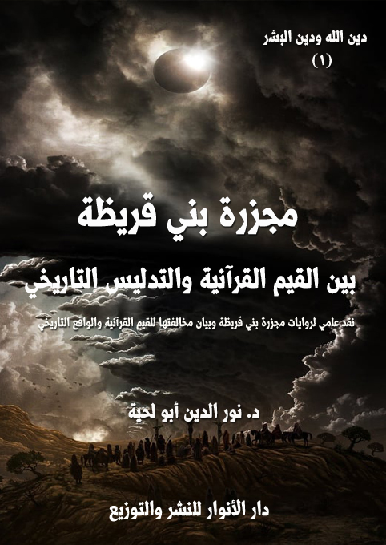

الكتاب: مجزرة بني قريظة بين القيم القرآنية والتدليس التاريخي
الناشر: مؤسسة العرفان للثقافة الإسلامية
الطبعة: الأولى، 1439 هـ
عدد الصفحات: 205
ISBN: 978-620-3-85912-6
لمطالعة الكتاب من تطبيق مؤلفاتي المجاني وهو أحسن وأيسر: هنا

التعريف بالكتاب
يحاول هذا الكتاب أن يقدم ردا علميا مفصلا على أخطر الجرائم التي نسبت للإسلام، ولرسول الله صلى الله عليه وآله وسلم، زورا وبهتانا، وهي تلك المجزرة التي يذكر المؤرخون وأصحاب السير حصولها في غزوة بني قريظة، وتم فيها ـ كما يذكرون ـ إبادة جميع الرجال، واستحياء النساء والأطفال، ثم بيعهم والمتاجرة بهم.
وقد اعتمد مجموعة أدلة يؤدي بعضها إلى بعض.. وهي مقسمة إلى الأصناف التالية:
أولا ـ المجزرة.. والتصنيف الديني: وفيه بيان سبب قبول أكثر العلماء لهذه المجزرة على الرغم من ضعف أدلتها واضطرابها، وهو تصنيفهم لها باعتبارها حدثا تاريخيا، والتساهل في نفس الوقت مع أمثال هذه الأحداث، ولو أنهم صنفوها ضمن العقائد أو الفقه، لما قبلها واحد منهم.
ثانيا ـ المجزرة.. والتدليس اليهودي: وفيه الأدلة القاطعة على دور اليد اليهودية في إشاعة الروايات المرتبطة بها ونشرها، واستغلال تساهل المحدثين في ذلك.
ثالثا ـ المجزرة.. والفئة الباغية: وفيه الأدلة القاطعة على الارتباط بين رواة المجزرة والفئة الباغية من بني أمية أو بني العباس، والذين راحوا يستثمرون هذه الحادثة في تبرير جرائمهم.
رابعا ـ المجزرة.. وحاكمية الشريعة: وفيه الأدلة القاطعة على كون أحداث المجزرة تتناقض تماما مع النصوص القطعية التي تبين حاكمية الشريعة الإسلامية، وحاكمية رسول الله صلى الله عليه وآله وسلم على الأمة، بخلاف ما يذكر رواة المجزرة من أن الحكم فيها كان لسعد، والحاكمية فيها كانت للتوراة.
مجزرة بني قريظة بين القيم القرآنية والتدليس التاريخي (6)
تحاول هذه السلسلة أن ترد بطريقة علمية ومنهجية على ما أدخل على الإسلام من تحريفات شوهت قيمه الرفيعة، ومعانيه النبيلة، وألصقت به الكثير من التهم التي كانت حجابا بين أكثر البشر واتباعه.
وقد نص القرآن الكريم على هذا، فذكر أن الشيطان وإن يئس من أن يقضي قضاء تاما على الدين الحقيقي، فإنه لا ييأس من استغلال رجال الدين لتحريفه وتبديل القيم التي جاء بها، وتحويلها من قيم إلهية ممتلئة بالجمال، إلى قيم بشرية ممتلئة بالضلال، كما قال تعالى: {فَوَيْلٌ لِلَّذِينَ يَكْتُبُونَ الْكِتَابَ بِأَيْدِيهِمْ ثُمَّ يَقُولُونَ هَذَا مِنْ عِنْدِ اللَّهِ لِيَشْتَرُوا بِهِ ثَمَنًا قَلِيلًا فَوَيْلٌ لَهُمْ مِمَّا كَتَبَتْ أَيْدِيهِمْ وَوَيْلٌ لَهُمْ مِمَّا يَكْسِبُونَ} [البقرة: 79]، وقال: {وَإِذْ أَخَذَ اللَّهُ مِيثَاقَ الَّذِينَ أُوتُوا الْكِتَابَ لَتُبَيِّنُنَّهُ لِلنَّاسِ وَلَا تَكْتُمُونَهُ فَنَبَذُوهُ وَرَاءَ ظُهُورِهِمْ وَاشْتَرَوْا بِهِ ثَمَنًا قَلِيلًا فَبِئْسَ مَا يَشْتَرُونَ} [آل عمران: 187]
وذكر سبب ذلك، وهو اتباع الأهواء، والركون إلى الدنيا، وإلى أهلها، طلبا لما عندهم من الأموال والجاه، كما قال تعالى: {يَاأَيُّهَا الَّذِينَ آمَنُوا إِنَّ كَثِيرًا مِنَ الْأَحْبَارِ وَالرُّهْبَانِ لَيَأْكُلُونَ أَمْوَالَ النَّاسِ بِالْبَاطِلِ وَيَصُدُّونَ عَنْ سَبِيلِ اللَّهِ} [التوبة: 34]
وهذه الآيات الكريمة لا تخبر فقط عن الانحراف الواقع في الأديان السابقة، بل تحذر من وقوعها في الإسلام، كما قال رسول الله صلى الله عليه وآله وسلم: (لأنا من غير الدّجّال أخوف عليكم من الدّجّال) فقيل: وما ذلك؟ فقال: (من الأئمّة المضلّين) (1)، وقال: (يكون في آخر الزّمان عبّاد جهّال وعلماء فسّاق) (2)، وقال: (هلاك أمّتى عالم فاجر وعابد جاهل وشرّ الشّرار شرار العلماء،
__________
(1) مسند أحمد بن حنبل، أحمد بن حنبل، دار الفكر، بيروت 1/ 98 (765)
(2) المستدرك على الصحيحين، الحاكم النيسابوري، محمد بن عبد الله، بيروت، لبنان، دار الكتب العلمية، ط 2، 1422 هـ/2002 م، (4/ 351، رقم 7883)
مجزرة بني قريظة بين القيم القرآنية والتدليس التاريخي (7)
وخير الخيار خيار العلماء) (1)
وغيرها من النصوص الكثيرة التي تبين أن هذه الأمة ستتأثر بما حصل لغيرها من الأمم، فتحرف وتبدل القيم الرفيعة للدين، وتحوله من الاستقامة إلى الاعوجاج، كما قال تعالى يصف القائمين على ذلك: {الَّذِينَ يَصُدُّونَ عَنْ سَبِيلِ اللَّهِ وَيَبْغُونَهَا عِوَجًا وَهُمْ بِالْآخِرَةِ كَافِرُونَ} [الأعراف: 45]
وبناء على هذا حاولت هذه السلسلة أن تحاكم الكثير من القضايا الواردة في كتب الفقه أو العقائد أو السيرة أو التفسير أو الحديث وغيرها إلى القيم القرآنية الأصيلة التي دعينا إلى التحاكم إليها في حال النزاع، أو لرد المتشابه، كما قال تعالى: {هُوَ الَّذِي أَنْزَلَ عَلَيْكَ الْكِتَابَ مِنْهُ آيَاتٌ مُحْكَمَاتٌ هُنَّ أُمُّ الْكِتَابِ وَأُخَرُ مُتَشَابِهَاتٌ فَأَمَّا الَّذِينَ فِي قُلُوبِهِمْ زَيْغٌ فَيَتَّبِعُونَ مَا تَشَابَهَ مِنْهُ ابْتِغَاءَ الْفِتْنَةِ وَابْتِغَاءَ تَأْوِيلِهِ وَمَا يَعْلَمُ تَأْوِيلَهُ إِلَّا اللَّهُ وَالرَّاسِخُونَ فِي الْعِلْمِ يَقُولُونَ آمَنَّا بِهِ كُلٌّ مِنْ عِنْدِ رَبِّنَا وَمَا يَذَّكَّرُ إِلَّا أُولُو الْأَلْبَابِ} [آل عمران: 7]
وقد اخترنا لها هذا العنوان [دين الله.. ودين البشر]، باعتبارها تحاول نقض دين البشر، لرده لدين الله؛ فلا يمكن أن يجتمع الدينان في محل واحد، بل لابد من الكفر بأحدهما والبراءة منه ليتحقق الدين الآخر، كما قال تعالى في السورة المخصصة لذلك: {قُلْ يَاأَيُّهَا الْكَافِرُونَ (1) لَا أَعْبُدُ مَا تَعْبُدُونَ (2) وَلَا أَنْتُمْ عَابِدُونَ مَا أَعْبُدُ (3) وَلَا أَنَا عَابِدٌ مَا عَبَدْتُمْ (4) وَلَا أَنْتُمْ عَابِدُونَ مَا أَعْبُدُ (5) لَكُمْ دِينُكُمْ وَلِيَ دِينِ (6)} [الكافرون: 1 - 6]
__________
(1) قال العراقي في [تخريج أحاديث إحياء علوم الدين، العِراقي (725 - 806 هـ)، ابن السبكى (727 - 771 هـ)، الزبيدي (1145 - 1205 هـ)، استِخرَاج: أبي عبد اللَّه مَحمُود بِن مُحَمّد الحَدّاد (1374 هـ -؟)، دار العاصمة للنشر – الرياض، الطبعة: الأولى، 1408 هـ - 1987 م، (1/ 187)]: (أما أول الحديث فلم أجد له أصلاً وأما آخره فرواه الدارمي في مسنده من رواية بقية عن الأحوص بن حكيم عن أبيه قال سأل رجل النبي - (- عن الشر فقال لا تسألوني عن الشر وسلوني عن الخير يقولها ثلاثاً ثم قال إلاّ أن شر الشرار شرار العلماء وخير الخيار خيار العلماء وهذا مرسل ضعيف فبقية مدلس وقد رواه بالعنعنة والأحوص ضعفه ابن معين والنسائي وأبوه تابعي لا بأس به)
مجزرة بني قريظة بين القيم القرآنية والتدليس التاريخي (8)
وهذه السورة الكريمة، وبالطريقة العجيبة التي صيغت بها، والممتلئة بالقوة، تدعو إلى التعامل مع دين البشر بكل حزم، بل تدعو إلى قيام مفاصلة كاملة بين الدينين؛ فلا يمكن أن يجتمعا في محل واحد.
ودين البشر ـ كما ورد في الكثير من النصوص المقدسة ـ ليس فقط ذلك الدين الوثني الواضح، وإنما يدخل فيه أيضا الكثير من الوثنيات والانحرافات والجاهليات التي دخلت في الإسلام، كما دخلت قبله في سائر الأديان.. فالجاهلية ليست وليدة فترة معينة، ولا دين معين، بل هي تتلبس بكل الأديان، وتحاول أن تجرها إلى الانحراف.
مجزرة بني قريظة بين القيم القرآنية والتدليس التاريخي (9)
يحاول هذا الكتاب أن يقدم ردا علميا مفصلا على أخطر الجرائم التي نسبت للإسلام، ولرسول الله صلى الله عليه وآله وسلم، وهي تلك المجزرة التي يذكر المؤرخون وأصحاب السير حصولها في غزوة بني قريظة، وتم فيها ـ كما يذكرون ـ إبادة الرجال، واستحياء النساء والأطفال، ثم بيعهم والمتاجرة بهم.
وهي للأسف تضع رسول الله صلى الله عليه وآله وسلم زورا وبهتانا، في نفس الخانة التي يوضع فيها السفاحون والمجرمون والقتلة، ولذلك لا نستغرب احتلالها مساحات هائلة من كتب المستشرقين والمبشرين والحداثيين والمستغربين وكل أعداء الدين، فهي فرصتهم الكبرى لتشويه الإسلام، وتبيين مدى دمويته.
ومن الأمثلة على ذلك قول [وليم موير] (1) (1819 - 1905 م)، وهو يصور هذه الحادثة تحت عنوان (الحكم الدموي الحزين)، حيث قال: (كان مشهد نطق الحكم على بني قريظة جديراً بالتصوير بريشة رسام، في الخلفية جيش المدينة عيونهم على الغنائم والأشياء المنزلية، والدروع، والطيور الجميلة، وفي ركن الصورة مجموعات من مئات اليهود، أيديهم إلى ظهورهم، والكآبة واليأس المشؤم على وجوههم، وعن يسارهم النساء والأطفال الضعاف، مرعوبين من الإرهاب، أو محمومين من الحزن) (2)
وقال آخر يصفها، ويستثمرها أبشع استثمار: (ثم بعثوا إلى محمد يطلبون منه أن يرسل إليهم أبا لبابة ليستشيروه، وكان حليفاً لهم، لعلهم يتعرفون منه ماذا سيحل بهم وكيف سيفعل
__________
(1) مستشرق ومبشر وموظف إداري تعلم الحقوق في جامعتي جلاسكو وأدنبرة، عين في الإدارة المدنية لشركة الهند الشرقية في أقرا بالهند منذ عام 1847 م، وأثناء ذلك تعلم العربية وعني بالتاريخ الإسلامي، ثم أُختير رئيساً لجامعة أدنبرة (1885 - 1902 م) من كتبه [حياة محمد والتاريخ الإسلامي] انظرك عبد الحميد صالح حمدان: طبقات المستشرقين، ص 203..
(2) William Muir:Life of Mohammed from the original sources،4\274.
مجزرة بني قريظة بين القيم القرآنية والتدليس التاريخي (10)
بهم محمد وأصحابه، وبماذا سيحكم فيهم؛ فلما جاءهم قام إليه الرجال، وجهش النساء والصبيان بالبكاء، وقالوا: (يا أبا لبابة أترى أن ننزل على حكم محمد؟)، قال: نعم، وأشار بيده إلى حلقه ـ يقول لهم إنه الذبح ـ والعجيب ان بني قريظة استشاروا أبا لبابة، فأشار إليهم أَنَّهُ الذَّبْحُ لكنه نصحهم بالاستسلام شفقة بالنساء والأطفال فقط، وأشار بيده نحو رقبته، وهو ينظر للرجال مشيرا إلى أن مصيرهم سيكون الذبح، أي أن الرجل قال لهم: إن محمدا سيذبحكم، فأين أكاذيب الإنسانية وسماحة محمد.. وكل هذا قبل حكم الله فيهم، فمن أين عرف هذا الصحابي أن محمدا سيذبحهم إن لم تكن هذه هي سيرته في أعدائه ومخالفيه) (1)
وقال عند ذكر اختيارهم لحكم سعد بن معاذ، ورغبتهم عن حكم رسول الله صلى الله عليه وآله وسلم: (فهرب القوم من محمد إلى سعد بن معاذ الذي كان مجروحا، ومات بعد ذلك إثر جرحه، فكيف شارك بنو قريظة، وهم لا يعلمون بجرح معاذ، أوليس هذا يعني أن القوم كانوا في غفلة من أمرهم، مشغولون بأعمالهم، وهذا ما أكدته الكثير من الروايات، وما كان من ذم صادر لبني قريظة من أبي سفيان كونهم لم يجتمعوا معه على حرب محمد، فهل يتأمل الإنسان ويفكر في هذا أم أنه اثر العماء على البصيرة والنور.. ثم كيف أجاز محمد لجريح، جرحه غائر يؤدي للموت أن يحكم بأمر هؤلاء؟ هذا لعمري أعجب العجب)
وغيرها من المقولات الكثيرة التي لا يمكن الاكتفاء في الرد عليها باتهام أصحابها بتبنيهم لأحكام مسبقة على الإسلام وعلى رسول الله صلى الله عليه وآله وسلم، لأن هذا، وإن كان صحيحا في الجملة، إلا أننا مع ذلك لا نستطيع أن نقر بأن الحادثة يسيرة، وأنه يمكن الإجابة عنها بمثل تلك الأجوبة الباهتة، والتي تصورها وكأنها حدث عادي يمكن المرور عليه بسهولة.
بل إن بعض الإجابات المنفعلة تسيء إلى الإسلام وإلى رسول الله صلى الله عليه وآله وسلم أكثر مما ترد على
__________
(1) انظر مقالا بعنوان: بنو قريظة وهلوسات محمد بين القتل والسبي والاغتصاب، موقع الحقيقة في كشف الحقائق المخفية، 19 يونيو 2014.
مجزرة بني قريظة بين القيم القرآنية والتدليس التاريخي (11)
الشبهة، حيث أنها تنقل ما ورد في أحكام تلك المجزرة من نصوص في الكتاب المقدس، وتبين أن رسول الله صلى الله عليه وآله وسلم أقرها، مع علمهم بأن هذا الدين نسخ ما قبله، وأن شريعة الإسلام السمحة قضت على تلك التحريفات التي أضافها أهل الكتاب لكتبهم.
بل إن بعض تلك الإجابات لم تكتف بذلك، وإنما راحت تذكر جرائم البشر، وأنه لا يمكن مقارنتها بما حصل في تلك المجزرة، وهذا أيضا، نوع من الاعتراف بكونها مجزرة، وإن كانت خفيفة.. فكونها كذلك لا يلغي كونها جريمة.
ولذلك رأيت أن المنهج الأسلم فيها هو بحث أصلها وجذورها، لا مجرد تبريرها والدفاع عنها، ذلك أن كل تلك التبريرات لن يتقبلها إلا أصحابها الذين نطقوا بها، وربما يتقبلونها بمضض.
وبناء على هذا رأيت دراستها في هذا الكتاب دراسة علمية ومتأنية، ووفق منهجية واضحة، حتى يُزال الإشكال عنها، لا لكونها أصبحت مطية للمبشرين والمستشرقين والمستغربين والحداثيين فقط ـ كما ذكرنا ـ وإنما لكونها أصبحت أيضا مطية للإرهاب، ولكل من يريد أن يشوه الإسلام من خلاله.
فلا يمكن لمن يؤمن بهذه الحادثة، ويرى صدقها أن يقنع العالم بأن ما تمارسه داعش والقاعدة والنصرة من قتل الرجال، وسبي النساء، والاستيلاء على الأموال بدعة إرهابية، وهو في نفس الوقت يؤمن بأن رسول الله صلى الله عليه وآله وسلم أمر ـ تنفيذا لحكم سعد ـ بقتل ذلك العدد الضخم من القرظيين حتى المراهقين منها، بل حتى الصبية، ثم الاستيلاء على أموالهم ونسائهم، واعتبار رسول الله صلى الله عليه وآله وسلم نفسه أحد من اقتسموا أولئك النسوة.
لكن للأسف يواجَه كل من يطالب بإعادة النظر في هذه الحادثة وفق الأصول العلمية، بكونه عاطفيا، أو محاربا للتراث، أو سطحيا، لا يتناول المسائل بعمق، وغيرها من الألقاب، وهو ما جعل الكثير يتهيب من مخالفة الموروث والتقاليد حتى لا يُتهم في دينه وعلمه.
مجزرة بني قريظة بين القيم القرآنية والتدليس التاريخي (12)
وكل ذلك دعاوى مجردة؛ فالعالم الحقيقي ليس ذلك الذي يسمع القول، ويخضع له، بل هو الذي يقلب النظر فيه، ويدرسه من كل الزوايا، ومن جميع الاعتبارات، إلى أن يصل للحقيقة، وحينها لا يهمه من وافقه فيها أو خالفه؛ فالحقيقة هي الهدف الأكبر، ولا يمكن لأي شخص من الناس مهما بلغ علمه أن يدعي أنه يملكها، بل الكل يحاول الوصول إليها، وقد يهتدي إليها قوم، ويضل عنها آخرون، مع كونهم أكثر علما، وأصوب رأيا؛ فالهداية فضل الله يؤتيه من يشاء، وقد قال رسول الله صلى الله عليه وآله وسلم: (نضر الله امرءا سمع مقالتي فوعاها، فأداها كما سمعها، فرب مبلغ أوعى من سامع ورب حامل فقه وليس بفقيه، ورب حامل فقه إلى من هو أفقه منه) (1)
ولهذا رد الإمام الحسين بشدة على تلك الإشاعة التي كانت منتشرة في زمانه، والتي لا يزال الرواة ينقلونها، وهي أن تشريع الآذان كان بسبب رؤيا رآها الصحابي عبد الله بن زيد؛ فأخبر بها النبي صلى الله عليه وآله وسلم فأمر صلى الله عليه وآله وسلم به؛ فأنكر الإمام الحسين ذلك بشدة، وقال: (الوحي يتنزّل على نبيّكم، وتزعمون أنّه أخذ الأذان عن عبد الله بن زيد، والأذان وجه دينكم) (2)
وهكذا أنكرت أم المؤمنين عائشة على أبي هريرة إنكارا شديدا ما رواه عن رسول الله صلى الله عليه وآله وسلم أنه قال: (يقطع الصلاة المرأة والحمار والكلب، ويقي ذلك مثل مؤخرة الرحل) (3)، وقالت: (قد شبهتمونا بالحمير والكلاب. والله لقد رأيت رسول الله صلى الله عليه وآله وسلم يصلي وإني على السرير
__________
(1) سنن الترمذي (الجامع الكبير)، محمد بن عيسى بن سَوْرة بن موسى بن الضحاك، الترمذي، أبو عيسى (المتوفى: 279 ه)، حققه بشار عواد معروف، دار الغرب الإسلامي، بيروت، سنة النشر 1998 م، رقم 2659، سنن ابن ماجَة، محمّد بن يزيد بن ماجة القزويني، بيروت: دار إحياء التراث العربي، 1/ 84.
(2) دعائم الإسلام، النعمان بن محمّد التميميّ، بيروت، دار الأضواء، 1411 هـ، 1/ 143، 133. مستدرك الوسائل ومستنبط المسائل، الطبع الجديد، المحدث النوري، تحقيق مؤسسة آل البيت ? لإحياء التراث، الطبعة الأولى، 1407 ه، 4/ 17 حديث 4062.
(3) صحيح مسلم، مسلم بن الحجّاج القشيري النيسابوري (206، 261 ق)، بيروت: دار الفكر، 1398 ق، الطبعة الثانية، (1/ 365، رقم 511)
مجزرة بني قريظة بين القيم القرآنية والتدليس التاريخي (13)
بينه وبين القبلة مضطجعة، فتبدو لي الحاجة، فأكره أن أجلس فأوذي رسول الله صلى الله عليه وآله وسلم فأنسل من عند رجليه) (1)
وردت عليه ما رفعه إلى النبي صلى الله عليه وآله وسلم من قوله: (إنما الطيرة في المرأة، والدابة، والدار) بغضب شديد، وصفه الراوي بقوله: (فطارت شقة منها في السماء، وشقة في الأرض)، ثم قالت: (والذي أنزل القرآن على أبي القاسم ما هكذا كان يقول، ولكن نبي الله صلى الله عليه وآله وسلم كان يقول: (كان أهل الجاهلية يقولون: الطيرة في المرأة والدار والدابة، ثم قرأت عائشة: {مَا أَصَابَ مِنْ مُصِيبَةٍ فِي الْأَرْضِ وَلَا فِي أَنْفُسِكُمْ إِلَّا فِي كِتَابٍ مِنْ قَبْلِ أَنْ نَبْرَأَهَا إِنَّ ذَلِكَ عَلَى اللَّهِ يَسِيرٌ} [الحديد: 22]) (2)
وهذه الروايات التي ردتها أم المؤمنين أو ردها الإمام الحسين، ومثلهما ردود كثيرة، لا تزال موجودة في تراث المحدثين، وربما أسانيدها أقوى من الأسانيد التي نقلت بها حادثة بني قريظة، فهل يمكن اعتبار تلك الردود ردودا سطحية عاطفية لا تتسم بالعلمية، أم أن العلم الحقيقي هو الذي لا يستسلم للإشاعات وللكثرة، بل يحقق إلى أن يصل إلى النتيجة مهما كانت؟
بناء على هذا نحاول في هذا الكتاب أن ندرس هذه الحادثة عبر مجموعة أدلة يؤدي بعضها إلى بعض، أو يتربت بعضها على بعض، وكلها مستلهمة من القرآن الكريم، باعتباره المركز، والمحور الذي تناقش من خلاله القضايا المختلفة.
وننبه هنا ـ كما نبهنا في القضايا المشابهة لها ـ إلى أن تفنيدنا لهذه الحادثة لا يعني عدم احترامنا للعلماء الذين قالوا بها، بل إننا نحسب أنهم لكثرة مؤلفاتهم، وأعمالهم، ربما لم يتفرغوا لدراستها دراسة متأنية؛ فاعتمدوا فيها التقليد، ولم يعتمدوا الاجتهاد، لاقتناعنا بأن أي شخص
__________
(1) رواه أحمد، 6/ 41، 78، صحيح البخاري، محمّد بن إسماعيل البخاري، دمشق وبيروت: دار ابن كثير واليمامة للطباعة والنشر والتوزيع، 1414 هـ، 1/ 136، ومسلم 2/ 60.
(2) رواه أحمد: 6/ 240 وفي 6/ 246.
مجزرة بني قريظة بين القيم القرآنية والتدليس التاريخي (14)
يعمل اجتهاده فيها سيصل إلى ما وصلنا إليه.
وقد رأينا تقسيم البحث بحسب الأدلة التي اعتمدناها فيه إلى أربعة فصول، وهي:
أولا ـ المجزرة.. والتصنيف الديني: وذكرنا فيه أن سبب قبول أكثر العلماء لهذه المجزرة على الرغم من ضعف أدلتها واضطرابها هو تصنيفهم لها باعتبارها حدثا تاريخيا، والتساهل في نفس الوقت مع أمثال هذه الأحداث، ولو أنهم صنفوها ضمن العقائد أو الفقه، لما قبلها واحد منهم، وقد حاولنا أن نبين ـ لهذا ـ إمكانية بل ضرورة إدراج ما ارتبط من مآس في هذه الغزوة بالعقيدة والفقه، لارتباطها بهما.
ثانيا ـ المجزرة.. والتدليس اليهودي: وذكرنا فيه الأدلة القاطعة على اليد اليهودية في إشاعة الروايات المرتبطة بها ونشرها، واستغلال تساهل المحدثين في رواية المغازي والسير والتفسير للقيام بذلك.
ثالثا ـ المجزرة.. والفئة الباغية: وذكرنا فيه الارتباط بين رواة المجزرة والفئة الباغية من بني أمية أو بني العباس، والذين راحوا يستثمرون هذه الحادثة في تبرير جرائمهم، وسفكهم لدماء الخارجين عليهم، أو الناقديهم لهم بتهمة الخيانة، مثلما حصل في كربلاء والحرة وغيرهما.
رابعا ـ المجزرة.. وحاكمية الشريعة: وذكرنا فيه الأدلة القاطعة على كون أحداث المجزرة تتناقض تماما مع النصوص القطعية التي تبين حاكمية الشريعة الإسلامية، وحاكمية رسول الله صلى الله عليه وآله وسلم على الأمة، بخلاف ما يذكر رواة المجزرة من أن الحكم فيها كان لسعد، والحاكمية فيها كانت للتوراة، مع أن الله تعالى يقول: {وَأَنِ احْكُمْ بَيْنَهُمْ بِمَا أَنْزَلَ اللَّهُ وَلَا تَتَّبِعْ أَهْوَاءَهُمْ وَاحْذَرْهُمْ أَنْ يَفْتِنُوكَ عَنْ بَعْضِ مَا أَنْزَلَ اللَّهُ إِلَيْكَ} [المائدة: 49]، ويقول: {ثُمَّ جَعَلْنَاكَ عَلَى شَرِيعَةٍ مِنَ الْأَمْرِ فَاتَّبِعْهَا وَلَا تَتَّبِعْ أَهْوَاءَ الَّذِينَ لَا يَعْلَمُونَ} [الجاثية: 18]
وننبه في الأخير إلى أن ما يسهل علينا مهمة التحقيق في هذه المجزرة هو أننا لا نشكك في أصل وجود بني قريظة، ولا في كونهم خونة، ولا في أنهم عوقبوا على ذلك، ولا في كثير من
مجزرة بني قريظة بين القيم القرآنية والتدليس التاريخي (15)
الأحداث التي وقعت فيما يطلق عليه [غزوة بني قريظة]، ولكن التشكيك منصرف فقط إلى نوع العقاب الموجه لهم، والذي وقع فيه الاضطراب لدى المؤرخين.
وبذلك لا يمكن لأي كان أن يرد علينا، بأنا ننكر الواضحات المتواترات المشهورات المتفق عليها، وإنما نحن ننكر فقط تلك الروايات التي تصور العقوبة بكونها مجزرة قتل فيها الرجال، واستحيي النساء والأطفال، ثم استعبدوا، وهي روايات مضطربة، ومن رواة مختلف فيهم، ولهم صلة باليهود، أو بالفئة الباغية، كما سنرى.
مجزرة بني قريظة بين القيم القرآنية والتدليس التاريخي (16)
من أول البراهين الدالة على تهافت الروايات المرتبطة بهذه المجزرة عند القائلين بها هو كونها لم تقبل عندهم إلا بسبب تصنيفهم العلمي لها، واعتبارها روايات تؤرخ للسيرة، وليست روايات مرتبطة بالأحكام العقدية أو الفقهية، ولذلك رأوا أنه لا ينجر عنها أي عمل، ولا عقيدة؛ فتساهلوا فيها.
وحالهم في ذلك يشبه حال عطية القرظي الذي يضعونه ضمن الصحابة، وكان في الإمكان أن يوضع ضمن الكفرة المارقين الخائنين الذين صوروهم بأنهم ذبحوا في تلك المجزرة، لسبب بسيط وهو كونه لم ينبت، إما لصغر سنه، أو لتأخر الإنبات، كما قال يتحدث عن نفسه: (كنت في الذين حكم فيهم سعد بن معاذ، فقربت لأقتل؛ فانتزع رجل من القوم إزاري، فرأوني لم أنبت الشعر فألقيت في السبي) (1)
فهذا الحديث الذي يعتبرونه أكبر دليل على تلك المجزرة، ينبئ أنه كان يبدو بالغا وقادرا على القتال، وأنه كان قاب قوسين أو أدنى من القتل، لولا أن ذلك الصحابي راح يتأكد من بلوغه، وعندما وجده لم ينبت، اختلف حاله اختلافا كليا، حيث نال وسام الصحبة وكوفئ بالعدالة مطلقة، التي لا يصح لأحد الجدال فيها، وقد ترجم له كل من ترجم للصحابة
__________
(1) سنن أبي داود، صحيح أبي داود، أبو داود سليمان بن الأشعث السجستاني، تحقيق محمد محيي الدين عبد الحميد، دار إحياء السنة النبوية، بيروت، رقم: 4404، 4405، صحيح الترمذي، سنن الترمذي، أبو عيسى محمد بن عيسى بن سورة، تحقيق أحمد محمد شاكر، دار الفكر، بيروت، رقم: 1584 وقال: حسن صحيح، السنن الكبرى (سنن النسائي الكبرى)، النسائي، أحمد بن شعيب، بيروت، لبنان، مؤسسة الرسالة للطباعة والنشر والتوزيع، ط 1، 1421 هـ/2001 م، 6/ 155، وسنن ابن ماجه، ابن ماجة أبو عبد الله محمد بن يزيد القزويني، حققه محمد فؤاد عبد الباقي، دار إحياء الكتب العربية، رقم: 2541.
مجزرة بني قريظة بين القيم القرآنية والتدليس التاريخي (17)
والثقاة (1).
وهكذا الأمر بالنسبة للروايات المرتبطة بهذه الحادثة؛ فهم تساهلوا فيها، وأذنوا لها بالحياة والاعتبار، وأدانوا من يشكك فيها، بسبب وضعهم لها في خانة السيرة والتاريخ، لا في خانة العقائد والفقه.
ومن الأمور المتفق عليها عند جميع المؤرخين والمحدثين وعلماء السير التساهل في الروايات المرتبطة بالسيرة النبوية، على خلاف تشددهم في الأحكام العقدية والفقهية، وذلك لاعتقادهم أن أحداث السيرة لا علاقة لها بالعمل، ولا بالاعتقاد، وإنما هي مجرد أحداث تاريخية لا يضر الكذب فيها، حتى لو حصل.
ومن الأمثلة على ذلك ما روي أن الإمام أحمد بن حنبل سئل عن موسى بن عُبيدة الربَذَي، وعن محمد بن إسحاق، فقال: (أما محمد بن إسحاق فهو رجل تكتب عنه هذه الأحاديث - كأنه يعني المغازي ونحوها - وأما موسى بن عبيدة فلم يكن به بأس، ولكنه حدث بأحاديث مناكير عن عبد الله بن دينار، عن ابن عمر، عن النبي صلى الله عليه وآله وسلم فأما إذا جاء الحلال والحرام أردنا قوما هكذا)، وقبض الراوي على أصابع يديه الأربع من كل يد، ولم يضم الإبهام (2).
__________
(1) قال عنه ابن عبد البر: (لا أعرف اسم أبيه. وقال البغوي وابن حبان: سكن الكوفة، فروى حديثه أصحاب السنن من طريق عبد الملك بن عمير عنه، قال: كنت فيمن حكم عليهم سعد بن معاذ فشكّوا فيّ فتركوني)، انظر: أسد الغابة في معرفة الصحابة، أبو الحسن علي بن أبي الكرم، عز الدين ابن الأثير، المحقق: علي محمد معوض - عادل أحمد عبد الموجود، دار الكتب العلمية، الطبعة: الأولى، 1415 هـ - 1994 م، (3695)، 34، تحفة الأشراف بمعرفة الأطراف، جمال الدين أبو الحجاج يوسف بن عبد الرحمن المزي، المحقق: عبد الصمد شرف الدين، طبعة: المكتب الإسلامي، والدار القيّمة، الطبعة 2، 1403 هـ، 1983 م، 7/ 298.
(2) تاريخ ابن معين برواية الدوري، ابن معين، يحيى بن معين، تحقيق: عبد الله أحمد حسن، بيروت، لبنان، دار القلم للطباعة والنشر والتوزيع، د. ت، (3/ 60)
مجزرة بني قريظة بين القيم القرآنية والتدليس التاريخي (18)
أي أنهم يتشددون في الروايات المرتبطة بالأحكام الشرعية، ويتساهلون في غيرها، ولذلك ذكر أنه يمكن الرواية عن ابن إسحق، لكن فيما يتعلق بالسيرة فقط، أما ما عداها، فلا تقبل روايته.
وهكذا قال الحاكم في الأحاديث التي أراد استدراكها على الصحيحين، فقد قال: (وأنا بمشيئة الله أُجري الأخبار التي سقطت على الشيخين في كتاب الدعوات على مذهب أبي سعيد عبد الرحمن بن مهدي في قبولها، فإني سمعت أبا زكريا يحيى بن محمد العنبري، يقول: سمعت أبا الحسن محمد بن إسحاق بن إبراهيم الحنظلي، يقول: كان أبي يحكي، عن عبد الرحمن بن مهدي، يقول: إذا روينا، عن النبي صلى الله عليه وآله وسلم في الحلال والحرام والأحكام: شددنا في الأسانيد، وانتقدنا الرجال، وإذا روينا في فضائل الأعمال، والثواب والعقاب، والمباحات والدعوات: تساهلنا في الأسانيد) (1)
وهكذا اتفق جميع المحدثين على التساهل في الرواية فيما عدا الحلال والحرام، ولهذا نرى كتب التفسير والتاريخ والسيرة مملوءة بالأحاديث التي لا سند لها، بل الأحاديث الموضوعة، باعتبارهم لا يلقون كبير بال لها.
وقد عقد الخطيب البغدادي في كتابه [الكفاية في علم الرواية] الذي يعتبر مصدرا من مصادر علم الحديث الأولى، بابا بعنوان [باب التشدد في أحاديث الأحكام، والتجوز في فضائل الأعمال]، وقد قال في مقدمته: (قد ورد عن غير واحد من السلف أنه لا يجوز حمل الأحاديث المتعلقة بالتحليل والتحريم إلا عمن كان بريئا من التهمة، بعيدا من الظنة، وأما أحاديث الترغيب والمواعظ ونحو ذلك فإنه يجوز كتبها عن سائر المشايخ) (2)، وهم يعتبرون أن السيرة
__________
(1) رواه الحاكم في المستدرك (1/ 666)
(2) الكفاية في علم الرواية، أبو بكر أحمد بن علي بن ثابت بن أحمد بن مهدي الخطيب البغدادي، المحقق: أبو عبدالله السورقي، إبراهيم حمدي المدني، المكتبة العلمية، المدينة المنورة، (ص: 133).
مجزرة بني قريظة بين القيم القرآنية والتدليس التاريخي (19)
والتاريخ ونحوهما من أبواب المواعظ والقصص، وهي بذلك أدنى درجة من أحاديث الترغيب والترهيب نفسها.
وقد نقل البغدادي عن سفيان الثوري، وهو من يعتبرونه أمير المؤمنين في الحديث قوله: (لا تأخذوا هذا العلم في الحلال والحرام إلا من الرؤساء المشهورين بالعلم، الذين يعرفون الزيادة والنقصان، ولا بأس بما سوى ذلك من المشايخ) (1)
ونقل عن ابن عيينة قوله: (لا تسمعوا من بقية ما كان في سنة، واسمعوا منه ما كان في ثواب وغيره) (2)
وبناء على هذا، فإن كل من رووا أحداث السيرة النبوية ابتداء من العصر الأول كانوا من المتساهلين في روايتها، حيث غلب عليهم التدليس وغيره، حتى لو كانوا ثقاة في مسائل الحلال والحرام، وقد عبر عن ذلك ابن تيميّة في [مقدمة أصول التفسير] بقوله: (ومعلوم أن المنقول في التفسير أكثرُهُ كالمنقول في المغازي والملاحم؛ ولهذا قال الإمام أحمد: ثلاثةُ أمورٍ ليس لها إسناد: التفسيرُ، والملاحمُ، والمغازي، ويروى: ليس له أصلٌ، أي: إسنادٌ؛ لأن الغالبَ عليها المراسيل، مثل ما يذكره عروة بن الزبير، والشعبي، والزهري، وموسى بن عقبة، وابن إسحاق، ومَنْ بعدهم، كيحيى بن سعيد الأموي، والوليد بن مسلم، والواقدي ونحوهم في المغازي) (3)
وكان لكل ذلك آثاره الخطيرة في تصوير التاريخ الإسلامي، وحياة رسول الله صلى الله عليه وآله وسلم، والكثير من قيم الدين، حيث أصبحت السيرة وسيلة لضرب القرآن الكريم والسنة المطهرة، واستطاع أعداء الدين أن يتسربوا لتشويه الدين من خلالها.
وقد شهد بهذا كل من دعا لتنقيح السيرة النبوية، وتصحيحها، ولاحظ ما سربه أعداء
__________
(1) المرجع السابق، ص 134.
(2) المرجع السابق، ص 134.
(3) مجموع الفتاوى، تقي الدين أبو العباس أحمد بن عبد الحليم بن تيمية الحراني، المحقق: عبد الرحمن بن محمد بن قاسم، مجمع الملك فهد لطباعة المصحف الشريف، المدينة النبوية، المملكة العربية السعودية، 1416 هـ/1995 م، (13/ 346)
مجزرة بني قريظة بين القيم القرآنية والتدليس التاريخي (20)
الدين إليها، كما قال أكرم ضياء العمري مشيرا إلى ذلك عند حديثه عن التساهل في رواية المغازي والسير والتاريخ: (أما اشتراط الصحة الحديثية في قبول الأخبار التاريخية التي لا تمس العقيدة والشريعة ففيه تعسُّف كثيرٌ، والخطر الناجم عنه كبير؛ لأن الروايات التاريخية التي دوَّنها أسلافنا المؤرخون لم تُعامَل معاملة الأحاديث، بل تمَّ التساهل فيها، وإذا رفضنا منهجهم فإن الحلقات الفارغة في تاريخنا ستمثِّل هوَّة سحيقة بيننا وبين ماضينا، مما يولد الحيرة والضياع والتمزق والانقطاع... لكن ذلك لا يعني التخلي عن منهج المحدثين في نقد أسانيد الروايات التاريخية؛ فهي وسيلتنا إلى الترجيح بين الروايات المتعارضة، كما أنها خير مُعين في قبول أو رفض بعض المتون المضطربة أو الشاذة عن الإطار العام لتاريخ أمتنا، ولكن الإفادة منها ينبغي أن تتم بمرونة، آخذين بعين الاعتبار أن الأحاديث غير الروايات التاريخية، وأن الأُولى نالت من العناية ما يمكِّنها من الصمود أمام قواعد النقد الصارمة) (1)
وفي كتابه [مرويات السيرة النبوية بين قواعد المحدثين وروايات الأخباريين] ذكر بعض مظاهر ذلك التساهل الكبير الذي عوملت به روايات السيرة النبوية المطهرة مقارنة بنظيراتها من الروايات المرتبطة بالعقائد والأحكام الفقهية، وغيرها مما صنف فيه المحدثون.
ومن تلك المظاهر ما تميز به المحدثون من أدوات التحقيق التي لم يستعملها نظراؤهم من علماء التاريخ والسير، ومنها عدم اكتفائهم بالرواية الواحدة، وإنما يجمعون الطرق المختلفة، ويقارنون بينها، ليميزوا الصحيح من الدخيل، ومن الأمثلة على ذلك قول مسلم صاحب الصحيح: (فبجميع هذه الروايات ومقابلة بعضها ببعض يتميز صحيحها من سقيمها، ويتبين رواة ضعاف الأخبار من أضدادهم من الحفاظ) (2)
__________
(1) دراسات تاريخية: ص 27..
(2) كتاب التمييز، مسلم بن حجاج النيسابوري (ت:256 هـ)، تحقيق محمد مصطفى الأعظمي، مطبوعات جامعة الرياض، الطبعة الأولى، 1395 هـ، 162.
مجزرة بني قريظة بين القيم القرآنية والتدليس التاريخي (21)
وهذا ما ذكره جميع المحدثين ـ على خلاف الإخباريين الذين يجمعون كل شيء، ولو حصل التناقض بينه والاضطراب من دون تمحيص ولا تحقيق ـ يقول عبدالله بن المبارك: (إذا أردت أن يصح لك الحديث فاضرب بعضه ببعض) (1)، ويقول يحيى بن معين: (إذا كتبت فقمش، وإذا حدثت ففتش) (2)
ومن الأمثلة على تلك المقارنات التي يجرونها بين الروايات (المقارنة بين روايات عدد من الصحابة، والمقارنة بين روايات المحدث الواحد في أزمنة مختلفة، والمقارنة بين مرويات عدد من التلاميذ لشيخ واحد، وبين رواية المحدث ورواية أقرانه، والمقارنة بين الكتاب والمذاكرة، وبين الكتاب والكتاب) (3)
ولو أننا طبقنا هذه الأداة وحدها على ما ورد في الروايات المؤرخة لمجزرة بني قريظة لرميناها عرض الجدار، ذلك أن المسافات بينها هائلة جدا؛ فقد اختلف الرواة في عدد قتلى يهود بني قريظة، بحيث لا يمكن الجمع بينها، فبعض الروايات ذكرت [400]، وبعضها ذكرت [500]، وبعضها ذكرت [600]، وبعضها ذكرت [700]، وبعضها ذكرت [900]، وبعضها ذكرت [40] وغيرها، وهي أعداد يستحيل الجمع بينها.
فمن الروايات الواردة في عدد القتلى ما روي عن الزهري أنه قال: (غدا رسول الله صلى الله عليه وآله وسلم إلى بني قريظة، فحاصرهم حتى نزلوا على حكم سعد بن معاذ، فقضى بأن يقتل رجالهم، وتقسم ذراريهم وأموالهم، فقتل منهم يومئذ أربعون رجلا، إلا عمرو بن سعد، فقال رسول الله صلى الله عليه وآله وسلم: (إنه كان يأمر بالوفاء، وينهى عن الغدر فلذلك نجا)، ودفع رسول الله صلى الله عليه وآله وسلم الزبير إلى ثابت بن قيس بن شماس، فأعتقه..) (4)
__________
(1) محمد مصطفى الأعظمي: مقدمة كتاب التمييز 33.
(2) تاريخ بغداد ـ الخطيب البغدادي، ط الأُولى عام 1417 هـ، دار الكتب العلمية، بيروت، 1/ 43.
(3) محمد مصطفى الأعظمي: مقدمة كتاب التمييز 32 فما بعدها.
(4) الأموال لابن زنجويه، أبو أحمد حميد بن مخلد بن قتيبة بن عبد الله الخرساني المعروف بابن زنجويه (المتوفى: 251 ه)، حققه شاكر ذيب فياض الأستاذ المساعد، بجامعة الملك سعود، مركز الملك فيصل للبحوث والدراسات الإسلامية، السعودية، الطبعة الأولى، 1406 ه، 1986 م، رقم الحديث 359.
مجزرة بني قريظة بين القيم القرآنية والتدليس التاريخي (22)
وقد ذكر الكثير من المؤرخين أن هذه الرواية من أقوى الروايات التي رويت في بيان عدد القتلى، وهي تنسف كل المجزرة نسفا، ذلك أنه من المعلوم أن عدد القادرين على القتال في بني قريظة أكبر من هذا العدد بكثير، وأنهم مع ذلك لم يُقتلوا، وهو دليل على أن الحكم الذي يذكرون أن سعد بن معاذ حكم به غير صحيح، أو لم يُطبق.
ومن الروايات الواردة فيه ما رووه عن جابر بن عبد الله، وأنه قال: (رمى يوم الأحزاب سعد بن معاذ، فقطعوا أكحله، فحسمه رسول الله صلى الله عليه وآله وسلم بالنار، فانتفخت يده، فحسمه أخرى، فانتفخت يده، فنزفه، فلما رأى ذلك، قال: (اللهم لا تخرج نفسى حتى تقر عينى من بنى قريظة)، فاستمسك عرقه، فما قطر قطرة، حتى نزلوا على حكم سعد، فأرسل إليه، فحكم أن تقتل رجالهم، ويستحى نساؤهم وذراريهم، ليستعين بهم المسلمون، قال رسول الله صلى الله عليه وآله وسلم: (أصبت حكم الله فيهم)، وكانوا أربعمائة، فلما فرغ من قتلهم، انفتق عرقه فمات) (1)
وهذه الرواية بالإضافة إلى ما فيها من اضطراب في عدد القتلى مقارنة بغيرها من الروايات، ترمي رسول الله صلى الله عليه وآله وسلم بتهم عظيمة خطيرة؛ فهي تصوره بصورة الذي يفشل في علاجه كل مرة، في نفس الوقت الذي تصور فيه سعد بن معاذ مستجاب الدعوة، وأنه بمجرد دعائه تحقق له ما لم يتحقق لرسول الله صلى الله عليه وآله وسلم نفسه، وسنرى التفاصيل المرتبطة بها في الفصل التالي عند عرضنا لما ورد في تلك الروايات من إساءات لرسول الله صلى الله عليه وآله وسلم.
وهكذا لو رحنا نحلل كل الروايات في عدد القتلى؛ فسنجد أننا لو طبقنا عليها منهج المحدثين، وتعاملنا معها مثل تعاملنا مع أحاديث العقائد والأحكام لرميناها عرض الجدار.
بل لو أننا طبقنا عليها ما طبق في سائر الغزوات، لفعلنا بها ذلك، ومن الأمثلة على ذلك
__________
(1) رواه الترمذي، رقم الحديث 1582، كما صححه الألباني وابن حجر العسقلاني.
مجزرة بني قريظة بين القيم القرآنية والتدليس التاريخي (23)
ما ذكره ابن إسحق من عدد قتلى بدر، فهو لم يكتف بذكر عددهم، وإنما راح يذكر أسماءهم وقبائلهم، وكيف قتلوا، ولم نجده فعل ذلك مع بني قريظة، وكأن القتلى ليسوا بشرا.
فقد عقد ابن هشام فصلا في سيرته التي نقلها عن ابن إسحق بعنوان [من قتل ببدر من المشركين] (1)، عد فيه القتلى عدا دقيقا، ومن الأمثلة على ذلك قوله في القتلى من [من بني عبد شمس]: (وقتل من المشركين يوم بدر من قريش، ثم من بني عبد شمس بن عبد مناف: حنظلة بن أبي سفيان بن حرب بن أمية بن عبد شمس، قتله زيد بن حارثة، مولى رسول الله صلى الله عليه وآله وسلم فيما قال ابن هشام، ويقال اشترك فيه حمزة وعلي وزيد، فيما قال ابن هشام، وقال ابن إسحاق: والحارث بن الحضرمي، وعامر بن الحضرمي حليفان لهم قتل عامرا: عمار بن ياسر، وقتل الحارث: النعمان بن عصر، حليف للأوس، فيما قال ابن هشام. وعمير بن أبي عمير، وابنه: موليان لهم. قتل عمير بن أبي عمير: سالم، مولى أبي حذيفة، فيما قال ابن هشام) (2)
وهكذا فعل مع قتلى المشركين في غزوة أحد، فقد عقد فصلا خاصا بهم، ذكر فيه أسماءهم، وقبائلهم، ومن قتلهم، وكل التفاصيل المرتبطة بهم، ومن الأمثلة على ذلك قوله في تعداد قتلى [بني عبد الدار]: (قال ابن إسحاق: وقتل من المشركين يوم أحد من قريش، ثم من بني عبد الدار بن قصي من أصحاب اللواء: طلحة بن أبي طلحة، واسم أبي طلحة: عبد الله بن عبد العزى بن عثمان بن عبد الدار، قتله علي بن أبي طالب، (و) أبو سعيد بن أبي طلحة، قتله سعد بن أبي وقاص. قال ابن هشام: ويقال: قتله علي بن أبي طالب. قال ابن إسحاق: وعثمان بن أبي طلحة، قتله حمزة بن عبد المطلب، ومسافع ابن طلحة، والجلاس بن طلحة، قتلهما عاصم بن ثابت بن أبي الأقلح. وكلاب ابن طلحة، والحارث بن طلحة، قتلهما قزمان، حليف لبني
__________
(1) السيرة النبوية لابن هشام، عبد الملك بن هشام بن أيوب الحميري المعافري، أبو محمد، جمال الدين، تحقيق: مصطفى السقا وإبراهيم الأبياري وعبد الحفيظ الشلبي، شركة مكتبة ومطبعة مصطفى البابي الحلبي وأولاده بمصر، الطبعة: الثانية، 1375 هـ - 1955 م، (1/ 708)
(2) المرجع السابق، (1/ 708).
مجزرة بني قريظة بين القيم القرآنية والتدليس التاريخي (24)
ظفر) (1)
وهكذا في كل الغزوات ما عدا غزوة بني قريظة مع كثرة ما ذكر فيها من القتلى، لكنه لم يذكرهم، ولا ذكر عددهم بدقة، بل اكتفى بقوله: (قال ابن إسحاق: ثم استنزلوا، فحبسهم رسول الله صلى الله عليه وآله وسلم بالمدينة في دار بنت الحارث، امرأة من بني النجار، ثم خرج رسول الله صلى الله عليه وآله وسلم إلى سوق المدينة، التي هي سوقها اليوم، فخندق بها خنادق، ثم بعث إليهم، فضرب أعناقهم في تلك الخنادق، يخرج بهم إليه أرسالا، وفيهم عدو الله حيي بن أخطب، وكعب بن أسد، رأس القوم، وهم ست مائة أو سبع مائة، والمكثر لهم يقول: كانوا بين الثمان مائة والتسع مائة. وقد قالوا لكعب بن أسد، وهم يذهب بهم إلى رسول الله صلى الله عليه وآله وسلم أرسالا: يا كعب، ما تراه يصنع بنا؟ قال: أفي كل موطن لا تعقلون؟ ألا ترون الداعي لا ينزع، وأنه من ذهب به منكم لا يرجع؟ هو والله القتل! فلم يزل ذلك الدأب حتى فرغ منهم رسول الله صلى الله عليه وآله وسلم) (2)
وهكذا اكتفى بهذه الفقرة التي تعلق بها المستشرقون والمستغربون والإرهابيون، وبعض الذين تساهلوا في الأمر من المحققين، مع العلم أن المسافة بين الأرقام هائلة جدا، وهي تكفي وحدها لنسف الرواية من أصلها.
والعجيب أن هؤلاء الذين ذكرهم، والذين كانوا يتحصنون في حصون مشيدة، جمعوا في دار واحدة، هي دار بنت الحارث، امرأة من بني النجار، من غير أن يبدو أي مقاومة، أو استغاثة أو توسل على الرغم من علمهم بالمصير الذي ينتظرهم.
بناء على هذا نحاول هنا ـ باختصار ـ بيان علاقة هذه المجزرة بأحكام العقائد والفقه، وأنه ينبغي لذلك تطبيق التشدد المرتبط برواياتها على ما روي في هذه الغزوة.
__________
(1) سيرة ابن هشام، (2/ 127).
(2) سيرة ابن هشام، (2/ 240).
مجزرة بني قريظة بين القيم القرآنية والتدليس التاريخي (25)
أولا ـ المجزرة والقضايا العقدية
من الأدلة الكبرى التي يمكن اعتمادها في السجال مع الذين ينتصرون لتلك المجزرة، ويتبنونها، على الرغم من هشاشة أدلتها هو كونهم ينكرون أحداثا أخرى في السيرة، أو ترتبط برسول الله صلى الله عليه وآله وسلم مما رواه أصحاب السير والشمائل، بل حتى أصحاب الحديث، بحجة تعارضها مع قضايا عقدية من أمثال عصمة رسول الله صلى الله عليه وآله وسلم، أو غيرها، بحسب المذاهب التي تتبنى هذا النوع من الإنكار.
وهذا ما يوقعهم في الحرج، ذلك أن تلك الروايات التي يرفضونها قد تكون بطرق أكثر، وبأسانيد أفضل، فكيف يرتضون لأنفسهم أن يردوا القوي، ويقبلوا الضعيف، ثم تكون حجتهم في الرفض مخالفة الرواية للعقيدة، مع أن المجزرة التي يروونها، ويقبلونها، لا تقل في فضاعتها، وفي اصطدامها مع العقيدة الإسلامية من شبيهاتها اللاتي ينكرونها؟
فهذه المجزرة تصطدم أول ما تصطدم بالعدالة الإلهية ـ كما سنرى ـ ذلك أنهم يصورون أن رسول الله صلى الله عليه وآله وسلم قتل أولئك الشباب الصغار وغيرهم من غير أن يقيم عليهم الحجة بدعوتهم للإسلام، وبذلك يكونون قد ماتوا على الكفر، واستحقوا الخلود في جهنم، مع أنهم لم تُتح لهم الفرص الكافية لاستماع الحجج أو فهمها والانصياع لها.
مع العلم أن هؤلاء الذين يذكرون هذا يعتبرون صناديد قريش من أمثال أبي سفيان وصفوان بن أمية وعكرمة بن أبي جهل وهند وغيرهم، من الصحابة الذين يجلونهم، ويحرمون الطعن فيهم، مع ما فعلوه مع رسول الله صلى الله عليه وآله وسلم، وكل ذلك لكونهم لم يُقتلوا، ولو أنهم قتلوا مثلما يذكرون عن قتل أطفال بني قريظة، لسُجلوا ضمن الكفرة المجرمين، لا ضمن الصحابة المبجلين.
وكذلك تصطدم هذه المجزرة بعصمة رسول الله صلى الله عليه وآله وسلم، وتظهره بصورة السفاح القاسي الذي لم ينزل عقوبته على رؤساء المجرمين فقط، وإنما أنزلها على أهلهم أيضا، حيث ذبح شبابهم،
مجزرة بني قريظة بين القيم القرآنية والتدليس التاريخي (26)
وباع نساءهم وأطفالهم مع كونهم لم يرتكبوا أي جريمة، بل مرتكب الجريمة هم الرؤساء، والملأ من بني قريظة، أما عوامهم ونساؤهم وأطفالهم، فلا علاقة لهم بذلك.
ولهذا نرى القرآن الكريم عند ذكره للمجرمين من أهل القرى، يذكر أن المستكبرين منهم والملأ هم الذين يقفون في وجه الرسل لا الضعفاء، والذين لا شك في دخول النساء والأطفال وعوام الناس فيهم، قال تعالى: {وَمَا أَرْسَلْنَا فِي قَرْيَةٍ مِنْ نَذِيرٍ إِلَّا قَالَ مُتْرَفُوهَا إِنَّا بِمَا أُرْسِلْتُمْ بِهِ كَافِرُونَ (34) وَقَالُوا نَحْنُ أَكْثَرُ أَمْوَالًا وَأَوْلَادًا وَمَا نَحْنُ بِمُعَذَّبِينَ} [سبأ: 34، 35]
وهكذا اعتبر رجال الدين من أهل الكتاب هم المتكبرون الذين صدوا عن سبيل الله، وليس عامة الناس، قال تعالى: {يَاأَيُّهَا الَّذِينَ آمَنُوا إِنَّ كَثِيرًا مِنَ الْأَحْبَارِ وَالرُّهْبَانِ لَيَأْكُلُونَ أَمْوَالَ النَّاسِ بِالْبَاطِلِ وَيَصُدُّونَ عَنْ سَبِيلِ اللَّهِ} [التوبة: 34]
وقال عن مشركي قريش: {وَمِنْهُمْ مَنْ يَسْتَمِعُ إِلَيْكَ وَجَعَلْنَا عَلَى قُلُوبِهِمْ أَكِنَّةً أَنْ يَفْقَهُوهُ وَفِي آذَانِهِمْ وَقْرًا وَإِنْ يَرَوْا كُلَّ آيَةٍ لَا يُؤْمِنُوا بِهَا حَتَّى إِذَا جَاءُوكَ يُجَادِلُونَكَ يَقُولُ الَّذِينَ كَفَرُوا إِنْ هَذَا إِلَّا أَسَاطِيرُ الْأَوَّلِينَ (25) وَهُمْ يَنْهَوْنَ عَنْهُ وَيَنْأَوْنَ عَنْهُ وَإِنْ يُهْلِكُونَ إِلَّا أَنْفُسَهُمْ وَمَا يَشْعُرُونَ} [الأنعام: 25، 26]
وبذلك، فإننا ندعو هؤلاء إلى اعتبار هذه الأمثلة وغيرها للدلالة على اعتبار المجزرة من ضمن المسائل العقدية التي يشترطون فيها التواتر، ولا يقبلون فيها أحاديث الآحاد، خاصة إذا تعارضت مع الحقائق العقدية المسلم بها.
ومن الأمثلة على ذلك في المدرسة السنية ما نص عليه المتكلمون من المدرسة الأشعرية والماتريدية وغيرهما من عدم الاحتجاج بأحاديث الآحاد في العقائد (1)، فقد ذكر الماتريدي في
__________
(1) ولم يخالف في هذا إلا أهل الحديث، الذين تبنتهم المدرسة السلفية، ولذلك وقعوا في التجسيم والتشبيه، لكونهم يقبلون أي حديث مهما قلت طرقه، ويبنون عليه عقائدهم.
مجزرة بني قريظة بين القيم القرآنية والتدليس التاريخي (27)
كتاب (التوحيد) و(التأويلات) أن خبر الآحاد لا يوجب العلم، لأنه لا يبلغ مرتبة الخبر المتواتر في إيجاب العلم والشهادة (1).
وقال الناصري في (النور اللامع): (خبر الآحاد يوجب العمل ولا يوجب العلم.. ولا تبنى العقائد على أخبار الآحاد لأنها لا توجب العلم يقينا) (2)
وهكذا نص على هذا أبو البركات النسفي في المنار (3)،وابن الهمام في التحرير (4)، وابن عبد الشكور في مسلم الثبوت (5) وغيرهم كثير.
ومن الأمثلة على اشتراط التواتر في المدرسة الشيعية ما نص عليه الشيخ الطوسي بقوله ـ عن الأحاديث المفسرة للقرآن الكريم: (وأما المتأخرون فكل واحد منهم نصر مذهبه، وتأول على ما يطابق اصله، ولا يجوز لاحد أن يقلد أحدا منهم، بل ينبغي ان يرجع إلى الادلة الصحيحة: إما العقلية، أو الشرعية، من اجماع عليه، أو نقل متواتر به، عمن يجب اتباع قوله، ولا يقبل في ذلك خبر واحد، خاصة اذا كان مما طريقه العلم، ومتى كان التأويل يحتاج إلى شاهد من اللغة، فلا يقبل من الشاهد إلا ما كان معلوما بين اهل اللغة، شائعا بينهم، وأما طريقة الآحاد من الروايات الشاردة، والالفاظ النادرة فانه لايقطع بذلك، ولا يجعل شاهدا على كتاب الله وينبغي أن يتوقف فيه ويذكر ما يحتمله، ولايقطع على المراد منه بعينه، فانه متى قطع بالمراد
__________
(1) التوحيد، 8، 9، التأويلات، 2/ 351.
(2) النور اللامع، 14.
(3) فتح الغفار الجامع لأحكام سنة نبينا المختار، الحسن بن أحمد الرباعي، المحقق: علي بن محمد العمران، دار عالم الفوائد، 1427، 2/ 79.
(4) تيسير التحرير، محمد أمين بن محمود البخاري المعروف بأمير باد شاه، بيروت دار الكتب العلمية، د. ت، 3/ 82.
(5) فواتح الرحموت بشرح مسلم الثبوت، الأنصاري، عبد العلي محمد بن نظام الدين، توفي سنة 1225 هـ مطبوع مع المستصفى، (بغداد، مكتبة المثنى، 1970 م)، (2/ 120،121، 136)
مجزرة بني قريظة بين القيم القرآنية والتدليس التاريخي (28)
كان مخطئا، وان أصاب الحق، كما روي عن النبي صلى الله عليه وآله وسلم لانه قال تخمينا وحدسا ولم يصدر ذلك عن حجة قاطعة وذلك باطل بالاتفاق) (1)
وهكذا ذكر العلامة الطباطبائي في مواضع من [تفسير الميزان] عدم حجية أخبار الآحاد في أبواب العقائد، ومنها ما ذكره عند تفسيره لسورة هود، فقد قال: (والذي استقرّ عليه النظر اليوم في المسألة، أنّ الخبر إن كان متواتراً أو محفوفاً بقرينة قطعية فلا ريب في حجيته، وأما غير ذلك فلا حجية فيه، إلاّ الأخبار الواردة في الأحكام الشرعية الفرعية إذا كان الخبر موثوق الصدور بالظن النوعي، فإن لها حجيةً؛ وذلك أنّ الحجية الشرعية من الاعتبارات العقلائية فتتبع وجود أثر شرعي في المورد يقبل الجعل والاعتبار الشرعي، والقضايا التاريخية والأمور الاعتقادية لا معنى لجعل الحجية فيها؛ لعدم أثر شرعي، ولا معنى لحكم الشارع بكون غير العلم علماً وتعبيد الناس بذلك) (2)
ولهذا نجد هؤلاء وغيرهم حتى من أبناء المدرسة السلفية نفسها من ينكر الكثير من الروايات الواردة في السيرة، لعدم انسجامها مع العقائد التي يتبنونها، وسنذكر هنا بعض الأمثلة والنماذج على ذلك.
وهي من الأحداث التي لقيت الإنكار الكبير من جهات متعددة قديما وحديثا، مع كون أحاديثها لم ترد في كتب السيرة فقط، وإنما وردت أيضا في كتب الحديث، ومع ذلك نجد من العلماء من السنة والشيعة من ينكرها، في نفس الوقت الذي يقبلون فيه للأسف بمجزرة بني قريظة مع كون أدلتها أقل بكثير من أدلة حادثة شق الصدر (3).
__________
(1) التبيان في تفسير القرآن، الطوسي، محمد بن الحسن، بيروت، لبنان، دار إحياء التراث العربي، ط 1، 1409 هـ، (1/ 5)
(2) السيد محمد حسين الطباطبائي، الميزان 10: 351، مؤسسة الأعلمي، بيروت..
(3) رددنا على الحادثة بتفصيل في كتاب: رسول الله والقلوب المريضة، ص 100.
مجزرة بني قريظة بين القيم القرآنية والتدليس التاريخي (29)
فقد ورد حديث شق الصدر على عدة روايات (1) نقلت عن ثلاثة من الصحابة، هم مالك بن صعصعة، وأنس بن مالك، وأبو ذر الغفاري، وقد رواها عنهم الكثير من أقطاب المحدثين من أمثال البخاري ومسلم وابن حبان في كتب الصحيح، وأوردها النسائي والترمذي في سننهما، وأحمد في مسنده، كما صححها الألباني، وذكر الأرنؤوط أن إسنادها صحيح على شرط الشيخين، بل فسر بها بعض المفسرين قوله تعالى: {أَلَمْ نَشْرَحْ لَكَ صَدْرَكَ} [الشرح: 1]، كما فعل الترمذي في سننه والحاكم النيسابوري في [المستدرك على الصحيحين]
من تلك الروايات ما رواه مسلم عن أنس بن مالك: أن رسول الله صلى الله عليه وآله وسلم أتاه جبرئيل، وهو يلعب مع الغلمان، فأخذه وصرعه، فشق عن قلبه، فاستخرج القلب، واستخرج منه علقة؛ فقال: هذا حظ الشيطان منك، ثم غسله في طست من ذهب، بماء زمزم، ثم لأمه، ثم أعاده في مكانه، وجاء الغلمان يسعون إلى أمه ـ يعني ظئره ـ فقالوا: إن محمدا قد قتل، فاستقبلوه، وهو منتقع اللون. قال أنس: وقد كنت أرى أثر ذلك المخيط في صدره) (2)
ومع ذلك كله نجد الكثير من العلماء ينكرونها، ومنهم محمود أبو ريه الذي قال: (إن حديث شق الصدر يأتى مؤيداً لحديث البخارى: (ما من بنى آدم مولود إلا يمسه الشيطان حين يولد فيستهل صارخاً من مس الشيطان، غير مريم وابنها).. وبذلك لم يسلم من طعن الشيطان أحد غيرهما من بنى آدم أجمعين، حتى الرسل: نوح وإبراهيم وموسى وغيرهم، وخاتمهم محمد صلى الله عليه وآله وسلم فانظر واعجب! ولم يقفوا عند ذلك بل كان من رواياتهم أن النبى صلى الله عليه وآله وسلم لم ينج من نخسة الشيطان إلا بعد أن نقذت الطعنة إلى قلبه، وكان ذلك بعملية جراحية تولتها الملائكة بآلات جراحية مصنوعة من الذهب! ونصت هذه الروايات أن صدره صلى الله عليه وآله وسلم قد شق وأخرجت منه العلقة السوداء! وحظ الشيطان كما يقولون، وكأن هذه العملية لم تنجح فأعيد شق صدره..
__________
(1) انظر: الصحيح من سيرة النبي الأعظم، جعفر مرتضى العاملي، دار السيرة، بيروت، ط 1995، ج 2، ص 83 - 98.
(2) صحيح مسلم ج 1 ص 101.
مجزرة بني قريظة بين القيم القرآنية والتدليس التاريخي (30)
وإن هذه العملية الجراحية لتشبه من بعض الوجوه عملية صلب السيد المسيح عليه السلام، وإنما ذكروا ذلك لكى يغفر الله خطيئة آدم التى احتملها هو وذريته من بعده إلى يوم القيامة، وأصبحت فى أعناقهم جميعاً، وتنص العقيدة المسيحية أنه لا يظفر بهذا الغفران إلا من يؤمن بعقيدة الصلب) (1)
وقد ذكر في معرض رده الشبه التي يمكن أن يعتمدها المسيحيون في مناظراتهم مع المسلمين الذين يتبنون أمثال هذه الحادثة، فقال: (ولئن قال المسلمون لإخوانهم المسيحيين: ولم لا يغفر الله لآدم خطيئته بغير هذه الوسيلة القاسية التى أزهقت فيها روح طاهرة بريئة، هى روح عيسى عليه السلام بغير ذنب؟ قيل لهم: ولم لم يخلق الله قلب رسوله الذى اصطفاه كما خلق قلوب إخوانه من الأنبياء والمرسلين – نقياً من العلقة السوداء، وحظ الشيطان بغير هذه العملية الجراحية التى تمزق فيها صدره وقلبه مراراً عديدة!) (2)
ومنهم الدكتور محمد حسين هيكل الذي قال فى كتابه [حياة محمد صلى الله عليه وآله وسلم]: (لا يطمئن المستشرقون، ولا يطمئن جماعة من المسلمين كذلك إلى قصة الملكين هذه، ويرونها ضعيفة السند، فالذى رأى الرجلين فى رواية كُتَّاب السيرة إنما هو طفل لا يزيد على سنتين إلا قليلاً، وكذلك كانت سن محمد يومئذ) (3)
ومنهم الشيخ محمد الغزالي الذي قال في كتابه [فقه السيرة]: (لو كان الشرّ إفراز غدة في الجسم ينحسم بانحسامها؛ أو لو كان الخير مادة يزوّد بها القلب كما تزوّد الطائرة بالوقود، فتستطيع السموّ والتحليق... لقلنا: إنّ ظواهر الاثار مقصودة، ولكن أمر الخير والشر أبعد من ذلك؛ بل من البديهي أنّه بالناحية الروحية في الإنسان ألصق) (4)
__________
(1) أضواء على السنة المحمدية، محمود أبو رية، دارالمعارف، القاهرة، ص 185.
(2) المرجع السابق، ص 186.
(3) حياة محمد، محمد حسين هيكل، دار المعارف، القاهرة، ص 104.
(4) فقه السيرة، محمد الغزالي السقا، دار القلم، دمشق، تخريج الأحاديث: محمد ناصر الدين الألباني، الطبعة: الأولى، 1427 هـ، ص 66.
مجزرة بني قريظة بين القيم القرآنية والتدليس التاريخي (31)
وقد ذكر الفخر الرازي أنها كانت محل استنكار من العلماء المتقدمين، فقد قال في تفسيره لسورة الشرح في التفسير الكبير: (وفي شرح الصدر قولان؛ الأول: ما روي أن جبريل عليه السلام أتاه وشق صدره وأخرج قلبه وغسله وأنقاه من المعاصي، ثم ملأه علمًا وإيمانًا ووضعه في صدره. واعلم أن القاضي طعن في هذه الرواية من وجوه؛ أحدها: أن الرواية أن هذه الواقعة إنما وقعت في حال صغره عليه السلام وذلك من المعجزات، فلا يجوز أن تتقدم نبوته. وثانيها: أن تأثير الغسل في إزالة الأجسام، والمعاصي ليست بأجسام فلا يكون للغسل فيها أثر. ثالثها: أنه لا يصح أن يملأ القلب علمًا، بل الله تعالى يخلق فيه العلوم) (1)
أما علماء المدرسة الشيعية؛ فقد اشتدوا في إنكارها، فمن المتقدمين الذين أنكروها الطبرسي صاحب [مجمع البيان] الذي قال: (مما لا يصح ظاهره، ولا يمكن تأويله إلا على التعسف البعيد؛ لأنه كان طاهرا مطهرا من كل سوء وعيب، وكيف يطهر القلب وما فيه من الاعتقاد بالماء؟) (2)
أما صاحب كتاب [الصحيح من سيرة النبي الأعظم صلى الله عليه وآله وسلم] العلامة جعفر مرتضى العاملي، فقد رد الحادثة ردا شديدا، وذكر لذلك الوجوه الكثيرة، ومنها (3):
1 ـ إن ابن هشام وغيره يذكرون: أن سبب إرجاع الرسول صلى الله عليه وآله وسلم إلى أمه، هو أن نفرا من الحبشة نصارى، رأوه مع مرضعته، فسألوا عنه، وقلبوه، وقالوا لها: لنأخذن هذا الغلام،
__________
(1) 148. مفاتيح الغيب (تفسير الرازي، التفسير الكبير)، الفخر الرازي، محمد بن عمر، بيروت، لبنان، دار الفكر للطباعة والنشر والتوزيع، ط 1، 1401 هـ/1981 م، (32/ 205)
(2) الطبرسي، الفضل بن الحسن، مجمع البيان في تفسير القرآن، بيروت، لبنان، مؤسسة الأعلمي للمطبوعات، ط 1، 1445 هـ/1995 م، (6/ 192)
(3) الصحيح من سيرة النبي الأعظم (، 2/ 86.
مجزرة بني قريظة بين القيم القرآنية والتدليس التاريخي (32)
فلنذهبن به إلى ملكنا وبلدنا (1)، وبذلك تصير الرواية المتقدمة التي تذكر أن سبب إرجاعه إلى أمه هو قضية شق الصدر محل شك وشبهة.
2 ـ كيف يكون شق صدره صلى الله عليه وآله وسلم هو سبب إرجاعه إلى أمه؛ مع أنهم يذكرون أن هذه الحادثة قد وقعت له صلى الله عليه وآله وسلم وعمره ثلاث سنين، أو سنتان وأشهر، مع أنه إنما أعيد إلى أمه بعد أن أتم الخمس سنين؟
3 ـ هل صحيح أن مصدر الشر هو غدة، أو علقة في القلب، يحتاج التخلص منها إلى عملية جراحية؟!.. وهل يعني ذلك أن باستطاعة كل أحد ـ فيما لو أجريت له عملية جراحية لاستئصال تلك الغدة ـ أن يصبح تقيا ورعا، خيّرا؟! أم أن هذه الغدة أو العلقة قد اختص الله بها الرسول الأعظم صلى الله عليه وآله وسلم، وابتلاه بها دون غيره من بني الإنسان؟!. ولماذا دون غيره؟
4 ـ لماذا تكررت هذه العملية أربع، أو خمس مرات، في أوقات متباعدة؟ حتى بعد بعثته صلى الله عليه وآله وسلم بعدة سنين، وحين الإسراء والمعراج بالذات؟! فهل كانت تلك العلقة السوداء، وحظ الشيطان تستأصل، ثم تعود إلى النمو من جديد؟! وهل هي من نوع مرض السرطان الذي لا تنفع معه العمليات الجراحية، والذي لا يلبث أن يختفي حتى يعود إلى الظهور بقوة أشد، وأثر أبعد؟!.. ولماذا لم تعد هذه العلقة إلى الظهور بعد العملية الرابعة أو الخامسة، بحيث يحتاج إلى السادسة، فالتي بعدها؟!.. ولماذا يعذب الله نبيه هذا العذاب، ويتعرض لهذه الآلام بلا ذنب جناه؟! ألم يكن بالإمكان أن يخلقه بدونها من أول الأمر؟!.
5 ـ ألا تعني هذه الرواية: أنه صلى الله عليه وآله وسلم كان مجبرا على عمل الخير، وليس لإرادته فيه أي أثر أو فعالية، أو دور؟! لأن حظ الشيطان قد أبعد عنه بشكل قطعي وقهري، وبعملية جراحية، كان أنس بن مالك يرى أثر المخيط في صدره الشريف!!.
__________
(1) سيرة ابن هشام ج 1 ص 177، وتاريخ الأمم والملوك، الطبري، ابوجعفر محمدبن جرير، بيروت، دارالفكر، 0741 ه/ 1987 م، ج 1 ص 575.
مجزرة بني قريظة بين القيم القرآنية والتدليس التاريخي (33)
6 ـ لماذا اختص نبينا صلى الله عليه وآله وسلم بعملية كهذه ولم تحصل لأي من الأنبياء السابقين عليهم الصلاة والسلام، كما ذكر علماء السير (1)؟، وهل يعقل أن محمدا صلى الله عليه وآله وسلم، كان أفضل الأنبياء وأكملهم، بسبب هذه العملية الجراحية؟! فكيف يكون بذلك أفضل وأكمل منهم؟ أم أنه قد كان فيهم أيضا للشيطان حظ ونصيب لم يخرج منهم بعملية جراحية؛ لأن الملائكة لم يكونوا قد تعلموا الجراحة بعد؟!
8 ـ ألا ينافي ذلك ما ورد في الآيات القرآنية، مما يدل على أن الشيطان لا سبيل له على عباد الله المخلصين، كما قال تعالى حاكيا عن الشيطان: {قَالَ رَبِّ بِمَا أَغْوَيْتَنِي لَأُزَيِّنَنَّ لَهُمْ فِي الْأَرْضِ وَلَأُغْوِيَنَّهُمْ أَجْمَعِينَ (39) إِلَّا عِبَادَكَ مِنْهُمُ الْمُخْلَصِينَ} [الحجر: 39، 40]، وقال: {إِنَّ عِبَادِي لَيْسَ لَكَ عَلَيْهِمْ سُلْطَانٌ إِلَّا مَنِ اتَّبَعَكَ مِنَ الْغَاوِينَ} [الحجر: 42]، وقال: {إِنَّهُ لَيْسَ لَهُ سُلْطَانٌ عَلَى الَّذِينَ آمَنُوا وَعَلَى رَبِّهِمْ يَتَوَكَّلُونَ (99) إِنَّمَا سُلْطَانُهُ عَلَى الَّذِينَ يَتَوَلَّوْنَهُ وَالَّذِينَ هُمْ بِهِ مُشْرِكُونَ} [النحل: 99، 100]، ومن الواضح: أن الأنبياء هم خير عباد الله المخلصين، والمؤمنين، والمتوكلين، فكيف استمر سلطان الشيطان على الرسول الأعظم صلى الله عليه وآله وسلم إلى حين الإسراء والمعراج؟!
هذه بعض وجوه الرد التي قدمها العلامة جعفر مرتضى العاملي، وقد تمنيت لو طبق هذا المنهج في النقد مع حادثة بني قريظة التي لم يبد معها هذه الشدة التي أبداها مع حادثة شق الصدر، مع أنه ذكر الاضطرابات الكثيرة التي اتسمت به رواياتها.
النموذج الثاني حادثة سحر النبي صلى الله عليه وآله وسلم
وهي من الروايات التي لقيت انتقادا شديدا من الكثير من العلماء، مع كونها وردت بأسانيد أقوى من حادثة بني قريظة، ولم يقتصر إنكارها على المتأخرين، بل شملت الكثير من
__________
(1) السيرة الحلبية = إنسان العيون في سيرة الأمين المأمون، علي بن إبراهيم بن أحمد الحلبي، أبو الفرج، نور الدين ابن برهان الدين، الناشر: دار الكتب العلمية – بيروت، الطبعة: الثانية - 1427 هـ. ج 1 ص 368..
مجزرة بني قريظة بين القيم القرآنية والتدليس التاريخي (34)
المتقدمين؛ فقد قال الفخر الرازي في تفسيره عند ذكر سبب نزول المعوذتين وحديث سحر النبي صلى الله عليه وآله وسلم: (قال القاضي هذه رواية باطلة، وكيف يمكن القول بصحتها، والله تعالى يقول: {وَاللّهُ يَعْصِمُكَ مِنَ النَّاسِ} [المائدة: 67] وقال: {وَلَا يُفْلِحُ السَّاحِرُ حَيْثُ أَتَى} [طه: 69] ولأن تجويزه يفضي إلى القدح في النبوة؛ ولأنه لو صح ذلك لكان من الواجب أن يصلوا إلى ضرر جميع الأنبياء والصالحين، ولقدروا على تحصيل الملك العظيم لأنفسهم، وكلُّ ذلك باطلٌ، ولكان الكفار يعيرونه بأنه مسحور. فلو وقعت هذه الواقعة لكان الكفار صادقين في تلك الدعوة، ولحصل فيه - عليه السلام - ذلك العيب، ومعلوم أن ذلك غير جائز) (1)
ومن الذين أنكروها الفقيه والمفسر الحنفي الكبير أبو بكر الجصاص الذي قال في كتابه [أحكام القرآن]: (زعموا أن النبي صلى الله عليه وآله وسلم سُحر، وأن السحر عمل فيه حتى أنه يتخيل أنه يفعل الشيء ولم يفعله.. وقد قال الله تعالى مكذباً للكفار فيما أدعوه من ذلك للنبي صلى الله عليه وآله وسلم: {وَقَالَ الظَّالِمُونَ إِنْ تَتَّبِعُونَ إِلَّا رَجُلًا مَسْحُورًا} [الفرقان: 8].. ومثل هذه الأخبار من وضع الملحدين تلعباً بالحشوا الطغام واستجرار لهم إلى القول بإبطال معجزات الأنبياء عليهم السلام، والقدح فيها) (2)
ومنهم المحدث الكبير جمال الدين القاسمي الذي لم يمنعه تخصصه في علم الحديث من إنكار هذا الحديث، فقد قال: (ولا غرابة في أن لا يقبل هذا الخبر لما برهن عليه، وإن كان مخرَّجاً في الصحاح؛ وذلك لأنه ليس كل مخرج فيها سالماً من النقد، سنداً أو معنى، كما يعرفوه الراسخون. على أن المناقشة في خبر الآحاد معروفة من عهد الصحابة) (3)
__________
(1) تفسير الرازي مفاتيح الغيب، ج 32 ص 172.
(2) أحكام القرآن، أحمد بن علي أبو بكر الرازي الجصاص الحنفي (المتوفى: 370 هـ)، المحقق: عبد السلام محمد علي شاهين، دار الكتب العلمية بيروت – لبنان، الطبعة: الأولى، 1415 هـ/1994 م، 1: 49.
(3) محاسن التأويل، محمد جمال الدين بن محمد سعيد بن قاسم الحلاق القاسمي (المتوفى: 1332 هـ)، المحقق: محمد باسل عيون السود، دار الكتب العلميه – بيروت، الطبعة: الأولى - 1418 هـ، 9/ 577.
مجزرة بني قريظة بين القيم القرآنية والتدليس التاريخي (35)
ومنهم الأستاذ محمد عبده الذي قال في تفسيره لسورة الفلق: (وقد رووا هنا أحاديث في أن النبي صلى الله عليه وآله وسلم سحره لبيد بن الأعصم، وأثّر سحره فيه حتى كان يخيل إليه أنه يفعل الشيء وهو لا يفعله أو يأتي شيئًا وهو لا يأتيه، وأن الله أنبأه بذلك وأخرجت مواد السحر من بئر وعوفي صلى الله عليه وآله وسلم مما كان نزل به من ذلك ونزلت هذه السورة. ولا يخفى أن ثأثير السحر في نفسه عليه السلام حتى يصل به الأمر إلى أن يظن أنه يفعل شيئًا وهو لا يفعله، ليس من قبيل تأثير الأمراض في الأبدان، ولا من قبيل عروض السهو والنسيان في بعض الأمور العادية، بل هو ماس بالعقل، آخذ بالروح، وهو مما يصدّق قول المشركين فيه: {إن تتّبعون إلاّ رجلاً مسحورًا}، وليس المسحور عندهم إلا من خولط في عقله، وخيّل له أن شيئًا يقع وهو لا يقع، فيخيّل إليه أنه يوحى إليه ولا يوحى إليه. وقد كان كثير من المقلّدين الذين لا يعقلون ما هي النبوة وما يجب لها أن الخبر بتأثير السحر في النفس الشريفة قد صح، فيلزم الاعتقاد به، وعدم التصديق به من بدع المبتدعين، لأنه ضرب من إنكار السحر، وقد جاء القرآن بصحة السحر. فانظر كيف ينقلب الدين الصحيح، والحق الصريح في نظر المقلّد بدعة، نعوذ بالله، يحتج على ثبوت السحر، ويعرض عن القرآن في نفيه السحر عنه صلى الله عليه وآله وسلم وعدّه من افتراء المشركين عليه، ويؤول في هذه ولا يؤول في تلك، مع أن الذي قصده المشركون ظاهر لأنّهم كانوا يقولون: إن الشيطان يلابسه عليه السلام، وملابسة الشيطان تعرف بالسحر عندهم وضرب من ضروبه، وهو بعينه أثر السحر الذي نسب إلى لبيد، فإنه قد خالط عقله وإدراكه في زعمهم) (1)
وقال معتذرا عن عدم قبول الحديث بسبب كونه من الآحاد التي لا يؤخذ بها في العقائد: (نعلم أن البخارى أصدق كتاب بعد كتاب الله، وأنا لا أشك أن البخارى سمع هذا من أساتذته، والبخارى يشترط فى أحاديثه المعاصرة واللقاء، إلا أننى أرى أن هذا لم يحدث مع النبى صلى الله عليه وآله وسلم، وإن كان قد دس من الإسرائيليات إلى مشايخ البخارى الذين أخذ منهم، وإلا فإننا
__________
(1) مجلة المنار (33/ 33)
مجزرة بني قريظة بين القيم القرآنية والتدليس التاريخي (36)
إن قد صدقنا أن النبى صلى الله عليه وآله وسلم قد سحر فقد صدقنا كلام الظالمين الذى حكاه القرآن عنهم، {وَقَالَ الظَّالِمُونَ إِنْ تَتَّبِعُونَ إِلَّا رَجُلًا مَسْحُورًا} [الفرقان: 8]، وإن صدقنا أن النبى صلى الله عليه وآله وسلم قد سحر، فقد كذبنا الله سبحانه وتعالى القائل فى كتابه الحكيم: {إِنَّهُمْ عَنِ السَّمْعِ لَمَعْزُولُونَ} [الشعراء: 212].. وأما الحديث على فرض صحته فهو آحاد، والآحاد لا يؤخذ بها فى باب العقائد، وعصمة النبى صلى الله عليه وآله وسلم من تأثير السحر فى عقله عقيدة من العقائد، لا يؤخذ فى نفيها عنه إلا باليقين، ولا يجوز أن يؤخذ فيها بالظن المظنون على أى حال، فلنا بل علينا أن نفوض الأمر فى الحديث، ولا نحكمه فى عقيدتنا، ونأخذ بنص الكتاب، وبدليل العقل، فإنه إذا خولط النبى صلى الله عليه وآله وسلم فى عقله – كما زعموا – جاز عليه أن يظن أنه بلغ شيئا، وهو لم يبلغه، أو أن شيئا نزل عليه، وهو لم ينزل عليه، والأمر هنا ظاهر لا يحتاج إلى بيان) (1)
ومنهم أحمد صبحى منصور الذي قال عنها: (اتهام الرسول صلى الله عليه وآله وسلم بالسحر أو بأن بعضهم سحره فيه تشكيك فى الرسالة، وطعن فى الدين، ويفقد المصداقية فى أى قول أو فعل يصدر منه، ومنه يدخل باب الشك فى الإسلام جملة وتفصيلا، ويتعارض مع قوله تعالى: {إِنْ تَتَّبِعُونَ إِلَّا رَجُلًا مَسْحُورًا} [الإسراء: 47]) (2)
ومنهم صالح الوردانى الذي قال: (وتأتى قضية السحر لتؤكد لنا مدى هامشية شخصية الرسول صلى الله عليه وآله وسلم فى نظر أهل السنة، ومدى إهمال الوحي له، حتى أن بعض السحرة يسحرونه ويسيطرون عليه، فيفعل الشئ ولا يفعله، أو يتخيل فعل الشئ، وهذا يعنى أن الساحر قد هيمن على الرسول نفسيا، ومن الممكن أن يقول على لسانه ما يشاء. ومرة أخرى يطرح السؤال: أين دور الوحي) (3)
__________
(1) تفسير جزء عم، محمد عبده، دار الشعب، مصر، ص 180 – 183.
(2) قراءة فى صحيح البخارى، أحمد صبحى منصور، دار النديم للنشر، ص 36.
(3) دفاع عن الرسول ضد الفقهاء والمحدثين، صالح الورداني، دار الرأي للطباعة والنشر والتوزيع الطبعة: الاولى 1998 ص 258، 268.
مجزرة بني قريظة بين القيم القرآنية والتدليس التاريخي (37)
ومن المحدثين الذين لم يستسيغوا حديث السحر محمد رشيد رضا، وقد كان موقفه ذلك سببا في تأليف الشيخ مقبل الوادعي رسالة في الدفاع عن سحر النبي صلى الله عليه وآله وسلم، سماها (ردود أهل العلم على الطاعنين في حديث السحر)، ومما جاء في مقدمتها قوله: (إن من الأمر بالمعروف والنهي عن المنكر، ومن الدعوة إلى الله بل ومن الجهاد في سبيل الله بيان عقيدة أهل السنة والجماعة والذّب عنها، وكشف عوار أهل البدع والملحدين والتحذير منهم.. وجزى الله أهل السنة خيرًا فهم من زمن قديم يتصدون لأهل البدع، حتى فضّل بعضهم الرّدّ على أهل البدع على الجهاد في سبيل الله.. وفي هذا الزمن شاع وذاع أن جمال الدين الأفغاني، ومحمد عبده المصري، ومحمد رشيد رضا، من المجددين وأنّهم علماء الفكر الحر، فقام غير واحد من المعاصرين ببيان ضلالهم وأنّهم مجدّدون للضلال وترهات الإعتزال فعلمت حقيقتهم.. فصارت معرفة ضلالهم كلمة إجماع بين أهل السنة، لكن محمد رشيد رضا لم يوفّ حقه واغترّ بعض الناس ببعض كلماته في الردود على بعض أهل البدع، وما يدري أن عنده من البدع والضلال ما يقاربهم.. لذا رأيت أن أكتب هذه الرسالة الموسومة بـ (ردود أهل العلم على الطاعنين في حديث السحر وبيان بعد محمد رشيد رضا عن السلفية) (1)
وإنكار هذه الحادثة يستدعي إنكار ما روي في مجزرة بني قريظة، ذلك أن تشويه النبوة فيها أعظم، كما سنرى في الروايات الواردة فيها؛ فهي ترمي رسول الله صلى الله عليه وآله وسلم بكل ما يتنافى مع النبوة من قيم وأخلاق.
ثانيا ـ المجزرة والأحكام العملية
__________
(1) ردود أهل العلم على الطاعنين في حديث السحر، مقبل بن هادي الوادعي، دار الآثار، صنعاء، 1420، ص 7.
مجزرة بني قريظة بين القيم القرآنية والتدليس التاريخي (38)
لم يكتف العلماء بإنكار ما يتعارض مع الروايات مع الحقائق العقدية القرآنية، بل نراهم ينكرون الأحاديث التي لا تتناسب مع مصادرهم أو رؤاهم الفقهية التي يعتمدونها، حتى لو كانت أقوى سندا من الروايات المرتبطة بمجزرة بني قريظة.
وقد حصل هذا في كل العصور ابتداء من العصر الأول، وقد قال الغزالي في (المستصفى): (وما من أحد من الصحابة إلا وقد رد خبر الواحد.. فمن ذلك توقف رسول الله صلى الله عليه وآله وسلم عن قبول خبر ذي اليدين حيث سلم عن اثنتين حتى سأل أبا بكر وعمر وشهدا بذلك وصدقاه، ثم قبل وسجد للسهو.. ومن ذلك رد أبي بكر خبر المغيرة بن شعبة من ميراث الجد حتى أخبره معه محمد بن مسلمة. ومن ذلك رد أبي بكر وعمر خبر عثمان فيما رواه من استئذانه الرسول في رد الحكم بن أبي العاص وطالباه بمن يشهد معه بذلك. ومن ذلك ما اشتهر من رد عمر خبر أبي موسى الأشعري في الاستئذان حتى شهد له أبو سعيد الخدري.. ومن ذلك رد علي خبر أبي سنان الأشجعي في قصة بروع بنت واشق وقد ظهر منه أنه كان يحلف على الحديث. ومن ذلك رد عائشة خبر ابن عمر في تعذيب الميت ببكاء أهله عليه. وظهر من عمر نهيه لأبي موسى وأبي هريرة عن الحديث عن الرسول، وأمثال ذلك مما يكثر) (1)
وقد ذكر ابن تيمية أن هذا النوع من الرد ليس ردا للسنة، وأن السلف الأول فعلوه؛ فقال: (من رد الخبر الصحيح كما كانت ترده الصحابة اعتقادا لغلط الناقل، أو كذبه لاعتقاد الراد أن الدليل قد دل على أن الرسول لا يقول هذا؛ فإن هذا لا يكفر ولا يفسق وإن لم يكن اعتقاده مطابقا فقد رد غير واحد من الصحابة غير واحد من الأخبار التي هى صحيحة عند أهل الحديث) (2)
__________
(1) المستصفى، أبو حامد محمد بن محمد الغزالي الطوسي، تحقيق: محمد عبد السلام عبد الشافي، دار الكتب العلمية، الطبعة: الأولى، 1413 هـ - 1993 م (ص: 122)
(2) المسودة في أصول الفقه، آل تيمية [بدأ بتصنيفها الجدّ: مجد الدين عبد السلام بن تيمية (ت: 652 هـ)، وأضاف إليها الأب: عبد الحليم بن تيمية (ت: 682 هـ)، ثم أكملها الابن الحفيد: أحمد بن تيمية (728 هـ)]، المحقق: محمد محيي الدين عبد الحميد، دار الكتاب العربي (ص: 247)
مجزرة بني قريظة بين القيم القرآنية والتدليس التاريخي (39)
وإلى هذا ذهب كل العلماء المتقدمين منهم والمتأخرين؛ فلا يكاد يوجد أحد منهم لم يرد بعض الأحاديث التي لا تتناسب مع ما أداه إليه اجتهاده، وقد ذكر جمال الدين القاسمي ذلك عند تبريره لانتقاده الشديد لحديث سحر النبي صلى الله عليه وآله وسلم، فقد قال ـ بعد نقله لبعض النصوص الدالة على ذلك ـ: (والمسألة معروفة في الأصول، وإنما توسعت في نقولها لأني رأيت من متعصبة أهل الرأي من أكبر رد خبر رواه مثل البخاري، وضلل منكره، فعلمت أن هذا من الجهل بفن الأصول، لا بل بأصول مذهبه. كما رأيت عن الفناري. ثم قلت: العهد بأهل الرأي أن لا يقيموا للبخاري وزنا. وقد ردوا المئين من مروياته بالتأويل والنسخ، فمتى صادقوه حتى يضللوا من ردّ خبرا فيه؟) (1)
وهكذا فعل أصحاب المذاهب الأربعة، الذين أنكروا الأحاديث التي لا تتناسب مع الرؤى والمصادر التي يعتمدونها، ومن الأمثلة على ذلك ما ذكره الحنفية من شروط لقبول الحديث في الأحكام الفقيهة، فقد قال أبو زيد الدبوسي في (تأسيس النظر): (الأصل عند أصحابنا أن خبر الآحاد متى ورد مخالفا لنفس الأصول مثل ما روي عن النبي صلى الله عليه وآله وسلم أنه أوجب الوضوء من مس الذكر لم يقبل أصحابنا هذا الخبر لأنه ورد مخالفا للأصول) (2)
وقال أبو الحسن الكرخي عند بيانه لأصول الحنفية: (إن كل خبر يجيء بخلاف قول أصحابنا فإنه يحمل على النسخ أو على أنه معارض بمثله، ثم صار إلى دليل آخر أو ترجيح فيه بما يحتج به أصحابنا من وجوه الترجيح أو يحمل على التوفيق، وإنما يفعل ذلك على حسب قيام الدليل؛ فإن قامت دلالة النسخ يحمل عليه، وإن قامت الدلالة على غيره صرنا إليه)
__________
(1) محاسن التأويل، محمد جمال الدين بن محمد سعيد بن قاسم الحلاق القاسمي، المحقق: محمد باسل عيون السود، دار الكتب العلميه – بيروت، الطبعة: الأولى - 1418 هـ: 9/ 578.
(2) تأسيس النظر ويليه رسالة الإمام أبي الحسن الكرخي في الأصول، عبيد الله عمر بن عيسى الدبوسي أبو زيد، أبو الحسن الكرخي، المحقق: مصطفى محمد القباني الدمشقي، دار ابن زيدون، مكتبة الكليات الأزهرية، 156.
مجزرة بني قريظة بين القيم القرآنية والتدليس التاريخي (40)
وقال: (الأصل أن الحديث إذا ورد عن الصحابي مخالفا لقول أصحابنا؛ فإن كان لا يصح في الأصل كفينا مؤنة جوابه، وإن كان صحيحا في مورده فقد سبق ذكر أقسامه إلا أن أحسن الوجوه وأبعدها عن الشبه أنه إذا ورد الحديث عن الصحابي في غير موضع الإجماع أن يحمل على التأويل أو المعارضة بينه وبين صحابي مثله) (1)
وهكذا نرى الإمام مالك يقدم عمل أهل المدينة على أخبار الآحاد، بل يرد بشدة على من يخالفهم، وقد قال في رسالته التي أرسلها إلى الليث بن سعد في مصر: (اعلم رحمك الله أنه بلغني أنك تفتي الناس بأشياء مخالفة لما عليه جماعة الناس عندنا وببلدنا الذي نحن فيه وأنت في أمانتك وفضلك ومنزلتك من أهل بلدك وحاجة من قبلك إليك واعتمادهم على ما جاءهم منك، حقيق بأن تخاف على نفسك وتتبع ما ترجو النجاة باتباعه، فإن الله تعالى يقول في كتابه: {وَالسَّابِقُونَ الْأَوَّلُونَ مِنَ الْمُهَاجِرِينَ وَالْأَنْصَارِ وَالَّذِينَ اتَّبَعُوهُمْ بِإِحْسَانٍ} [التوبة: 100].. فإنما الناس تبع لأهل المدينة، إليها كانت الهجرة وبها نزل القرآن وأحل الحلال وحرم الحرام، إذ رسول الله صلى الله عليه وآله وسلم بين أظهرهم يحضرون الوحي والتنزيل ويأمرهم فيطيعونه ويسن لهم فيتبعونه، حتى توفاه الله واختار له ما عنده، صلوات الله عليه ورحمته وبركاته، ثم قام من بعده أتبع الناس له من أمته ممن ولي الأمر من بعده فما نزل بهم مما علموا أنفذوه، وما لم يكن عندهم فيه علم سألوا عنه، ثم أخذوا بأقوى ما وجدوا في ذلك في اجتهادهم وحداثة عهدهم، وإن خالفهم مخالف أو قال امرؤٌ غيره أقوى منه وأولى ترك قوله وعمل بغيره، ثم كان التابعون من بعدهم يسلكون تلك السبيل ويتبعون تلك السنن، فإذا كان الأمر بالمدينة ظاهراً معمولاً به لم أر لأحد خلافه للذي في أيديهم من تلك الوراثة التي لا يجوز لأحد انتحالها ولا ادعاؤها، ولو ذهب أهل الأمصار يقولون هذا العمل ببلدنا وهذا الذي مضى عليه من مضى منا، لم يكونوا
__________
(1) الأصول لأبي الحسن الكرخي ملحقة بتأسيس النظر، ص 169.
مجزرة بني قريظة بين القيم القرآنية والتدليس التاريخي (41)
من ذلك على ثقة، ولم يكن لهم من ذلك الذي جاز لهم) (1)
وبناء على هذا نراه ينكر ما رواه البخاري ومسلم عن حكيم بن حزام أن رسول الله صلى الله عليه وآله وسلم قال: (البيعان بالخيار ما لم يتفرقا، فإن صدقا وبينا بورك لهما في بيعهما، وإن كتما وكذبا محقت بركة بيعهما) (2)، والذي يدل بصيغة قطعية على أن لكل من المتبايعين حق إمضاء العقد أو إلغائه ماداما لم يتفرقا بالأبدان.
وقد ذهب إلى هذا جماهير العلماء من الصحابة والتابعين.. لكن الإمام مالك خالف ذلك، ورد الحديث حتى نقل عن ابن أبي ذئب –وهو من كبار علماء المدينة - أنه لما ذكر له أن مالكا لم يعمل به، قال: (يستتاب، فإن تاب، وإلا ضربت عنقه) (3)
بل أكد موقفه هذا الإمام أحمد نفسه حيث قال عن ابن أبي ذئب: (هو أورع وأقول بالحق من مالك) (4)
لكن مع ذلك نجد العلماء جميعا يعتذرون لمالك، ويقفون منه موقفا طيبا، بل يبررون قوله، والمالكية إلى الآن لا زالوا يأخذون بقوله في المسألة، ولا يأخذون بالحديث الوارد في صحيحي البخاري ومسلم.
بل إن الذهبي ـ مع تشدده مع أي ناقد أوصله الدليل إلى خلاف ما في كتب الحديث ـ يعتذر لمالك، ويرد على الناقدين له، ويقول في رده على الإمام أحمد، وموقفه من ابن أبي ذئب: (لو كان ورعا كما ينبغي، لما قال هذا الكلام القبيح في حق إمام عظيم، فمالك إنما لم يعمل بظاهر الحديث، لأنه رآه منسوخا، وقيل: عمل به، وحمل قوله: حتى يتفرقا، على التلفظ بالإيجاب
__________
(1) ترتيب المدارك وتقريب المسالك لمعرفة أعلام مذهب مالك، القاضي عياض، ط. أوقاف المغرب، ج 1، ص 64 - 65.
(2) رواه البخاري 5/ 214 و215 و216، و232، ومسلم رقم (1532)
(3) سير أعلام النبلاء، شمس الدين أبو عبد الله محمد بن أحمد بن عثمان بن قَايْماز الذهبي، مؤسسة الرسالة، الطبعة السابعة، 1410 هبيروت، 1/ 49.
(4) المرجع السابق، 1/ 49.
مجزرة بني قريظة بين القيم القرآنية والتدليس التاريخي (42)
والقبول، فمالك في هذا الحديث، وفي كل حديث له أجر ولابد، فإن أصاب ازداد أجرا آخر، وإنما يرى السيف على من أخطأ في اجتهاده الحرورية، وبكل حال فكلام الأقران بعضهم في بعض لا يعول على كثير منه، فلا نقصت جلالة مالك بقول ابن أبي ذئب فيه، ولاضعف العلماء ابن أبي ذئب بمقالته هذه، بل هما عالما المدينة في زمانهما) (1)
وهكذا نرى السلفية أنفسهم ينكرون الكثير من الأحاديث التي لا تتناسب مع ما يعتمدونه من آراء، وقد ذكرنا في كتاب [شيخ الإسلام في قفص الاتهام] الكثير من الأمثلة على إنكار ابن تيمية لأحاديث التوسل والزيارة وفضائل أهل البيت وغيرها.
بل هكذا نرى علماء الحديث المعاصرين، ينكر بعضهم على بعض إدخال آرائهم ومواقفهم في الحكم على الأحاديث قبولا أو رفضا، ومن الأمثلة على ذلك ما أشار إليه الشيخ حبيب الرحمن الأعظمي عند رده على الألباني؛ فقد قال: (الشيخ ناصر الدين الألباني شديد الولوع بتخطئة الحذاق من كبار علماء المسلمين ولا يحابي في ذلك أحدا كائنا من كان، فتراه يوهم البخاري ومسلما ومن دونهما.. ويكثر من ذلك حتى يظن الجهلة والسذج من العلماء أن الألباني نبغ في هذا العصر نبوغا يندر مثله. وهذا الذي ينم عنه ما يتبجج به الألباني في كثيرمن المواطن، ويلفت إليه أنظار قارئيه، فتارة يقول: أغتنم هذا التحقيق فإنك لا تجده في غير هذا الموضع ـ يعني عند غيره من المصنفين ـ وتارة يدعي أنه خصه الله تعالى في هذا العصر بالوقوف على زيادات الحديث الواردة في مختلف طرقه المنتشرة في الكتب المبعثرة، وبذلك وصل إلى ما لم يصل إليه غيره من المحققين السابقين ولا اللاحقين.. هذا مبلغ علم الألباني، فإذا نظرت في كتبه تجد الدليل فإنه يذكر فيما يسميها بالصحيحة ما يناقض ما يسميها بالضعيفة، فتراه يغير على الأحاديث النبوية الشريفة بما لا يجوز عند أهل العلم بالحديث، فيضعف الصحيح، ويجود الضعيف.. ومن معايبه تطاوله على الأئمة الكبار، ويكفيه ذما أنه تطاول على البخاري ومسلم
__________
(1) سير أعلام النبلاء: 1/ 49.
مجزرة بني قريظة بين القيم القرآنية والتدليس التاريخي (43)
فأغار على صحيحيهما ولم يسلما منه، وليته ضعف تلك الأحاديث بعلم ومعرفة، ولكن بجهل ووقاحة.. ومن معايبه أيضا لمزه لن يخالفه بالابتداع فهو ومن كان معه على زعمه سني يستحق الجنة، ومن خالفه فهو مبتدع يستحق النار، وقصده بهذا الشهرة، ومراده أنه أوحد عصره، وأنه سبق معاصريه، وتفوق على متقدميه.. وبالجملة فالألباني في فتاويه واستنباطاته بلايا وطامات، وسقطات عظيمة تراه يبدع من يذكر بالسبحة، أو يقرأ القرءان على الميت، وتجد في كتبه ولا سيما شرح الطحاوي الضلال والفساد) (1)
بل إننا نجد هذا النقد من نفس المدرسة السلفية، فقد قال الشيخ مقبل الوادعي منتقدا منهج الألباني في الحكم على الحديث: (.. العلماء المتقدمون مقدمون في هذا، لأنهم كما قلنا قد عرفوا هذه الطرق، ومن الأمثلة على هذا: ما جاء أن الحافظ يقول في حديث المسح على الوجه بعد الدعاء: أنه بمجموع طرقه حسن، والإمام أحمد يقول: إنه حديث لا يثبت، وهكذا إذا حصل من الشيخ ناصر الدين الألباني هذا؛ نحن نأخذ بقول المتقدمين ونتوقف في كلام الشيخ ناصر الدين الألباني، فهناك كتب ما وضعت للتصحيح والتضعيف، وضعت لبيان أحوال الرجال مثل: الكامل لابن عدي والضعفاء للعقيلي، وهم وإن تعرضوا للتضعيف، فهي موضوعة لبيان أحوال الرجال، وليست بكتب علل، فنحن الذي تطمئن إليه نفوسنا أننا نأخذ بكلام المتقدمين، لأن الشيخ ناصر الدين الألباني ما بلغ في الحديث مبلغ الإمام أحمد بن حنبل، ولا مبلغ البخاري، ومن جرى مجراهما. ونحن ما نظن أن المتأخرين يعثرون على مالم يعثر عليه المتقدمون اللهم إلا في النادر، فالقصد أن هذا الحديث إذا ضعفه العلماء المتقدمون الذين هم حفاظ، ويعرفون كم لكل حديث من طريق، فأحسن واحد في هذا الزمن هو الشيخ ناصر الدين الألباني، فهو يعتبر باحثا، ولا يعتبر حافظا، وقد أعطاه الله من البصيرة في هذا الزمن ما
__________
(1) الألباني شذوذه وأخطاؤه، الشيخ حبيب الرحمن الأعظمي، دط، دت، 1/ 9..
مجزرة بني قريظة بين القيم القرآنية والتدليس التاريخي (44)
لم يعط غيره، حسبه أن يكون الوحيد في هذا المجال، لكن ما بلغ مبلغ المتقدمين) (1)
وبناء على هذا؛ فإننا لو طبقنا هذه المقاييس على ما روي في مجزرة بني قريظة، واعتبرناها من أحاديث الأحكام لسهل علينا ردها بناء على التشدد في الروايات المرتبطة بها.
وعندما نرجع للمصادر التي ذكرت الحادثة، نرى أنها تعتبرها من أحاديث الأحكام، فقد قال ابن كثير: (واختلفوا في إنبات الشعر الخشن حول الفرج، وهو الشعرة، هل تدل على بلوغ أم لا؟ على ثلاثة أقوال، يفرق في الثالث بين صبيان المسلمين، فلا يدل على ذلك لاحتمال المعالجة، وبين صبيان أهل الذمة فيكون بلوغا في حقهم؛ لأنه لا يتعجل بها إلا ضرب الجزية عليه، فلا يعالجها. والصحيح أنها بلوغ في حق الجميع لأن هذا أمر جبلي يستوي فيه الناس، واحتمال المعالجة بعيد) (2)
ثم استدل لهذا بقوله: (ثم قد دلت السنة على ذلك في الحديث الذي رواه الإمام أحمد، عن عطية القرظي، رضي الله عنه قال: عرضنا على رسول الله صلى الله عليه وآله وسلم يوم قريظة فكان من أنبت قتل، ومن لم ينبت خلي سبيله، فكنت فيمن لم ينبت، فخلى سبيلي، وقد أخرجه أهل السنن الأربعة بنحوه وقال الترمذي: حسن صحيح. وإنما كان كذلك؛ لأن سعد بن معاذ، رضي الله عنه، كان قد حكم فيهم بقتل المقاتلة وسبي الذرية) (3)
بل نجد المحدثين يصنفون تلك الرواية التي ذكرها ابن كثير في الأبواب الفقهية، فقد رواها أبو داود في الحدود، باب في الغلام يصيب الحد، ورواها الترمذي في الجهاد والسير، باب
__________
(1) المقترح في أجوبة بعض أسئلة المصطلح، مقبل بن هادي الوادعي أبو عبد الرحمن، دار الآثار – صنعاء، 1425 – 2004، الطبعة: 3، ص 41.
(2) تفسير القرآن العظيم، أبو الفداء إسماعيل بن عمر بن كثير القرشي البصري ثم الدمشقي (المتوفى: 774 هـ)، المحقق: سامي بن محمد سلامة، دار طيبة للنشر والتوزيع، الطبعة: الثانية 1420 هـ - 1999 م، (2/ 215)
(3) تفسير ابن كثير، (2/ 216).
مجزرة بني قريظة بين القيم القرآنية والتدليس التاريخي (45)
ما جاء في النزول على الحكم، ورواها النسائي في الطلاق باب متى يقع الطلاق، ورواها ابن ماجه في الحدود باب من لا يجب عليه الحد.
مجزرة بني قريظة بين القيم القرآنية والتدليس التاريخي (46)
لعل أول من أشار إلى الدور اليهودي في إشاعة وتلفيق مجزرة بني قريظة مالك بن أنس، إمام المذهب المالكي، وهو أكثر العلماء المعتبرين ثقة وورعا وتمسكا بالسلف لدى المدرسة السلفية نفسها، وذلك بسبب تشدده مع الرواة، ومع كل ما يخالف مذاهب السلف المتقدمين، حتى أنه ينكر أحاديث رويت في الصحيحين من أجل اتهمامه لرواتها.
وقد أشاد به في هذه الناحية كل السلفيين ابتداء من ابن تيمية نفسه، والذي اعتبره من كبار مراجع المدرسة السنية المعتمد عليهم، والذين يرجع إليهم عند الخلاف؛ ومما قاله عنه: (لا ريب عند أحد أن مالكا أقوم الناس بمذهب أهل المدينة رواية ورأيا؛ فإنه لم يكن في عصره ولا بعده أقوم بذلك منه كان له من المكانة عند أهل الإسلام الخاص منهم والعام ما لا يخفى على من له بالعلم أدنى إلمام.. ولهذا قال الشافعي: ما تحت أديم السماء كتاب أكثر صوابا بعد كتاب الله من موطأ مالك. وهو كما قال الشافعي) (1)
وكان الأصل أن يرجع إليه أهل الحديث لتبين موقفه من هذه المجزرة، لكنهم ـ للأسف ـ لم يفعلوا بسبب الانتقائية في مواقفهم، ذلك أن الإمام مالك كان حكمه شديدا على ابن إسحق، واعتباراه كذابا، ونهيه عن الرواية عنه، أو قبول جميع أحاديثه في الأحكام والسير وغيرها.
__________
(1) مجموع الفتاوى، تقي الدين أبو العباس أحمد بن عبد الحليم بن تيمية الحراني (المتوفى: 728 هـ)، المحقق: عبد الرحمن بن محمد بن قاسم، مجمع الملك فهد لطباعة المصحف الشريف، المدينة النبوية، المملكة العربية السعودية، 1416 هـ/1995 م، (20/ 320)
مجزرة بني قريظة بين القيم القرآنية والتدليس التاريخي (47)
وقيمة قول الإمام مالك في هذا ليس في هذا الحكم الذي وافقه عليه الكثير، ولكن في تعليل ذلك بكونه كان يروي عن اليهود، وخصوصا يهود بني قريظة، ولو طبقنا على حكمه عليه مقاييس المحدثين بتقديم الجرح على التعديل، لحكمنا بالوضع على كل الروايات التي رواها، وانفرد بها، خاصة وأن الإمام مالك كان معاصرا له، وقريبا منه.
فقد ذكر ابن حبان سبب الحكم الذي حكم به الإمام مالك على ابن إسحق، وعلاقته ببني قريظة؛ فقال: (.. لما صنف مالك الموطأ قال ابن إسحاق: ائتوني به فأنا بيطاره، فنقل إلى مالك فقال: هذا دجال من الدجاجلة، يروي عن اليهود، وكان بينهم ما يكون بين الناس حتى عزم محمد بن إسحاق على الخروج إلى العراق فتصالحا حينئذ فأعطاه مالك عند الوداع خمسين دينارا ونصف ثمرته تلك السنة، ولم يكن يقدح فيه مالك من أجل الحديث إنما كان ينكر عليه تتبعه غزوات النبي صلى الله عليه وآله وسلم عن أولاد اليهود الذين أسلموا وحفظوا قصة خيبر وبني قريظة، والنضير، ما أشبهها من الغزوات عن أسلافهم، وكان ابن إسحاق يتتبع هذا عنهم ليعلم من غير أن يحتج بهم، وكان مالك لا يرى الرواية إلا عن متقن صدوق فاضل يحسن ما يروي ويدري ما يحدث) (1)
وبذلك فإن الإمام مالك ـ على حسب هذه الرواية ـ من الذين يشككون في تلك القصص التي رواها ابن إسحق عن اليهود، ذلك أنه كان ينقل عنهم، من غير أن يكون لهم ـ كما يذكر الإمام مالك ـ الإتقان والصدق والفضل، والذي يزيد الدلالة على ذلك قوة هو أن الإمام مالك لم يذكر في موطئه تلك المجزرة، ولا أشار إليها.
بناء على هذا، سنحاول في هذا الفصل بيان المصدر اليهودي لهذه المجزرة من خلال ثلاثة أدلة، يكمل بعضها بعضا:
__________
(1) الثقات، محمد بن حبان بن أحمد بن حبان بن معاذ بن مَعْبدَ، التميمي، أبو حاتم، الدارمي، البُستي (المتوفى: 354 هـ)، دائرة المعارف العثمانية بحيدر آباد الدكن الهند، الطبعة: الأولى، 1393 ه= 1973 7/ 381 - 383.
مجزرة بني قريظة بين القيم القرآنية والتدليس التاريخي (48)
أولها ـ انتشار الرواية عن اليهود في ذلك العصر، واختلاطها مع الروايات الورادة عن غيرهم من الصحابة والتابعين، بحيث أصبح من الصعوبة التمييز بينها، وخاصة مع انتشار ظاهرة التدليس.
ثانيها ـ ما ورد في الروايات الخاصة بالمجزرة من تمجيد لليهود، وبيان لبطولاتهم ونبلهم واستعدادهم للتضحية في سبيل دينهم ومبادئهم على خلاف ما ورد في القرآن الكريم من صفاتهم.
ثالثها ـ ما ورد في الروايات الخاصة بالمجزرة من إساءة لرسول الله صلى الله عليه وآله وسلم وللمسلمين، وهي تؤيد ما ذكر في القرآن الكريم من سلوكاتهم المرتبطة بذلك.
وسنشرح هذه الأدلة في المباحث التالية:
أولا ـ انتشار الرواية في ذلك العصر عن اليهود
وهذا من المتفق عليه عند جميع المحدثين والمؤرخين، وقد أشرنا إليه في مواضع كثيرة من سلسلة [الدين والدجل]، باعتباره السبب الأكبر لكل التحريفات التي حصلت في الإسلام، وسبب ذلك هو أن بني أمية، بل من قبلهم، الذين أعطوا لليهود الكثير من الحرية في رواية الأخبار والقصص، بل تفسير القرآن الكريم على أساسها، وهذا ما سمح لهم بالانتشار، وتكوين الحلقات العلمية، وتكثير الأتباع الذين يجدون عندهم من التفاصيل ما لا يجدون عند غيرهم.
وقد أشار ابن خلدون إلى هذا؛ فقال ـ عند حديثه عن التفسير وامتلائه بالروايات الإسرائيلية: (والسبب في ذلك أن العرب لم يكونوا أهل كتاب ولا علم، وإنما غلبت عليهم البداوة والأمية. وإذا تشوقوا إلى معرفة شيء مما تتشوق إليه النفوس البشرية في أسباب المكونات وبدء الخليقة وأسرار الوجود فإنما يسألون عنه أهل الكتاب قبلهم، ويستفيدونه منهم
مجزرة بني قريظة بين القيم القرآنية والتدليس التاريخي (49)
وهم أهل التوراة من اليهود ومن تبع دينهم من النصارى. وأهل التوراة الذين بين العرب يومئذ بادية مثلهم ولا يعرفون من ذلك إلا ما تعرفه العامة من أهل الكتاب ومعظمهم من حمير الذين أخذوا بدين اليهودية. فلما أسلموا بقوا على ما كان عندهم مما لا تعلق له بالأحكام الشرعية التي يحتاطون لها مثل أخبار بدء الخليقة وما يرجع إلى الحدثان والملاحم وأمثال ذلك. وهؤلاء مثل كعب الأحبار ووهب بن منبه وعبد الله بن سلام وأمثالهم. فامتلأت التفاسير من المنقولات عندهم في أمثال هذه الأغراض أخبار موقوفة عليهم وليست مما يرجع إلى الأحكام فيتحرى في الصحة التي يجب بها العمل. وتساهل المفسرون في مثل ذلك وملأوا كتب التفسير بهذه المنقولات. وأصلها كما قلناه عن أهل التوراة الذين يسكنون البادية، ولا تحقيق عندهم بمعرفة ما ينقلونه من ذلك إلا أنهم بعد صيتهم وعظمت أقدارهم. لما كانوا عليه من المقامات في الدين والملة، فتلقيت بالقبول من يومئذ) (1)
وما ذكره ابن خلدون هو جانب فقط من الجوانب التي كانوا يتحدثون فيها، وإلا فإن الروايات الواردة عنهم موجودة في كتب العقيدة والتفسير والحديث والسيرة، والمشكلة هي اختلاط أحاديثهم مع أحاديث رسول الله صلى الله عليه وآله وسلم، والروايات عن الصحابة، ذلك أن أكثر الناس في ذلك العصر كانوا يدلسون؛ فيحدثون من غير أن ينسبوا أحاديثهم إلى مصادرها.
والمشكلة الأكبر من ذلك هي ذلك التساهل الذي أبداه المحدثون مع المدلسين مع علمهم بأنهم قد يروون عن الضعفاء والكذابين واليهود وغيرهم، وسبب ذلك كله هو الحرص على أكبر قدر من التفاصيل حول القضايا المختلفة، لاعتقادهم أن الأعلم هو أكثر الناس إدراكا للتفاصيل.
__________
(1) ديوان المبتدأ والخبر في تاريخ العرب والبربر ومن عاصرهم من ذوي الشأن الأكبر، عبد الرحمن بن محمد بن محمد، ابن خلدون أبو زيد، ولي الدين الحضرمي الإشبيلي، المحقق: خليل شحادة، دار الفكر، بيروت، الطبعة: الثانية، 1408 هـ، 1988 م، (2/ 93)
مجزرة بني قريظة بين القيم القرآنية والتدليس التاريخي (50)
وحتى نعرف مدى خطورة هذا، نذكر أن أكثر رجال البخاري ومسلم ـ وهم الذين يعتبرهم المحدثون في أعلى درجات الوثاقة ـ ذكروا في المدلسين.. فكيف بغيرهم؟
ولذلك فقد استعمل المحدثون كل ما أوتوا من حيلة لتبرير التدليسات التي وقع فيها رجالهم، وخاصة من يعتبرونهم من الثقاة، كما صنع الحافظ ابن حجر العسقلاني (المتوفى 852 هـ) في كتابه (تعريف أهل التقديس بمراتب الموصوفين بالتدليس)، والذي جمع فيه من رواة الكتب الستة وغيرهم، وقسمهم على مراتب خمس؛ لكل واحدة منها ضابط ووصف.
ومن الأمثلة على التدليس ما سموه [تدليس الشيوخ]، وقد عرفه الخطيب بقوله: (.. أن يروي المحدث عن شيخ سمع منه حديثاً، فيغير اسمه، أو كنيته، أو نسبه، أو حاله المشهور من أمره؛ لئلا يعرف) (1)
وعرفه ابن الصلاح بقوله: (هو أن يروي عن شيخ حديثاً سمعه منه؛ فيسميه أو يكنيه بما لا يُعرف به كي لا يُعرف) (2)
ومن الأمثلة التي يوردها المحدثون للدلالة على صعوبة التعرف على التدليس ما ورووا أنه اجتمع أصحاب هشيم؛ فقالوا: لا نكتب عنه شيئا مما يُدَلِّسُه؛ ففطن لذلك، فلما جلس قال: حدثنا حصين ومغيرة عن إبراهيم؛ فحدث بعده أحاديث، فلما فرغ قال: هل دلست عليكم شيئا؟ قالوا: لا. فقال: بلى كل ما حدثتكم عن حصين فهو سماعي، ولم أسمع من مغيرة من ذلك شيئاً (3).
ويكفي هذان لإدراك خطورة هذا النوع من التدليس، لأن قيام علم الحديث على
__________
(1) الكفاية للخطيب البغدادي (ص 365)
(2) معرفة أنواع علوم الحديث، ويُعرف بمقدمة ابن الصلاح، عثمان بن عبد الرحمن، أبوعمرو، المعروف بابن الصلاح، المحقق: نور الدين عتر، دار الفكر- سوريا، دار الفكر المعاصر – بيروت، 1406 هـ - 1986 م. (ص 167)
(3) معرفة علوم الحديث للحاكم، أبو عبد الله الحاكم محمد بن عبد الله النيسابوري، المحقق: السيد معظم حسين، دار الكتب العلمية – بيروت، الطبعة: الثانية، 1397 هـ - 1977 م، (ص 105)
مجزرة بني قريظة بين القيم القرآنية والتدليس التاريخي (51)
الرجال؛ والتعمية وتعمد إخفاء الضعفاء، بمثابة التستر على المجرمين، وكان الأصل بالمحدثين أن يتعاملوا مع المتسترين على الرواة الكذابين والضعفاء، بمثل ما تتعامل به القوانين مع المتسترين على المجرمين، لكنا للأسف لم نر ذلك.. وكأن الكذب في الدين أقل جرما من غيره من الجرائم.
والقسم الثاني من التدليس هو تدليس الإسناد، وقد عرفه أبو بكر بن البزار بقوله: (هو أن يروي عمن قد سمع منه مالم يسمعه منه من غير أن يذكر أنه سمعه منه) (1).
وعرفه ابن حجر بأنه: (.. أن يروي عمن لقيه شيئاً لم يسمعه منه بصيغه محتملة، ويلتحق به من رآه ولم يجالسه... وإذا روى عمن عاصره، ولم يثبت لقيه له شيئاً بصيغه محتمله؛ فهو الإرسال الخفي) (2)
وقال: (والذي يظهر من تصرفات الحذاق منهم أن التدليس مختص باللقي؛ فقد أطبقوا على أن رواية المخضرمين مثل: قيس بن أبي حازم، وأبي عثمان النهدي وغيرهما عن النبي صلى الله عليه وآله وسلم من قبيل المرسل لا من قبيل المدلس) (3)
والتأمل في هذه التعاريف وحدها كاف في بيان خطورة التدليس الذي لم يكد ينجو منه أحد.. ولهذا نجد مشايخ المحدثين يعتذرون لأنفسهم إن اكتشف تدليسهم بأن لهم أسوة في ذلك بمن سبقهم من المحدثين الثقاة، قال ابن المبارك: (قلت لهشيم: لِمَ تُدَلِّس، وأنت كثير
__________
(1) التقييد والإيضاح شرح مقدمة ابن الصلاح، أبو الفضل زين الدين عبد الرحيم بن الحسين العراقي (المتوفى: 806 هـ)، المحقق: عبد الرحمن محمد عثمان، محمد عبد المحسن الكتبي صاحب المكتبة السلفية بالمدينة المنورة، الطبعة: الأولى، 1389 هـ/1969 م، (ص 96، 7 9 (
(2) تعريف اهل التقديس بمراتب الموصوفين بالتدليس، أبو الفضل أحمد بن علي بن محمد بن أحمد بن حجر العسقلاني (المتوفى: 852 هـ)، المحقق: د. عاصم بن عبدالله القريوتي، مكتبة المنار – عمان، الطبعة: الأولى، 1403 – 1983، (ص 68 - 69)
(3) النكت على كتاب ابن الصلاح، أبو الفضل أحمد بن علي بن محمد بن أحمد بن حجر العسقلاني (المتوفى: 852 هـ)، المحقق: ربيع بن هادي عمير المدخلي، عمادة البحث العلمي بالجامعة الإسلامية، المدينة المنورة، المملكة العربية السعودية، الطبعة: الأولى، 1404 هـ/1984 م، (2/ 623)
مجزرة بني قريظة بين القيم القرآنية والتدليس التاريخي (52)
الحديث؟ فقال: كبيراك قد دَلَّسا الأعمش وسفيان) (1)
بل يذكرون بأن أول من سن سنة التدليس الصحابة، كما قال الذهبي تعليقا على قول شعبة: (كان أبو هريرة يدلس): (قلت [أي الذهبي]: تدليس الصحابة كثير، ولا عيب فيه، فإن تدليسهم عن صاحب أكبر منهم، والصحابة كلهم عدول) (2)
ومن الأمثلة عن تدليس الصحابة، والذي لا يمكن اكتشافه بسهولة، أن أبا هريرة لا يروي فقط أقوالا بل يضيف إليها مواقف حصلت له، مع أنها لم تحصل.. فهو يصدر معظم رواياته بقوله: قال رسول الله صلى الله عليه وآله وسلم أو سمعت، أو حدثني دون أن يكون سمع من النبي صلى الله عليه وآله وسلم أو تحدث معه.. بل إنه فوق ذلك روى مشاهد كثيرة لم يحضرها، كحديثه عن فتح خيبر، وحديث دخوله على رقية زوجة عثمان، التي توفيت في الثانية من الهجرة، رغم أنه أسلم بعد فتح خيبر سنة سبع من الهجرة.. وأنه أفتى بفطر من أصبح جنبا في رمضان قبل الغسل، ولما بلغه عن عائشة وأم سلمة خلاف ذلك، قال: إنه لم يسمعه من النبي صلى الله عليه وآله وسلم وإنما أخبره به الفضل بن عباس.
لكن المحدثين وجدوا مبررات تنفي هذا الغموض، وتستر هذه الثغرة، فذكروا أن قول أبي هريرة: (سمعت، أو حدثني، أو قال فلان، أو قال رسول الله صلى الله عليه وآله وسلم) حتى ولو لم يحصل ذلك كله، فإنه مرسل من الصحابة.. والصحابة كلهم عدول.
واعتذروا لذلك أيضا بما قال ابن سيرين: (لم يكونوا يسألون عن الإسناد؛ فلما وقعت الفتنة قالوا: سموا لنا رجالكم...) (3)
وهذا تبرير أخطر، لأنه يدل على أن الأمر كان قبل ذلك سائبا يحدث من شاء بما شاء، من غير أن يطالب بأي بينة.
__________
(1) 41. تهذيب التهذيب، ابن حجر العسقلاني، دار الفكر، بيروت، الطبعة الأولى، 1404 ه، (4/ 281)
(2) سير أعلام النبلاء، 2/ 608.
(3) شرح صحيح مسلم = صحيح مسلم بشرح النووي، النووي، دار الكتاب العربي، 1407 هبيروت. (1/ 173)
مجزرة بني قريظة بين القيم القرآنية والتدليس التاريخي (53)
وقد رووا في ذلك عن حميد قوله: (كنا مع أنس بن مالك، فقال: والله ما كل ما نحدثكم سمعناه من رسول الله صلى الله عليه وآله وسلم، ولكن كان يحدث بعضنا بعضا، ولا يتهم بعضنا بعضا) (1)
وعن البراء، قال: (ما كل الحديث سمعناه من رسول الله صلى الله عليه وآله وسلم كان يحدثنا أصحابنا عنه، بل كانت تشغلنا عنه رعية الإبل) (2)، وقال: (ليس كلنا كان يسمع حديث رسول الله صلى الله عليه وآله وسلم إذ كانت لنا ضيعة وأشغال، ولكن الناس لم يكونوا يكذبون ـ يومئذ ـ فيحدث الشاهد الغائب) (3)
وهذا عجيب.. ويدل على سذاجة كبيرة، فمنذ متى كان الناس لا يكذبون.. وهل هناك عصر من العصور تقاعد فيه الشيطان عن الوسوسة إلى الناس، بل كيف يدعون هذا، وهم يرمون أنبياء الله، بل يرمون خليله عليه السلام بكونه كذب ثلاث مرات.
بل ورد من الأدلة ما يدل على أن الجرأة على الكذب، وتقويل رسول الله صلى الله عليه وآله وسلم ما لم يقل حصل في حياته، وبسببه ورد حديث: (من كذب عليّ متعمداً...)، كما ذهب إلى ذلك بعض الباحثين (4).
وحتى غيرهم ممن ينزهون الصحابة، ويقولون بعدالتهم المطلقة، مثل الدكتور صلاح الدين الإدلبي الذي ذهب إلى إمكانية حدوث الوضع في العصر النبوي، لكن لا من جانب الصحابة بما يشكّك في صدقهم وعدالتهم، وإنما من جانب من كان معهم من المنافقين (5).
لكن ما أسهل أن يجد المحدثون مصطلحا معينا، ويضعوا معه قانونا استثنائيا حتى لا
__________
(1) الجامع لأخلاق الراوي وآداب السامع، أبو بكر أحمد بن علي بن ثابت بن أحمد بن مهدي الخطيب البغدادي (المتوفى: 463 هـ)، المحقق: د. محمود الطحان، مكتبة المعارف - الرياض، (1/ 174، 175)
(2) رواه أحمد، رقم (18516)
(3) الجامع لأخلاق الراوي وآداب السامع، (1/ 174)
(4) فجر الإسلام، أحمد أمين، مطبعة الاعتماد. مصر. المدينة الطبعة: 1، 210 ـ 211؛ ومحمود أبو ريّة، أضواء على السنّة المحمدية: 65.
(5) منهج نقد المتن عند علماء الحديث النبوي، صلاح الدين بن احمد الادلبى، دار الآفاق الجديدة، لبنان، ص 41.
مجزرة بني قريظة بين القيم القرآنية والتدليس التاريخي (54)
ترمى روايات أبي هريرة أو غيره من المدلسين، يقول ابن الصلاح: (ثم إنا لم نعد في أنواع المرسل ونحوه ما يسمى في أصول الفقه مرسل الصحابي، مثل ما يرويه ابن عباس وغيره من أحداث الصحابة عن رسول الله صلى الله عليه وآله وسلم ولم يسمعوه منه؛ لأن ذلك في حكم الموصول المسند؛ لأن روايتهم عن الصحابة، والجهالة بالصحابي غير قادحة؛ لأن الصحابة كلهم عدول) (1).. و(الصحابة جميعا عدول مرضيين، فإن الجهل بأسمائهم في السند لا يضر، وعليه فإن العلم بهم والجهل سواء، وأن السند متصل غير منقطع، ويكون - حينئذ - حجة يلزم العمل بها) (2)
ويقول السيوطي ـ معبرا عن وجهة نظر المحدثين في ذلك: (أما مرسل الصحابي كإخباره عن شيء فعله النبي صلى الله عليه وآله وسلم أو نحوه، مما يعلم أنه لم يحضره لصغر سنه أو تأخر إسلامه، فمحكوم بصحته على المذهب الصحيح الذي قطع به الجمهور من أصحابنا وغيرهم، وأطبق عليه المحدثون المشترطون للصحيح القائلون بضعف المرسل، وفي الصحيحين من ذلك ما لا يحصى؛ لأن أكثر رواياتهم عن الصحابة وكلهم عدول، ورواياتهم عن غيرهم نادرة، وإذا رووها وبينوها، بل أكثر ما رواه الصحابة عن التابعين ليست أحاديث مرفوعة، بل إسرائيليات أو حكايات أو موقوفات) (3)
وما ذكره السيوطي خطير جدا؛ فهو يذكر أن في الصحيحين من ذلك ما لا يحصى.. ثم بعد ذلك يتهمون كل من طعن في حديث من الصحيحين بسبب مخالفته للقرآن الكريم أو للعقل أو للقيم الإنسانية بأنه زنديق وضال مضل.
ولهذا، ذكر الإمام مالك ـ بسبب معاصرته لابن إسحق ـ أن رواياته كانت مأخوذة من اليهود بمن فيهم يهود بني قريظة، ولو لم يسمهم، وهكذا يقال في الروايات التي رويت عن
__________
(1) علوم الحديث، ابن الصلاح، ص 50، 51.
(2) التأصيل الشرعي لقواعد المحدثين، د. عبد الله شعبان، دار السلام، 2005، ص 470.
(3) تدريب الراوي شرح تقريب النووي، عبدالوهاب عبداللطيف، المكتبة العلمية، المدينة المنورة، الطبعة الأولى، 1379 هـ، (1/ 207)
مجزرة بني قريظة بين القيم القرآنية والتدليس التاريخي (55)
غيره، بل حتى الروايات التي رويت في الصحيحين وغيرهما، بأسماء أخرى.
والذي يدل على ذلك هو تلك الحملة الشديدة التي قام بها كبار الصحابة في مواجهة الاكتساح اليهودي للمجالس العلمية؛ فقد قال ابن عباس غاضبا: (كيف تسألون أهل الكتاب عن شيء، وكتابكم الذي أنزله الله على نبيه صلى الله عليه وآله وسلم بين أظهركم أحدث الكتب عهدا بربه غض لم يشب؟ ألم يخبركم الله في كتابه أنهم غيروا كتاب الله وبدلوه وكتبوا الكتاب بأيديهم، فقالوا: {هَذَا مِنْ عِنْدِ اللَّهِ لِيَشْتَرُوا بِهِ ثَمَنًا قَلِيلًا} [البقرة: 79]؟ ألا ينهاكم العلم الذي جاءكم عن مسألتهم؟ والله ما رأينا رجلا منهم قط يسألكم عما أنزل الله عليكم) (1)
بل إن ابن عباس نفسه لم يسلم من الكذب عليه، ورواية الكثير من الإسرائيليات عنه، لأن اليهود، ومن شايعهم لم يكونوا يكتفون برواية الروايات بأسمائهم، وإنما كانوا يدلسون؛ فيضعون من يثق فيه الناس في قوائهم أسانيدهم، ليمرروها.
ولهذا لم يكد ينجو أحد من رواية الإسرائيليات عنه، إما لكونه قام بذلك بنفسه، مثلما كان يفعل أبو هريرة وعبد الله بن عمرو وغيرهما، أو كان يُدلس عليه، مثلما حصل مع ابن عباس.
ولذلك فإن الإسرائليات لم تكن قاصرة على تلك الروايات التي رواها كعب الأحبار، ووهب بن منبه، وابن جريج، وابن إسحاق، والسدي الكبير الكذاب (وهو أكثرهم رواية للإسرائيليات)، وإنما شملت أيضا من دونهم من أمثال قتادة، وسعيد بن جبير، ومحمد بن كعب القرظي، ومجاهد، وغيرهم كثير.
ومن الأمثلة على سريان التأثير اليهودي في رواة ذلك العصر، ما رواه مالك في الموطأ من قصة طويلة خلاصتها أن أبا هريرة أخبر كعب الأحبار بأن رسول الله صلى الله عليه وآله وسلم قال عن يوم الجمعة: (وفيه ساعة، لا يصادفها عبد مسلم وهو يصلي يسأل الله شيئا، إلا أعطاه إياه)، فقال
__________
(1) رواه البخاري (26: 2) و(42: 2)
مجزرة بني قريظة بين القيم القرآنية والتدليس التاريخي (56)
كعب مصححا: (ذلك في كل سنة يوم!)، فرد عليه أبو هريرة، وقال: (بل في كل جمعة)، وأخبره أنه هكذا روى الحديث عن رسول الله صلى الله عليه وآله وسلم، ثم ذكر أنه أخبر عبد الله بن سلام باعتباره كان يهوديا، فقال له ابن سلام: (كذب كعب)، لكنهم، ولأجل تبرئة كعب ذكروا بأنه عاد إلى لتوراة، فاكتشف فيها خطأه، فقال: (صدق رسول الله صلى الله عليه وآله وسلم هي في كل جمعة)، وحينها يذكرون أن عبد الله بن سلام قال عنه: (صدق كعب) (1)
والمشكلة التي تدل على مدى الغفلة التي وقع فيها المصدقون لقوله، هي أنه لم يتجرأ أحد منهم على مطالبة كعب بإحضار التوراة، وبيان ما فيها حول المسألة، كما أرشد إلى ذلك القرآن الكريم، قال تعالى: {كُلُّ الطَّعَامِ كَانَ حِلًّا لِبَنِي إِسْرَائِيلَ إِلَّا مَا حَرَّمَ إِسْرَائِيلُ عَلَى نَفْسِهِ مِنْ قَبْلِ أَنْ تُنَزَّلَ التَّوْرَاةُ قُلْ فَأْتُوا بِالتَّوْرَاةِ فَاتْلُوهَا إِنْ كُنْتُمْ صَادِقِينَ} [آل عمران: 93]
والمشكلة الأكبر من ذلك هي أن كعبا، والذي يزعمون له الإمامة في الدين، والعلم الكثير، ويحرمون الطعن فيه لم يقل: (صدق رسول الله صلى الله عليه وآله وسلم، هي في كل جمعة) إلا بعد اطلاعه على التوراة ـ كما يذكر ـ ولست أدري هل التوراة المحرفة ـ في حال صحة ما ذكره عنها ـ أصدق من رسول الله صلى الله عليه وآله وسلم.
هذا ما كان من أبي هريرة، باعتبار تأخر إسلامه، ومحاولته استدراك ما فاته من علم، ومن شتى المصادر، حتى لو كان علما مختلطا، وهو على خلاف ما انتهجه كبار الصحابة السابقين من أمثال ابن مسعود، فقد روي عنه أنه جاءه رجل، فقال له: (من أين جئت؟). قال: (من الشام). قال: (من لقيت؟). قال: (لقيت كعبا). فقال: (ما حدثك كعب؟). قال: (حدثني أن السماوات تدور على منكب ملك). قال: (فصدقته أو كذبته؟). قال: (ما صدقته ولا كذبته). قال (ابن مسعود): (لوددت أنك افتديت من رحلتك إليه، براحلتك ورحلها. وكذب كعب!
__________
(1) الموطأ، الأصبحي، مالك بن أنس بن مالك توفي سنة 179 هـ شرح وتعليق: أحمد راتب عرموش، بيروت، دار النفائس للطباعة والنشر، ط 1، سنة 1390 هـ، 1/ 109.
مجزرة بني قريظة بين القيم القرآنية والتدليس التاريخي (57)
إن الله يقول: {إِنَّ اللَّهَ يُمْسِكُ السَّمَاوَاتِ وَالْأَرْضَ أَنْ تَزُولَا وَلَئِنْ زَالَتَا إِنْ أَمْسَكَهُمَا مِنْ أَحَدٍ مِنْ بَعْدِهِ} [فاطر: 41]) (1)، وفي رواية أن ابن مسعود قال عن كعب: (ما تنتكت اليهودية في قلب عبد فكادت أن تفارقه)، وفي رواية أخرى: (كذب كعب. ما ترك يهوديته) (2)
وهذا ما شهد له به أيضا حذيفة بن اليمان أعلم الناس بالمنافقين، فقد روى قتادة قال: بلغ حذيفة أن كعبا يقول: (إن السماء تدور على قطب كالرحى)، فقال حذيفة: (كذب كعب! إن الله يقول: {إِنَّ اللَّهَ يُمْسِكُ السَّمَاوَاتِ وَالْأَرْضَ أَنْ تَزُولَا} [فاطر: 41]) (3)
بل إن المقربين له من بني أمية أنفسهم شهدوا عليه بالكذب، فقد روي أن معاوية قال عن كعب الأحبار: (إن كان من أصدق هؤلاء المحدثين الذين يحدثون عن أهل الكتاب، وإن كنا –مع ذلك– لنبلو عليه الكذب) (4)
ولهذا نجد المحققين المعاصرين ينكرون عليه، وعلى كل اليهود الذين كانوا على شاكلته، فقد قال صاحب المنار: (إن قول معاوية طعن صريح في عدالته وفي عدالة جمهور رواة الإسرائيليات، إذ ثبت كذب من يعد من أصدقهم. ومن كان متقنا للكذب في ذلك، يتعذر أو يتعسر العثور على كذبه في ذلك العصر. إذ لم تكن كتب أهل الكتاب منتشرة في زمانهم بين المسلمين كزماننا هذا. فإن توراة اليهود بين الأيدي، ونحن نرى فيما رواه كعب ووهب عنها ما لا وجود له فيها البتة على كثرته، وهي هي التوراة التي كانت عندهم في عصرهما. فإن ما وقع من التحريف والنقصان منها قد كان قبل الإسلام، وأما بعده فجل ما وقع من التحريف
__________
(1) الطبري في تفسيره (22/ 144)، قال ابن كثير في تفسيره (3/ 562): (وهذا إسناد صحيح إلى كعب وإلى ابن مسعود)
(2) الجامع لأحكام القرآن،، القرطبي، أبو عبد الله محمد بن أحمد الأنصاري، توفي سنة 671 هـ، القاهرة، دار الكتاب العربي، سنة 1387 هـ، (14/ 357).
(3) الإصابة في تمييز الصحابة، أبو الفضل أحمد بن علي بن محمد بن أحمد بن حجر العسقلاني (المتوفى: 852 هـ)، تحقيق: عادل أحمد عبد الموجود وعلى محمد معوض، دار الكتب العلمية – بيروت، الطبعة: الأولى - 1415 هـ، (5/ 650).
(4) رواه البخاري (6/ 2679 #7361).
مجزرة بني قريظة بين القيم القرآنية والتدليس التاريخي (58)
هو المعنوي بحمل اللفظ على غير ما وضع له واختلاف الترجمة. ولا يعقل أن تكون هذه القصص الطويلة التي نراها في التفسير والتاريخ مروية عن التوراة، قد حذفت منها بعد موت كعب ووهب وغيرهما من رواتها. فهي من الأكاذيب التي لم يكن يتيسر للصحابة والتابعين ولرجال الجرح والتعديل الأولين العثور عليها). وقال كذلك: (والقول الفصل في هذه المسألة أن المتبادر من عبارة معاوية -الذي يفهمه كل من يعرف اللغة العربية من إطلاقها-، أن الضمير راجع إلى كعب الأحبار نفسه، كما فسرها ابن حجر والقسطلاني والجمهور، وذلك أن الكتاب لم يذكر في العبارة عمدة مستقلا فيعود عليه الضمير، وإنما ذكر مضافا إليه كلمة أهل)
وقد نبه أئمة أهل البيت إلى هذا، وخطورته على الدين، ومن ذلك ما رواه زرارة قال: (كنت قاعداً إلى جنب أبي جعفر الباقر، وهو محتبٍ مستقبل القبلة فقال: أما أن النظر إليها عبادة. فجاءه رجل من بجيلة يقال له عاصم بن عمر، فقال لأبي جعفر: إنّ كعب الأحبار كان يقول: إنّ الكعبة تسجد لبيت المقدس في كل غداة، فقال له أبو جعفر: فما تقول فيما قال كعب؟ قال: صدق القول ما قال كعب، فقال له أبو جعفر: (كذبت وكذب كعب الأحبار معك) وغضب، ثم قال: (ما خلق الله عزّ وجلّ بقعة في الأرض أحبّ إليه منها) (1)
ولكن مع كل تلك التحذيرات نجد تسللا للإسرائيليات، وما يرتبط بها، إلى كتب الشيعة، وذلك لتساهل بعض الرواة أو الكثير منهم مع التدليس، وهذا ما أتاح دخول روايات المجزرة إلى كتبهم.
وقد نص كل المحققين من علماء الشيعة على ذلك؛ فقد ذكر السيد الطباطبائي مدى تسرب الروايات الإسرائيلية إلى التراث الشيعي، فقال: (وهذا النوع على شذوذه وندرته غير مأمون فيه الوضع والدس فان انسراب الإسرائيليات وما يحلق بها من الموضوعات
__________
(1) وسائل الشيعة، محمد بن الحسن الحر العاملي، مؤسسة آل البيت، قم المقدسة، 13 /262.
مجزرة بني قريظة بين القيم القرآنية والتدليس التاريخي (59)
والمدسوسات بين رواياتنا لا سبيل إلى انكاره ولا حجية في خبر لا يؤمن فيه الدس والوضع) (1)
وذكره الشيخ جعفر السبحاني، متأسفا على تسلل الإسرائيليات للتراث السني والشيعي جميعا؛ فقال: (تلك ـ والله ـ خسارة فادحة، حيث إن جماعة من المحدثين والفقهاء والمفسرين دقوا كل باب ولم يدقوا باب أهل البيت إلا شيئا لا يذكر ففسروا كتاب الله بآرائهم وأفتوا في المسائل الشرعية بالمقاييس الظنية التي ليس عليها مسحة من الحق، ولا لمسة من الصدق حتى حشوا تفاسيرهم بإسرائيليات ومسيحيات بثها مسلمة أهل الكتاب ككعب الأحبار ووهب بن منبه وتميم الداري وأضرابهم بين المسلمين، وأخذها عنهم المحدثون والرواة والمفسرون في القرون الأولى، زاعمين أنها علوم ناجعة وقضايا صادقة، فيها شفاء العليل، ورواء الغليل والحال أنك إذ فتشت التفاسير المؤلفة في القرون الغابرة لا تجد تفسيراً علمياً أو روائياً من أهل السنة إلا وهو طافح بآرائهم الشخصية وأقوالهم التي لا قيمة لها في سوق العلم، وقد استفحل أمر هؤلاء الرواة حتى اغتر بهم بعض المفسرين من الشيعة، فذكروا جملة من الإسرائيليات في ثنايا تفاسيرهم، وما ذلك إلا لأن تلك الأفكار كانت رائجة إلى حد كان يعد الجهل بها، وعدم نقلها قصورا في التفسير وقلة اطلاع فيه، ولأجل ذلك لم يجد شيخ الطائفة محمد بن الحسن الطوسي بدا من نقل آراء هؤلاء في تفسيره (التبيان)، وتبعه أمين الإسلام في تفسير (مجمع البيان)، ولكن لم يكن ذكرهم لآراء هؤلاء لأجل الاعتماد عليهم والركون إليهم، وإنما ألجأتهم إليه الضرورة الزمنية والسياسة العلمية السائدة على الأوساط آنذاك) (2)
وضرب النماذج على ذلك ببعض التفاسير بالمأثور الشيعية، فيذكر منها [البرهان في تفسير القرآن] للسيد هاشم البحرانى (توفي 1107 هـ)، و[نور الثقلين] للشيخ عبد علي
__________
(1) تفسير الميزان للسيد الطباطبائي، ج 12، ص 112.
(2) مفاهيم القرآن: جعفر السبحاني، 10/ 278، مؤسسة الإمام الصادق، مطبعة إعتماد، قم – إيران، ط 1، 1420 هـ، ج 10 ص 352 - 353.
مجزرة بني قريظة بين القيم القرآنية والتدليس التاريخي (60)
الحويزي من علماء القرن الحادي عشر، ثم يعلق عليها بقوله: (والاستفادة من التفسير بالمأثور يتوقف على تحقيق اسناد الروايات لكثرة تطرق الإسرائيليات والمسيحيات والمجوسيات المروية من مسلمة أهل الكتاب إليها أو مستسلمتهم) (1)
وهكذا ذكره الشيخ علي الكوراني، فقال: (بلاء الإسرائيليات مشتركاً بين السنة والشيعة إلا أن منبعه عند السنة وبعض ترشحاته عند الشيعة) (2)
وقال عند حديثه عن جهود ومواقف أئمة أهل البيت عليهم السلام والعلماء في تنزيه الأنبياء (بقوله: (اتضح بما تقدم أن أئمة أهل البيت عليهم السلام رسموا خطاً في تنزيه الأنبياء عليهم السلام والدفاع عنهم، وأن علماء المذهب رضوان الله عليهم اتبعوهم فأجادوا الإتباع والشرح والاستدلال، وكان موقفهم ثابتاً في أن الآيات التي يبدو منها وقوع المعصية من الأنبياء عليهم السلام وأنها ليست على ظاهرها بل يجب اتباع الراسخين في العلم في تأويلها. واتضح أن الأحاديث الصريحة في ارتكاب الأنبياء عليهم السلام للمعاصي مكذوبة، وأنها من موضوعات رواة السلطة القرشية لتبرير معاصي الخلفاء أو من الإسرائيليات التي ابتليت بها مصادر السنة عندهم، وكلها روايات باطلة يجب التوقف فيها أو تكذيبها، حتى لو تسرب بعضها إلى مصادرنا) (3)
وينقل اتفاق كلا المدرستين السنية والشيعية على هذا البلاء الخطير، فقال: (حدثني الأستاذ الشيخ مصطفى الزرقا، وهو من كبار فقهاء السنة في عصرنا، ومن أبرز عقولهم العلمية المحترمة، عن جلسة من جلسات مؤتمر البحوث الإسلامية في القاهرة في أواخر الستينات فقال: تحدث أحد المحاضرين عن مشكلة الإسرائيليات في مصادر المسلمين فحمل على الشيعة
__________
(1) الايمان والكفر، جعفر السبحاني، دار الأضواء للطباعة والنشر والتوزيع، ص 223..
(2) العقائد الإسلامية، الشيخ علي الكوراني، دار السيرة، ج 5 ص 177..
(3) المرجع السابق.
مجزرة بني قريظة بين القيم القرآنية والتدليس التاريخي (61)
الذين جلبوا على المسلمين هذا البلاء، وأطال في ذلك. فطلبت الكلام بعده وقلت: لا يصح أن نظلم الشيعة، لأنهم طائفة إسلامية لها عراقتها وأصالتها العلمية، وقد اطلعت على مصادر من فقههم فرأيته فقهاً قوي المنطق والحجة مستنداً إلى القرآن والسنة.. والإسرائيليات بلاء عام ابتليت به مصادرنا كما ابتليت به مصادر الشيعة، فلا يصح أن نقول إنه جاءنا منهم)
ثم يعقب على كلام الشيخ مصطفى الزرقا قائلاً: (إن هذا الموقف شبه المنصف لهذا الفقيه يدل على اطلاعه على مصادر السنة وشيء من مصادر الشيعة.. ولكني مطمئن بأنه لو اطلع أكثر لقال: إن بلاء الإسرائيليات في مصادر المسلمين وإن كان مشتركاً بين السنة والشيعة، إلا أن منبعه عند السنة وبعض ترشحاته عند الشيعة، والسبب في ذلك أن السلطة كانت بيد خلفاء السنة وأئمتهم، وكان علماء اليهود وحملة ثقافتهم يتقربون إليهم فقربوهم وأجازوا لهم بث ثقافتهم في المسلمين! أما الشيعة فكانوا أقلية محكومين، وكان اليهود يبتعدون عنهم خوفاً من غضب السلطة) (1)
ثانيا ـ تمجيد اليهود في روايات المجزرة
وهي من أكبر الأدلة على المصدر اليهودي للمجزرة، ذلك أن من أدلة الوضع والكذب التي ذكرها المحدثون تمجيد جهة معينة لمصلحة للراوي فيها، ومن الأمثلة على ذلك ما فعله سيف بن عمر التميمي (ت 170 هـ) الراوي الكبير المتفق على كذبه ودجله وتسلل مروياته للتاريخ الإسلامي، والذي استعمل كل ما لديه من خيال واسع ليمجد قومه من بني تميم.
وقد ذكر العلامة مرتضى العسكري في كتابه [خمسون ومائة صحابي مختلق] ثلاثة وعشرين صحابياً تميمياً اختلقهم سيف بن عمر، وليس لهم وجود تاريخي حقيقي، وقد جاء في مقدمة الكتاب: (ولم تزل هذه الظروف منذ أقدم العهود حتّى اليوم تحمل الكثير من كتّاب
__________
(1) المرجع السابق ج 5 ص 356..
مجزرة بني قريظة بين القيم القرآنية والتدليس التاريخي (62)
التاريخ على أن يسطروا الوقائع على خلاف حقيقتها تنفيذاً لغاياتهم وفي مقدمتها مسايرة مصالح السلطات للافادة من ذلك. وإذا علمنا أن العصبية القبلية كانت في أشد عنفها في القرون ما قبل الاسلام وفي القرن الاول الهجري وما بعده؛ أدركنا لِمَ كان سيف التميمي يخلق قسماً كبيراً من الصحابة فيجعلهم تميميين ويجعل أول ناصر لرسول اللّه صلى الله عليه وآله وسلم تميمياً قبل أقرب الناس إلى النبيّ ويجعل أول شهيد في الاسلام تميمياً، ثمّ يختلق ربيباً من بني تميم لرسول اللّه بل لا يكتفي بربيب واحد حتّى يثنيه بآخر كما يذكر ذلك المؤلف، مما خفي أمر هذه الاخبار على كثير من الرواة الذين لم يتعمقوا في دراسة الاخبار وتمحيصها وتتبع أصولها) (1)
ومن الأمثلة على أولئك الصحابة الذين اختلقهم سيف ليمجد قومه [القعقاع بن عمرو]، والذي ارتبطت به أمجاد كبيرة، حتى أن ابن عبد البر قال عنه وعن أخيه عاصم بن عمرو: (لا يَصِحّ لهما عند أهل الحديث صُحبة، ولا لقاء، ولا رواية، وكان لهما بالقادسية مشاهد كريمة، ومقامات محمودة، وبلاء حسن) (2)، وقال ابن حجر: (كتب عمر إلى سعد: أيّ فارس كان أفرس في القادسيّة؟ قال: فكتب إليه: إني لم أر مثل القعقاع بن عمرو، حمل في يوم ثلاثين حملة، يقتل في كل حملة بطلا) (3)
مع العلم أن كل الروايات المرتبطة به، وبأمجاده لم ترو إلا عن طريق سيف بن عمر التميمي، وهو متهم بالكذب والزندقة، فقد قال فيه ابن حجر: (ضعيف في الحديث عمدة في التاريخ، وأفحش ابن حبان القول فيه) (4)، وقال ابن عدي: (ولسيف بن عمر غير ما ذكرت
__________
(1) خمسون ومائة صحابي مختلق، العسكري، مرتضى، مطبعة دار التضامن، بغداد، الطبعة الثانية، 1969 م، 1/ 15.
(2) الاستيعاب في معرفة الأصحاب، أبو عمر يوسف بن عبد الله بن محمد بن عبد البر بن عاصم النمري القرطبي، المحقق: علي محمد البجاوي، دار الجيل، بيروت، الطبعة: الأولى، 1412 هـ، 1992 م، (784/ 2).
(3) الإصابة، (5/ 343).
(4) تقريب التهذيب، أبو الفضل أحمد بن علي بن محمد بن أحمد بن حجر العسقلاني، المحقق: محمد عوامة، دار الرشيد، سوريا، الطبعة: الأولى، 1406، 1986.1/ 344.
مجزرة بني قريظة بين القيم القرآنية والتدليس التاريخي (63)
أحاديث، وبعض أحاديثه مشهورة وعامتها منكرة ولم يتابع عليها، وهو إلى الضعف أقرب منه إلى الصدق) (1)، وقال الخطيب البغدادي: (وليس سيف بن عمر حجة فيما يرويه إذا خالف، ذلك قول أهل العلم) (2)
وهكذا الأمر مع الروايات الواردة في غزوة بني قريظة؛ فهي تمجد اليهود، وتظهر مظلوميتهم وشجاعتهم ونبلهم، حتى أن الشيخ محمد الغزالي اغتر ببعض الروايات الواردة في ذلك، فقال: (لقد جيء بحييّ ليلقى جزاءه، وحييّ- كما علمت- جرثومة هذه الفتن، فنظر إلى رسول الله صلى الله عليه وآله وسلم، ثم قال: أما والله ما لمت نفسي في عداوتك، ولكن من يخذل الله يخذل، ثم أقبل على الناس فقال: أيها الناس! لا بأس بأمر الله، كتاب وقدر، وملحمة كتبها الله على بني إسرائيل، ثم جلس فضربت عنقه)
ثم علق عليها بقوله: (والحقّ أنّ من مشركي قريش ومن رجال يهود أناسا واجهوا الموت بثبات، ولن تعدم المبادئ الباطلة والنحل الهازلة أتباعا يفتدونها بالأرواح والأموال، غير أن شيئا من هذا لا يجعل الباطل حقا ولا الجور عدلا) (3)
بناء على هذا، نذكر هنا بعض النماذج التي تشبه نموذج القعقاع بن عمرو، والتي يبدو فيها يهود بني قريظة أبطالا وأصحاب نبل كبير وتضحية عظيمة على خلاف الصورة التي رسمها القرآن الكريم لهم.
__________
(1) الكامل في ضعفاء الرجال، ابن عدي، أبو أحمد عبدالله (ت:365 هـ)، لجنة...، دار الفكر، بيروت، الطبعة الأولى، 1404 هـ ـ 1983 م، 3/ 63.
(2) موضح أوهام الجمع والتفريق، أبو بكر أحمد بن علي بن ثابت بن أحمد بن مهدي الخطيب البغدادي (المتوفى: 463 هـ)، المحقق: د. عبد المعطي أمين قلعجي، دار المعرفة – بيروت، الطبعة: الأولى، 1407، 1/ 275 - 276.
(3) فقه السيرة، محمد الغزالي السقا (المتوفى: 1416 هـ)، دار القلم – دمشق، تخريج الأحاديث: محمد ناصر الدين الألباني، الطبعة: الأولى، 1427 هـ (ص: 318)
مجزرة بني قريظة بين القيم القرآنية والتدليس التاريخي (64)
ويتمثل في الروايات التي تدل على أنهم لم يقصدوا الخيانة، ولم يكونوا راغبين فيها، وإنما الذي فعل ذلك أحدهم، وهو كعب بن أسد القرظي، مع أنه ـ كما تذكر الرواية التي رواها ابن إسحق وغيره ـ لم يكن راغبا فيها، وكان حريصا على البقاء على العهد، لولا تأثير حيي بن أخطب النضري فيه.
وسنسوق الرواية كما رواها ابن إسحق، ثم نبين مواضع التهمة فيها، فقد قال: (وخرج عدو الله حيي بن أخطب النضري، حتى أتى كعب بن أسد القرظي، صاحب عقد بني قريظة وعهدهم، وكان قد وادع رسول الله صلى الله عليه وآله وسلم على قومه، وعاقده على ذلك وعاهده، فلما سمع كعب بحيي بن أخطب أغلق دونه باب حصنه، فاستأذن عليه، فأبى أن يفتح له، فناداه حيي: ويحك يا كعب! افتح لي، قال: ويحك يا حيي: إنك امرؤ مشئوم، وإني قد عاهدت محمدا، فلست بناقض ما بيني وبينه، ولم أر منه إلا وفاء وصدقا، قال ويحك افتح لي أكلمك، قال: ما أنا بفاعل، قال: والله إن أغلقت دوني إلا عن جشيشتك (1) أن آكل معك منها، فاحفظ الرجل، ففتح له، فقال: ويحك يا كعب، جئتك بعز الدهر وببحر طام، جئتك بقريش على قادتها وسادتها، حتى أنزلتهم بمجتمع الأسيال من رومة، وبغطفان على قادتها وسادتها حتى أنزلتهم بذنب نقمى إلى جانب أحد، قد عاهدوني وعاقدوني على أن لا يبرحوا حتى نستأصل محمدا ومن معه. قال: فقال له كعب: جئتني والله بذل الدهر، وبجهام قد هراق ماءه، فهو يرعد ويبرق، ليس فيه شيء، ويحك يا حيي! فدعني وما أنا عليه، فإني لم أر من محمد إلا صدقا ووفاء. فلم يزل حيي بكعب يفتله في الذروة والغارب، حتى سمح له، على أن أعطاه عهدا (من الله) وميثاقا: لئن رجعت قريش وغطفان، ولم يصيبوا محمدا أن أدخل معك في حصنك حتى يصيبني ما أصابك. فنقض كعب بن أسد عهده، وبرئ مما كان بينه وبين رسول الله صلى الله عليه وآله وسلم) (2)
__________
(1) الجشيشة: طعام يصنع من الجشيش، وهو البر يطحن غليظا، وهو الذي تقول له العامة: (دشيش)
(2) سيرة ابن هشام، (2/ 220)
مجزرة بني قريظة بين القيم القرآنية والتدليس التاريخي (65)
وذكر الواقدي قصة أخرى شبيهة، حيث قال: (فلما أتى حيي إلى بني قريظة كرهت بنو قريظة دخوله دارهم، فكان أول من لقيه غزال بن سموأل، فقال له حيي: قد جئتك بما تستريح به من محمد، هذه قريش قد حلت وادي العقيق، وغطفان بالزغابة. قال غزال: جئتنا والله بذل الدهر! قال حيي: لا تقل هذا!) (1)
وهاتان الروايتان تبرئان عوام بني قريظة من تهمة الخيانة، بل تصوران الأمر خاصا برؤسائهم، بل برئيسهم الأكبر كعب بن أسد القرظي، بل تصوره هو نفسه بصورة الحريص على الوفاء بالعهد لرسول الله صلى الله عليه وآله وسلم.. وبذلك تضع أمام المسلمين فرصة طيبة لاستثمار ذلك الموقف الطيب منه، ومن قومه للعفو عنهم، أو الاكتفاء بإجلائهم مثلما حصل مع نظرائهم من بني النضير أو بني قينقاع، والذين كانت خيانتهم أعظم.
وبذلك تصور المسلمين، ورسول الله صلى الله عليه وآله وسلم معهم بصورة الظلمة، الذين ينفذون الأحكام القاسية عليهم مع عدم استحقاقهم لذلك، وكل ذلك يدل على أن مصدر الرواية يهودي؛ فالقرآن الكريم ذكر ذلك عنهم؛ فقال: {يَاأَهْلَ الْكِتَابِ لِمَ تَلْبِسُونَ الْحَقَّ بِالْبَاطِلِ وَتَكْتُمُونَ الْحَقَّ وَأَنْتُمْ تَعْلَمُونَ (71) وَقَالَتْ طَائِفَةٌ مِنْ أَهْلِ الْكِتَابِ آمِنُوا بِالَّذِي أُنْزِلَ عَلَى الَّذِينَ آمَنُوا وَجْهَ النَّهَارِ وَاكْفُرُوا آخِرَهُ لَعَلَّهُمْ يَرْجِعُونَ (72) وَلَا تُؤْمِنُوا إِلَّا لِمَنْ تَبِعَ دِينَكُمْ} [آل عمران: 71 - 73]، وقال: {أَفَتَطْمَعُونَ أَنْ يُؤْمِنُوا لَكُمْ وَقَدْ كَانَ فَرِيقٌ مِنْهُمْ يَسْمَعُونَ كَلَامَ اللَّهِ ثُمَّ يُحَرِّفُونَهُ مِنْ بَعْدِ مَا عَقَلُوهُ وَهُمْ يَعْلَمُونَ (75) وَإِذَا لَقُوا الَّذِينَ آمَنُوا قَالُوا آمَنَّا وَإِذَا خَلَا بَعْضُهُمْ إِلَى بَعْضٍ قَالُوا أَتُحَدِّثُونَهُمْ بِمَا فَتَحَ اللَّهُ عَلَيْكُمْ لِيُحَاجُّوكُمْ بِهِ عِنْدَ رَبِّكُمْ أَفَلَا تَعْقِلُونَ} [البقرة: 75، 76]
__________
(1) المغازي، محمد بن عمر بن واقد السهمي الأسلمي بالولاء، المدني، أبو عبد الله، الواقدي، تحقيق: مارسدن جونس، الناشر: دار الأعلمي – بيروت، الطبعة: الثالثة - 1409/ 1989، (2/ 455)
مجزرة بني قريظة بين القيم القرآنية والتدليس التاريخي (66)
وأكبر دليل على ذلك هو أنه لم يحضر ذلك الموقف، كما ورد في الرواية إلا حيي بن أخطب النضري، وكعب بن أسد القرظي، وكلاهما يهوديان، وماتا على اليهودية؛ فمن روى الحادثة بتلك الصفة، وهل يمكن قبول الرواية اليهودية؟
ويتمثل في الروايات التي تدل على مدى تمسك اليهود بدينهم، وتضحياتهم في سبيله، وعدم لجوئهم إلى النفاق والحيل والخداع كما يذكر القرآن الكريم عنهم؛ مع أنه كان يمكنهم أن يفعلوا ذلك، ويحققوا النجاة لأنفسهم.
ومن تلك الروايات ما حدث به ابن إسحق قال: (وحاصرهم رسول الله صلى الله عليه وآله وسلم خمسا وعشرين ليلة، حتى جهدهم الحصار، وقذف الله في قلوبهم الرعب، وقد كان حيي بن أخطب دخل مع بني قريظة في حصنهم، حين رجعت عنهم قريش وغطفان، وفاء لكعب بن أسد بما كان عاهده عليه. فلما أيقنوا بأن رسول الله صلى الله عليه وآله وسلم غير منصرف عنهم حتى يناجزهم، قال كعب ابن أسد لهم: يا معشر يهود، قد نزل بكم من الأمر ما ترون، وإني عارض عليكم خلالا ثلاثا، فخذوا أيها شئتم، قالوا: وما هي؟ قال: نتابع هذا الرجل ونصدقه فو الله لقد تبين لكم أنه لنبي مرسل، وأنه للذي تجدونه في كتابكم، فتأمنون على دمائكم وأموالكم وأبنائكم ونسائكم، قالوا: لا نفارق حكم التوراة أبدا، ولا نستبدل به غيره، قال: فإذا أبيتم علي هذه، فهلم فلنقتل أبناءنا ونساءنا، ثم نخرج إلى محمد وأصحابه رجالا مصلتين السيوف، لم نترك وراءنا ثقلا، حتى يحكم الله بيننا وبين محمد، فإن نهلك نهلك، ولم نترك وراءنا نسلا نخشى عليه، وإن نظهر فلعمري لنجدن النساء والأبناء، قالوا: نقتل هؤلاء المساكين! فما خير العيش بعدهم؟ قال: فإن أبيتم علي هذه، فإن الليلة ليلة السبت، وإنه عسى أن يكون محمد وأصحابه قد أمنونا فيها، فانزلوا لعلنا نصيب من محمد وأصحابه غرة، قالوا: نفسد سبتنا علينا، ونحدث فيه ما لم يحدث من كان قبلنا إلا من قد علمت، فأصابه ما لم يخف عليك من المسخ! قال: ما بات رجل منكم
مجزرة بني قريظة بين القيم القرآنية والتدليس التاريخي (67)
منذ ولدته أمه ليلة واحدة من الدهر حازما) (1)
فهذه الرواية تصور حيي بن أخطب المجرم الأكبر الذي أدار رحى المخادعة لليهود بصورة الوفي لعهده معهم، وأنه لم يفر عنهم، بل التزم بعهده إلى أن قتل معهم.
كما تصوره بصورة الناصح الذي ينصحهم، ويصدق في نصحه لهم، وهو ما يلغي كل ما قام به من خداع نحوهم؛ فقد تحول في الرواية إلى صورة الداعي لهم للإسلام، لا النفاق، وهذا يخالف ما ذكره القرآن الكريم من كتمانهم للحق عن عوامهم؛ فهل يمكن أن يصرح في ذلك الموقف الشديد، ومع تلك الدواعي التي تدعوهم إلى الإسلام لحفظ أرواحهم، فيقول لهم: (نتابع هذا الرجل ونصدقه فو الله لقد تبين لكم أنه لنبي مرسل، وأنه للذي تجدونه في كتابكم، فتأمنون على دمائكم وأموالكم وأبنائكم ونسائكم)، ومع ذلك لم يجبه ولو واحد منهم إلا الإسلام، بل قالوا جميعا ـ كما تنص الرواية ـ وبإصرار شديد: (لا نفارق حكم التوراة أبدا، ولا نستبدل به غيره)
وهذا يخالف القرآن الكريم الذي يذكر أن العقبة التي حالت بين عوام اليهود ودخول الإسلام هي عقبة كبرائهم ورجال دينهم، كما قال تعالى: {يَاأَيُّهَا الَّذِينَ آمَنُوا إِنَّ كَثِيرًا مِنَ الْأَحْبَارِ وَالرُّهْبَانِ لَيَأْكُلُونَ أَمْوَالَ النَّاسِ بِالْبَاطِلِ وَيَصُدُّونَ عَنْ سَبِيلِ اللَّهِ} [التوبة: 34]، وقال: {وَلَمَّا جَاءَهُمْ كِتَابٌ مِنْ عِنْدِ اللَّهِ مُصَدِّقٌ لِمَا مَعَهُمْ وَكَانُوا مِنْ قَبْلُ يَسْتَفْتِحُونَ عَلَى الَّذِينَ كَفَرُوا فَلَمَّا جَاءَهُمْ مَا عَرَفُوا كَفَرُوا بِهِ فَلَعْنَةُ اللَّهِ عَلَى الْكَافِرِينَ (89) بِئْسَمَا اشْتَرَوْا بِهِ أَنْفُسَهُمْ أَنْ يَكْفُرُوا بِمَا أَنْزَلَ اللَّهُ بَغْيًا أَنْ يُنَزِّلَ اللَّهُ مِنْ فَضْلِهِ عَلَى مَنْ يَشَاءُ مِنْ عِبَادِهِ فَبَاءُوا بِغَضَبٍ عَلَى غَضَبٍ وَلِلْكَافِرِينَ عَذَابٌ مُهِينٌ} [البقرة: 89، 90]، وقال: {الَّذِينَ آتَيْنَاهُمُ الْكِتَابَ يَعْرِفُونَهُ كَمَا يَعْرِفُونَ أَبْنَاءَهُمْ وَإِنَّ فَرِيقًا مِنْهُمْ لَيَكْتُمُونَ الْحَقَّ وَهُمْ يَعْلَمُونَ} [البقرة: 146]، والذين يفعلون كل هذا هم رجال دينهم، لا عوامهم البسطاء الخاضعين لرجال الدين.
__________
(1) سيرة ابن هشام، (2/ 235).
مجزرة بني قريظة بين القيم القرآنية والتدليس التاريخي (68)
وهكذا تصور الرواية مدى حرص اليهود على كل شعائر دينهم، حتى أنهم قالوا لحيي بن أخطب: (نفسد سبتنا علينا، ونحدث فيه ما لم يحدث من كان قبلنا إلا من قد علمت، فأصابه ما لم يخف عليك من المسخ)، وهذا يخالف ما ذكره القرآن الكريم عنهم من تلاعبهم بالشريعة، وعدم التزامهم بها، وخاصة إذا ارتبط تنفيذها بمصالحهم، كما قال تعالى: {وَإِذْ أَخَذْنَا مِيثَاقَكُمْ لَا تَسْفِكُونَ دِمَاءَكُمْ وَلَا تُخْرِجُونَ أَنْفُسَكُمْ مِنْ دِيَارِكُمْ ثُمَّ أَقْرَرْتُمْ وَأَنْتُمْ تَشْهَدُونَ (84) ثُمَّ أَنْتُمْ هَؤُلَاءِ تَقْتُلُونَ أَنْفُسَكُمْ وَتُخْرِجُونَ فَرِيقًا مِنْكُمْ مِنْ دِيَارِهِمْ تَظَاهَرُونَ عَلَيْهِمْ بِالْإِثْمِ وَالْعُدْوَانِ وَإِنْ يَأْتُوكُمْ أُسَارَى تُفَادُوهُمْ وَهُوَ مُحَرَّمٌ عَلَيْكُمْ إِخْرَاجُهُمْ أَفَتُؤْمِنُونَ بِبَعْضِ الْكِتَابِ وَتَكْفُرُونَ بِبَعْضٍ فَمَا جَزَاءُ مَنْ يَفْعَلُ ذَلِكَ مِنْكُمْ إِلَّا خِزْيٌ فِي الْحَيَاةِ الدُّنْيَا وَيَوْمَ الْقِيَامَةِ يُرَدُّونَ إِلَى أَشَدِّ الْعَذَابِ وَمَا اللَّهُ بِغَافِلٍ عَمَّا تَعْمَلُونَ} [البقرة: 84، 85]
وأخبر عن سبب ذلك، وهو حرصهم على الحياة، فقال تعقيبا على الآيتين السابقتين: {أُولَئِكَ الَّذِينَ اشْتَرَوُا الْحَيَاةَ الدُّنْيَا بِالْآخِرَةِ فَلَا يُخَفَّفُ عَنْهُمُ الْعَذَابُ وَلَا هُمْ يُنْصَرُونَ} [البقرة: 86]
فهل يمكن لمن هذا وصفهم أن يجمعوا جميعا بكبارهم وصغارهم، ونسائهم ورجالهم على حفظ شرائعهم المرتبطة بالسبت، والتضحية بحياتهم في سبيلها؟
ويتمثل في الروايات التي تدل على مدى شجاعة اليهود في مواجهة الموت، وتقديمهم لكل صنوف العزة، وعدم إذلال أنفسهم بطلب العفو، ومنها ما عبر عنه ابن إسحق بقوله: (وأتي بحيي بن أخطب عدو الله، وعليه حلة له فقاحية- قال ابن هشام: فقاحية: ضرب من الوشى- قد شقها عليه من كل ناحية قدر أنملة (أنملة) لئلا يسلبها، مجموعة يداه إلى عنقه بحبل. فلما نظر إلى رسول الله صلى الله عليه وآله وسلم، قال: أما والله ما لمت نفسي في عداوتك، ولكنه من يخذل الله يخذل، ثم أقبل على الناس، فقال: أيها الناس، إنه لا بأس بأمر الله، كتاب وقدر وملحمة كتبها
مجزرة بني قريظة بين القيم القرآنية والتدليس التاريخي (69)
الله على بني إسرائيل، ثم جلس فضربت عنقه) (1)
وهذا الموقف الذي لا يختلف أحد من الناس في شجاعته، لا يتناسب مع تلك الأوصاف التي ذكرها القرآن الكريم عنهم من الخداع والمكر، وحتى أنها لا تتناسب مع حيي بن أخطب نفسه الذي يذكرون ما فعله بالمسلمين من صنوف المكر، مع اعتقاده بنبوة رسول الله صلى الله عليه وآله وسلم على حسب ما ورد في الروايات السابقة؛ فهل يمكن لشخص يدرك خطأه، وأنه يواجه نبيا بشرت به كتبه أن يفعل ذلك، وأن يقول في خاتمة حياته: (أيها الناس، إنه لا بأس بأمر الله، كتاب وقدر وملحمة كتبها الله على بني إسرائيل)
بل إنهم لم يكتفوا بذكر شجاعة رجال اليهود، وإنما ضموا إليها شجاعة نسائهم الذين حاولوا أن يصوروهم بصورة الأبطال والمضحين في مقابل سلوكات المسلمين التي صوروها ممتلئة بالكبر، فقد حدث ابن إسحق بسنده عن عائشة أم المؤمنين أنها قالت: (لم يقتل من نسائهم إلا امرأة واحدة. قالت: والله إنها لعندي تحدث معي، وتضحك ظهرا وبطنا، ورسول الله صلى الله عليه وآله وسلم يقتل رجالها في السوق، إذ هتف هاتف باسمها: أين فلانة؟ قالت: أنا والله قالت: قلت لها: ويلك، مالك؟ قالت: أُقتل، قلت: ولم؟ قالت: لحدث أحدثته، قالت: فانطلق بها، فضربت عنقها، فكانت عائشة تقول: فو الله ما أنسى عجبا منها، طيب نفسها، وكثرة ضحكها، وقد عرفت أنها تقتل) (2)
والعجيب في هذه الرواية أن المرأة مع صداقتها لنساء المؤمنين لم تتوسل لهم ليتوسطوا لها، فيعفو عنها رسول الله صلى الله عليه وآله وسلم، كما فعل مع غيرها، مما ذكروه في الروايات، أما الحدث الذي أحدثته، وهو طرحها الرحا على خلاد بن سويد، وقلته، فقد فعل المشركون وغيرهم ما هو أكثر منه في القتال، لكنه لم يعاقبهم باعتبارهم أسرى.
__________
(1) سيرة ابن هشام، (2/ 241).
(2) سيرة ابن هشام، (2/ 242).
مجزرة بني قريظة بين القيم القرآنية والتدليس التاريخي (70)
ويتمثل في العزة التي حاولت الروايات وصف يهود بني قريظة بها، حتى أنهم لم يكلفوا أنفسهم كتابة قصيدة واحدة يستدرون بها عطف رسول الله صلى الله عليه وآله وسلم، كما فعل كبار المجرمين من قريش وغيرها معه، ولم يحاولوا أن يتقربوا لأي مسلم أو منافق ليشفع لهم مثلما حصل في غزوة بني النضير، وغيرها.
بل إنهم يصورون رفضهم لمن يريد أن يشفع لهم، ومن أبطالهم في هذا (الزبير بن باطا)، والذي حكى ابن إسحاق قصته، فقال: (وقد كان ثابت بن قيس بن الشماس، كما ذكر لي ابن شهاب الزهري، أتى الزبير بن باطا القرظي، وكان يكنى أبا عبد الرحمن ـ وكان الزبير قد من على ثابت بن قيس بن شماس في الجاهلية ذكر لي بعض ولد الزبير أنه كان من عليه يوم بعاث، أخذه فجز ناصيته، ثم خلى سبيله ـ فجاءه ثابت وهو شيخ كبير، فقال: يا أبا عبد الرحمن، هل تعرفني؟ قال: وهل يجهل مثلي مثلك، قال: إني قد أردت أن أجزيك بيدك عندي، قال: إن الكريم يجزي الكريم، ثم أتى ثابت بن قيس رسول الله صلى الله عليه وآله وسلم، فقال: يا رسول الله إنه قد كانت للزبير علي منة، وقد أحببت أن أجزيه بها، فهب لي دمه، فقال رسول الله صلى الله عليه وآله وسلم: هو لك، فأتاه فقال: إن رسول الله صلى الله عليه وآله وسلم قد وهب لي دمك، فهو لك، قال: شيخ كبير لا أهل له ولا ولد، فما يصنع بالحياة؟ قال: فأتى ثابت رسول الله صلى الله عليه وآله وسلم فقال: بأبي أنت وأمي يا رسول الله، هب لي امرأته وولده، قال: هم لك، قال: فأتاه فقال: قد وهب لي رسول الله صلى الله عليه وآله وسلم أهلك وولدك، فهم لك، قال: أهل بيت بالحجاز لا مال لهم، فما بقاؤهم على ذلك؟ فأتى ثابت رسول الله صلى الله عليه وآله وسلم، فقال: يا رسول الله، ما له، قال: هو لك، فأتاه ثابت فقال: قد أعطاني رسول الله صلى الله عليه وآله وسلم مالك، فهو لك، قال: أي ثابت، ما فعل الذي كأن وجهه مرآة صينية يتراءى فيها عذارى الحي، كعب بن أسد؟ قال: قتل، قال: فما فعل سيد الحاضر والبادي حيي بن أخطب؟ قال: قتل، قال: فما فعل مقدمتنا إذا شددنا، وحاميتنا إذا فررنا، عزال بن سموأل؟ قال: قتل، قال: فما فعل المجلسان؟ يعني بني
مجزرة بني قريظة بين القيم القرآنية والتدليس التاريخي (71)
كعب بن قريظة وبني عمرو بن قريظة، قال: ذهبوا قتلوا؟ قال: (فإني أسألك يا ثابت بيدي عندك إلا ألحقتنى بالقوم، فو الله ما في العيش بعد هؤلاء من خير، فما أنا بصابر لله فتلة دلو ناضح حتى ألقى الأحبة)، فقدمه ثابت، فضرب عنقه) (1)
وهذه الرواية تصور اليهود بصورة مختلفة تماما عن الصورة التي رسمها عنهم القرآن الكريم؛ وهي صورة الحريص على الحياة، وعلى كل شيء في الدنيا مهما كان تافها، كما قال تعالى: {وَلَتَجِدَنَّهُمْ أَحْرَصَ النَّاسِ عَلَى حَيَاةٍ وَمِنَ الَّذِينَ أَشْرَكُوا يَوَدُّ أَحَدُهُمْ لَوْ يُعَمَّرُ أَلْفَ سَنَةٍ وَمَا هُوَ بِمُزَحْزِحِهِ مِنَ الْعَذَابِ أَنْ يُعَمَّرَ وَاللَّهُ بَصِيرٌ بِمَا يَعْمَلُونَ} [البقرة: 96]
كما أنها تصور رسول الله صلى الله عليه وآله وسلم بعكس الصورة التي رسمها له القرآن الكريم، وهي صورة الرؤوف الرحيم، الذي ما خير بين أمرين إلا اختار أيسرهما، ما لم يكن إثما؛ فهل يمكن لذلك الصحابي أن يكون أرحم من رسول الله صلى الله عليه وآله وسلم، وهل يمكن لرسول الله صلى الله عليه وآله وسلم، وهو يعلم أن ذلك الحكم غير واجب التنفيذ، وأنه أتيح له أن يعفو عمن يشاء أن يترك العفو، ويلجأ إلى العقوبة؟
هذا كله يضع الحادثة جميعا، بالروايات المختلفة الواردة فيها موضع شك، ذلك أنها لا تسيء فقط لرسول الله صلى الله عليه وآله وسلم، وللإسلام، وإنما تناقض كل تلك المعاني التي أخبر القرآن الكريم عنها بشأن اليهود الذي استعملوا مع رسول الله صلى الله عليه وآله وسلم كل صنوف المكر والخداع والحيلة.
ثالثا ـ الإساءة لرسول الله صلى الله عليه وآله وسلم في روايات المجزرة
وهي من الأدلة التي يمكن اعتمادها أيضا للدلالة على المصدر اليهودي للمجزرة، وإن كان يمكن إدراجها أيضا للدلالة على مصادر أخرى، ذلك أن القرآن الكريم أخبر أن الإساءة لرسول الله صلى الله عليه وآله وسلم لم تقتصر على اليهود فقط، وإنما شملت أيضا مرضى القلوب والمنافقين سواء
__________
(1) سيرة ابن هشام، (2/ 242)، قال صاحب كتاب [ما شاع ولم يثبت في السيرة النبوية، د محمد بن عبد الله العوشن، دَارُ طَيبة، (ص: 174)]: وعنه أخرجه البيهقي في (الدلائل)، ومرسل الزهري لا يفرح به. وأخرجه في (السنن الكبرى من مرسل عروة، وفي سنده ابن لهيعة. وعزاه الهيثمي إِلى الطبراني في (الأوسط) وقال: فيه موسى بن عبيدة وهو ضعيف)
مجزرة بني قريظة بين القيم القرآنية والتدليس التاريخي (72)
منافقي المدينة المنورة، أو مكة المكرمة.
لكن للأسف يصور المؤرخون وعلماء السيرة أن النفاق خاص بأهل المدينة، أما مكة، وقريش خصوصا؛ فيصورونهم، وبعد تلك الحروب الطويلة التي واجهوا بها رسول الله صلى الله عليه وآله وسلم بصورة المؤمنين الصادقين في إيمانهم، وأنهم كلهم صاروا صحابة أجلاء، يحرم الحديث عنهم، أو انتقادهم، أو انتقادات الروايات التي تصدر عنهم.
ونحن لا يعنينا أي من هذه المصادر، ولكن وجود الإساءة نفسها في روايات المجزرة، دليل على عدم عدالة ووثاقة من رواها، بل هي دليل على أن من رواها لم يقصد إلا الإساءة لرسول الله صلى الله عليه وآله وسلم، واتهامه في رأفته ورحمته وأخلاقه العالية التي ذكرها القرآن الكريم، بل التي ذكرها علماء السيرة أنفسهم وفي مواضع كثيرة، والتي حاولت هذه الروايات أن تقضي عليها جميعا، وبضربة واحدة.
وسنقتصر هنا على بعض النماذج، ذلك أن كل هذا البحث هو دفاع عن رسول الله صلى الله عليه وآله وسلم ضد الإساءة العظيمة التي وجهها له من لفق هذه المجزرة، وما يرتبط بها من أحداث.
وهو نموذج يصور رسول الله صلى الله عليه وآله وسلم بصورة تختلف تماما عن تلك الصورة القرآنية الجميلة، أو تلك الصورة التي رسمتها الأحاديث الكثيرة، والتي تذكر أخلاقه العالية وطيبة قلبه ولسانه، والتي عبر عنها أنس، فقال: (خدمت النبي صلى الله عليه وآله وسلم عشر سنين فما قال لي أف قط، وما قال لشيء صنعته لم صنعته، ولا لشيء تركته لم تركته، وكان رسول الله صلى الله عليه وآله وسلم من أحسن الناس خلقا، ولا مسست خزا قط ولا حريرا ولا شيئا كان ألين من كف رسول الله صلى الله عليه وآله وسلم، ولا شممت مسكا قط، ولا عطرا كان أطيب من عرق النبي صلى الله عليه وآله وسلم) (1)
وعبرت عنها زوجه عائشة، فقالت جوابا لمن سألها عن خلقه صلى الله عليه وآله وسلم: (لم يكن فاحشا، ولا
__________
(1) رواه البخاري [فتح الباري] 12 (6038). ومسلم (2330)، واللفظ للترمذي (2015)
مجزرة بني قريظة بين القيم القرآنية والتدليس التاريخي (73)
متفحشا، ولا صخابا في الأسواق، ولا يجزي بالسيئة السيئة، ولكن يعفو ويصفح) (1)
لكن ابن إسحق يرسم صورة أخرى لرسول الله صلى الله عليه وآله وسلم غير تلك الصورة الجميلة، فقد قال: (وقدم رسول الله صلى الله عليه وآله وسلم علي بن أبي طالب برايته إلى بني قريظة، وابتدرها الناس. فسار علي بن أبي طالب، حتى إذا دنا من الحصون سمع منها مقالة قبيحة لرسول الله صلى الله عليه وآله وسلم، فرجع حتى لقي رسول الله صلى الله عليه وآله وسلم بالطريق، فقال: يا رسول الله، لا عليك أن لا تدنو من هؤلاء الأخابث، قال: لم؟ أظنك سمعت منهم لي أذى؟ قال: نعم يا رسول الله، قال: لو رأوني لم يقولوا من ذلك شيئا. فلما دنا رسول الله صلى الله عليه وآله وسلم من حصونهم. قال: يا إخوان القردة، هل أخزاكم الله وأنزل بكم نقمته؟ قالوا: يا أبا القاسم، ما كنت جهولا) (2)
وهذه الرواية تتناقض تماما مع تعامله صلى الله عليه وآله وسلم مع المخالفين، ومن الأمثلة على ذلك أنه عند ما قدم الطفيل الدوسي وأصحابه قالوا: يا رسول الله، إن دوسا قد كفرت وأبت فادع الله عليها. فقال: (اللهم اهد دوسا وائت بهم) (3)
وعن عائشة قالت: أتى النبي صلى الله عليه وآله وسلم أناس من اليهود فقالوا: السام عليك يا أبا القاسم، قال: (وعليكم)، قالت عائشة: قلت بل عليكم السام والذام، فقال رسول الله صلى الله عليه وآله وسلم: (يا عائشة، لا تكوني فاحشة) فقالت: ما سمعت ما قالوا؟ فقال: (أو ليس قد رددت عليهم الذي قالوا؟ قلت وعليكم) (4)
وهكذا وردت الأحاديث الكثيرة عن رسول الله صلى الله عليه وآله وسلم تخبر عن تنزه لسان المؤمن عن الطعن والفحش وكل كلام قبيح، فقد قال صلى الله عليه وآله وسلم: (ليس المؤمن بالطعان ولا اللعان ولا الفاحش
__________
(1) رواه الترمذي (2016) وقال: هذا حديث حسن صحيح.
(2) سيرة ابن هشام، (2/ 234)
(3) رواه البخاري [فتح الباري] (4392). ومسلم برقم (2524) واللفظ له.
(4) رواه البخاري [فتح الباري] 10 (6030)، مسلم (2165) واللفظ له.
مجزرة بني قريظة بين القيم القرآنية والتدليس التاريخي (74)
ولا البذيء) (1)، وقال: (ما شيء أثقل في ميزان المؤمن يوم القيامة من خلق حسن وإن الله ليبغض الفاحش البذيء) (2)، وقال: (ما كان الفحش في شيء قط إلا شانه، ولا كان الحياء في شيء قط إلا زانه) (3)
بل إن رسول الله صلى الله عليه وآله وسلم اعتبر التعيير من الجاهلية؛ ففي الحديث عن المعرور قال: لقيت أبا ذر بالربذة، وعليه حلة وعلى غلامه حلة، فسألته عن ذلك، فقال: إني ساببت رجلا فعيرته بأمه، فقال لي النبي صلى الله عليه وآله وسلم: (يا أبا ذر، أعيرته بأمه؟ إنك امرؤ فيك جاهلية. إخوانكم خولكم، جعلهم الله تحت أيديكم، فمن كان أخوه تحت يده فليطعمه مما يأكل، وليلبسه مما يلبس، ولا تكلفوهم ما يغلبهم، فإن كلفتموهم فأعينوهم) (4)
وهو نموذج يصور رسول الله صلى الله عليه وآله وسلم بصورة العاجز الذي يبذل جهده لعلاج سعد، لكنه لا يستطيع ذلك، مع أنه يمكنه أن يدعو له، مثلما فعل مع غيره، أو يدعو له طبيبا ليقوم بدله بذلك، وهذه الرواية تقول: (رمى يوم الأحزاب سعد بن معاذ، فقطعوا أكحله، فحسمه رسول الله صلى الله عليه وآله وسلم بالنار، فانتفخت يده، فحسمه أخرى، فانتفخت يده، فنزفه، فلما رأى ذلك، قال: (اللهم لا تخرج نفسى حتى تقر عينى من بنى قريظة)، فاستمسك عرقه، فما قطر قطرة، حتى نزلوا على حكم سعد، فأرسل إليه، فحكم أن تقتل رجالهم، ويستحى نساؤهم وذراريهم، ليستعين بهم
__________
(1) رواه الترمذي (1977) واللفظ له وقال: حسن غريب، أحمد (1/ 405) وقال شاكر: اسناده صحيح (5/ 322)، والحاكم (1/ 12) وصححه ووافقه الذهبي وقال محقق جامع الأصول: هو كما قالا (10/ 757).
(2) رواه الترمذي (2002) وقال: حسن صحيح..
(3) رواه الترمذي (1974) وقال: حديث حسن، أحمد (3/ 165)، ابن ماجة (4185) واللفظ لأحمد وابن ماجة..
(4) رواه البخاري [فتح الباري] 1 (30)..
مجزرة بني قريظة بين القيم القرآنية والتدليس التاريخي (75)
المسلمون، قال رسول الله صلى الله عليه وآله وسلم: (أصبت حكم الله فيهم)، وكانوا أربعمائة، فلما فرغ من قتلهم، انفتق عرقه فمات) (1)
وهذه الرواية بالإضافة إلى ما فيها من اضطراب في عدد القتلى مقارنة بغيرها من الروايات، ترمي رسول الله صلى الله عليه وآله وسلم بتهم عظيمة خطيرة؛ فهي تصوره بصورة الذي يفشل في علاجه كل مرة، في نفس الوقت الذي تصور فيه سعد بن معاذ مستجاب الدعوة، وأنه بمجرد دعائه تحقق له ما لم يتحقق لرسول الله صلى الله عليه وآله وسلم نفسه، بالإضافة إلى أن هناك رواية أخرى ذكرها ابن حجر العسقلاني في كتابه [الإصابة في تمييز الصحابة] تدل على أن رفيدة الأسلمية كانت حكيمة في علاجها لسعد، ذلك أنها عندما رأت انغراس السهم في صدر سعد تصرفت بحكمة ووعي فأسرعت بإيقاف النزيف، وأبقت السهم في صدره، لأنها كانت تعلم أنها إذا سحبته أو أخرجته سيُحدث نزيفاً لا يتوقف من مكان الإصابة.
بالإضافة إلى ذلك كله، فهي تشير إلى أن سعدا بعد أن يئس من تقديم رسول الله صلى الله عليه وآله وسلم أي خدمة ترتبط بجرحه، راح يدعو بدعائه؛ فقد ورد في الرواية هذا النص الخطير: (فحسمه رسول الله صلى الله عليه وآله وسلم بالنار، فانتفخت يده، فحسمه أخرى، فانتفخت يده، فنزفه، فلما رأى ذلك، قال)
وهذه الرواية الوحيدة التي أرى فيها هذا المعنى المنافي لكل ما ورد في الروايات والأحاديث الكثيرة الواردة عن إكرامات الله تعالى لرسول الله صلى الله عليه وآله وسلم بشفاء كل من تلمسه يده الشريفة، مما تواترت به الأخبار، ومنها إبراؤه صلى الله عليه وآله وسلم للأعمى والأرمد ومن فقئت عينه، وقد رويت في ذلك أحاديث كثيرة منها ما روي أنه يوم خيبر، سأل النبي صلى الله عليه وآله وسلم عن علي، فقيل: يا رسول الله، يشتكي عينيه، قال: (فأرسلوا إليه)، فأتى به فبصق رسول الله صلى الله عليه وآله وسلم في عينيه ودعا له فبرئ، حتى كأنه لم يكن به وجع، فأعطاه الراية (2).
__________
(1) رواه الترمذي، رقم الحديث 1582، كما صححه الألباني وابن حجر العسقلاني.
(2) رواه البخاري- الفتح 7 (3701). ومسلم (2406)
مجزرة بني قريظة بين القيم القرآنية والتدليس التاريخي (76)
ومنها ما روي عن حبيب بن فديك أن أباه خرج به إلى رسول الله صلى الله عليه وآله وسلم وعيناه مبيضتان لا يبصر بهما شيئا، فسأله: (ما أصابك؟) فقال: وقعت رجلي على بيضة حية فأصيب بصري، فنفث رسول الله صلى الله عليه وآله وسلم في عينيه فأبصر، فرأيته وهو يدخل الخيط في الإبرة، وانه لابن الثمانين سنة، وإن عينيه لمبيضتان (1).
ومنها ما روي أن قتادة بن النعمان أصيبت عينه يوم أحد، فسالت حدقته على وجنته، فأرادوا أن يقطعوها، فقالوا: حتى تستأمر رسول الله صلى الله عليه وآله وسلم، فاستأمروه، فقال: (لا)، فدعي به فرفع حدقته ثم غمزها براحته، وقال: (اللهم اكسبه جمالا، وبزق فيها)، فكانت أصح عينيه وأحسنها (2).
ومنها ما روي عن رفاعة بن رافع بن مالك قال: رميت بسهم يوم بدر، ففقئت عيني، فبصق فيها رسول الله صلى الله عليه وآله وسلم ودعا لي، فما آذاني منها شئ (3).
ومنها ما روي أنه أصيبت عين أبي ذر يوم أحد، فبزق فيها رسول الله صلى الله عليه وآله وسلم فكانت أصح عينيه (4).
ومن ذلك ما روي في إبرائه صلى الله عليه وآله وسلم للقرحة والسلعة والحرارة، ومما يروى في ذلك عن شرحبيل الجحفي قال: أتيت رسول الله صلى الله عليه وآله وسلم وبكفي سلعة (5) فقلت: يا رسول الله هذه السلعة قد
__________
(1) المعجم الكبير للطبراني: 4/ 30، وقال الهيثمي: فيه من لم أعرفهم، انظر: مجمع الزوائد ومنبع الفوائد، أبو الحسن نور الدين علي بن أبي بكر بن سليمان الهيثمي، تحقيق: حسام الدين القدسي، مكتبة القدسي، القاهرة، 1414 هـ، 1994 م، 8/ 298..
(2) دلائل النبوة ومعرفة أحوال صاحب الشريعة، أحمد بن الحسين بن علي بن موسى الخُسْرَوْجِردي الخراساني، أبو بكر البيهقي (المتوفى: 458 هـ)، دار الكتب العلمية – بيروت، الطبعة: الأولى - 1405 هـ، (3/ 252)
(3) ذكره الهيثمي في (مجمع الزوائد) (6: 82)، وقال: رواه البزار والطبراني في الكبير والأوسط.
(4) دلائل النبوة لأبي نعيم الأصبهاني، أبو نعيم أحمد بن عبد الله بن أحمد بن إسحاق بن موسى بن مهران الأصبهاني (المتوفى: 430 هـ)، حققه: الدكتور محمد رواس قلعه جي، عبد البر عباس، دار النفائس، بيروت، الطبعة: الثانية، 1406 هـ - 1986 م، (ص: 484)
(5) السلعة: الغدة تكون في العنق.
مجزرة بني قريظة بين القيم القرآنية والتدليس التاريخي (77)
آذتني وتحول بيني وبين قائم السيف أن أقبض عليه، وعنان الدابة فنفث في كفي ووضع كفه على السلعة، فما زال يطحنها بكفه حتى رفعها عنها، وما أرى أثرها (1).
ومنها ما روي أن أبا سبرة قال: يا رسول الله، إن بظهر كفي سلعة، قد منعتني من خطام راحلتي، فدعا رسول الله صلى الله عليه وآله وسلم بقدح، فجعل يضرب به الى السلعة يمسحها فذهبت (2).
ومنها ما روي عن عروة أن ملاعب الأسنة أرسل الى رسول الله صلى الله عليه وآله وسلم يستشفيه من وجع كان به الدبيلة، فتناول النبي صلى الله عليه وآله وسلم مدرة من الارض، فتفل فيها ثم ناولها لرسوله، فقال: (دفها بماء ثم اسقها اياه)، ففعل فبرأ (3).
ومن ذلك ما روي في إبرائه صلى الله عليه وآله وسلم للحرق، ومما يروى في ذلك عن محمد بن حاطب عن أمه أم جميل، قالت: أقبلت بك من أرض الحبشة حتى إذا كنت من المدينة بليلة طبخت طبيخا، ففني الحطب، فخرجت أطلب الحطب، فتناولت القدر، فانكفأت على ذراعك، فأتيت بك رسول الله صلى الله عليه وآله وسلم فجعل يتفل على يدك وهو يقول: (أذهب البأس رب الناس، اشف أنت الشافي، لا شفاء لا شفاؤك شفاء لا يغادر سقما)، فما قمت بك من عنده حتى برأت يدك (4).
ومن ذلك ما روي في في ابرائه صلى الله عليه وآله وسلم الجراحة والكسر، ومما يروى في ذلك ما روي عن عبد الله بن أنيس قال: ضرب المستنير بن رزام اليهودي وجهي فشجني منقلة أو مأمومة، فأتيت بها رسول الله صلى الله عليه وآله وسلم فكشف عنها ونفث فيها فما آذاني منها شئ (5).
ومنها ما روي عن معاوية بن الحكم، قال: كنا مع رسول الله صلى الله عليه وآله وسلم فأنزى أخي علي بن
__________
(1) دلائل النبوة للبيهقي، (6/ 176)
(2) رواه ابن سعد في الطبقات 2/ 90.
(3) رواه البيهقي في الدلائل 6/ 170.
(4) رواه البخاري في التاريخ 1/ 17 وابن حبان وذكره الهيثمي في الموارد (1415، 1416، 1417) والطيالسي في المنحة (1767) والبيهقي في الدلائل 6/ 174، 175 والحاكم 4/ 62.
(5) رواه البيهقي في الدلائل 4/ 38.
مجزرة بني قريظة بين القيم القرآنية والتدليس التاريخي (78)
الحكم فرسه خندقا فقصر الفرس فدق جدار الخندق ساقه، فأتيت النبي صلى الله عليه وآله وسلم على فرسه، فمسح ساقه فما نزل عنها حتى برأت (1).
ومنها ما روي عن البراء بن عبد الله بن عتيكة أنه لما قتل أبو رافع ونزل من درجة بيته سقط إلى الارض فانكسرت ساقه، قال: فحدثت النبي صلى الله عليه وآله وسلم فقال: (ابسط رجلك)، فبسطتها فمسحها فكأنما لم أشكها قط (2).
ومنها ما روي أن أبا جهل قطع يوم بدر يد معوذ بن عفراء، فجاء النبي صلى الله عليه وآله وسلم يحمل يده، فبصق رسول الله صلى الله عليه وآله وسلم عليها، وألصقها فلصقت (3).
ومنها ما روي عن يزيد بن أبي عبيد، قال: رأيت أثر ضربة في ساق سلمة، ابن الاكوع، فقلت: يا أبا مسلم، ما هذه الضربة؟ قال: هذه ضربة أصابتها يوم خيبر، فقال الناس: أصيب سلمة، فأتيت النبي صلى الله عليه وآله وسلم، فنفث فيها ثلاث نفثات، فما اشتكيتها حتى الساعة (4).
ومنها ما روي عن حبيب بن يساف قال: شهدت مع رسول الله صلى الله عليه وآله وسلم مشهدا فأصابتني ضربة على عاتقي، فتعلقت يدي فأتيت النبي صلى الله عليه وآله وسلم فتفل فيها وألزقها فالتأمت وبرأت وقتلت الذي ضربني (5).
ومنها ما روي عن عروة وابن شهاب قالا: بعث رسول الله صلى الله عليه وآله وسلم ثلاثين رجلا، فأقبل المستنير بن رزام اليهودي فضرب المستنير وجه عبد الله بن أنيس فشجه مأمومة، فقدم على
__________
(1) رواه الطبراني وأبو القاسم البغوي، سبل الهدى والرشاد، في سيرة خير العباد، وذكر فضائله وأعلام نبوته وأفعاله وأحواله في المبدأ والمعاد، محمد بن يوسف الصالحي الشامي، تحقيق وتعليق: الشيخ عادل أحمد عبد الموجود، الشيخ علي محمد معوض، دار الكتب العلمية بيروت، لبنان، الطبعة: الأولى، 1414 هـ، 1993 م، (4/ 370)
(2) رواه البيهقي في الدلائل 4/ 38..
(3) رواه ابن وهب، سبل الهدى والرشاد في سيرة خير العباد (4/ 51)
(4) رواه البخاري 7/ 475 (4206)
(5) رواه البيهقي، سبل الهدى والرشاد في سيرة خير العباد (10/ 24)
مجزرة بني قريظة بين القيم القرآنية والتدليس التاريخي (79)
رسول الله صلى الله عليه وآله وسلم فبصق في شجته، فلم يؤذه حتى مات (1).
وغيرها من الروايات الكثيرة، والتي روي الكثير منها بطرق أعلى وأوثق من تلك الرواية، ولذلك يمكن رد تلك الرواية لاضطرابها في عدد القتلى، بالإضافة إلى ما فيها من مخالفة سائر الأحاديث التي استجاب الله فيها دعاء نبيه صلى الله عليه وآله وسلم في الشفاء، وأظهر بركته فيها، بل بركته في كل شيء تمسه يداه الشريفتان.
وهو نموذج يصور رسول الله صلى الله عليه وآله وسلم بتلك الصورة المشوهة التي صور بها سليمان عليه السلام في الإسرائيليات، والتي تذكر أنه لم يدع ملكة سبأ ليبلغها الإسلام، ويشرح لها معانيه، وإنما دعاها ليتزوجها، وبنى لها القصر الممرد من القوارير ليكتشف حال ساقها، وهل هي ساق بشر أم ساق حمار، كما ذكرنا ذلك بتفصيل في كتاب [السلفية والنبوة المدنسة]
وهو الأمر نفسه الذي طبقوه حرفيا مع رسول الله صلى الله عليه وآله وسلم؛ فقد صوروه، وبعد تلك المجزرة الهائلة التي افتروها عليه، وزعموا أنه قتل فيها كل رجال بني قريظة، ذهب إلى امرأة منهم، طامعا في الزواج منها، لكنها رفضته، فتوسل لها بمن يقنعها بذلك، وهي روايات تجمع بين الإساءة الشديدة لرسول الله صلى الله عليه وآله وسلم، وتمجيد اليهود والإشادة بعزتهم، فقد قال ابن إسحق: (وكان رسول الله صلى الله عليه وآله وسلم قد اصطفى لنفسه من نسائهم ريحانة بنت عمرو بن خنافة، إحدى نساء بني عمرو بن قريظة، فكانت عند رسول الله صلى الله عليه وآله وسلم حتى توفي عنها وهي في ملكه، وقد كان رسول الله صلى الله عليه وآله وسلم عرض عليها أن يتزوجها، ويضرب عليها الحجاب، فقالت: يا رسول الله، بل تتركني في ملكك، فهو أخف علي وعليك، فتركها. وقد كانت حين سباها قد تعصت بالإسلام، وأبت إلا اليهودية، فعزلها رسول الله صلى الله عليه وآله وسلم، ووجد في نفسه لذلك من أمرها، فبينا هو مع أصحابه، إذ سمع وقع نعلين خلفه، فقال: إن هذا لثعلبة بن سعية يبشرني بإسلام ريحانة، فجاءه فقال يا
__________
(1) رواه أبو نعيم والبيهقي، سبل الهدى والرشاد في سيرة خير العباد (10/ 24)
مجزرة بني قريظة بين القيم القرآنية والتدليس التاريخي (80)
رسول الله، قد أسلمت ريحانة، فسره ذلك من أمرها) (1)
وهو نموذج يصور جبريل (بصورة لا تتناسب مع تلك المكانة التي ذكرها عنه القرآن الكريم، وهو دليل على ما لليهود من يد في ذلك، فقد ذكر الله تعالى عداوة اليهود لجبريل (، قال تعالى: {قُلْ مَنْ كَانَ عَدُوًّا لِجِبْرِيلَ فَإِنَّهُ نَزَّلَهُ عَلَى قَلْبِكَ بِإِذْنِ اللَّهِ مُصَدِّقًا لِمَا بَيْنَ يَدَيْهِ وَهُدًى وَبُشْرَى لِلْمُؤْمِنِينَ (97) مَنْ كَانَ عَدُوًّا لِلَّهِ وَمَلَائِكَتِهِ وَرُسُلِهِ وَجِبْرِيلَ وَمِيكَالَ فَإِنَّ اللَّهَ عَدُوٌّ لِلْكَافِرِينَ} [البقرة: 97، 98]
ومن تلك الروايات، ما حدث عنه ابن إسحق بقوله: (فلما كانت الظهر، أتى جبريل رسول الله صلى الله عليه وآله وسلم، كما حدثني الزهري، معتجرا بعمامة من إستبرق، على بغلة عليها رحالة، عليها قطيفة من ديباج، فقال: أوقد وضعت السلاح يا رسول الله؟ قال: نعم، فقال جبريل: فما وضعت الملائكة السلاح بعد، وما رجعت الآن إلا من طلب القوم، إن الله عز وجل يأمرك يا محمد بالمسير إلى بني قريظة، فإني عامد إليهم فمزلزل بهم) (2)
وكل حرف في هذه الرواية ينطق بالإساءة لجبريل عليه السلام؛ فهي تصوره يركب بغلة لا فرسا، ويلبس الاستبرق والديباج، ويعد رسول الله صلى الله عليه وآله وسلم بأنه ذاهب إليهم ليزلزل بهم، ومع ذلك تذكر الروايات أنهم بقوا في حصارهم خمسة وعشرين يوما كاملة، مع أن الله تعالى ذكر سرعة إهلاك الملائكة للأقوام الذين يتدخلون في عقابهم، كما قال تعالى عن قوم لوط (: {قَالُوا يَالُوطُ إِنَّا رُسُلُ رَبِّكَ لَنْ يَصِلُوا إِلَيْكَ فَأَسْرِ بِأَهْلِكَ بِقِطْعٍ مِنَ اللَّيْلِ وَلَا يَلْتَفِتْ مِنْكُمْ أَحَدٌ إِلَّا امْرَأَتَكَ إِنَّهُ مُصِيبُهَا مَا أَصَابَهُمْ إِنَّ مَوْعِدَهُمُ الصُّبْحُ أَلَيْسَ الصُّبْحُ بِقَرِيبٍ} [هود: 81]
وذكر قوة جبريل (، فقال: {عَلَّمَهُ شَدِيدُ الْقُوَى (5) ذُو مِرَّةٍ فَاسْتَوَى (6) وَهُوَ
__________
(1) سيرة ابن هشام، (2/ 245)
(2) سيرة ابن هشام، (2/ 233)
مجزرة بني قريظة بين القيم القرآنية والتدليس التاريخي (81)
بِالْأُفُقِ الْأَعْلَى} [النجم: 5 - 7]
بالإضافة إلى ذلك، فإن القرآن الكريم عند ذكره لهذه الغزوة لم يذكر تدخل الملائكة، بل إنه اكتفى بذكره لقذف الرعب في قلوبهم مثلما حصل مع سائر الأحزاب، قال تعالى: {وَأَنْزَلَ الَّذِينَ ظَاهَرُوهُمْ مِنْ أَهْلِ الْكِتَابِ مِنْ صَيَاصِيهِمْ وَقَذَفَ فِي قُلُوبِهِمُ الرُّعْبَ فَرِيقًا تَقْتُلُونَ وَتَأْسِرُونَ فَرِيقًا (26) وَأَوْرَثَكُمْ أَرْضَهُمْ وَدِيَارَهُمْ وَأَمْوَالَهُمْ وَأَرْضًا لَمْ تَطَئُوهَا وَكَانَ اللَّهُ عَلَى كُلِّ شَيْءٍ قَدِيرًا} [الأحزاب: 26، 27]
ومن الروايات القريبة من هذا، والتي لا تسيء للملائكة فقط، بل تسيء لرسول الله صلى الله عليه وآله وسلم أيضا، تلك الرواية التي رواها ابن إسحق، والتي يقول فيها: (ومر رسول الله صلى الله عليه وآله وسلم بنفر من أصحابه بالصورين قبل أن يصل إلى بني قريظة، فقال: هل مر بكم أحد؟ قالوا: يا رسول الله، قد مر بنا دحية بن خليفة الكلبي، على بغلة بيضاء عليها رحالة، عليها قطيفة ديباج، فقال رسول الله صلى الله عليه وآله وسلم: ذلك جبريل، بعث إلى بني قريظة يزلزل بهم حصونهم، ويقذف الرعب في قلوبهم) (1)
فهذه الرواية تضيف للرواية السابقة تصوير رسول الله صلى الله عليه وآله وسلم بالجهل، وأنه لم يكن يعلم ما يحصل حتى احتاج لاستفسار الحاضرين، مع أن النصوص الكثيرة تدل على عكس ذلك، وأنه كان يعلم أصحابه بما يفعلون أو ينوون فعله أو قوله، كما روي عن وابصة بن معبد أنه قال: جئت رسول الله صلى الله عليه وآله وسلم وأنا لا أريد أن أدع من البر والاثم شيئا الا سألته عنه، فأتيته، وهو في عصابة من المسلمين حوله، فجعلت أتخطاهم لأدنو منه، فانتهرني بعضهم، فقال: اليك يا وابصة عن رسول الله ـصلى الله عليه وآله وسلم؟ فقلت: إني أحب أن أدنو منه، فقال رسول الله صلى الله عليه وآله وسلم: (دعوا وابصة، ادن مني وابصة)، فأدناني حتى كنت بين يديه، فقال: (أتسألني أم أخبرك؟) فقلت: لا، بل تخبرني، قال: (جئت تسأل عن البر والاثم؟) قلت: نعم، فجمع أنامله فجعل ينكت بهن في صدري وقال: (البر ما اطمأنت إليه النفس واطمأن إليه القلب، والإثم ما حاك في نفسك،
__________
(1) سيرة ابن هشام، (2/ 234).
مجزرة بني قريظة بين القيم القرآنية والتدليس التاريخي (82)
وتردد في الصدر وإن أفتاك الناس وأفتوك) (1)
ومن الأمثلة الصريحة على ذلك ما حدث به أنس بن مالك قال: كنت جالسا مع رسول الله صلى الله عليه وآله وسلم في مسجد الخيف، فأتاه رجل من الأنصار، ورجل من ثقيف فلما سلما، قالا: جئناك، يا رسول الله، لنسألك، قال: (إن شئتما أخبرتكما بما تسألاني عنه فعلت، وان شئتما أن أسكت وتسألاني فعلت)، قالا: لا، أخبرنا يا رسول الله، نزدد ايمانا أو نزدد يقينا، فقال الأنصاري للثقفي: سل رسول الله صلى الله عليه وآله وسلم قال: بل أنت فسله، فاني أعرف حقك، فسأله، فقال: أخبرنا يا رسول الله، قال: (جئت تسألني عن مخرجك من بيتك تؤم البيت الحرام ومالك فيه، وعن طوافك بالبيت، ومالك فيه، وركعتيك بعد الطواف، ومالك فيهما، وعن طوافك بالصفا والمروة، وعن وقوفك بعرفة، ومالك فيه، وعن رميك الجمار ومالك فيه، وعن نحرك ومالك فيه، وعن حلاقك رأسك، ومالك فيه، وعن طوافك، ومالك فيه)، فقال الرجل: والذي بعثك بالحق عن هذا جئت أسألك!.. إلى آخر الحديث (2).
وغيرها من النصوص الكثيرة التي نجدها في كتب العقائد ودلائل النبوة ونحوها، والتي تفيد بمجموعها التواتر المعنوي الدال على أن رسول الله صلى الله عليه وآله وسلم كان ينبئ عن الغيب، الحاضر منه، والماضي، والمستقبل، وأن ذلك الغيب جزء من الأدلة على نبوته صلى الله عليه وآله وسلم، فالله تعالى لم يكن ليمكن شخصا مدعيا للنبوة من تلك المعارف الغيبية الكثيرة، وإلا كان ذلك التمكين فتنة للناس وحجة لهم.
وقد أشار القرآن الكريم إلى هذا، وأنه من الإمكانات التي مكن منها الأنبياء (، كما قال تعالى على لسان يوسف عليه السلام مخاطبا صاحبيه في السجن: {لَا يَأْتِيكُمَا طَعَامٌ تُرْزَقَانِهِ إِلَّا نَبَّأْتُكُمَا بِتَأْوِيلِهِ قَبْلَ أَنْ يَأْتِيَكُمَا ذَلِكُمَا مِمَّا عَلَّمَنِي رَبِّي} [يوسف: 37]، وقال على لسان المسيح
__________
(1) رواه أحمد في المسند: 4/ 228.
(2) رواه مسدد والبزار والاصبهاني البيهقي، انظر: مجمع الزوائد، (3/ 274)
مجزرة بني قريظة بين القيم القرآنية والتدليس التاريخي (83)
عليه السلام مخاطبا بني إسرائيل: {وَأُنَبِّئُكُمْ بِمَا تَأْكُلُونَ وَمَا تَدَّخِرُونَ فِي بُيُوتِكُمْ إِنَّ فِي ذَلِكَ لَآيَةً لَكُمْ إِنْ كُنْتُمْ مُؤْمِنِينَ} [آل عمران: 49]
هذه نماذج عن التشويهات التي شوهت بها النبوة في روايات تلك المجزرة، وهي جميعا مردودة، لا يصح اعتمادها، ولا قبولها، ذلك أن رسول الله صلى الله عليه وآله وسلم ـ بحسب الصورة التي يرسمها له القرآن الكريم، وترسمها له الأحاديث الصحيحة القطعية المتواترة ـ أعظم من أن تتمثل فيه تلك الخلال التي يجل عنها الأفراد من أمته؛ فكيف به صلى الله عليه وآله وسلم، وهو الأسوة العظمى؟
مجزرة بني قريظة بين القيم القرآنية والتدليس التاريخي (84)
من الصعوبات التي تعترض من يريد أن يناقش هذه المجزرة مناقشة علمية، تمسكه بالبيئة التي ولدت فيها الروايات المرتبطة بها، والتي كان لها الأثر الكبير في تصديرها، وتحويلها من مجرد رواية تاريخية إلى حقيقة دينية، أثرت في العقائد والفقه، بل حتى في رؤية خصائص الإسلام، والمقومات التي يقوم عليها.
لذلك كان على من يريد أن يناقش هذه المجزرة أن ينظر في تأثير تلك البيئة في تصدير مثل تلك الروايات، وغيرها من الروايات المشوهة للدين، والتي حاولت أن تقضي على كل القيم النبيلة الواردة فيه، لا بتحريف المصدر الذي ذكرها، وهو القرآن الكريم، وإنما بإضافة الكثير من النصوص التي تزاحمه وتضلل عن سبيله، كما قال تعالى: {وَمِنَ النَّاسِ مَنْ يَشْتَرِي لَهْوَ الْحَدِيثِ لِيُضِلَّ عَنْ سَبِيلِ اللَّهِ بِغَيْرِ عِلْمٍ وَيَتَّخِذَهَا هُزُوًا أُولَئِكَ لَهُمْ عَذَابٌ مُهِينٌ} [لقمان: 6]
وفي الآية الكريمة إشارة إلى استغلال القائمين على التحريف للحاجة الفطرية الداعية للبحث والفضول والاطلاع على التفاصيل، والتي يدعو إليها حب اللهو والتسلية، ولذلك عقب الله تعالى على تلك الآية الكريمة بقوله: {وَإِذَا تُتْلَى عَلَيْهِ آيَاتُنَا وَلَّى مُسْتَكْبِرًا كَأَنْ لَمْ يَسْمَعْهَا كَأَنَّ فِي أُذُنَيْهِ وَقْرًا فَبَشِّرْهُ بِعَذَابٍ أَلِيمٍ} [لقمان: 7]
ولهذا، فإن هذا الصنف لا يهتم كثيرا لو عرضت عليه أحداث غزوة بني قريظة عرضا عاديا، باعتبارها غزوة كسائر الغزوات، وأن ما طبق فيها من أحكام شرعية هو نفس ما طبق في جميع الغزوات، بل يريد الجديد رعاية للفضول وحب الاطلاع، ولذلك وجد من اليهود
مجزرة بني قريظة بين القيم القرآنية والتدليس التاريخي (85)
ومن الفئة الباغية من يوفر له ذلك الجديد، ولو على حساب القيم القرآنية والدينية.
وقد ذكرنا أن ذلك ليس خاصا بهذه الأمة؛ فالقرآن الكريم يشير إلى أن البغي على الدين وحقائقه وقيمه وظيفة شيطانية يمارسها بعد وفاة الرسل مباشرة، وذلك بتحريف كتبهم، أو الدس فيها، أو الدس في الروايات المرتبطة بهم، كما قال تعالى: {كَانَ النَّاسُ أُمَّةً وَاحِدَةً فَبَعَثَ اللَّهُ النَّبِيِّينَ مُبَشِّرِينَ وَمُنْذِرِينَ وَأَنْزَلَ مَعَهُمُ الْكِتَابَ بِالْحَقِّ لِيَحْكُمَ بَيْنَ النَّاسِ فِيمَا اخْتَلَفُوا فِيهِ وَمَا اخْتَلَفَ فِيهِ إِلَّا الَّذِينَ أُوتُوهُ مِنْ بَعْدِ مَا جَاءَتْهُمُ الْبَيِّنَاتُ بَغْيًا بَيْنَهُمْ فَهَدَى اللَّهُ الَّذِينَ آمَنُوا لِمَا اخْتَلَفُوا فِيهِ مِنَ الْحَقِّ بِإِذْنِهِ وَاللَّهُ يَهْدِي مَنْ يَشَاءُ إِلَى صِرَاطٍ مُسْتَقِيمٍ} [البقرة: 213]
وأخبر أن دين الله واحد، وأن الأنبياء كلهم كانوا على الإسلام، ولكن الذي فرق الأديان، وأشاع الصراع بينها، هو تلك الفئة الباغية التي يتصور الناس أنها الفئة الوارثة للرسل، لكنها تخالف منهجهم خلافا جذريا، كما قال تعالى: {إِنَّ الدِّينَ عِنْدَ اللَّهِ الْإِسْلَامُ وَمَا اخْتَلَفَ الَّذِينَ أُوتُوا الْكِتَابَ إِلَّا مِنْ بَعْدِ مَا جَاءَهُمُ الْعِلْمُ بَغْيًا بَيْنَهُمْ وَمَنْ يَكْفُرْ بِآيَاتِ اللَّهِ فَإِنَّ اللَّهَ سَرِيعُ الْحِسَابِ} [آل عمران: 19]
وهكذا نجد هذا المعنى في آيات كثيرة، تبين أسبابه وآثاره، وكيفية مواجهته؛ فالله تعالى يضرب المثل على أقرب الأمم زمانا بالأمة الإسلامية، وهي أمة بني إسرائيل؛ فيقول: {وَلَقَدْ آتَيْنَا بَنِي إِسْرَائِيلَ الْكِتَابَ وَالْحُكْمَ وَالنُّبُوَّةَ وَرَزَقْنَاهُمْ مِنَ الطَّيِّبَاتِ وَفَضَّلْنَاهُمْ عَلَى الْعَالَمِينَ (16) وَآتَيْنَاهُمْ بَيِّنَاتٍ مِنَ الْأَمْرِ فَمَا اخْتَلَفُوا إِلَّا مِنْ بَعْدِ مَا جَاءَهُمُ الْعِلْمُ بَغْيًا بَيْنَهُمْ إِنَّ رَبَّكَ يَقْضِي بَيْنَهُمْ يَوْمَ الْقِيَامَةِ فِيمَا كَانُوا فِيهِ يَخْتَلِفُونَ} [الجاثية: 16، 17]
ثم بين كيف مواجهة ذلك البغي والتحريف الذي حصل، أو يحصل، فقال: {ثُمَّ جَعَلْنَاكَ عَلَى شَرِيعَةٍ مِنَ الْأَمْرِ فَاتَّبِعْهَا وَلَا تَتَّبِعْ أَهْوَاءَ الَّذِينَ لَا يَعْلَمُونَ (18) إِنَّهُمْ لَنْ يُغْنُوا عَنْكَ مِنَ اللَّهِ شَيْئًا وَإِنَّ الظَّالِمِينَ بَعْضُهُمْ أَوْلِيَاءُ بَعْضٍ وَاللَّهُ وَلِيُّ الْمُتَّقِينَ} [الجاثية: 18، 19]، وهو تصريح من الله تعالى بأن الذي يخرج الأمة من مأزق البغي والضلال الذي يمكن أن تقع فيه
مجزرة بني قريظة بين القيم القرآنية والتدليس التاريخي (86)
هو اتباع البينات التي جاء بها الكتاب، والقيم الرفيعة التي دل عليها، بعيدا عن الأهواء.
وهذا الذي ذكره عن الأمم السابقة أخبر عن وقوعه في هذه الأمة، حتى لا تتكل على خيريتها، وتتصور أنها شعب الله المختار الذي يترفع عن الابتلاء والاختبار؛ فالاختبار سنة إلهية، قال تعالى: {أَمْ حَسِبْتُمْ أَنْ تُتْرَكُوا وَلَمَّا يَعْلَمِ اللَّهُ الَّذِينَ جَاهَدُوا مِنْكُمْ وَلَمْ يَتَّخِذُوا مِنْ دُونِ اللَّهِ وَلَا رَسُولِهِ وَلَا الْمُؤْمِنِينَ وَلِيجَةً وَاللَّهُ خَبِيرٌ بِمَا تَعْمَلُونَ} [التوبة: 16]
ولهذا، فإن القرآن الكريم يحذر من حصول التمرد على قيم الدين بعد وفاة رسول الله صلى الله عليه وآله وسلم، في آيات كثيرة منها قوله تعالى: {وَمَا مُحَمَّدٌ إِلَّا رَسُولٌ قَدْ خَلَتْ مِنْ قَبْلِهِ الرُّسُلُ أَفَإِنْ مَاتَ أَوْ قُتِلَ انْقَلَبْتُمْ عَلَى أَعْقَابِكُمْ وَمَنْ يَنْقَلِبْ عَلَى عَقِبَيْهِ فَلَنْ يَضُرَّ اللَّهَ شَيْئًا وَسَيَجْزِي اللَّهُ الشَّاكِرِينَ} [آل عمران: 144]
وهكذا أخبر رسول الله صلى الله عليه وآله وسلم على وقوع التحريف في الدين، واستبدال قيم السلام والسماحة والأخلاق النبيلة فيه إلى القيم المنافية لها، والتي تحولت الأديان بسببها إلى أدوات للصراع والظلم والاستبداد، ففي الحديث قال صلى الله عليه وآله وسلم: (ما كان نبي إلا كان له حواريون يهدون بهديه، ويستنون بسنته، ثم يكون من بعده خلوف يقولون ما لا يفعلون، ويعملون ما تنكرون) (1)
وأخبر صلى الله عليه وآله وسلم عن الدور الذي يقوم به الساسة في التحريف، ذلك أنه لا يمكن للمستبدين الظلمة أن يمكنوا لأنفسهم في ظلال القيم الدينية الأصيلة؛ فلذلك يقومون بثورة مضادة على قيم الدين، لتتحول الرعية إلى سدنة للحاكم، ومطيعة لأمره ونهيه ولو على حساب قيم الدين الأصيل، قال صلى الله عليه وآله وسلم: (خذوا العطاء ما دام عطاء، فإذا صار رشوة على الدين فلا تأخذوه ولستم بتاركيه، يمنعكم من ذلك المخافة والفقر، ألا وان رحى الايمان دائرة، وان رحى الا سلام دائرة، فدوروا مع الكتاب حيث يدور، ألا وان السلطان والكتاب سيفترقان ألا فلا تفارقوا
__________
(1) رواه مسلم (1: 70) في كتاب الإيمان، ومسند أحمد (1: 458، 461)
مجزرة بني قريظة بين القيم القرآنية والتدليس التاريخي (87)
الكتاب، ألا انه سيكون عليكم أمراء ان أطعتموهم أضلوكم، وان عصيتموهم قتلوكم)، قالوا: فكيف نصنع يا رسول الله؟ قال: (كما صنع أصحاب عيسى ابن مريم حملوا على الخشب ونشروا بالمناشير، موت في طاعة الله، خير من حياة في معصية الله) (1)
وأخبر صلى الله عليه وآله وسلم أن البغي لن يكون فقط في الجانب السياسي، وإنما سيمتد إلى الجانب الديني، وأن السلطات الظالمة، ستقرب من يخدمها في هذا الجانب، ليؤدي دوره في الثورة المضادة للدين، بل اعتبر صلى الله عليه وآله وسلم أن البغي المرتبط برجال الدين أخطر من البغي المرتبط برجال السياسة؛ ففي الحديث قال صلى الله عليه وآله وسلم: (إنما أخاف على أمتي الأئمة المضلون) (2)
وأخبر صلى الله عليه وآله وسلم عن الوسيلة التي يستعملها الأئمة البغاة لتحقيق ثورتهم المضادة على الدين، وهي تأويل القرآن، وتحريف معانيه لتنسجم مع مطالب السياسيين، وتحول الرعية إلى ذلك الشكل الذي حولها إليه فرعون، كما قال تعالى عنه: {فَاسْتَخَفَّ قَوْمَهُ فَأَطَاعُوهُ إِنَّهُمْ كَانُوا قَوْمًا فَاسِقِينَ} [الزخرف: 54]
وقد ورد في الحديث ما يشير إلى هذا، فعن أبي سعيد الخدري قال: كنا مع رسول الله صلى الله عليه وآله وسلم فانقطعت نعله، فتخلف علي يخصفها، فمشى قليلا ثم قال: (إن منكم من يقاتل على تأويل القرآن كما قاتلت على تنزيله)، فقال أبو بكر: أنا، قال: (لا)، قال عمر: أنا، قال: (لا ولكن خاصف النعل) (3)
وفي حديث آخر عن أبي أيوب قال: (أمر رسول الله صلى الله عليه وآله وسلم عليا بقتال الناكثين والقاسطين
__________
(1) رواه الطبراني في المعجم، 20/ 90، مجمع الزوائد، 5/ 228.
(2) رواه أحمد 6/ 441.
(3) خصائص أمير المؤمنين علي بن أبي طالب، النسائي، أحمد بن شعيب، تحقيق: محمد هادي أميني، مكتبة نينوى الحديثة، د. ت. (ص 29)، صحيح ابن حبّان، محمّد بن حبّان التميميّ، بيروت، مؤسّسة الرسالة، 1414 هـ، (2207)، وأحمد (3/ 33 و82)، حلية الأولياء وطبقات الأصفياء، أبو نعيم أحمد بن عبد الله بن أحمد الأصبهاني، دار الكتاب العربي، بيروت، الطبعة الثانية. (1/ 67)، والحاكم (3/ 122 - 123)، وقال: صحيح على شرط الشيخين.
مجزرة بني قريظة بين القيم القرآنية والتدليس التاريخي (88)
والمارقين) (1)
وكل هذه الفئات جمعها رسول الله صلى الله عليه وآله وسلم في اسم واحد هو اسم [الفئة الباغية]، فقد روي أن رسول الله صلى الله عليه وآله وسلم قال: (ويح عمار، تقتله الفئة الباغية، ويدعوهم الى الله ويدعونه الى النار) (2)
ورد على الذين ينهون عن البحث في التحريفات التي حصلت في الدين، أو الذين كسروا سيوفهم وأقلامهم حتى لا يشاركوا في معارك التأويل، بتبشيره لعمار بن ياسر بأن الذي يقتله ليس بغاة التنزيل، وإنما بغاة التأويل، فقال: (أبشر عمار، تقتلك الفئة الباغية) (3)، وفي ذلك تنبيه للقاعدين الذين قعدوا عن نصرة التنزيل وقيمه النبيلة بحجة الهرب من الفتنة، مع أن الفتنة في تحريف الدين، وتمكين المستبدين.
بناء على هذا نحاول في هذا الفصل بيان دور الفئة الباغية بفرعيها من العلماء والسياسيين في نشر أمثال تلك الروايات، وتوفير البيئة المناسبة لتقبلها، وتقبل القيم المرتبطة بها، وذلك من خلال تتبع المراحل التي مرت بها تلك الروايات، والتي انتقلت فيها من مجرد أحاديث سمر ولهو إلى أحاديث فقه وعقائد وتفسير، لتتحول بعدها إلى كتب المبشرين والمستشرقين والملاحدة يحاربون بها الدين، ويستعملونها في التحذير منه.
وقد رأينا أنه يمكن تقسيم تلك المراحل إلى مرحلتين: مرحلة الرواية، ومرحلة التدوين، وكلاهما كانت تحت عين السلطات الحاكمة من الفئة الباغية، التي كانت تتهم من يخالفها بالمعارضة والخروج، ليأتي بعد ذلك سدنتها، فيصنفوا المعارضين ضمن المبتدعة والغلاة والكذابين والوضاعين، بخلاف المرضي عنهم، والذين قد يتحولون إلى ثقاة وعدول على الرغم من كل الجرائم التي يرتكبونها.
__________
(1) رواه البزار [3270]، وابن عدي في الكامل [2/ 636]، [7/ 209]، [4326].
(2) رواه أحمد [5/ 306]، ومسلم [9/ 226]، [70/ 71/ 2915]، والنسائي في الكبرى [5/ 156]، كتاب الخصائص: حديث [8548]، وابن سعد [3/ 191] وغيرهم.
(3) المراجع السابقة.
مجزرة بني قريظة بين القيم القرآنية والتدليس التاريخي (89)
ونحب أن ننبه إلى أن المشكلة الأكبر في هاتين المرحلتين هو تزامنهما جميعا، فقد امتد عصر الرواية إلى نهاية القرن الثالث الهجري، وبذلك أضيفت الكثير من الروايات التي فرط البغاة الأوائل في نشرها، كما أن ظاهرة التدوين بدأت ـ كما سنرى في العصر الأول أيضا ـ وبتوجيه مباشرة من السلطات الأموية.
أولا ـ المجزرة.. ومرحلة الرواية
لا يمكن لأي نظام مستبد أن يقوم من دون أن يوفر لنفسه غطاء علميا وثقافيا يتيح له أن يتغلغل في أوساط العامة، ويمكن لنفسه بينها، ذلك أن القمع وحده لا يكفي؛ فالحاكم لا يريد شعبا يطيعه بالإكراه، وإنما يريد شعبا يطيعه عن طواعية، أو يطيعه وهو يتصور أنه يطيع الله بطاعته له.
وبما أن كل الأديان مرتبطة بكتبها المقدسة، فقد راحت الفئة الباغية تحرف تلك الكتب، وتعبث بها، لتنسجم مع الأهواء التي يريدها المتسلطون على الشعب من رجال السياسة والدين، لكن ذلك لم يحصل في الإسلام لتولي الله لحفظ كتابه، كما قال تعالى: {إِنَّا نَحْنُ نَزَّلْنَا الذِّكْرَ وَإِنَّا لَهُ لَحَافِظُونَ} [الحجر: 9]
ولذلك كان الملجأ هو الروايات والأحاديث التي تنافس الكتاب والنبوة وتفسرهما، لتنزلهما من عالم القداسة والطهر إلى عوالم الدنس البشري، الذي يريده أهل الأهواء.
ولهذا كان أول ما سعت إليه الفئة الباغية، ووفرته هو التساهل في الرواية، ونشر الأحاديث، وتعظيم المحدثين، وتوفير كل الدعم المادي والمعنوي لهم، من غير اهتمام بنوع الروايات التي يروونها، ولا مدى صدقها، وهذا ما وفر في البيئة الإسلامية الكثير من الرواة الذين قاموا بدور إعلامي كبير، مكن للتحريفات، وأسس لها، وأصبح الكثير منها من الشهرة بحيث يصعب رده.
مجزرة بني قريظة بين القيم القرآنية والتدليس التاريخي (90)
ونحن ـ وكل عاقل ـ لا يمكننا أن نرفض كل تلك الروايات، ولا أن نرد كل ما أنتجه ذلك العصر، كما يفعل بعض القرآنيين؛ فهذا أيضا من أهداف البغاة أنفسهم، لأنهم يعلمون أن السنة النبوية المطهرة مفسرة للقرآن، ومبينة لكيفية تنفيذه، ولا يمكن الاستغناء عنها أبدا.
والحل الوسط لذلك هو الجمع بين القرآن والروايات، ومحاكمة الروايات للقرآن، والتحقيق العلمي في الروايات لرؤية مدى انسجامها مع القرآن الكريم؛ فما كان موافقا له قبل، وما كان مخالفا له رفض، كما ورد الحديث بذلك، بل كما وردت الدلالة على ذلك من القرآن الكريم نفسه، فالله تعالى يقول: {فَإِنْ تَنَازَعْتُمْ فِي شَيْءٍ فَرُدُّوهُ إِلَى اللَّهِ وَالرَّسُولِ إِنْ كُنْتُمْ تُؤْمِنُونَ بِاللَّهِ وَالْيَوْمِ الْآخِرِ ذَلِكَ خَيْرٌ وَأَحْسَنُ تَأْوِيلًا} [النساء: 59]
وقد اتفق العلماء على أن الرد لله، يعني الرد لكتابه، ويمكن تطبيق ذلك مع الروايات المختلف فيها، أو المخالفة للقرآن الكريم، كما سنرى تطبيق ذلك في الفصل الأخير من هذا الكتاب.
بناء على هذا نذكر بعض مظاهر التساهل في الرواية، والتشجيع عليها في تلك المرحلة، مما أتاح ظهور الكثير من الأحاديث المكذوبة، التي لم يتمكن العلماء من تصفيتها جميعا على الرغم من الجهود الكبيرة التي بذلوها في ذلك.
وأهم تلك الظواهر، والتي لها ارتباط مباشر بالسير والمغازي، ظاهرتي القصص والوضع.
رأينا سابقا بعض المشاهد التي رسمها الرواة لبطولات بني قريظة، وهم يتقدمون للموت برباطة جأش حرصا على دينهم وقيمهم، في نفس الوقت الذي رأينا تلك الإساءات لرسول الله صلى الله عليه وآله وسلم.. وكل ذلك كان ثمرة لتشجيع البغاة للقصاصين، الذين يحبون أن يفيضوا في أحاديثهم، ويبالغوا فيها، ولا تحلوا أحاديثهم إلا بالكذب.
مجزرة بني قريظة بين القيم القرآنية والتدليس التاريخي (91)
وقد اتفق جميع المؤرخين على انتشار ظاهرة القصص في ذلك العصر، وبتشجيع من السلطات الحاكمة نفسها، بل كان القصاصون أمثال كعب الأحبار ووهب بن منبه من المقربين لدى السلطات الحاكمة، وأتيحت لهم الكثير من المنابر، لينشروا من خلالها أساطيرهم التي يختلقونها، أو يأخذونها من كتبهم أو ثقافتهم الشعبية ليفسروا بها القرآن الكريم، أو يشرحوا بها جميع مسائل الدين وقضاياه.
ومن الأمثلة على انتشار القصص في ذلك العهد، واختلاطها بالكذب، وعلاقتها بالسلطات الحاكمة مع روي عن الشعبي أنه قال: بينما عبد الملك جالس وعنده وجوه الناس من أهل الشام، قال لهم: من أعلم أهل العراق؟ قالوا: ما نعلم أحدا أعلم من عامر الشعبي؛ فأمر بالكتاب إلي؛ فخرجت إليه حتى نزلت تدمر. فوافقت يوم جمعة، فدخلت أصلي في المسجد، فإذا إلى جانبي شيخ عظيم اللحية قط أطاف به قوم من أهل المسجد، وهم يكتبون عنه، فحدثهم قال: حدثني فلان عن فلان يبلغ به النبي صلى الله عليه وآله وسلم: (إن الله تعالى خلق صورين، له في كل صور نفختان: نفخة الصعق ونفخة القيامة)، قال الشعبي: فلم أضبط نفسي أن خففت صلاتي، ثم انصرفت فقلت: يا شيخ! اتق الله ولا تحدثن بالخطأ. إن الله تعالى لم يخلق إلا صورا واحدا. وإنما هي نفختان: نفخة الصعق ونفخة القيامة. فقال لي: يا فاجر إنما يحدثني فلان عن فلان. وترد علي؟ ثم رفع نعله فضربني بها، وتتابع القوم علي ضربا معه. فوالله ما أقلعوا عني حتى حلفت لهم أن الله تعالى خلق ثلاثين صورا، له في كل صور نفخة. فأقلعوا عني. فرحلت حتى دخلت دمشق ودخلت على عبد الملك. فسلمت عليه، فقال لي: يا شعبي بالله حدثني بأعجب شيء رأيته في سفرك؛ فحدثته حديث التدمريين. فضحك حتى ضرب برجليه) (1)
والملاحظة هنا هي ضحك عبد الملك بن مروان، وإعجابه بالحديث، وعدم قيامه
__________
(1) القصاص والمذكرين، جمال الدين أبو الفرج عبد الرحمن بن علي بن محمد الجوزي (المتوفى: 597 هـ)، المحقق: د. محمد لطفي الصباغ، المكتب الإسلامي – بيروت، الطبعة: الثانية، 1409 هـ - 1988 م، (ص: 302)
مجزرة بني قريظة بين القيم القرآنية والتدليس التاريخي (92)
بمعاقبة القاص الذي كذب على رسول الله صلى الله عليه وآله وسلم، وهو دليل على مدى التشجيع والتساهل الذي يلقاه القصاصون من السياسيين، في نفس الوقت الذي نجد السياسيين فيه يقتلون المعارضين بحجج مخالفتهم للعقيدة والدين، مثلما فعل خالد بن عبد الله القسري الذي كان واليا علي العراق لهشام بن عبدالملك، والذي قام بذبح الجعد بن درهم بعد أن خرج به إلى مصلى العيد، ثم خطب الناس وقال: (أيها الناس! ضحوا، تقبل الله ضحاياكم، فإني مضح بالجعد بن درهم، إنه زعم أن الله لم يتخذ إبراهيم خليلا، ولم يكلم موسي تكليما)، ثم نزل وذبحه (1).
ولم يكن ذبحه له بسبب موقفه العقدي، ولكن بسبب عدم لجوئه إلى القص والرواية مثلما يفعل القصاصون، وإنما لجأ إلى التفكير والبحث والتأمل، وهو ما لا ترغب فيه الفئة الباغية، وإلا فإن الروايات التي كان ينشرها القصاصون والممتلئة بالتجسيم والتشبيه أخطر بكثير مما ذكره الجعد بن درهم.
ومن الأمثلة على القصاصين وكذبهم ما حدث به الأعمش أنه (دخل مسجدا بالبصرة، فنظر إلى قاص يقول: حدثنا الأعمش عن أبي إسحاق عن أبي وائل، فتوسط الأعمش الحلقة وجعل ينتف شعر إبطه؛ فقال القاص: ألا تستحي نحن في علم وأنت تفعل مثل هذا؛ فقال الأعمش: الذي أنا فيه خير من الذي أنت فيه، قال: وكيف؟ قال: لأني في سنة وأنت في كذب، أنا الأعمش وما حدثتك مما تقول شيئا) (2)
ومما شجع على هذه الظاهرة ارتباطها بالمال؛ فقد كان القصاصون يتاجرون بالقصص، ويأخذون المال على ذلك، كما حدث بذلك أبو الوليد الطيالسي؛ فقال: (كنت مع شعبة، وقال عمرو الناقد: مررت بقاص يقص وهو يقول: حدثنا أبو معاوية عن الأعمش يحدث بحديث
__________
(1) خلق أفعال العباد، محمد بن إسماعيل بن إبراهيم بن المغيرة البخاري، أبو عبد الله (المتوفى: 256 هـ)، المحقق: د. عبد الرحمن عميرة، دار المعارف السعودية – الرياض، ص 69.
(2) تحذير الخواص من أكاذيب القصاص، عبد الرحمن بن أبي بكر، جلال الدين السيوطي (المتوفى: 911 هـ)، المحقق: محمد الصباغ، المكتب الإسلامي – بيروت، الطبعة: الثانية، 1394 هـ - 1974 م، ص 49.
مجزرة بني قريظة بين القيم القرآنية والتدليس التاريخي (93)
كذب فنهيته فأبى علي، فاشتريته منه بأربعة دراهم، قال عمرو: ثم لقيت ذلك الرجل بالشام، وهو يذكر ذلك الحديث بعينه، فقلت بعته مني بأربعة دراهم، فقال: إنما بعتك بالعراق) (1)
والخطر الأكبر في تلك القصص التي يبثونها، والتي لها علاقة كبيرة بمجزرة بني قريظة، استناد القصص لأصل صحيح، ثم إضافة الكثير من الكذب عليه، فقد حدث أبو الوليد الطيالسي قال: كنت مع شعبة، فدنا منه شاب. فسأل عن حديث فقال له: أقاص أنت؟ قال: نعم. قال: اذهب؛ فإنا لا نحدث القصاص. فقلت له: لم يا أبا بسطام؟ قال: (يأخذون الحديث منا شبرا؛ فيجعلونه ذراعا) (2)
وروى عن أيوب قوله: (ما أفسد على الناس حديثهم إلا القصاص) (3)
ولذلك نرى مدى الخلاف والتضخيم الذي حصل في الروايات المرتبطة بقتلى بني قريظة، والتي تترواح بين الأربعين والتسعمائة، بالإضافة إلى ربط الغزوة بزواج النبي صلى الله عليه وآله وسلم، والذي يسارعون إليه في كل مناسبة، تبريرا لزيجاتهم الكثيرة، كما ذكر ذلك ابن الجوزي (المتوفى: 597 هـ) في كتابه [القصاص والمذكرين] حين روى أنه (قدم إلى بغداد أبو الفتح محمد بن محمد الحريمي في سنة تسع وخمس مائة فوعظ، فأتى بمحالات قبيحة، فكان مما قال: تزوج النبي صلى الله عليه وآله وسلم امرأة، فرأى بكشحها بياضا؛ فردها؛ فهبط جبريل فقال: (العلي الأعلى يقرأ عليك السلام ويقول لك: بنقدة واحدة من العيب ترد عقد النكاح، ونحن بعيوب كثيرة لا نفسخ عقد الإيمان مع أمتك، لك نسوة تمسكهن لأجلك، أمسك هذه لأجلي) (4)
والروايات التاريخية تذكر أن هذه الظاهرة، وما يرتبط بها من الكذب امتد أجيالا طويلة؛ فقد روى جعفر بن محمد الطيالسي أنه قال: صلى أحمد بن حنبل ويحيى بن معين في
__________
(1) الجامع لأخلاق الراوي وآداب السامع للخطيب البغدادي (2/ 165)
(2) القصاص والمذكرين (ص: 308).
(3) القصاص والمذكرين (ص: 308).
(4) القصاص والمذكرين (ص: 312).
مجزرة بني قريظة بين القيم القرآنية والتدليس التاريخي (94)
مسجد الرصافة. فقام بين أيديهم قاص فقال: حدثنا أحمد بن حنبل ويحيى بن معين قالا: حدثنا عبد الرزاق عن معمر عن قتادة عن أنس قال: قال رسول الله صلى الله عليه وآله وسلم: (من قال: لا إله إلا الله، خلق الله تعالى له من كل كلمة منها طائرا منقاره من ذهب وريشه من مرجان)، وأخذ في قصه نحوا من عشرين ورقة. فجعل أحمد بن حنبل ينظر إلى يحيى بن معين، ويحيى ينظر إلى أحمد ابن حنبل. فقال: أنت حدثته بهذا؟ فقال: والله ما سمعت بهذا إلا هذه الساعة. قال: فسكتا جميعا حتى فرغ من قصصه. وأخذ القطيعات، ثم قعد ينتظر بقيتها. فقال له يحيى بن معين بيده: تعال! فجاء متوهما لنوال يجيزه. فقال له: من حدثك بهذا الحديث؟ فقال: أحمد بن حنبل ويحيى بن معين. فقال: أنا يحيى بن معين، وهذا أحمد بن حنبل. ما سمعنا بهذا قط في حديث رسول الله صلى الله عليه وآله وسلم فإن كان لا بد والكذب فعلى غيرنا. فقال له: أنت يحيى بن معين؟ قال: نعم. قال: لم أزل أسمع أن يحيى بن معين أحمق ما تحققته إلا الساعة. فقال له يحيى بن معين: كيف علمت أني أحمق؟ قال: كأن ليس في الدنيا يحيى بن معين وأحمد ابن حنبل غيركما. قد كتبت عن سبعة عشر أحمد بن حنبل ويحيى بن معين. فوضع أحمد كمه على وجهه وقال: دعه يقوم. فقام كالمستهزئ بهما) (1)
وهي ظاهرة مرتبطة بالقصاصين، وأحيانا تنفصل عنهم، حيث يكون الكذب والوضع لا من القاص الذي يجلس إليه عوام الناس فقط، وإنما من المحدث المعلم الذي يجتمع إليه الرواة، والمحدثون، وهي ظاهرة أخطر بكثير من ظاهرة القصص، ذلك أنها لا ترتبط بالعوام فقط، وإنما تضيف إليهم الخاصة من العلماء وطلبة العلم.
وربما يكون انتشارها بهذا الشكل بسبب فضيحة القصاصين، وتنفير العلماء منهم، ولذلك لجأ البغاة إلى وسيلة أخطر، وهي تشجيع الرواة الذين يبدو على ظاهرهم الصلاح،
__________
(1) القصاص والمذكرين (ص: 304).
مجزرة بني قريظة بين القيم القرآنية والتدليس التاريخي (95)
ولكنهم لا يتورعون من الكذب، كما أشار إلى ذلك يحيى بن سعيد القطان حين قال: (ما رأيت الكذب في أحد أكثر منه فيمن ينسب إلى الخير والزهد) (1)
ومثله قال الإمام مالك بن أنس الذي كان يعتبر ابن إسحق وغيره من رواة مجزرة بني قريظة من القصاص الكذابين الوضاعين: (أدركت بهذه البلدة أقواما ً لو استسقى بهم المطر لسقوا قد سمعوا العلم والحديث كثيرا ً ما أخذت عن أحد منهم شيئا، إنهم كانوا قد ألزموا أنفسهم خوف الله والزهد، وهذا الشأن – أي الحديث النبوي الشريف – يحتاج إلى رجل معه تُقى وورع وصيانة وإتقان وعلم وفهم، فيتعلم ما يخرج من رأسه وما يصل إليه غدا ً. فأما رجل بلا إتقان ولا معرفة فلا ينتفع به، ولا يؤخذ عنه) (2)
وكان يقول: (لا تأخذ العلم من أربعة وخذ ممن سوى ذلك، لا تأخذ من سفيه معلن بالسفه وان كان أروى الناس، ولا تأخذ من كذاب يكذب في أحاديث الناس إذا جرب ذلك عليه، وان كان لا يهتم أن يكذب على رسول الله صلى الله عليه وآله وسلم، ولا من صاحب هوى يدعو الناس إلى هواه ولا من شيخ له فضل وعبادة إذا كان لا يعرف ما يحدث) (3)
وقد كانت السلطات الحاكمة تقرب أمثال هؤلاء، وتغريهم بما يشتهون من مال وجاه، لينفذوا لها أغراضها في نشر ما تشاء من الأحاديث، خاصة إذا اشتهر الراوي، وصار له الكثير من التلاميذ، وقد روي في ذلك عن هارون بن أبي عبيد الله عن أبيه قال: قال المهدي: (ألا ترى ما يقول لي مقاتل؟ قال: إن شئت وضعت لك أحاديث في العباس، قلت: لا حاجة لي فيها) (4)
وقد كان من أخطر مظاهر الوضع، تلك الإضافات التي أضيفت للنصوص الصحيحة،
__________
(1) اللآلئ المصنوعة في الأحاديث الموضوعة، عبد الرحمن بن أبي بكر، جلال الدين السيوطي (المتوفى: 911 هـ)، المحقق: أبو عبد الرحمن صلاح بن محمد بن عويضة، دار الكتب العلمية – بيروت، الطبعة: الأولى، 1417 هـ - 1996 م، 2/ 248.
(2) ترتيب المدارك، 1/ 138، 139.
(3) الكفاية في علم الرواية،144.
(4) تدريب الراوي ص 187، وأبو عبيد هو وزير المهدي.
مجزرة بني قريظة بين القيم القرآنية والتدليس التاريخي (96)
فذلك كثرت الرواية في الحديث الواحد، وصارت الزيادة مقبولة أيضا، لاختلاطها بالحديث الصحيح.
ومن الأمثلة على ذلك، والتي كان لها غرض سياسي لا يخفى، الحديث المشهور الذي روي في صفات الإمام المهدي، والذي يقول: (لو لم يبق من الدنيا إلا يوم لطوّل الله تعالى ذلك اليوم حتى يبعث رجلاً منّي يواطؤ اسمه اسمي، واسم أبيه اسم أبي، يملأ الأرض عدلاً كما ملئت ظلماً) (1)
فالروايات تتفق على أن اسم الإمام المهدي هو نفس اسم رسول الله صلى الله عليه وآله وسلم.. لكن تلك الإضافة (واسم أبيه اسم أبي) لم ترد إلا في هذه الرواية، أي أن الراوي أدرجها ضمن المتن الصحيح لغرض سياسي وهو التقرب من العباسيين، وخصوصا من المنصور الذي كان اسمه [عبد الله]، وسمى ولده [محمد] المشهور بالمهدي ثالث خلفاء الدولة العباسية (2).
وهكذا رأينا كيف أدرج ابن إسحق عدد القتلى ضمن الحادثة، من غير أن يذكر سنده في ذلك، ثم راح غيره يرويها كلما روى الحادثة، حتى جاء الفقهاء وعلماء الدراية، وبدل أن يناقشوا أصل المسألة راحوا يبحثون عن تبريراتها، ويستنبطون منها الأحكام.
ومما يقترب من هذا، وله آثاره الخطيرة ظاهرة الدس في الكتب، والتي أشار إليها علماء الجرح والتعديل عند حديثهم عن ابن إسحق، وهذه الظاهرة أصابت جميع المدارس الإسلامية سنة وشيعة، ولهذا نجد روايات هذه المجزرة موجودة في تراث كليهما.
ولا بأس أن نقتبس هنا من بحث رصين للشيخ حيدر حب الله حول هذه الظاهرة الخطيرة، وكيف أثرت في التراث الشيعي، ونقلت له الكثير من الخرافات التي انفرد بها، أو رويت في التراث السني، فقد قال في كتابه [دراسات في الفقه الإسلامي المعاصر]: (من
__________
(1) الطوسي، الغيبة: 181 ـ 182؛ وانظر: الحاكم النيسابوري، المستدرك على الصحيحين 4: 464.
(2) انظر: الأخبار الدخيلة: 229 ـ 230.
مجزرة بني قريظة بين القيم القرآنية والتدليس التاريخي (97)
الضروري أن نعرف أن الواضع قد لا يقوم برواية حديث أو يكتبه في كتابه، وإنما يقوم بدسّ حديثٍ في كتاب شخصٍ آخر معروف في الثقات، وهذا من أخطر مصاديق الدسّ على الثقات والمشاهير) (1)
ثم بين طريقة ذلك، وضرب له أمثلة من كتب الشيعة؛ فقال: (وطريقة ذلك مثلاً أن يحصل الواضع على كتاب شخص ثقةٍ جليل مثل محمد بن مسلم أو زرارة بن أعين أو جابر بن عبد الله الأنصاري، ثم يقوم بإعادة استنساخه مضيفاً بعض الأحاديث التي لم تكن موجودةً فيه أو منقصاً أو مغيّراً، أو ما شابه ذلك، ثم يقوم بنقل النسخة المحرّفة من الكتاب بوصفها كتاب محمد بن مسلم أو زرارة بن أعين، وقد يكثر عدد النسخ فتنتشر بين الأيدي، وتروج النسخة الباطلة) (2)
ثم ذكر موقف علماء الدراية من تلك الظاهرة الخطيرة، وكيف حاولوا علاجها، فقال: (من هنا، تشدّد العلماء في إثبات صحّة نسبة نسخ الكتب إلى أصحابها، فقالوا بأنه لابدّ من طرق تثبت لنا أنّ النسخة الموجودة بين أيدينا لهذا الكتاب أو ذاك أو هذا الأصل أو ذاك هي بعينها النسخة التي كانت عند المؤلف أو صورة مطابقة لها، وعلى هذا الأساس أنكروا العديد من الكتب التي بين أيدينا مع اعتقادهم أصل انتساب الكتب إلى أصحابها، مثل ما حصل مع كتاب سليم بن قيس الهلالي ـ بحسب رأي السيد الخوئي ـ حيث أثبت الكتاب له، لكن لم تحرز صحّة النسخة التي بين أيدينا اليوم، لوجود بعض الضعاف في السند عنده، وهكذا الحال عند بعض العلماء المتأخرين والمعاصرين، حيث أثبتوا وجود تفسير لعلي بن إبراهيم القمي، لكنّهم شكّكوا في أن يكون هذا التفسير هو بعينه النسخة الموجودة له بين أيدينا اليوم؛ لعدم صحّة الطريق مضافاً لقرائن أخر)
__________
(1) دراسات في الفقه الإسلامي المعاصر، حيدر حب الله، دار الفقه الإسلامي المعاصر، الطبعة: الأولى، 2011 م، 3/.
(2) المرجع السابق.
مجزرة بني قريظة بين القيم القرآنية والتدليس التاريخي (98)
وذكر موقف أئمة أهل البيت من تلك الظاهرة، وتحذيرهم منها، وهو يشابه تماما موقف الإمام مالك ـ كما رأينا سابقا ـ في المدرسة السنية، ومنها ما (ورد في خبر محمد بن عيسى بن عبيد، عن يونس بن عبد الرحمن ـ وهو خبر صحيح السند على المشهور ـ أنّ بعض أصحابنا سأله وأنا حاضر، فقال له: يا أبا محمد، ما أشدّك في الحديث، وأكثر إنكارك لما يرويه أصحابنا، فما الذي يحملك على ردّ الأحاديث؟ فقال: حدثني هشام بن الحكم أنه سمع أبا عبد الله يقول: (لا تقبلوا علينا حديثاً إلا ما وافق القرآن والسنّة، أو تجدون معه شاهداً من أحاديثنا المتقدّمة؛ فإنّ المغيرة بن سعيد لعنه الله دسّ في كتب أصحاب أبي أحاديث لم يحدّث بها أبي... وقال ـ الإمام الرضا ـ لي (ليونس): (إنّ أبا الخطاب كذب على أبي عبد الله، لعن الله أبا الخطاب، وكذلك أصحاب أبي الخطاب، يدسّون هذه الأحاديث إلى يومنا في كتب أصحاب أبي عبد الله) (1)
ومنها ما روي عن هشام بن الحكم أنه سمع الإمام الصادق يقول: (كان المغيرة بن سعيد يتعمّد الكذب على أبي، ويأخذ كتب أصحابه، وكان أصحابه المستترون بأصحاب أبي يأخذون الكتب من أصحاب أبي فيدفعونها إلى المغيرة، فكان يدسّ فيها الكفر والزندقة، ويسندها إلى أبي، ثم يدفعها إلى أصحابه ويأمرهم أن يبثوها في الشيعة، فكلّ ما كان في كتب أصحاب أبي من الغلو فذاك ما دسّه المغيرة بن سعيد في كتبهم) (2)
ولهذا نجد اتفاق تراث كلا المدرستين على الكثير من الخرافات، وللأسف بدل أن يواجهها عقلاء كلا المدرستين صار الكثير منهم يحرض على أخيه، فإذا أنكر شيئا، قال له الآخر: وأنت أيضا في تراثك تلك الرواية، مثلما هو حاصل في روايات غزوة بني قريظة.. مع أن الأصل أن يتفق كلاهما على نبذ كل ذلك الدس الذي قام به البغاة في تراث كليهما.
__________
(1) رجال الكشّي (اختيار معرفة الرجال)، الشيخ الطوسيّ، مشهد، 1348 ش، 2/ 489 ـ 490.
(2) اختيار معرفة الرجال 2/ 491.
مجزرة بني قريظة بين القيم القرآنية والتدليس التاريخي (99)
ومن الظواهر الأخطر من هذه الظاهرة نسبة الكتب إلى غير أصحابها؛ حيث ينسب الراوي الضعيف ما يجمعه من الحديث في كتاب، ثم ينسبه لمن يراه من الثقاة، ومن الأمثلة على ذلك ما ذكره الخطيب البغدادي في ترجمة أبي بشر الكندي أحمد بن محمد بن عمرو بن مصعب، حيث قال: (وكان أبو بشر من أهل المعرفة والفهم، غير أنّه لم يكن ثقة، وله من النسخ الموضوعة شيء كثير، ورواياته منتشرة عند الخراسانيين) (1)
ومن الظواهر التي لا تقل عن هذه الظاهرة ظاهرة الاختلاط العقلي (2) للرواة، والذين يصر تلاميذهم على التلقي منهم، ليحصلوا على الإسناد العالي، والذي أشار إليه الذهبي بقوله: (كل تغير يوجد في مرض الموت فليس بقادح في الثقة فإن غالب الناس يعتريهم في مرض الموت الحاد نحو ذلك، وإنما المحذور أن يقع الاختلاط بالثقة فيحدث في حال اختلاطه بما يضطرب في إسناده ومتنه فيخالف فيه) (3)
وهكذا نجد مصادر كثيرة للكذب والوضع في الرواية، قبل التدوين وبعده، وذلك مما يدعو إلى المزيد من التحري والتحقيق، وعدم الاكتفاء بالسند وحده، بل دراسة النصوص من كل الزوايا، ذلك أن الوضاعين لن يصعب عليهم أن يتلاعبوا بالأسانيد؛ فيدسوا فيها ما شاءوا، وخاصة في ظل تساهل المحدثين في مرحلة الدراية.
والذي يسر ذلك كله عدم اهتمام السلطات بالرواة، ولا بشروطهم؛ فيكفيها ألا يتحدثوا في شؤون الحكم ومعارضته والتحريض عليه، بالإضافة إلى تساهل العلماء أنفسهم في شروط الرواة، حيث أن شروط الرواة عندهم أيسر من شروط الشهادة.
وذلك كله نتيجة الابتعاد عن القيم القرآنية؛ فالقرآن الكريم ذكر خطورة الشهادة في
__________
(1) تاريخ بغداد 5: 278؛ والسمعاني، الأنساب 5: 312.
(2) عرفه السخاوي في [فتح المغيث (4/458)] بقوله: (هو فساد العقل وعدم انتظام الأقوال والأفعال إما بخرف أو ضرر أو مرض أو عرض: من موت ابن أوسرقة مال أو ذهاب كتب واحتراقها).
(3) (السير-10/254).
مجزرة بني قريظة بين القيم القرآنية والتدليس التاريخي (100)
مسائل وفروع بسيطة تتعلق بآحاد الناس، فشرط العدد في الشهود، بالإضافة للعدالة ونحوها حتى لا يتهم البريء، وينجو المجرم.. لكنا نجد المحدثين سلكوا مع الحديث منهجا أيسر وأسهل حتى يتاح التحديث لآحاد الناس، ليطرح كل واحد ما يشاء من غير أن يحتاج لمن يشهد معه، أو يقف بجنبه.
مع انه الأجدر بهم أن يجعلوا شروط رواة الحديث أعظم، وعددهم أكثر، لأن القضية لا تتعلق بفرد واحد من الناس، وإنما تتعلق بأمة كاملة، وبدين كامل، لكن المحدثين لم يهتموا بهذا، ولم يعطوه الأهمية التي يستحقها، بل إننا نجدهم يجعلون شروط الشهادة أخطر من شروط الرواية، ومن الأمثلة على ذلك (1):
1 ـ العدد غير مشروط في الرواية بخلاف الشهادة؛ فلابد فيها من نصابها فتنقل رواية الآحاد من الرجال والنساء، أما الشهادة فيشترط فيها العدد، فيشترط أربعة في الزنا ورجلان أو رجل وامرأتان في غيره.
2 ـ لا يشترط الحرية في الرواية بخلاف الشهادة فالحرية مطلوبة عند بعض الفقهاء.
3 ـ في شهادة الفروع للأصول والعكس والأقارب لبعضهم خلاف في قبولها بسبب تهمة القرابة، ولا يوجد شيء من ذلك في الرواية.
4 ـ تقبل في الرواية النقل عن شخص آخر (حدثني فلان عن فلا ن)، ولا يقبل في الشهادة إلا الأصالة.
5 ـ تقبل رواية الصبي على رأي البعض، أما الشهادة فلا تقبل إلا من بالغ.
وهم في موقفهم هذا يخالفون من يدعون الانتساب إليهم من الصحابة، فقد كانوا يتشددون في شروط الرواية مع كون المسافة بينهم وبين رسول الله صلى الله عليه وآله وسلم قصيرة جدا، فقد روى قبيص بن ذؤيب أنَّ الجدّة جاءت إلى أبي بكر تلتمس أنْ تورث، فقال لها: ما أجد لك في كتاب
__________
(1) انظر: انظر: السيوطي: تدريب الراوي، 1/ 331 ـ 334، مقدمة ابن الصلاح، 104.
مجزرة بني قريظة بين القيم القرآنية والتدليس التاريخي (101)
الله شيئاً، وما علمت أنَّ رسول الله صلى الله عليه وآله وسلم ذكر لك شيئاً، ثم سأل النَّاس، فقام المغيرة فقال: سمعت رسول الله - صلى الله عليه وسلم - يعطيها السُّدس، فقال: هل معك أحد؟ وشهد محمد بن سلمة بمثل ذلك، فأنفذه لها (1).
ومثل ذلك روي عن أبي سعيد الخدريّ قال: (كنتُ جالساً في مجلس الأنصار إذ أبو موسى كأنَّه مذعور، فقال: استأذنت على عمر ثلاثاً فلم يؤذن لي، فرجعت، وقال رسول الله صلى الله عليه وآله وسلم: (إذا استأذن أحدكم ثلاثاً فلم يؤذن له؛ فليرجع)، فقال: والله لتقيمنَّ عليه ببيّنة، أَمنْكمْ أحدٌ سمعه من النَّبيّ صلى الله عليه وآله وسلم؟ فقال أُبي بن كعب: (والله لا يقوم معك إلاَّ أصغر القوم)، فكنت أصغر القوم، فقمتُ معه، فأخبرت عمر أنَّ النَّبيّ صلى الله عليه وآله وسلم قال ذلك) (2).
وهكذا روي عن الإمام عليّ أنه كان لا يقبل خبر الآحاد ولا يعمل به إلاَّ إذا استحلف الرَّاوي باليمين أنَّه سمع الحديث عن رسول الله صلى الله عليه وآله وسلم (3).
لكن المحدثين في مرحلة التدوين وما بعدها لم يقبلوا بهذا، لأنهم لو قبلوه لارتفعت حجية الكثير من العقائد التي فرضوها على الأمة فرضا، ولزالت معها تلك المجلدات الكثيرة التي جمعوها، ولذهب معها كذلك تلك الآلاف وعشرات الآلاف من الأحاديث التي حفظوها ليتميزوا بها عن سائر الناس.
ولهذا نراهم يجتهدون في إثبات خبر الواحد بأي سبيل من السبل، وأولها تلك التشديدات التي لا يتقن سلفهم غيرها، فقد اعتبروا الطاعن في حجية خبر الواحد في المسائل العقدية مبتدعا ومنحرفا، بل طاعنا في السنة النبوية نفسها، بل مكذبا لرسول الله صلى الله عليه وآله وسلم.
قال ابن عبد البر مبينا موقف سلف السلفية من المتشدد في قبول خبر الواحد: (مذهب
__________
(1) سنن أبي داود، سليمان بن الأشعث السجستاني، دار إحياء السنّة النبويّة، رقم 2877.
(2) رواه البخاري، 5/ 2305، مسلم، 3/ 1694.
(3) إحكام الفصول في أحكام الأصول، أبو الوليد سليمان بن خلف الباجي، تحقيق: د. عمران علي العربي، جامعة المرقب - الجماهرية الليبية، الطبعة: الأولى - 2005 م، 1/ 254.
مجزرة بني قريظة بين القيم القرآنية والتدليس التاريخي (102)
الأئمة، أهل الفقه والأثر.. كلهم يدين بخبر الواحد العدل في الاعتقادات، ويعادي ويوالي عليها، ويجعلها شرعاً وديناً في معتقده، وعلي ذلك جماعة من أهل السنة) (1)
وقال أبو المظفر السمعاني في (الانتصار لأصحاب الحديث) مبينا الحجج الحجج القوية التي أوردها المتكلمون، بل كل طوائف المسلمين: (وقد سلك أهل الكلام في رد الناس من الأحاديث إلى المعقولات طريقا شبهوا بها على عامة الناس قالوا: إن أمر الدين أمر لابد فيه من وقوع العلم ليصح الاعتقاد فيه، فإن المصيب في ذلك عند اختلاف المختلفين واحد والمخالف في أمر من أمور الدين الذي مرجعه إلى الاعتقاد إما كافر أو مبتدع، وما كان أمره على هذا الوجه، فلابد في ثبوته من طريق توجب العلم حتى لا يتداخل من حصل له العلم بذلك شبهة وشك بوجه من الوجوه، والأخبار التي يرويها أهل الحديث في أمور الدين أخبار آحاد وهي غير موجبة للعلم وإنما توجب الإعمال في الأحكام خاصة، وإذا سقط الرجوع إلى الأخبار فلابد من الرجوع إلى دليل العقل وما يوجبه النظر والاعتبار فهذا من أعظم شبههم في الإعراض عن الأحاديث والآثار) (2)
ثم قال ـ بهذه البساطة ـ ردا عليها: (إن خبر الواحد إذ صح عن رسول الله صلى الله عليه وآله وسلم ورواه الثقات والأئمة وأسنده خلفهم عن سلفهم إلي رسول الله وتلقته الأمة بالقبول فإنه يوجب العلم فيما سبيله العلم، هذا قول عامة أهل الحديث والمتقنين من القائمين علي السنة) (3)
أما ابن تيمية، فكعادته في حكاية الإجماع، فقد ذكر أن الأمة مجمعة على أن خبر الواحد
__________
(1) التمهيد لما في الموطأ من المعاني والأسانيد، أبو عمر يوسف بن عبد الله بن محمد بن عبد البر بن عاصم النمري القرطبي (المتوفى: 463 هـ)، تحقيق: مصطفى بن أحمد العلوي، محمد عبد الكبير البكري، وزارة عموم الأوقاف والشؤون الإسلامية – المغرب، 1387 هـ، (1/ 8)
(2) الانتصار لأصحاب الحديث، أبو المظفر، منصور بن محمد السمعاني التميمي الحنفي ثم الشافعي (المتوفى: 489 هـ)، المحقق: محمد بن حسين بن حسن الجيزاني، مكتبة أضواء المنار – السعودية، الطبعة: الأولى، 1417 هـ - 1996 م، (ص: 5)
(3) الانتصار لأصحاب الحديث (ص: 34)
مجزرة بني قريظة بين القيم القرآنية والتدليس التاريخي (103)
يعمل به في كل شيء ابتداء من العقائد، قال: (.. فهذا يفيد العلم اليقيني عند جماهير أمة محمد صلى الله عليه وآله وسلم من الأولين والآخرين؛ أما السلف فلم يكن بينهم في ذلك نزاع) (1)
وحكاية الإجماع في هذه المسألة وغيرها من ابن تيمية تدل على أن الأمة عنده مختصرة في السلفية، فلذلك إذا اتفق قولهم في مسألة عده إجماعا للمسلمين جميعا، لأنه لا مسلمين غيرهم.
وخطورة القول بحجية خبر الواحد هي أن هذا النوع من الأخبار كان هو البوابة التي دخل منها تحريف الدين بعقائده وأحكامه.. ذلك أن المقصود بخبر الواحد أن يتوقف الحديث في أي مرحلة من مراحل السند على شخص واحد.
وهنا الثغرة الكبرى لعلم الحديث.. فأي علم هذا الذي يجعل من حديث رسول الله صلى الله عليه وآله وسلم الذي هو الدين نفسه مركبا سهلا لكل من يريد أن يضيف حكما جديدا، أو ينسخ حكما ثابثا، لأنه لن يكلفه سوى أن يظهر بمظهر الصلاح، أو يكلف من يظهر بمظهر الصلاح، ثم يأتي المسجد، ويجمع حوله بعض التلاميذ، ثم يروح يعنعن الحديث بعد أن يكون قد أحكم صياغته اللغوية، ووضع بعض المشاهد التي ترغب في حفظه.
وقد ذكرنا الأمثلة الكثيرة على ذلك في كتابينا [السلفية والوثنية المقدسة]، و[السلفية والنبوة المدنسة]، وكيف استطاعت أمثال تلك الأحاديث أن تنشر تصورات عقدية بديلة عن العقائد القرآنية المتعلقة بالله وبأنبياء الله.
وهكذا يقال في الأحكام، فمن السهل أن تروى الأحاديث التي تنسخ ما ورد في القرآن الكريم من السماحة مع المخالف، فليس على من يريد أن يرفع هذا الحكم من الشريعة ومن القرآن الكريم سوى أن يذهب إلى أي شخص ويملي عليه أي حديث أو أحاديث لتتبخر معها
__________
(1) نقلا عن: مختصر الصواعق المرسلة على الجهمية والمعطلة، محمد بن أبي بكر ابن قيم الجوزية، اختصره: محمد بن محمد بن عبد الكريم بن رضوان البعلي شمس الدين، ابن الموصلي، المحقق: سيد إبراهيم، دار الحديث، القاهرة – مصر، الطبعة: الأولى، 1422 هـ، 2001 م، (ص: 561)
مجزرة بني قريظة بين القيم القرآنية والتدليس التاريخي (104)
السماحة القرآنية النبوية، ويحل بدلها العنف الذي وفر له السلفية سبيل الدخول إلى هذا الدين.
ثانيا ـ المجزرة.. ومرحلة التدوين
مثلما ارتبطت مرحلة الرواية بالفئة الباغية التي شجعت الوضاعين والقصاصين على رواية الخرافات والأساطير المشوهة للقرآن الكريم والسيرة النبوية المطهرة، ارتبطت مرحلة التدوين كذلك بهذه الفئة، ذلك أنها هي التي شجعتها على التأليف في هذه الجوانب، ثم قامت بنشر نسخ تلك المؤلفات على العامة، لتستكمل بذلك دورها في الثورة المضادة.
والذي يدل على ذلك تلك الروايات الكثيرة التي يذكرها المؤرخون عادة ليستدلوا بها على مدى اهتمام الأمويين بالعلوم والثقافة، متناسين مدى تدخلهم في الحقائق المرتبطة بها، وأن تدخلهم فيها ليس لرغبتهم في العلم، ولكن لخشيتهم من انتشار أي حقائق قد تسيء إليهم.
ومن الأمثلة على ذلك ما رواه المدائني عن ابن شهاب الزهري، قال: قال لي خالد بن عبد الله القسري: اكتب لي النسب؛ فبدأت بنسب مضر، وما أتممته فقال: اقطعه، اقطعه، قطعه الله مع أصولهم، واكتب لي السيرة، فقلت له: فإنه يمر بي الشيء من سير علي بن أبي طالب، فأذكره؟ فقال: لا، إلا أن تراه في قعر الجحيم) (1)
وروي أنه عندما وصل كتاب الإمام علي، الذي يذكر فيه ما له من مناقب وفضائل إلى معاوية، قال معاوية: (اخفوا هذا الكتاب لا يقرأه أهل الشام، فيميلوا إلى ابن أبي طالب) (2)
ويروى أن هشام بن عبد الملك كتب إلى الأعمش يطلب منه أن يكتب له كتابا في فضائل عثمان، ومساوئ علي فرفض (3).
__________
(1) الأغاني، أبو الفرج الأصفهانيّ، بيروت، دار الفكر، ج 19 ص 59..
(2) معجم الاُدباء، شهاب الدين عبداللّه ياقوت بن عبداللّه، بيروت: دار الفكر، 1400 هـ، الطبعة الثالثة، ج 5 ص 266.
(3) شذرات الذهب في أخبار من ذهب، ابن العماد الحنبلي، دار الكتب العلمية، بيروت، ج 1 ص 221..
مجزرة بني قريظة بين القيم القرآنية والتدليس التاريخي (105)
وروي أن الشعبي قال: (لو أردت أن يعطوني رقابهم عبيدا، أو يملأوا لي بيتا ذهبا، على أن أكذب لهم على علي رضوان الله عليه لفعلوا) (1)
وقال أبو أحمد العسكري: (يقال: إن الأوزاعي لم يرو في الفضائل حديثا (أي غير حديث الكساء) والله أعلم، وكذلك الزهري لم يرو فيها إلا حديثا واحدا، كانا يخافان بني أمية) (2)
ومما يؤكد ذلك ما ورد في الروايات الكثيرة التي تدل على تدخل السلطات الأموية في الغض من قيمة الأنصار ودورهم في نصرة الإسلام، وذلك بسبب مساندتهم للإمام علي (3)، ولذلك دعوا إلى تشويههم والإساءة إليهم.
وربما يكون من أسباب تلفيق مجزرة بني قريظة علاقتها بالأنصار، وخصوصا بالأوس، ذلك أن بني قريظة كانوا حلفاء للأوس، بخلاف بني النضير وغيرهم الذين كانت لهم علاقة بالخزرج، وقد كانت علاقة الأمويين بالخزرج أحسن من علاقتهم بالأوس، ولذلك حاولوا أن يسيئوا إلى حلفاء الأوس.
ومما يدل على تدخل الأمويين في التدوين، ودعوة الكتبة إلى عدم ذكر فضائل الأنصار، ما رواه الزبير بن بكار من أن سليمان بن عبد الملك قدم حاجا، وهو ولي عهد؛ فمر بالمدينة، فأمر أبان بن عثمان أن يكتب له سيرة النبي صلى الله عليه وآله وسلم ومغازيه، فقال له أبان: هي عندي، قد أخذتها مصححة ممن أثق به، فأمر بنسخها فنسخت له، فلما صارت إليه نظر؛ فإذا فيها ذكر الأنصار في العقبتين، وذكر الأنصار في بدر، فقال: ما كنت أرى لهؤلاء هذا الفضل، فإما أن يكون أهل بيتي غمصوا (4) عليهم، وإما أن يكونوا ليس هكذا، فقال أبان بن عثمان: أيها الأمير، لا يمنعنا
__________
(1) تاريخ واسط، أسلم بن سهل المعروف ببحشل، ط بيروت. ـ لبنان سنة 1406 ه، ص 173..
(2) أسد الغابة ج 2 ص 20..
(3) ذلك أن المؤرخين يذكرون أنه كان مع الإمام علي سبعمائة من المهاجرين والأنصار، وسبعون بدريا أو ثمانون، ومائتان من أهل بيعة الشجرة، انظر: المعيار والموازنة ص 22. مستدرك الحاكم ج 3 ص 104..
(4) غمص على فلان: كذب عليه، وغمص على فلان كلامه: أي عابه عليه..
مجزرة بني قريظة بين القيم القرآنية والتدليس التاريخي (106)
ما صنعوا بالشهيد المظلوم من خذلانه، لأن نقول بالحق: هم على ما وصفنا لك في كتابنا هذا، قال: ما حاجتي إلى أن أنسخ ذاك حتى أذكره لأمير المؤمنين، لعله يخالفه، فأمر بذلك الكتاب فحرق، فلما رجع، وأخبر أباه، قال عبد الملك: وما حاجتك أن تقدم بكتاب ليس لنا فيه فضل؟ تعرف أهل الشام أمورا لا نريد أن يعرفوها؟! فأخبره بتحريق ما كان نسخ، فصوب رأيه، وكان عبد الملك يثقل عليه ذلك) (1)
وفي تتمة الرواية ذكر لسبب موقف سليمان بن عبد الملك وغيره من الخلفاء الأمويين من الأنصار، فقد ذكر ذكر الراوي: أن سليمان أخبر قبيصة بن ذؤيب بما جرى، وجواب قبيصة له، قال: فقال سليمان: يا أبا إسحاق، ألا تخبرني هذا البغض من أمير المؤمنين وأهل بيته لهذا الحي من الأنصار، وحرمانهم إياهم، لم كان؟!. فقال: يا ابن أخي، أول من أحدث ذلك معاوية بن أبي سفيان، ثم أحدثه أبو عبد الملك، ثم أحدثه أبوك. فقال: علام ذلك؟! قال: فو الله ما أريد إلا لأعلمه وأعرفه، فقال: لأنهم قتلوا قوما من قومهم، وما كان من خذلانهم عثمان، فحقدوه عليهم، وحنقوه، وتوارثوه، وكنت أحسب لأمير المؤمنين أن يكون على غير ذلك لهم، وأن أخرج من مالي فكلمه، فقال سليمان: أفعل والله، فكلمه، وقبيصة حاضر، فأخبره قبيصة بما كان من محاورتهم، فقال عبد الملك: والله ما أقدر على غير ذلك، فدعونا من ذكرهم، فأسكت القوم (2).
والذي يدل لهذه الرواية ما ورد في كتب الحديث والتاريخ من موقف الفئة الباغية من الأنصار؛ فقد روي أن أبا أيوب أتى معاوية فذكر حاجة له، فجفاه ولم يرفع به رأسا، فقال أبو أيوب: أما إن رسول الله صلى الله عليه وآله وسلم قد أخبرنا أنه ستصيبنا بعده أثرة قال: فبم أمركم؟ قال: أمرنا أن
__________
(1) الأخبار الموفقيات للزبير بن بكار، الزبير بن بكار بن عبد الله القرشي الأسدي المكي (المتوفى: 256 هـ)، تحقيق: سامي مكي العاني، عالم الكتب – بيروت، الطبعة: الثانية، 1416 هـ-1996 م، ص 332 ـ 334..
(2) المرجع السابق، ص 332 ـ 334..
مجزرة بني قريظة بين القيم القرآنية والتدليس التاريخي (107)
نصبر حتى نرد عليه الحوض، قال: فاصبروا إذا، فغضب أبو أيوب، وحلف أن لا يكلمه أبدا (1).
والحديث الذي أشار إليه أبو أيوب هو ما حدث به أسيد بن حضير وأنس أن رسول الله صلى الله عليه وآله وسلم قال للأنصار حين أفاء الله عليه أموال هوازن: (إنكم ستلقون بعدي أثرة فاصبروا حتى تلقوني على الحوض) (2)
وحدث أنس عن ذلك، فذكر أن رسول الله صلى الله عليه وآله وسلم قال للأنصار: (ستلقون بعدي أثرة في القسم والأمر، فاصبروا حتى تلقوني على الحوض) (3)
ومثل ذلك ما يروى من بغض يزيد بن معاوية يبغض الأنصار بغضا شديدا، وقد دعا لأجل ذلك كعب بن جعيل التغلبي لأن يهجوهم، فامتنع وقال له: (أردتني إلى الاشراك بعد الايمان، لا أهجو قوما نصروا رسول الله صلى الله عليه وآله وسلم، ولكن أدلك على غلام منا نصراني كان لسانه لسان ثور ـ يعني الأخطل)؛ فدعا يزيد الأخطل، وطلب منه هجاء الأنصار فأجابه إلى ذلك، وهجاهم بأبيات كثيرة منها:
لعن الاله من اليهود عصابة... ما بين صليصل وبين صرار
قوم إذا هدر القصير رايتهم... حمرا عيونهم من المسطار
خلوا المكارم لستم من أهلها... وخذوا مساحيكم بني النجار
إن الفوارس يعلمون ظهوركم... أولاد كل مقبح اكاز
ذهبت قريش بالمكارم كلها... واللؤم تحت عمائم الأنصار (4)
وربطه لهم باليهود في قصيدته يدل على تلك النظرة التي تنظر بها الفئة الباغية للأنصار،
__________
(1) رواه الحاكم، سبل الهدى والرشاد في سيرة خير العباد (10/ 115)
(2) رواه البخاري 13/ 4، ومسلم رقم (1843)
(3) رواه الحاكم وابو نعيم، سبل الهدى والرشاد في سيرة خير العباد (10/ 115)
(4) تاريخ دمشق لابن عساكر (34/ 298)
مجزرة بني قريظة بين القيم القرآنية والتدليس التاريخي (108)
ولعل ذلك من الدواعي التي جعلتهم يدعون إلى رواية مجزرة بني قريظة.
ولم يكن موقف الأمويين من الأنصار قاصرا على منعهم من العطاء، أو الغض من فضائلهم، أو كتابة الأشعار في هجائهم، بل إنه تعدى ذلك كله إلى تلك الحرب المعلنة عليهم، والتي انتهت بما يمكن تسميته مجزرة الحرة، والتي كانت من أسباب تدليس الأمويين لمجزرة بني قريظة حتى تبررها، أو حتى تغطي عليها.
وواقعة الحَرَّة، هي المعركة التي وقعت سنة 63 هـ بين الثائرين من أهل المدينة بقيادة عبد الله بن حنظلة وجيش الشام المبعوث من قبل يزيد بن معاوية بن أبي سفيان بقيادة مسلم بن عقبة المرِّي.
وقد وصف المؤرخون الجرائم التي اقترفها الأمويون في المدينة المنورة، وهي جرائم يندى لها الجبين؛ فقد استبيحت المدينة ثلاثة أيام، وقُتل فيها الكثير من أهل المدينة منهم 80 صحابياً، و700 حافظ للقرآن الكريم، واعتدوا على الأعراض والأموال وقتل الشيوخ والأطفال، وشقوا بطون النساء الحوامل وقتلوا ما في بطونهن، وأهانوا الصحابة الذين كانوا في المدينة من أمثال جابر بن عبدالله الأنصاري الذي فقد بصره في تلك الفترة، وأبو سعيد الخدري، وغيرهم (1).
وبعد ثلاثة أيام من العبث بالمدينه، مما يشبه ما ذكروه عن غزوة بني قريظة، جمع مسلم بن عقبة المرّي من تبقى من أهل المدينة وطلب منهم أن يبايعوا يزيد بن معاوية على أنهم وآبائهم عبيد له، أو غنيمة حرب له، ومن لم يقبل بهذه البيعة قطعوا رأسه (2).
ومن الأمثلة على تلك الجرائم التي وثقت ما ذكره ابن الأثير في الكامل، قال: (ودعا
__________
(1) التنبيه والإشراف، علي بن الحسين المسعودي، دار الصاوي بمصر سنة 1357 ه، ص 306..
(2) انظر: اليعقوبي، تاريخ اليعقوبي، ج 2، ص 250 ـــ 251؛ المسعودي، مروج الذهب، ج 3، ص 267، الطبري، تاريخ الطبري، ج 5، ص 491.
مجزرة بني قريظة بين القيم القرآنية والتدليس التاريخي (109)
مسلم الناس إلى البيعة ليزيد على أنهم خول له يحكم في دمائهم وأموالهم وأهليهم من شاء، فمن امتنع من ذلك قتله، وطلب الأمان ليزيد بن عبد الله بن ربيعة بن الأسود، ولمحمد بن أبي الجهم بن حذيفة، ولمعقل بن سنان الأشجعي، فأتي بهم بعد الوقعة بيوم، فقال: بايعوا على الشرط، فقال القرشيان: نبايعك على كتاب الله وسنة رسوله. فضرب أعناقهما، فقال مروان: سبحان الله! أتقتل رجلين من قريش أتيا بأمان؟ فطعن بخاصرته بالقضيب، فقال: وأنت والله لو قلت بمقالتهما لقتلتك!.. وجاء معقل بن سنان فجلس مع القوم فدعا بشراب ليسقى، فقال له مسلم: أي الشراب أحب إليك؟ قال: العسل. قال: اسقوه، فشرب حتى ارتوى، فقال له: أرويت؟ قال: نعم. قال: والله لا تشرب بعدها شربة إلا في نار جهنم) (1)
وللأسف، فإن الكثير يعتبر المجرم الذي قام بهذه المجازر، وهو مسلم بن عقبة، من الصحابة الأجلاء العدول الذين يحرم الحديث عنهم، ولسنا ندري كيف يكون من استباح فعل كل ذلك عادلا، وأنه لا يتجرأ على الكذب على رسول الله صلى الله عليه وآله وسلم، وهو قد تجرأ على جميع موبقات الدنيا.
بعد كل هذه الأدلة على مدى تدخل الفئة الباغية في تزوير السيرة النبوية لتنسجم مع الجرائم التي قامت بها، نذكر هنا باختصار بعض كبار من دون في السير والمغازي؛ لنرى مدى علاقتهم بالسلطات الأموية، بالإضافة لاتهامهم بالتدليس ونحوه.
هو عروة بن الزبير بن العوام (23 هـ - 94 هـ)، وهو من كبار التابعين، وأحد فقهاء المدينة السبعة، وأحد المكثرين في الرواية عن خالته عائشة، ومن الأوائل الذين حاولوا تدوين الحديث والسيرة، التي اعتمد عليها من جاء بعدهم.
__________
(1) الكامل في التاريخ، أبو الحسن علي بن أبي الكرم محمد بن محمد، عز الدين ابن الأثير، تحقيق: عمر عبد السلام تدمري، دار الكتاب العربي، بيروت، لبنان، الطبعة: الأولى، 1417 هـ / 1997 م، (3/ 217).
مجزرة بني قريظة بين القيم القرآنية والتدليس التاريخي (110)
ولذلك كله حظي بتوثيق من المحدثين على الرغم مما سنذكره عنه من صلته بالأمويين، بل تدخلهم في رواياته؛ فقد قال عنه الواقدي: (كان عروة فقيهاً عالماً حافظاً ثبتاً حجة عالماً بالسير، وهو أول من صنف في المغازي) (1)، وقال فيه ابن كثير: (كان عروة فقيها عالما حافظا ثبتا حجة عالما بالسير، وهو أول من صنف في المغازي) (2)
على الرغم من ذلك كانت له صلة وثيقة ببني أمية، تدل على تدخلهم في رواياته، وربما إدخال ما يرغبون إليها؛ فقد نقل لنا الطبري وغيره نصوصاً من كتاباته إلى عبدالملك بن مروان الخليفة الأموي والذي كان مقربا إليه (3).
ولعل السبب الذي قربه من الأمويين موقفه من الإمام علي، فقد كان من كبار المنحرفين عنه، وقد روى جرير بن عبد الحميد عن محمد بن شيبة قال: شهدت مسجد المدينة؛ فإذا الزهري وعروة بن الزبير جالسان يذكران عليا، فنالا منه، فبلغ ذلك علي بن الحسين، فجاء حتى وقف عليهما، فقال: (أما أنت يا عروة فإن أبي حاكم أباك إلى الله فحكم لأبي على أبيك وأما أنت يا زهري؛ فلو كنت أنا وأنت بمكة لأريتك كنّ (بيت) أبيك) (4)
بل هو نفسه أقر بمداراته لبني أمية، وتعاونه معهم، فقد قال: أتيت عبد الله بن عمر بن الخطاب؛ فقلت له: يا أبا عبد الرحمن، إنا نجلس إلى أئمتنا هؤلاء، فيتكلمون بالكلام، نعلم أن الحق غيره؛ فنصدقهم، ويقضون بالجور، فنقويهم، ونحسنه لهم؛ فكيف ترى في ذلك؟ فقال: (يا بن أخي، كنا مع رسول الله صلى الله عليه وآله وسلم نعد هذا النفاق؛ فلا أدري كيف هو عندكم) (5)
__________
(1) نقلا عن: البداية والنهاية، أبو الفداء إسماعيل بن عمر بن كثير القرشي البصري ثم الدمشقي، المحقق: علي شيري، دار إحياء التراث العربي، الطبعة: الأولى 1408، هـ، 1988 م، 9/ 101.
(2) المرجع السابق، ج 9/ص 101..
(3) تاريخ الطبري، 2/ 328، 421، 422.
(4) بحار الأنوار، محمّد باقر المجلسيّ، بيروت، مؤسّسة الوفاء، 1403 هـ، ج 46 ص 143.
(5) سنن البيهقي ج 8 ص 165، وقريب منه ما في ص 164 من دون ذكر اسم (عروة) ومثله الترغيب والترهيب ج 4 ص 382 عن البخاري.
مجزرة بني قريظة بين القيم القرآنية والتدليس التاريخي (111)
وهذا النص يقر فيه عبد الله بن عمر بأن ذلك التصرف الذي قام به عروة من النفاق، وهو اتهام له، لكن للأسف تُذكر هذه الرواية في كتب الحديث، ويُذكر معها الثناء العريض عليه، مع كونه هو نفسه أقر بأنه يساند الظلمة في ظلمهم.
والمشكلة الأكبر ليس في ذلك التقرب من الأمويين، وإنما في ظاهرة التدليس التي لا يمكن الجزم فيها بمصدر الرواية، ولذلك يبدو في كتابه في المغازي كثير التدليس، قليل الاستعمال للأسانيد مثل كل من كتب في السير (1).
هو أبان بن عثمان بن عفان (ت 101 – 105 هـ) كتب في المغازي، وكانت تقرأ عليه، ويأمر بتعليمها (2)، وقد تتلمذ على يديه كثير من المحدثين الأوائل كابن شهاب الزهري وابن إسحاق المطلبي.
وعلاقته ببني أمية، وتقريبهم له من المتفق عليه، فقد كان من الموالين لبني أمية، ومن المشاركين في وقعة الجمل في حرب الإمام علي، وقد تولى إمارة المدينة في أيام عبدالملك بن مروان (3).. ولهذا نال الحظوة باعتباره مصدرا من مصادر السيرة النبوية المطهرة، فقد قال ابن سعد وهو يترجم للمغيرة بن عبدالرحمن بن الحارث: (كان ثقة قليل الحديث، إلا مغازي رسول الله صلى الله عليه وآله وسلم أخذها عن أبان بن عثمان) (4)
وقد روي أن كتاباته في السيرة اعتمدت في ذلك العصر، فنسخت منها النسخ، وصارت
__________
(1) محمد بن صامل السلمي: منهج كتابة التاريخ، دار ابن الجوزي، السعودية، ص 298..
(2) انظر: مصادر السيرة النبوية، ضيف الله بن يحي الزهراني، مجمع الملك فهد لطباعة المصحف الشريف بالمدينة المنورة، ص 46.
(3) الطبقات الكبرى، ابن سعد، بيروت، دار صادر، 5/ 152.
(4) الطبقات لابن سعد، 5/ 210..
مجزرة بني قريظة بين القيم القرآنية والتدليس التاريخي (112)
مرجعا للرواة، وهو ما ساهم في نشر الكثير من الروايات التي لا سند لها، ومنها مجزرة بني قريظة، فقد ذكر ابن سعد أن المغيرة بن عبدالرحمن بن الحارث بن هشام المخزومي لم يكن عند خط مكتوب من الحديث إلا مغازي رسول الله صلى الله عليه وآله وسلم أخذها من أبان بن عثمان، فكان كثيراً ما تقرأ عليه ويأمر أولاده بتعلمها) (1).
وروي الزبير بن بكار أن أبان بن عثمان قال لسليمان بن عبدالملك عندما أمره بأن يكتب سيرة الرسول صلى الله عليه وآله وسلم ومغازيه، قال له: (هي عندي قد أخذتها مصححة ممن أثق فيه)، فأمر سلمان بنسخها (2).
وقوله: (ممن أثق فيه) عند سليمان بن عبد الملك يدل على أنهم من الذين يثق فيهم الحاكم الأموي أيضا، لأن السلطات في ذلك الحين حرمت الكثير من الروايات التي لا تتناسب مع بقائها في الحكم.
وقد ذكرنا سابقا ما رواه الزبير بن بكار من أن سليمان بن عبد الملك قدم حاجا، وهو ولي عهد؛ فمر بالمدينة، فأمر أبان بن عثمان أن يكتب له سيرة النبي صلى الله عليه وآله وسلم ومغازيه، فقال له أبان: هي عندي، قد أخذتها مصححة ممن أثق به، فأمر بنسخها فنسخت له، فلما صارت إليه نظر؛ فإذا فيها ذكر الأنصار في العقبتين، وذكر الأنصار في بدر، فقال: ما كنت أرى لهؤلاء هذا الفضل، فإما أن يكون أهل بيتي غمصوا عليهم، وإما أن يكونوا ليس هكذا)، إلى آخر القصة، والتي أمر فيها سليمان بن عبد الملك بتحريق تلك النسخة (3).
هو ابن شهاب الزهري (ت 124 هـ) وهو من الشخصيات المهمة المعتمد عليها في كتابة
__________
(1) طبقات ابن سعد 5/ 210، وتهذيب الكمال 7/ 199.
(2) الموفقيات 222.
(3) أخبار الموفقيات ص 332 ـ 334..
مجزرة بني قريظة بين القيم القرآنية والتدليس التاريخي (113)
السيرة النبوية، على الرغم من صلاته الشديدة بالأمويين (1)، وكونه من كبار الذين اتهموا بالإرسال والتدليس وعدم التمكن من معرفة مصادر أحاديثهم.
ومع ذلك كان محل احترام كبير من العلماء الذين اعتبروه إماما من أئمة الدين، ومصدرا من مصادره الموثوقة، مع كون ذلك يحمل كثيرا من المبالغات التي تسربت من خلالها التشويهات الكثيرة للقيم الدينية.
ومن أهم ما يقلل من وثاقته، أو يجنب الاعتماد الكلي على رواياته، أو يدعونا إلى التشكيك فيما يعارض القيم منها ذلك التقرب من الأمويين، والذين اعتبروه من أعوانهم الكبار، فقد روي أن هشام بن عبدالملك أمر اثنين من كتابه بمرافقة ابن شهاب الزهري فرافقاه عاماً في مجالسه التي يحاضر فيها، ثم أودع ذلك النقل خزانة هشام (2).
وروي أنه كان من عمالهم، وأنه كان كاتبا لهشام بن عبد الملك، ومعلما لأولاده، وقبل ذلك ذكر أنه كان له علاقة بأهل الكوفة الذين خرجوا عن طاعة الإمام علي، وكانوا أهل عداوة له وبغض، وخذلوا عنه (3).
بالإضافة إلى اتهامه بالتدليس، وهو أخطر من علاقته بالفئة الباغية، وقد وصفه بذلك كبار علماء الحديث من أمثال الشافعي والدار قطني وغيرهما.
وقد قال عنه الذهبي: (محمد بن مسلم الزهري الحافظ الحجة كان يدلس في النادر) (4)
وقال العلائي: (محمد بن شهاب الزهري الإمام العلم مشهور به (أي بالتدليس) وقد
__________
(1) ولعل من أسباب تقريب الأمويين له علاقة أبي جده عبد الله بن شهاب بالطلقاء الذين أسسوا لدولة الفئة الباغية، حيث شهد مع المشركين غزوة بدر، وكان أحد النفر الذين تعاقدوا يوم أحد لئن رأوا رسول الله (ليقتلنَّه أو ليقتلنَّ دونه. وهم: عبد الله بن شهاب، وأبى بن خلف، وابن قمئة، وعتبة بن أبى وقاص.
(2) حلية الأولياء لأبي نعيم الأصفهاني، 3/ 361.
(3) ومعجم رجال الحديث ج 16 ص 182، كشف الغمة ج 2 ص 317..
(4) ميزان الاعتدال، شمس الدين الذهبي، ت 748 ه، دار المعرفة، بيروت، 6/ 235.
مجزرة بني قريظة بين القيم القرآنية والتدليس التاريخي (114)
قبل الأئمة قوله (عن) (1)
وقال عنه ابن حجر ـ بعد وضعه في المرتبة الثالثة من مراتب المدلسين: (محمد بن مسلم بن عبيد الله بن شهاب الزهري الفقيه المدني نزيل الشام مشهور بالإمامة والجلالة وصفه الشافعي والدار قطني وغير واحد بالتدليس) (2)
ووضع ابن حجر له في المرتبة الثالثة من مراتب المدلسين يشكك في كل رواياته إلا ما انسجم منها مع القيم الشرعية، ذلك أنه أراد بتلك المرتبة ما عبر عنه بقوله: (من أكثر من التدليس فلم يحتج الائمة من أحاديثهم الا بما صرحوا فيه بالسماع ومنهم من رد حديثهم مطلقا ومنهم من قبلهم كأبي الزبير المكي) (3)
وبذلك فإننا لو طبقنا التشدد الذي طبقه أبو الزبير المكي على أحاديثه، لرميناها عرض الجدار، مثلما رمى الإمام مالك كل أحاديث ابن إسحق وعكرمة وغيرهما والروايات التي رووها.
لكن خوف المحدثين من قلة الرواية، وقلة التفاصيل جعلهم يجنحون إلى القبول بها، ولو على حساب القيم القرآنية، متناسين تلك الأوامر الإلهية التي تحذر عن البحث في التفاصيل في المصادر غير الموثوقة، كما شرحنا ذلك بتفصيل في كتاب [هكذا يفكر العقل السلفي]
وهو أبو بكر محمد بن اسحاق بن يسار بن خيار المدني (4) (85 هـ - 151 هـ)، وقد
__________
(1) جامع التحصيل في أحكام المراسيل، صلاح الدين أبو سعيد خليل بن كيكلدي بن عبد الله الدمشقي العلائي (المتوفى: 761 هـ)، المحقق: حمدي عبد المجيد السلفي، عالم الكتب – بيروت، الطبعة: الثانية، 1407 – 1986، ص 109.
(2) طبقات المدلسين، ص 45..
(3) طبقات المدلسين (ص: 13)
(4) مولى لقيس بن مخرمة بن المطلب القرشي، وكان جده يسار من سبي قرية عين التمر حين افتتحها المسلمون سنة 12 هـ، وقد وجده خالد بن الوليد في كنيسة عين التمر من بين الغلمان الذين كانوا رهنا في يد كسرى فأخذه خالد إلى المدينة..
مجزرة بني قريظة بين القيم القرآنية والتدليس التاريخي (115)
ذكرنا سابقا موقف الإمام مالك منه، واتهامه له بالكذب، بالإضافة إلى صلته باليهود، وخاصة يهود بني قريظة وروايته عنهم، بالإضافة إلى ذلك كانت له صلة بالفئة الباغية في فرعها الثاني المتمثل في خلفاء بني العباس، وقد روي أنه كتب السيرة بناء على طلب أبي جعفر المنصور.
ولم يكن اتهامه قاصرا على ما ذكره ابن حبان من اتهام الإمام مالك له بالكذب والأخذ عن اليهود، وإنما ذكره غيره أيضا، فهم يتفقون جميعا على موقف الإمام مالك المتشدد من كل روايات ابن إسحق، فقد حدث ابن إدريس قال: (قلت لمالك بن أنس وذكر المغازي فقلت: قال ابن إسحاق: أنا بيطارها، فقال: قال لك: أنا بيطارها؟ نحن نفيناه عن المدينة) (1)
وقال الرازي: (حدثنا مسلم بن الحجاج النيسابوري قال: حدثني إسحاق بن راهويه قال: حدثنا يحيى بن آدم قال: حدثنا ابن إدريس قال: كنت عند مالك بن أنس، وقال له رجل: يا أبا عبد الله إني كنت بالري عند أبي عبيد الله، وثم محمد بن إسحاق فقال محمد بن إسحاق: اعرضوا علي علم مالك فإني أنا بيطاره، فقال مالك: (دجال من الدجاجلة يقول: اعرضوا علي علمه) (2)
وقال أبو جعفر العقيلي: (حدثني أسلم بن سهل، حدثني محمد بن عمرو بن عون، حدثنا محمد بن يحيى بن سعيد القطان قال: قال أبي: سمعت مالكا يقول: يا أهل العراق من يغت -أي يفسد- عليكم بعد محمد بن إسحاق) (3)
وقال محمد بن الحسين القطان: (أنبأنا دعلج بن أحمد، قال: أنبأنا أحمد بن علي الأبار قال: نبأنا إبراهيم بن زياد سبلان قال: نبأنا حسين بن عروة قال: سمعت مالك بن أنس يقول: محمد بن إسحاق كذاب) (4)
__________
(1) الجرح والتعديل 7\ 192 - 193، سير أعلام النبلاء 7\ 251، تاريخ بغداد 1\ 223..
(2) الجرح والتعديل 7\ 193، سير أعلام النبلاء 7\ 50..
(3) سير أعلام النبلاء 7\ 53..
(4) تاريخ بغداد 1\ 223..
مجزرة بني قريظة بين القيم القرآنية والتدليس التاريخي (116)
ولم يكن ذلك موقف الإمام مالك لوحده، بل شاركه فيه غيره من كبار العلماء والمحدثين المتقدمين، ومنهم هشام بن عروة؛ فقد روى الرازي عن يحيى بن سعيد القطان قال: (قال هشام بن عروة: هو كان يدخل على امرأتي؟ ـ يعني محمد بن إسحاق ـ كالمنكر)، وقال في رواية أخرى قال: (أهو كان يصل إليها؟ وقال الرازي: قال عمر بن حبيب: قلت لهشام بن عروة: حدثنا محمد بن إسحاق قال: ذاك كذاب) (1)
ومنهم يحيى القطان، فقد روى الغلاس عنه قال: (كنا عند وهب بن جرير، فانصرفنا من عنده فمررنا بيحيى القطان فقال: أين كنتم؟ فقلنا: كنا عند وهب بن جرير - يعني نقرأ عليه كتاب المغازي عن أبيه، عن ابن إسحاق - فقال: (تنصرفون من عنده بكذب كثير)، وقال عنه: (ما تركت حديثه إلا لله، أشهد أنه كذاب) (2)
وقال ـ يذكر مصادره على كذبه: (قال لي وهيب بن خالد: إنه كذاب، قلت لوهيب: ما يدريك؟ قال: قال لي مالك: أشهد أنه كذاب، قلت لمالك: ما يدريك؟ قال: قال لي هشام بن عروة: أشهد أنه كذاب، قلت لهشام: ما يدريك؟ قال: حدث عن امرأتي فاطمة بنت المنذر، ودخلت علي وهي ابنة تسع سنين، وما رآها حتى لقيت الله) (3)
وهكذا قال عنه كبار علماء الجرح والتعديل، والذين ذكروا مدى صلته باليهود، فقد قال ابن المديني: (ثقة، لم يضعه عندي إلا روايته عن أهل الكتاب)
ومن الإسرائيليات التي رويت عنه ما رواه ابن جرير الطبري، قال: حدثنا ابن حميد قال حدثنا سلمة عن ابن إسحاق عن (أبي عتاب رجل من تغلب كان نصرانيا عمرا من دهره ثم أسلم بعد، فقرأ القرآن، وفقه في الدين، وكان فيما ذكر أنه كان نصرانيا أربعين سنة ثم عمر في
__________
(1) الجرح والتعديل 7/ 193، تاريخ بغداد 1/ 222..
(2) سير أعلام النبلاء 7/ 49 - 52.
(3) المرجع السابق.
مجزرة بني قريظة بين القيم القرآنية والتدليس التاريخي (117)
الإسلام أربعين سنة قال: قال: كان آخر أنبياء بني إسرائيل نبيّا بعثه الله إليهم، فقال لهم: يا بني إسرائيل إن الله يقول لكم: إني قد سلبت أصواتكم، وأبغضتكم بكثرة أحداثكم، فهَمُّوا به ليقتلوه، فقال الله تبارك وتعالى له: ائتهم واضرب لى ولهم مثلا فقل لهم: إن الله تبارك وتعالى يقول لكم: اقضوا بيني وبين كرمي، ألم أختر له البلاد، وطيبت له المدرة، وحظرته بالسياج، وعرشته السويق والشوك والسياج والعَوْسَج، وأحطته بردائي، ومنعته من العالم وفضَّلته، فلقيني بالشوك والجذوع، وكل شجرة لا تؤكل ما لهذا اخترت البلدة، ولا طيَّبت المَدَرة، ولا حَظَرته بالسياج، ولا عَرَشْته السويق، ولا حُطْته بردائي، ولا منعته من العالم، فضلتكم وأتممت عليكم نعمتي، ثم استقبلتموني بكلّ ما أكره من معصيتي وخلاف أمري لمه إن الحمار ليعرف مذوده، لمه إن البقرة لتعرف سيدها، وقد حلفت بعزّتي العزيزة، وبذراعي الشديد لآخذنّ ردائي، ولأمرجنّ الحائط، ولأجعلنكم تحت أرجل العالم، قال: فوثبوا على نبيهم فقتلوه، فضرب الله عليهم الذّل، ونزع منهم الملك، فليسوا في أمة من الأمم إلا وعليهم ذلّ وصغار وجزية يؤدّونها، والملك في غيرهم من الناس، فإن يزالوا كذلك أبدا، ما كانوا على ما هم عليه) (1)
والعجيب أن المقصود بهذا الحديث هو المسيح عليه السلام، فهو بنص القرآن الكريم آخر أنبياء بني إسرائيل، ومع ذلك يذكر الراوي الذي روى عنه ابن إسحق أنه قتل، وهو يدل على بقائه على عقيدته في المسيحية، والرواة يذكرون الرواية، ولا يوجهون لها أي نقد، وكأنها حقيقة مطلقة، مع مخالفتها الصريحة للقرآن الكريم.
وكان الأصل أن يقوم المحدثون بالحجر على رواياته جميعا بسبب اتهامه بالكذب، ذلك أن الاتهام به هو أعلى درجات الاتهام، ولا يحكم على الروايات التي فيها كذابون إلا بكونها
__________
(1) جامع البيان في تأويل القرآن، محمد بن جرير بن يزيد بن كثير بن غالب الآملي، أبو جعفر الطبري (المتوفى: 310 هـ)، المحقق: أحمد محمد شاكر، مؤسسة الرسالة، الطبعة: الأولى، 1420 هـ - 2000 م، (17/ 387)
مجزرة بني قريظة بين القيم القرآنية والتدليس التاريخي (118)
موضوعة، خاصة إذا عارضت القيم القرآنية ـ كما سنرى ـ لكن للأسف، وبسبب التساهل في الأحاديث المرتبطة بالسيرة قبلوا رواياته، وراحوا يدافعون عنها، بينما لو روي مثلها في أحكام الطهارة أو الصلاة أو غيرها، لرفضوها.
أما غير هؤلاء الذين اتهموه بالكذب؛ فنجدهم يتهمونه بالتدليس، وهو لا يقل عن الكذب، ولعل الإجماع قائم على ذلك، فقد قال الرازي: (قال الأثرم لأبي عبد الله: ما تقول في محمد بن إسحاق؟ قال: هو كثير التدليس جدا، فكان أحسن حديثه عندي ما قال: أخبرني وسمعت) (1)
وقال أبو داود: (سمعت أحمد بن حنبل ذكره فقال: كان رجلا يشتهي الحديث فيأخذ كتب الناس فيضعها في كتبه) (2)
وقال ابن حبان: (وإنما أتى لأنه كان يدلس على الضعفاء فوقع المناكير في روايته من قبل أولئك، فأما إذا بين السماع فيما يرويه فيما يرويه فهو ثبت، يحتج بروايته) (3)
ولهذا ذكره ابن حجر في الطبقة الرابعة من طبقات المدلسين، وهم (من اتفق على أنه لا يحتج بشيء من حديثهم إلا بما صرحوا فيه بالسماع؛ لكثرة تدليسهم على الضعفاء والمجاهيل) (4)
وقال عنه الذهبي: (إنه أول من دون العلم بالمدينة قبل مالك وذويه، وكان في العلم بحراً عَجَّاجاً، ولكنه ليس بالمجود كما ينبغي) (5)، وذكر أنه أهل الجرح والتعديل اعتبروه صدوقا يدلس، وأنه (يروي الغرائب، ويحدِّث عن المجهولين بأحاديث باطلة)
__________
(1) الجرح والتعديل 7/ 194، عيون الأثر 1/ 12..
(2) عيون الأثر 1/ 12، التهذيب 9/ 43..
(3) الثقات لابن حبان 7/ 383..
(4) طبقات المدلسين ص 22 - 79.
(5) سير أعلام النبلاء للذهبي، 7/ 53.
مجزرة بني قريظة بين القيم القرآنية والتدليس التاريخي (119)
ويظهر ذلك بوضوح لمن طالع سيرته، حيث أنه يعتمد على مجهولين في أسانيده، فيقول مثلا: (حدثني بعض أهل العلم) أو (حدثني بعض أهل مكة) أو (حدثني من لا أتهم)، وإذا ما شك في صحة الرواية عبر عن ذلك بقوله: (فيما يذكرون) أو (فيما يزعمون).. كما أنه يجمع الروايات أحياناً مع بعضها دون تمييز لها، ويقدم لها بذكر الأسانيد مجموعة، ويسوق ملخصها.
ومن الأمثلة على ذلك قوله عند بيان عدد قتلى بني قريظة: (وهم ست مائة، أو سبع مائة، والمكثر لهم يقول: كانوا بين الثمان مائة والتسع مائة) (1)، وهو النص الذي اعتمد عليه كل من أرخ للمجزرة، ويستسيغها أو يستثمرها في مهاجمة الإسلام من غير أن يتثبت في صدق المصدر الذي رواها.
ومن الملاحظات الجديرة بالاهتمام في هذا الباب خلطه في الأعداد التي يذكرها، ومن الأمثلة على ذلك أنه تفرد شذوذات عددية خالف بها ما ورد في كتب غيره، وخاصة الصحاح، مثل ما أورده من أن القراء الذين قتلوا في بئر معونة أربعون رجلا، والذي في صحيح البخاري أن عددهم سبعون، ومثل قوله: إن أصحاب الحديبيبة سبعمائة، والذي في الصحيحين أنهم ألف وأربعمائة، وغيرها.
__________
(1) سيرة ابن هشام، (2/ 240).
مجزرة بني قريظة بين القيم القرآنية والتدليس التاريخي (120)
بعد تعرضنا في الفصول السابقة للمصادر التاريخية للمجزرة، والشكوك الكثيرة التي تعترضها، كما تعترض غيرها مما يشوه الإسلام، أو يشوه النبوة، نحاول في هذا الفصل محاكمة روايات المجزرة لقيم الشريعة العادلة والممتلئة بالسماحة والرحمة، والتي تتعامل مع البشر جميعا وفق قانون واحد.
وكل ذلك نراه معدوما في روايات تلك المجزرة، حيث نلاحظ فيها عودة للجاهلية التي لا تتحاكم لقانون واحد، يطبق على الجميع، وإنما الحكم فيها للأهواء والرغبات، ولشيخ القبيلة الذي قد يحلو له أحيانا أن يتسامح ويعفو، ويحلو له أحيانا أخرى أن يبطش ويعاقب.
وبناء على هذا، نحاول في هذا الفصل مناقشة الروايات الواردة في المجزرة من خلال كتب السيرة المعتمدة في التأريخ لها، وخصوصا سيرة ابن إسحق، والتي اعتمد عليها أكثر من كتب في السيرة، وقد نرجع لغيرها أيضا في حال الحاجة.
والمنطلق الذي ننطلق منه في المناقشة هو القرآن الكريم، ذلك أن رسول الله صلى الله عليه وآله وسلم بحسب ما تدل عليه الأحاديث الصحيحة هو القرآن الناطق، ويستحيل عليه أن يخالف التعاليم الإلهية، بل يستحيل عليه أن يفكر في ذلك.
وقد رأينا أن روايات المجزرة تصطدم مع أربعة حقائق قرآنية بديهية، يبنى عليها الإسلام كله، وهي:
أولا ـ حاكمية القرآن الكريم، واعتباره الدستور المنظم لحياة الأمة الإسلامية أفرادا وجماعات، وعدم جواز الرجوع إلى غيره من الكتب، أو المصادر، ولذلك إن رأينا في نصوص
مجزرة بني قريظة بين القيم القرآنية والتدليس التاريخي (121)
الرواية ما يدل على احتكام رسول الله صلى الله عليه وآله وسلم إلى غيره، سقطت الرواية بداهة، وبطل الاستدلال بها، وهذا من المتفق عليه عند العلماء جميعا.
ثانيا ـ حاكمية رسول الله صلى الله عليه وآله وسلم على الأمة، وأنه هو المرجع فيها، وأنه في عصره كان هو الوالي والقاضي وكل الصلاحيات متاحة له وحده، ليطبق دستور الله وقانونه إلى عباده، فلا يصح أن يتحاكم أحد من الأمة لغيره، أو يفوض له ذلك، إلا وفق ما ينص عليه القرآن الكريم.
ثالثا ـ عدالة الشريعة الإسلامية، وكونها عامة وشاملة، وليست خاصة بقبيلة دون قبيلة، ولا قوم دون قوم، وهي تعني كذلك سريان أحكام الشريعة على جميع الأمة دون تفريق بينها.
رابعا ـ رحمة الشريعة، وكونها كذلك عامة شاملة، مضبوطة بالضوابط الشرعية، لا بالضوابط القبلية التي تتسامح متى تشاء، وتشتد متى تشاء؛ فلا يصح أن تتجاوز الرحمة العدل.
وسنتناول هذه الموازين الأربعة في المباحث التالية:
أولا ـ المجزرة.. وحاكمية القرآن الكريم
من الأمور الغريبة التي اختصت بها الروايات المرتبطة بمجزرة بني قريظة ما يذكره علماء السيرة، أو من يحاولون تبرير المجزرة، بكون الحكم فيها لم يكن من القرآن الكريم، وإنما من التوراة، أو من الكتاب المقدس، ولم أر من خلال اطلاعي الواسع على السيرة المطهرة أي حادثة يقبل فيها رسول الله صلى الله عليه وآله وسلم بإلغاء حكم القرآن الكريم، ثم يتحاكم إلى غيره، مع ما ورد في القرآن الكريم من التصريحات بتحريف اليهود لكتبهم.
والمشكلة الأكبر من هذا ذكرهم أن رسول الله صلى الله عليه وآله وسلم أيد حكم سعد فيهم، بل أشاد به، واعتبره حكما إلهيا، ولو لم يكن له وجود في القرآن الكريم، بل وجوده فقط في الكتاب المقدس،
مجزرة بني قريظة بين القيم القرآنية والتدليس التاريخي (122)
ويروون في ذلك أنه صلى الله عليه وآله وسلم قال له: (حَكمتَ فِيهم بِحُكْمِ اللهِ)، وفى رواية: (من فوق سبعة أرقعة) (1)، أي من فوق سبع سموات.
ولو طبقنا مقاييس الفقهاء على هذا النص، لصار حكم سعدا حكما شرعيا يطبق في جميع الحالات المشابهة، مع أن رسول الله صلى الله عليه وآله وسلم لم يطبقه ـ كما يذكرون ـ إلا مع بني قريظة.
بل إن الآيات الكريمة النازلة في حكم الأسرى تخير الحاكم بين أمرين فقط: المن أو الفداء، كما قال تعالى: {فَإِذَا لَقِيتُمُ الَّذِينَ كَفَرُوا فَضَرْبَ الرِّقَابِ حَتَّى إِذَا أَثْخَنْتُمُوهُمْ فَشُدُّوا الْوَثَاقَ فَإِمَّا مَنًّا بَعْدُ وَإِمَّا فِدَاءً حَتَّى تَضَعَ الْحَرْبُ أَوْزَارَهَا} [محمد: 4]، وكلاهما مورس في الغزوات مع رسول الله صلى الله عليه وآله وسلم، ولم يمارس القتل أبدا، مع كون المجرمين الذين كانوا أسرى أعظم جريمة من بني قريظة، كما سنرى عند حديثنا عن الرحمة، وأخلاق النبي صلى الله عليه وآله وسلم في الحرب.
ومن المعلوم أن هذه الآية الكريمة نزلت قبل حادثة بني قريظة، ولا يمكن أن يقول أحد بنسخها، أو بأن رسول الله صلى الله عليه وآله وسلم لم يطبق حكمها، لأن سعد بن معاذ رأى أنه لا ضرورة لتطبيقه.
ولا يمكن لأحد أن يزعم بأن أكثر رجال بني قريظة الذين أنزلوا من حصونهم، وتمكن منهم المؤمنون ليسوا أسرى، كيف ذلك والله تعالى في الآية الكريمة الخاصة ببني قريظة ذكر الأسر، والأسر في اللغة لا ينطبق إلا على المقاتلين، قال تعالى: {فَرِيقًا تَقْتُلُونَ وَتَأْسِرُونَ فَرِيقًا} [الأحزاب: 26]، وبذلك فإن أولئك الأسرى، وبحسب النص القرآني لا يطبق عليهم حكم القتل، وهو خلاف ما تدعيه الرواية، وسنرى ذلك بتفصيل عند حديثنا عن القيم القرآنية وتطبيقها على الحادثة.
وقد ورد ما يدل على اشتهار هذا الحكم للأسرى، وأن الفئة الباغية هي التي كانت تتعمد خلافه، وربما هي التي وضعت أمثال روايات مجزرة بني قريظة لتتسلل لإلغاء الحكم القرآني، فقد رُوي أنه عندما أحضر الأسرى الحجاج من أصحاب عبد الرحمن بن الأشعث،
__________
(1) رواه البخارى: 7/ 411.
مجزرة بني قريظة بين القيم القرآنية والتدليس التاريخي (123)
وهم أربعة آلاف وثمانمائة؛ فقتل منهم نحوا من ثلاثة آلاف حتى قدم إليه رجل من كندة فقال: يا حجاج، لا جازاك الله عن السنة والكرم خيرا قال: ولم ذلك؟ قال: لأن الله تعالى قال: {فإذا لقيتم الذين كفروا فضرب الرقاب حتى إذا أثخنتموهم فشدوا الوثاق فإما منا بعد وإما فداء} في حق الذين كفروا، فو الله ما مننت ولا فديت؟ وقد قال شاعركم فيما وصف به قومَه من مكارم الأخلاق:
ولا نقتل الأسرى ولكن نفكهم... إذا أثقل الأعناقَ حملُ المغارم
فقال الحجاج: أف لهذه الجيف أما كان فيهم من يحسن مثل هذا الكلام؟ خلوا سبيل من بقي. فخلي يومئذ عن بقية الأسرى، وهم زهاء ألفين، بقول ذلك الرجل (1).
فإذا علمنا هذا، وأضفنا إليه ما يوردونه من أن قوله تعالى: {وَأَنْزَلَ الَّذِينَ ظَاهَرُوهُمْ مِنْ أَهْلِ الْكِتَابِ مِنْ صَيَاصِيهِمْ وَقَذَفَ فِي قُلُوبِهِمُ الرُّعْبَ فَرِيقًا تَقْتُلُونَ وَتَأْسِرُونَ فَرِيقًا} [الأحزاب: 26]، وهي الآية التي يذكرون أنها نزلت في بني قريظة، وهي تعتبر الفريق المحارب الذي لم يقتل من بني قريظة من الأسرى، والأصل أن يطبق فيهم حكم الأسرى الوارد في القرآن الكريم، لا حكم الأسرى الوارد في كتب اليهود.
لكن العلماء الذين يقبلون هذه الغزوة يذكرون أن رسول الله صلى الله عليه وآله وسلم تجاوز فيها حكم القرآن الكريم، وراح يطبق فيها حكم الكتاب المقدس، بل يذكرون أن سعد بن معاذ لم يحكم بالقرآن، وإنما حكم فيهم بنصوص من الكتاب المقدس.
وقد قام هؤلاء العلماء من أمثال الشيخ أبي الحسن الندوي في كتابه عن السيرة النبوية (2)، وغيره، بالبحث عن تلك النصوص التي حكم بها سعد على بني قريظة، ومنها ما جاء في سفر
__________
(1) الجامع لأحكام القرآن = تفسير القرطبي، أبو عبد الله محمد بن أحمد شمس الدين القرطبي (المتوفى: 671 هـ)، تحقيق: أحمد البردوني وإبراهيم أطفيش، دار الكتب المصرية – القاهرة، الطبعة: الثانية، 1384 هـ - 1964 م، (16/ 226)
(2) وذلك تحت عنوان [موافقة لشريعة بني إسرائيل]، السيرة النبوية، أبو الحسن الندوي، المطبعة العصرية ـ صيدا ـ لبنا، (ص: 363)
مجزرة بني قريظة بين القيم القرآنية والتدليس التاريخي (124)
التثنية (الإصحاح العشرون 10 - 11 - 12 - 13): (حين تقرب من مدينة لكي تحاربها استدعها إلى الصلح، فإن أجابتك إلى الصلح، وفتحت لك فكلّ الشعب الموجود فيها يكون لك للتسخير، وتستعبد لك، وإن لم تسالمك، بل عملت معك حربا، فحاصرها، وإذا دفع الربّ إلهك إلى يدك، فاضرب جميع ذكورها بحدّ السيف، وأمّا النساء والأطفال والبهائم وكلّ ما في المدينة كلّ غنيمتها فتغنمها لنفسك، وتأكل غنيمة أعدائك التي أعطاك الربّ إلهك) (1)
وهكذا ورد في الكتاب المقدس ما يدل على تطبيق بني إسرائيل لهذا الحكم في عهد أنبيائهم، فقد جاء في (سفر العدد، الإصحاح الحادي والثلاثون 7 - 8 - 9 - 10): (فتجنّدوا على مديان كما أمر الربّ، وقتلوا كلّ ذكر، وملوك مديان قتلوهم فوق قتلاهم، أوي، وراقم، وصور، وحور، ورابع، خمسة ملوك مديان، وبلعام بن باعور قتلوه بالسيف، وسبى بنو إسرائيل نساء مديان وأطفالهم، ونهبوا جميع بهائمهم وجميع مواشيهم وكلّ أملاكهم، أحرقوا جميع مدنهم بمساكنهم وجميع حصونهم بالنار).
وجاء في (سفر العدد، الإصحاح الحادي والثلاثون 13 - 16): (فخرج موسى والعازر الكاهن وكلّ رؤساء الجماعة لاستقبالهم إلى خارج المحلة، فسخط موسى على وكلاء الجيش رؤساء الألوف ورؤساء المئات القادمين من جند الحرب، وقال لهم موسى: هل أبقيتم كلّ أنثى حيّة)
وكل هذه الأوصاف ابتداء من الحكم وتطبيقه تنطبق تماما على ما روي في مجزرة بني قريظة، ولم يرو في غيرها من الغزوات، وهو ما جعل الذين يحاولون تبرير المجزرة في حيرة من أمرهم، ولو أنهم رجعوا للقرآن الكريم، وتركوا تلك الروايات المدلسة لزالت حيرتهم بسهولة.
__________
(1) الكتاب المقدّس: مطبعة أو كسفورد، 1879 م..
مجزرة بني قريظة بين القيم القرآنية والتدليس التاريخي (125)
وسنذكر هنا بعض الوجوه المرتبطة بحاكمية القرآن الكريم وموقفه من التحاكم لغيره، وموقفه من كتب اليهود واعتبارها محرفة، لنثبت استحالة تطبيق ذلك الحكم التوراتي الذي قد يكون محرفا، وترك الحكم الشرعي الذي ورد به القرآن الكريم.
1 ـ موقف الاحتكام لغير القرآن الكريم
وقد وردت في ذلك نصوص كثيرة جدا، قد لا نحتاج إلى ذكر الكثير منها، ذلك أن العلماء اتفقوا على أن كل أمر بطاعة الله هو أمر بالتزام أحكام القرآن الكريم.
ومن تلك الآيات قوله تعالى: {يَاأَيُّهَا الَّذِينَ آمَنُوا أَطِيعُوا اللَّهَ وَأَطِيعُوا الرَّسُولَ وَأُولِي الْأَمْرِ مِنْكُمْ فَإِنْ تَنَازَعْتُمْ فِي شَيْءٍ فَرُدُّوهُ إِلَى اللَّهِ وَالرَّسُولِ إِنْ كُنْتُمْ تُؤْمِنُونَ بِاللَّهِ وَالْيَوْمِ الْآخِرِ ذَلِكَ خَيْرٌ وَأَحْسَنُ تَأْوِيلًا} [النساء: 59]، فالآية الكريمة تدعو إلى تحكيم كتاب الله تعالى وسنة رسوله صلى الله عليه وآله وسلم، وتخبر أن ذلك من شروط الإيمان بالله تعالى واليوم الآخر، وتخبر أن الرد إلى الكتاب والسنة خير من التنازع والقول بالرأي، وأحسن عاقبة ومآلا.
ومنها قوله تعالى: {قُلْ أَطِيعُوا اللَّهَ وَأَطِيعُوا الرَّسُولَ فَإِنْ تَوَلَّوْا فَإِنَّمَا عَلَيْهِ مَا حُمِّلَ وَعَلَيْكُمْ مَا حُمِّلْتُمْ وَإِنْ تُطِيعُوهُ تَهْتَدُوا وَمَا عَلَى الرَّسُولِ إِلَّا الْبَلَاغُ الْمُبِينُ} [النور: 54]، وهي تخبر أن الهداية محصورة في القرآن الكريم.
ومنها قوله تعالى: {يَاأَيُّهَا الَّذِينَ آمَنُوا لَا تُقَدِّمُوا بَيْنَ يَدَيِ اللَّهِ وَرَسُولِهِ وَاتَّقُوا اللَّهَ إِنَّ اللَّهَ سَمِيعٌ عَلِيمٌ} [الحجرات: 1]، وفيها نهي صريح عن تقديم أي رأي أو موقف قبل التعرف على ما ذكره القرآن الكريم.
ويدل لهذا كله ما ورد في حديث معاذ، الذي قال له النبي صلى الله عليه وآله وسلم حين بعثه إلى اليمن: (بم تحكم؟) قال: بكتاب الله. قال: (فإن لم تجد؟) قال: بسنة رسول الله صلى الله عليه وآله وسلم قال: (فإن لم تجد؟) قال:
مجزرة بني قريظة بين القيم القرآنية والتدليس التاريخي (126)
أجتهد رأيي، فضرب في صدره وقال: (الحمد لله الذي وفق رسولَ رسولِ الله، لما يرضي رسول الله) (1)
ففي هذا الحديث لم يخبر معاذ النبي صلى الله عليه وآله وسلم أنه سيحتكم إلى التوراة أو غيرها، ولم يخبره أنه سيوكل شخصا ليختار المصدر المناسب الذي يحكم به.
ومن العجيب أن ينسب هذا الحكم لسعد بن معاذ الصحابي الجليل الذي اتفقت الأمة جميعا على احترامه وتبجيله وتقدير تضحياته، فهل يمكن لسعد أن يترك حكم القرآن الكريم، ويرغب عنه، وهو في آخر حياته، ليطبق فيهم حكم التوراة، وهو يعلم تحريفها، وموقف رسول الله صلى الله عليه وآله وسلم منها؟
فإن قيل: لم يكن في القرآن الكريم حكم مرتبطة بتلك الحادثة، ولذلك اضطر سعد لأن يستعين بالتوراة؛ فهذا دليل على الجهل بالقرآن الكريم، الذي وصفه الله تعالى بأنه بيان لكل شيء، وأن على الأمة أن تحتكم إليه وحده، ولا تتبع أهواء الأمم الأخرى.
وقد ورد في ذلك آيات كثيرة؛ فالله تعالى يقول مخاطبا رسول الله صلى الله عليه وآله وسلم: {وَأَنْزَلْنَا إِلَيْكَ الْكِتَابَ بِالْحَقِّ مُصَدِّقًا لِمَا بَيْنَ يَدَيْهِ مِنَ الْكِتَابِ وَمُهَيْمِنًا عَلَيْهِ فَاحْكُمْ بَيْنَهُمْ بِمَا أَنْزَلَ اللَّهُ وَلَا تَتَّبِعْ أَهْوَاءَهُمْ عَمَّا جَاءَكَ مِنَ الْحَقِّ لِكُلٍّ جَعَلْنَا مِنْكُمْ شِرْعَةً وَمِنْهَاجًا} [المائدة: 48]، فهذه الآيات الكريمة تخبر عن هيمنة القرآن الكريم على سائر الكتب، وأنه أصبح هو المرجع الذي لا يصح الرجوع إلى غيره، ولهذا نهى الله تعالى رسول الله صلى الله عليه وآله وسلم أن يتبع أهواء أهل الكتاب وغيرهم، ويترك التحاكم للقرآن الكريم.
ويحذر القرآن الكريم من ترك التحاكم إلى كتاب الله، واتباع الأهواء، فيقول: {وَأَنِ احْكُمْ بَيْنَهُمْ بِمَا أَنْزَلَ اللَّهُ وَلَا تَتَّبِعْ أَهْوَاءَهُمْ وَاحْذَرْهُمْ أَنْ يَفْتِنُوكَ عَنْ بَعْضِ مَا أَنْزَلَ اللَّهُ إِلَيْكَ فَإِنْ تَوَلَّوْا فَاعْلَمْ أَنَّمَا يُرِيدُ اللَّهُ أَنْ يُصِيبَهُمْ بِبَعْضِ ذُنُوبِهِمْ وَإِنَّ كَثِيرًا مِنَ النَّاسِ لَفَاسِقُونَ}
__________
(1) رواه أبو داود رقم (3592) و(3593)، والترمذي رقم (1327) و(1328)
مجزرة بني قريظة بين القيم القرآنية والتدليس التاريخي (127)
[المائدة: 49]، بل إنه يعتبر التحاكم لغير القرآن الكريم من الجاهلية، قال تعالى تعقيبا على الآية السابقة: {أَفَحُكْمَ الْجَاهِلِيَّةِ يَبْغُونَ وَمَنْ أَحْسَنُ مِنَ اللَّهِ حُكْمًا لِقَوْمٍ يُوقِنُونَ (50)} [المائدة: 50]
وهكذا ورد في السنة الكثير من النصوص التي تخبر عن غضب رسول الله صلى الله عليه وآله وسلم من الاحتكام أو الرجوع في المعارف والعلوم للكتاب المقدس، وترك القرآن الكريم؛ فقد روي أن عمر أتى رسول الله صلى الله عليه وآله وسلم بكتاب أصابه من بعض أهل الكتاب، فغضب، وقال: (أمتهوكون فيها يا ابن الخطاب؟! والذي نفسي بيده، لقد جئتكم بها بيضاء نقية، لا تسألوهم عن شيء فيخبروكم بحق فتكذبوا به أو بباطل فتصدقوا به، والذي نفسي بيده لو أن موسى صلى الله عليه وآله وسلم كان حيا ما وسعه إلا أن يتبعني) (1)
فهذا الحديث العظيم يخبر أن دين الله أبيض نقي صاف ليس فيه أي دنس أو شبهة تمنع العقل السليم من التسليم له.. لكن هذا الأبيض يمكنه أن يتحول إلى أسود إذا ما اختلط بغيره.. فهو لشدة بياضه وجماله أسرع الأشياء إلى التلوث إذا لم يحافظ عليه.
وفي حديث آخر قال صلى الله عليه وآله وسلم: (لا تسألوا أهل الكتاب عن شيء، فإنهم لن يهدوكم وقد ضلوا، وإنكم إما أن تصدقوا بباطل وإما أن تكذبوا بحق، وإنه ـ والله ـ لو كان موسى حيا بين أظهركم ما حل له إلا أن يتبعني) (2)
وغيرها من الأحاديث الكثيرة التي تنهى عن الرجوع إلى أهل الكتاب وغيرهم لمعرفة حقائق الدين، أو قيمه، أو مواقفه العلمية، أو العملية.
__________
(1) مسند الإمام أحمد بن حنبل: 3/ 387 ح (15195).
(2) غاية المقصد فى زوائد المسند، أبو الحسن نور الدين علي بن أبي بكر بن سليمان الهيثمي (المتوفى: 807 هـ)، المحقق: خلاف محمود عبد السميع، دار الكتب العلمية، بيروت – لبنان، الطبعة: الأولى، 1421 هـ - 2001 م، (1/ 92)
مجزرة بني قريظة بين القيم القرآنية والتدليس التاريخي (128)
وهكذا وردت النصوص تأمر بمحاكمة الأحاديث والروايات للقرآن الكريم، ذلك أن من أكبر علامات كذب الرواية والحديث مخالفتها للقرآن الكريم، وللأسف، لم ترو هذه النصوص بالطرق الصحيحة إلا عن أئمة أهل البيت، وربما يكونون قد دعوا إلى ذلك بعد ما رأوا استغلال الفئة الباغية لثغرة الحديث لتشويه الدين بعد عجزهم عن تحريف القرآن الكريم.
فقد رووا عنه صلى الله عليه وآله وسلم أنه خطب الناس بمنى، فقال: (أيّها الناس، ما جاءكم عنّي يوافق كتاب الله فأنا قلته، وما جاءكم عنّي يخالف كتاب الله فلم أقله) (1)
وروي عن الإمام الصادق أنه قال: (ما لم يوافق من الحديث القرآن فهو زخرف)، وفي حديث آخر عن عبد الله بن أبي يعفور، قال: سألت أبا عبد الله عن اختلاف الحديث يرويه من نثق به، ومنهم من لا نثق به؟ قال: (إذا ورد عليكم حديث فوجدتم له شاهدا من كتاب الله، أو من قول رسول الله صلى الله عليه وآله وسلم، وإلا فالذي جاءكم به أولى به)، وفي رواية أخرى: (ما لم يوافق من الحديث القرآن فهو زخرف) (2)
وبناء على هذا نص أئمة الشيعة ـ على خلاف غيرهم من المدارس الإسلامية ـ على اعتبار القرآن الكريم معيارا في قبول الأحاديث ورفضها، وقد قال الشيخ المفيد في كتابه [تصحيح الاعتقاد]: (وكتاب الله تعالى مقدَّم على الأحاديث والروايات، وإليه يتقاضى في صحيح الأخبار وسقيمها، فما قضى به فهو الحقّ دون سواه) (3)
ولهذا نرى الشيعة رغم احترامهم الشديد لكتاب الكافي ولمؤلّفه محمّد بن يعقوب الكليني وشهادتهم له بتبحّره في علم الحديث، إلاّ أنهم لم يدّعوا بأنّ ما جمعه كلّه صحيح، بل إن من علماء الشيعة من طرح أكثر من نصفه، وقال بعدم صحتها، ومع ذلك لم يشاغب عليه مثلما
__________
(1) الكافي، أبو جعفر الكليني، تحقيق علي أكبر الغفاري، دار الكتب الإسلامية، 1363 هش، طهران، 1/ 69 ح 5.
(2) بحار الأنوار، ج 1/ 144 و145، وج 2/ 115.
(3) تصحيح الاعتقاد بصواب الانتقاد، الشيخ المفيد، تقديم السيد هبة الدين الشهرستاني، منشورات الرضي، 1363 هش، قم، ص 44.
مجزرة بني قريظة بين القيم القرآنية والتدليس التاريخي (129)
يشاغب الكثير في المدرسة السنية بسبب الحديث والحديثين.
بل إنّ الشيخ الكليني نفسه لا يقول بصحّة كلّ الأحاديث التي جمعها في الكتاب، فقد ذكر في كتابه أن أئمة أهل البيت وضعوا قواعد لحلّ اختلاف الأخباركالعرض على القرآن، وأنّه سيعمل على هذا المنهاج، لكن مع هذا لم يدّع توفيقه لتدوين الآثار الصحيحة فقط، ولذا اعترف بالتقصير وقال له: (وقد يسّر الله تأليف ما سألت وأرجو أن يكون بحيث توخّيت، فمهما كان من تقصير فلم تقصر نيتنا في إهداء النصيحة) (1)
إضافة إلى ذلك، فقد عقد في كتابه باباً بعنوان (الأخبار المتعارضة) أو (الأخبار المختلفة) وبيّن فيه أن الأئمة أمروا بالرجوع في هذه الحالة إلى القرآن أو المشهور أو غير ذلك، وذلك كله دليل على أنّه لا يشهد بصحة كتابه كله.
وهكذا نجد في المدرسة السينة من يدعو إلى هذا، ويعتبر القرآن الكريم حكما أساسيا في تصحيح الروايات وتضعيفها، وعدم الاكتفاء بدراسة السند وحده، ومنهم الشيخ محمد الغزالي الذي ألف في ذلك كتابه المعروف [السنة بين أهل الفقه وأهل الحديث]، والذي دعا فيه إلى محاكمة السنة للقرآن الكريم، فأقيمت عليه قيامة الكثير من المقلدين من المدرسة السنية، وخاصة السلفيين منهم، وكتبت لأجل الرد عليه عشرات الكتب، وأقيمت عشرات الندوات، وحذر منه كما حذر سلفهم من الجهمية والزنادقة.
ومن أقرب الأمثلة على ذلك ما كتبه الشيخ ربيع بن هادي المدخلي في مقدمة كتابه (كشف موقف الغزالي من السنَّة وأهلها ونقد بعض آرائه)، قال: (.. يؤسفنا أن الشيخ محمد الغزالي قد حشر نفسه -في هذه الظروف العصيبة التي تمر بها السنَّة وأهلها- في خصوم السنَّة بل صار حامل لواء الحرب عليها وأصبحت كتبه وأقواله تمثل مدرسة ينهل منها كل حاقد على الإسلام والسنَّة النبوية المطهرة، إن الغزالي في كثير من كتبه وتصريحاته يتململ من السنَّة ولا
__________
(1) الكافي الكليني (1/ 11)
مجزرة بني قريظة بين القيم القرآنية والتدليس التاريخي (130)
سيما أخبار الآحاد على حد زعمه تململ السليم، ولقد ضمن مؤلفاته الأخيرة حملات شعواء وقذائف خطيرة على كثير من أحاديث رسول الله صلى الله عليه وآله وسلم الصحيحة، وحملات شديدة على من يريد التمسك بها، ولا يُنكر أن له كتابات ينصر بها الإسلام ويدافع عنه لكنه يهدم ما بناه بهذه الحملات على السنَّة إذ لا إسلام بلا سنَّة فإذا زلزل بنيان السنَّة وطُورِدَ سكانه بمثل قذائف الغزالي تحول بنيانها إلى خراب وإلى بلاقع ويباب) (1)
ثم ذكر العلة التي يستند إليها العقل السلفي في قبول المتناقضات، وهي اعتقاده بقصور العقول عن التوفيق بينها، فقال: (ولعلَّ سائلا يسأل عن السبب الذي دفع الغزالي إلى هذه المواقف من السنَّة ومن أهلها، فأعتقد أن مرد ذلك إلى قصور إدراكه لمعانيها فيخيل له هذا القصور في كثير من الأحاديث أنها تعارض القرآن أو تصادم العقل وقد يكون هذا العقل جهميا أو معتزليا أو مستشرقا أوروبيا، ثم لا تسمح له نفسه بمراجعة أقوال أهل الاختصاص من أئمة الحديث وجهابذة النقاد الذين استطاعوا بما آتاهم الله من فقه وعقول وملكات وعلم راسخ أن يوفّقوا بين الأحاديث والآيات أو الأحاديث والأحاديث التي يظهر للمتسرعين أن بينها شيئا من التعارض فتوَّلد له من هذا أو ذاك شعور بالضيق والكراهية لكثير من الأحاديث التي لا تحلو له) (2)
ثم يدقق أكثر في العلة التي جعلت الغزالي يتحول إلى عدو من أعداء السنة، وهي أنه لم يذهب إلى السلف وأهل الحديث، لأنهم هم الحجة عند كل نزاع، يقول في ذلك: (فإذا أراد أن يشفي غيظه لا يذهب إلى كتب الموضوعات وكتب العلل التي بذل فطاحل الحديث وجهابذته جهودا عظيمة في نقدها من جهة الأسانيد والمتون، ثم قاموا بتمييزها في كتب خاصَّة، فيأخذ ما يريده منها ويروي منها ظمأه، بل يذهب إلى أغلى وأجلِّ ما عند المسلمين من تراث سيد
__________
(1) كشف موقف الغزالي من السنَّة وأهلها ونقد بعض آرائه، ربيع المدخلي، السعودية: مكتبة ابن القيم، السعودية، (ص 4)
(2) المرجع السابق ص 5.
مجزرة بني قريظة بين القيم القرآنية والتدليس التاريخي (131)
المرسلين صلى الله عليه وآله وسلم ألا وهو دواوين السنَّة المشرفة وعلى رأسها الصحيحان اللذان تلقتهما الأمة بالقبول والحفاوة والإجلال وقالوا فيهما بحق إنهما أصح الكتب بعد كتاب الله، فيختار منها ما لا يوافق منهجه المرتجل فيوسعه طعنا وتشويها وسخرية، كما يصب على المتمسكين بها وابلا من الشتائم والسخرية والتحقير) (1)
وهكذا نرى علما آخر يتقمص شخصية البربهاري وابن بطة ومتشددي السلف، وهو المحدث السلفي الكبير (مقبل بن هادي الوادعي)، الذي كتب عن الغزالي يقول: (محمد الغزالي لو كان في عصر الإمام أحمد لحَكَمَ عليه بالزندقة، الإمام أحمد قيل له كما في مقدمة (معرفة علوم الحديث) قيل له: إن أبي قتيلة يسخر من المحدثين، فقام الإمام أحمد ينفض ثيابه ويقول: (هذا زنديق، هذا زنديق، هذا زنديق)، ما ظنك بمن يسخر من حديث رسول الله صلى الله عليه وآله وسلم فهذا لو كان في زمان الإمام أحمد لحُكِمَ عليه بالزندقة) (2)
2 ـ موقف القرآن الكريم من شريعة اليهود
وهي من النواحي التي لم يلتفت إليها أولئك الذين راحوا يبررون المجزرة بكون الحاكم الوارد فيها ليس ظالما لليهود لأن فيه تطبيقا لشريعتهم، وهذا يعني أن ما ورد في شريعتهم مما نقلوه من كتابهم المقدس صحيح، ولست أدري ما هو دليلهم على صحته؟
ولو فرضنا صحته؛ فإن الاحتكام إليه لا يصح؛ ذلك أن الشريعة الإسلامية نسخت ما قبلها من الشرائع، وصار الاحتكام واجبا للشريعة الإسلامية، بل حتى لو كان الأنبياء عليهم الصلاة والسلام في عهده صلى الله عليه وآله وسلم لوجب عليهم اتباعه، كما قال تعالى: {وَإِذْ أَخَذَ اللَّهُ مِيثَاقَ النَّبِيِّينَ لَمَا آتَيْتُكُمْ مِنْ كِتَابٍ وَحِكْمَةٍ ثُمَّ جَاءَكُمْ رَسُولٌ مُصَدِّقٌ لِمَا مَعَكُمْ لَتُؤْمِنُنَّ بِهِ وَلَتَنْصُرُنَّهُ قَالَ
__________
(1) كشف موقف الغزالي من السنَّة وأهلها ونقد بعض آرائه (ص 4 - 6)
(2) شريط (حطاب ليل)، تسجيلات مجالس الهدى - الجزائر.
مجزرة بني قريظة بين القيم القرآنية والتدليس التاريخي (132)
أَأَقْرَرْتُمْ وَأَخَذْتُمْ عَلَى ذَلِكُمْ إِصْرِي قَالُوا أَقْرَرْنَا قَالَ فَاشْهَدُوا وَأَنَا مَعَكُمْ مِنَ الشَّاهِدِينَ} [آل عمران: 81]
وفوق ذلك كله؛ فإن القرآن الكريم يصرح بتلاعب أهل الكتاب، واليهود خصوصا بكتبهم وشرائعهم، ولذلك تحولت من شرائع الله المملوءة بالعدل والرحمة إلى شرائع بشرية مملوءة بالأهواء، قال تعالى: {وَإِنَّ مِنْهُمْ لَفَرِيقًا يَلْوُونَ أَلْسِنَتَهُمْ بِالْكِتَابِ لِتَحْسَبُوهُ مِنَ الْكِتَابِ وَمَا هُوَ مِنَ الْكِتَابِ وَيَقُولُونَ هُوَ مِنْ عِنْدِ اللَّهِ وَمَا هُوَ مِنْ عِنْدِ اللَّهِ وَيَقُولُونَ عَلَى اللَّهِ الْكَذِبَ وَهُمْ يَعْلَمُونَ} [آل عمران: 78]، وقال: {أَفَتَطْمَعُونَ أَنْ يُؤْمِنُوا لَكُمْ وَقَدْ كَانَ فَرِيقٌ مِنْهُمْ يَسْمَعُونَ كَلَامَ اللَّهِ ثُمَّ يُحَرِّفُونَهُ مِنْ بَعْدِ مَا عَقَلُوهُ وَهُمْ يَعْلَمُونَ (75) وَإِذَا لَقُوا الَّذِينَ آمَنُوا قَالُوا آمَنَّا وَإِذَا خَلَا بَعْضُهُمْ إِلَى بَعْضٍ قَالُوا أَتُحَدِّثُونَهُمْ بِمَا فَتَحَ اللَّهُ عَلَيْكُمْ لِيُحَاجُّوكُمْ بِهِ عِنْدَ رَبِّكُمْ أَفَلَا تَعْقِلُونَ} [البقرة: 75، 76]، وقال: {أَلَمْ تَرَ إِلَى الَّذِينَ أُوتُوا نَصِيبًا مِنَ الْكِتَابِ يَشْتَرُونَ الضَّلَالَةَ وَيُرِيدُونَ أَنْ تَضِلُّوا السَّبِيلَ} [النساء: 44]، وقال: {وَاللَّهُ أَعْلَمُ بِأَعْدَائِكُمْ وَكَفَى بِاللَّهِ وَلِيًّا وَكَفَى بِاللَّهِ نَصِيرًا (45) مِنَ الَّذِينَ هَادُوا يُحَرِّفُونَ الْكَلِمَ عَنْ مَوَاضِعِهِ وَيَقُولُونَ سَمِعْنَا وَعَصَيْنَا وَاسْمَعْ غَيْرَ مُسْمَعٍ وَرَاعِنَا لَيًّا بِأَلْسِنَتِهِمْ وَطَعْنًا فِي الدِّينِ وَلَوْ أَنَّهُمْ قَالُوا سَمِعْنَا وَأَطَعْنَا وَاسْمَعْ وَانْظُرْنَا لَكَانَ خَيْرًا لَهُمْ وَأَقْوَمَ وَلَكِنْ لَعَنَهُمُ اللَّهُ بِكُفْرِهِمْ فَلَا يُؤْمِنُونَ إِلَّا قَلِيلًا} [النساء: 45، 46]
وحذر القرآن الكريم هذه الأمة من الركون إلى اليهود، أو اعتقاد صحة ما عندهم، أو الرجوع إليه بأي صيغة من صيغ الرجوع، قال تعالى: {يَاأَيُّهَا الرَّسُولُ لَا يَحْزُنْكَ الَّذِينَ يُسَارِعُونَ فِي الْكُفْرِ مِنَ الَّذِينَ قَالُوا آمَنَّا بِأَفْوَاهِهِمْ وَلَمْ تُؤْمِنْ قُلُوبُهُمْ وَمِنَ الَّذِينَ هَادُوا سَمَّاعُونَ لِلْكَذِبِ سَمَّاعُونَ لِقَوْمٍ آخَرِينَ لَمْ يَأْتُوكَ يُحَرِّفُونَ الْكَلِمَ مِنْ بَعْدِ مَوَاضِعِهِ يَقُولُونَ إِنْ أُوتِيتُمْ هَذَا فَخُذُوهُ وَإِنْ لَمْ تُؤْتَوْهُ فَاحْذَرُوا وَمَنْ يُرِدِ اللَّهُ فِتْنَتَهُ فَلَنْ تَمْلِكَ لَهُ مِنَ اللَّهِ شَيْئًا أُولَئِكَ الَّذِينَ لَمْ يُرِدِ اللَّهُ أَنْ يُطَهِّرَ قُلُوبَهُمْ لَهُمْ فِي الدُّنْيَا خِزْيٌ وَلَهُمْ فِي الْآخِرَةِ عَذَابٌ عَظِيمٌ (41)} [المائدة: 41]
مجزرة بني قريظة بين القيم القرآنية والتدليس التاريخي (133)
وهذه الآية الكريمة تدل على أنه كان في عهد رسول الله صلى الله عليه وآله وسلم من يميل إلى اليهود، ويهتم بما عندهم من العلوم أو الشرائع، ولعل ذلك هو الذي تسلل إلى الأمة بعد وفاته صلى الله عليه وآله وسلم؛ فمنع تنفيذ تلك الآيات الكريمة، وصار في الأمة من يجوز الرجوع لمصادر أهل الكتاب، بل وجد فيها من يدافع عنها وعن صحتها، اعتمادا على ما ورد في النصوص التي تثني على نسخها التي لم تحرّف.
بل وجد من يضع الروايات التي تنهى عن كتابة أحاديث رسول الله صلى الله عليه وآله وسلم من مصادرها الموثوقة مع قرب عهدها من النبوة في نفس الوقت الذي تجوز فيها الرواية عن اليهود؛ ففي الحديث الذي رووه عن أبي هريرة مرفوعا إلى رسول الله صلى الله عليه وآله وسلم أنه قال: (لا تكتبوا عني شيئا غير القرآن، فمن كتب عني شيئا غير القرآن فليمحه.. وحدثوا عن بني إسرائيل ولا حرج) (1)
وهذا ما جعلهم يعتبرون تعلم كتب أهل الكتب من العلم النافع الذي يجعل صاحبه من طلبة العلم الذين ورد في النصوص المقدسة الثناء عليهم، ويروون في ذلك عن أبي هريرة أن من مناقبه ما مدحه به كعب الأحبار من قوله له: (ما رأيت أحدا لم يقرأ التوراة أعلم بما فيها من أبي هريرة) (2)
وهذا ما جعل أحاديث كعب الأحبار وغيره من اليهود تتسلل إلى الإسلام عبر أبي هريرة وغيره من الصحابة، حتى أن ابن كثير روى عن مسلم صاحب الصحيح بسنده عن بكير بن الأشج، قال: قال لنا بشر بن سعيد: (اتقوا الله وتحفظوا من الحديث، فوالله لقد رأيتنا تجالس أبا هريرة فيحدث عن رسول الله، ويحدثنا عن كعب الأحبار ثم يقوم فأسمع بعض ما كان معنا يجعل حديث رسول الله صلى الله عليه وآله وسلم عن كعب وحديث كعب عن رسول الله صلى الله عليه وآله وسلم) (3)
__________
(1) البخاري (6/ 496 رقم 3461) والترمذي (7/ 431 - 432 رقم 2806)
(2) تذكرة الحفاظ 1/ 36، ابن عساكر في تاريخ دمشق (67/ 343) سير أعلام النبلاء: (2/ 600)
(3) البداية والنهاية ج 8 ص 109.
مجزرة بني قريظة بين القيم القرآنية والتدليس التاريخي (134)
وقد ذكر ابن سعد في طبقاته الكبرى قصة أول لقاء بين كعب وأبي هريرة، فروى عن عبد الله بن شقيق قال: جاء أبو هريرة إلى كعب يسأل عنه، وكعب في القوم، فقال كعب: ما تريد منه؟، فقال: أما إني لا أعرف أحدا من أصحاب رسول الله صلى الله عليه وآله وسلم أن يكون أحفظ لحديث رسول الله صلى الله عليه وآله وسلم مني، فقال كعب: أما إنك لم تجد طالب شيء إلا سيشبع منه يوما من الدهر إلا طالب علم أو طالب دنيا. فقال: أنت كعب؟، فقال: نعم، فقال: لمثل هذا جئتك (1).
وهكذا انقلب الحال، فبدل أن يصبح كعب الأحبار تلميذا لأبي هريرة باعتباره صحابيا، صار أبو هريرة تلميذا لكعب، والعجب أن كعبا راح يرغب أبا هريرة في طلب العلم على يديه، وكأن علوم رسول الله صلى الله عليه وآله وسلم التي حفظها لم تكفه حتى راح يطلب علوما جديدة من كعب.
وتسلل اليهود، والاعتراف بكتبهم لم يبدأ ـ للأسف ـ مع حكم معاوية والأمويين فقط، بل بدأ قبل ذلك بكثير، وهذا ما زاد الأمر خطورة؛ فقد روي السيوطي في (الدر المنثور في التفسير بالمأثور) عن كثير من المحدثين، هذه الرواية الخطيرة: فقال عمر بن الخطاب عند ذلك: ألا تسمع يا كعب ما يحدثنا به ابن أم عبد عن أدنى أهل الجنة ما له فكيف بأعلاهم؟ قال: (يا أمير المؤمنين ما لا عين رأت ولا أذن سمعت، إن الله كان فوق العرش والماء، فخلق لنفسه دارا بيده، فزينها بما شاء وجعل فيها ما شاء من الثمرات والشراب، ثم أطبقها فلم يرها أحد من خلقه منذ خلقها جبريل ولا غيره من الملائكة ثم قرأ كعب: {فَلَا تَعْلَمُ نَفْسٌ مَا أُخْفِيَ لَهُمْ مِنْ قُرَّةِ أَعْيُنٍ جَزَاءً بِمَا كَانُوا يَعْمَلُونَ} [السجدة: 17] (2)
وخطورة هذه الرواية ليس فيما ذكره كعب فقط، وإنما في تحولها إلى دليل يعتمد عليه ابن تيمية وغيره، ليستنتجوا أن ما يقوله رواة اليهود عن كتبهم يعود إلى التوراة الصحيحة، ومن
__________
(1) الطبقات الكبرى (4/ 332)
(2) الدر المنثور في التفسير بالمأثور، جلال الدين السيوطي، عبد الرحمن بن أبي بكر، القاهرة، مصر، مركز هجر للبحوث والدراسات العربية والإسلامية، ط 1، 1424 هـ/2003 م، (8/ 259)
مجزرة بني قريظة بين القيم القرآنية والتدليس التاريخي (135)
الأمثلة على ذلك ما عبر عنه ابن تيمية بقوله في [دقائق التفسير]: (وعمر بن الخطاب رضي الله عنه لما رأى بيد كعب الأحبار نسخة من التوراة قال يا كعب إن كنت تعلم أن هذه هي التوراة التي أنزلها الله على موسى بن عمران فاقرأها، فعلق الأمر على ما يمتنع العلم به، ولم يجزم عمر رضي الله عنه بأن ألفاظ تلك مبدلة لما لم يتأمل كل ما فيها، والقرآن والسنة المتواترة يدلان على أن التوراة والإنجيل الموجودين في زمن النبي صلى الله عليه وآله وسلم فيهما ما أنزله الله عز وجل، والجزم بتبديل ذلك في جميع النسخ التي في العالم متعذر، ولا حاجة بنا إلى ذكره، ولا علم لنا بذلك، ولا يمكن أحدا من أهل الكتاب أن يدعي أن كل نسخة في العالم بجميع الألسنة من الكتب متفقة على لفظ واحد، فإن هذا مما لا يمكن أحدا من البشر أن يعرفه باختياره) (1)
ومن الحيل التي صار الكثير للأسف يستعملها لتمرير الخرافات اليهودية، روايتها ثم التعقيب عليها بكوننا لا نصدقها، ولا نكذبها، من الأمثلة على ذلك ما ورد في بعض روايات وهب بن منبه، والتي يقول فيها: (إن السموات السبع والبحار لفي الهيكل (2) وإن الهيكل لفي الكرسي، وإن قدميه لعلى الكرسي وهو يحمل الكرسي وقد عاد الكرسي كالنعل في قدميه) (3)
وقد علق عليها الذهبي بقوله: (كان وهب من أوعية العلوم، لكن جُلَّ علمه عن أخبار الأمم السالفة، كان عنده كتب كثيرة إسرائيليات، كان ينقل منها لعله أوسع دائرة من كعب الأخبار، وهذا الذي وصفه من الهيكل وأن الأرضين السبع يتخللها البحر وغير ذلك فيه نظر والله أعلم، فلا نرده ولا نتخذه دليلاً) (4)
والعجب من هذه المقولة التي لا تسمن ولا تغني من جوع.. فهم يروون هذه الرواية
__________
(1) دقائق التفسير (2/ 58)
(2) الهيكل البناء المشرف، مختار الصحاح، الرزاي 1/ 290.
(3) السنة 2/ 477.
(4) العلو للعلي الغفار في إيضاح صحيح الأخبار وسقيمها، شمس الدين أبو عبد الله محمد بن أحمد بن عثمان بن قَايْماز الذهبي، المحقق: أبو محمد أشرف بن عبد المقصود، مكتبة أضواء السلف، الرياض، الطبعة: الأولى، 1416 هـ، 1995 م، 1/ 130.
مجزرة بني قريظة بين القيم القرآنية والتدليس التاريخي (136)
وغيرها في كتب التفسير والحديث والعقيدة.. ويستخلصون ما فيها من فوائد عقدية.. ثم بعد ذلك ـ ومن باب التقية ـ يقولون: (لا نرده ولا نتخذه دليلاً)
وهكذا نجد إماما من أئمة اليهود الذين اعتمد عليهم علماء السيرة في مجزرة بني قريظة، وهو محمد بن كعب القرظي يعقد المجالس ليفسر القرآن على الطريقة اليهودية، كقوله: (كأن الناس إذا سمعوا القرآن من في الرحمن يوم القيامة فكأنهم لم يسمعوه قبل ذلك) (1)
ومثله عبد الله بن سلام الذي رووا عنه قوله: (والذي نفسي بيده إن أقرب الناس يوم القيامة محمد صلى الله عليه وآله وسلم جالس عن يمينه على كرسي) (2)
وهذه النصوص وغيرها كثير تدل على تفريط الأمة في تلك الوصايا الكثيرة التي حذر فيها رسول الله صلى الله عليه وآله وسلم من أن ترغب الأمة عن كتاب الله إلى غيره من الكتب.
وقد ذكر ابن كثير السر في كثرة تلاميذ كعب الأحبار وغيره من اليهود، فقال: (... فإن كعب الأحبار لما أسلم في زمن عمر كان يتحدث بين يدي عمر بن الخطاب بأشياء من علوم أهل الكتاب، فيستمع له عمر تأليفا له وتعجبا مما عنده مما يوافق كثير منه الحق الذي ورد به الشرع المطهر، فاستجاز كثير من الناس نقل ما يورده كعب الأحبار لهذا المعنى، ولما جاء من الإذن في التحديث عن بني إسرائيل) (3)
بل إن عبد الله بن الزبير ـ وهو من الصحابة الذين تتلمذوا على كعب الأحبار ـ يذكر ما استفاده من كعب، فيقول: (ما أصبت فى سلطانى شيئاً إلا قد أخبرنى به كعب قبل أن يقع)، ويروون عن معاوية قوله: (ألا إنَّ أبا الدرداء أحد الحكماء، ألا إنَّ عمرو بن العاص أحد الحكماء، ألا إنَّ كعب الأحبار أحد العلماء، إن كان عنده علم كالثمار وإن كنا المفرطين) (4)
__________
(1) السنة 1/ 148.
(2) السنة 1/ 256. وأخرجه الآجري في الشريعة 4/ 1609 والذهبي في العلو 1/ 720.
(3) البداية والنهاية [1/ 34 - 35)
(4) الإصابة في تمييز الصحابة، (5/ 650)
مجزرة بني قريظة بين القيم القرآنية والتدليس التاريخي (137)
وهكذا يذكرون من فضائل عبد الله بن عمرو بن العاص ما عبر عنه بقوله: (رأيت فيما يرى النائم لكأن في إحدى أصبعي سمنا وفي الأخرى عسلا فأنا ألعقهما، فلما أصبحت ذكرت ذلك لرسول الله صلى الله عليه وآله وسلم، فقال: (تقرأ الكتابين التوراة والفرقان، فكان يقرؤهما) (1)
ثانيا ـ المجزرة.. وحاكمية الرسول صلى الله عليه وآله وسلم
من الثغرات الكبرى التي تيسر معرفة مدى التدليس الذي استعمله من أشاع رواية تلك المجزرة إخبارهم أن رسول الله صلى الله عليه وآله وسلم ترك وظيفته التي كلفه الله بها، وهي ولاية أمر المسلمين، والحكم فيما يحصل لهم، وما يرتبط بذلك من وظائف، وتنازله عن ذلك كله لسعد بن معاذ، مع العلم أنه بشر عادي غير مؤيد بالوحي؛ فهل يمكن أن يُترك حكم المعصوم، ويُلجأ إلى غير المعصوم؟
ولعل هذا ما كان يهدف إليه رواة هذه المجزرة الذين كانت لهم صلات مباشرة ببني أمية؛ والذين كانوا يعلمون أنهم لا يساوون شيئا أمام كبار الصحابة من السابقين، وخصوصا الإمام علي؛ فلذلك راحوا يستعملون كل الوسائل لتجويز إمامة المفضول مع وجود الفاضل، أو فتوى المفضول مع وجود الفاضل، أو حكم المفضول في وجود الفاضل.
وهو ما حصل للأسف في عهد الرواية، حيث نجد معظم كتب الحديث تترك كبار الصحابة، وتذهب إلى صغارهم مع يقينهم بأن كل أحاديثهم مدلسة أو مرسلة لكونهم لم يعيشوا تلك الأحداث التي يروونها.
ولذلك فإن الخطورة التي تنجم عن تلك الروايات هو إقصاء رسول الله صلى الله عليه وآله وسلم في حياته، والتحاكم إلى غيره، وهو ما تنفيه النصوص المقدسة جميعا، بل تتوعد من يفعل ذلك بالوعيد الشديد، قال تعالى: {وَمَا أَرْسَلْنَا مِنْ رَسُولٍ إِلَّا لِيُطَاعَ بِإِذْنِ اللَّهِ وَلَوْ أَنَّهُمْ إِذْ ظَلَمُوا أَنْفُسَهُمْ
__________
(1) رواه أحمد 2/ 222 (7067)
مجزرة بني قريظة بين القيم القرآنية والتدليس التاريخي (138)
جَاءُوكَ فَاسْتَغْفَرُوا اللَّهَ وَاسْتَغْفَرَ لَهُمُ الرَّسُولُ لَوَجَدُوا اللَّهَ تَوَّابًا رَحِيمًا (64) فَلَا وَرَبِّكَ لَا يُؤْمِنُونَ حَتَّى يُحَكِّمُوكَ فِيمَا شَجَرَ بَيْنَهُمْ ثُمَّ لَا يَجِدُوا فِي أَنْفُسِهِمْ حَرَجًا مِمَّا قَضَيْتَ وَيُسَلِّمُوا تَسْلِيمًا} [النساء: 64، 65]، وقال: {وَمَا كَانَ لِمُؤْمِنٍ وَلَا مُؤْمِنَةٍ إِذَا قَضَى اللَّهُ وَرَسُولُهُ أَمْرًا أَنْ يَكُونَ لَهُمُ الْخِيَرَةُ مِنْ أَمْرِهِمْ وَمَنْ يَعْصِ اللَّهَ وَرَسُولَهُ فَقَدْ ضَلَّ ضَلَالًا مُبِينًا} [الأحزاب: 36]، وقال: {لَا تَجْعَلُوا دُعَاءَ الرَّسُولِ بَيْنَكُمْ كَدُعَاءِ بَعْضِكُمْ بَعْضًا قَدْ يَعْلَمُ اللَّهُ الَّذِينَ يَتَسَلَّلُونَ مِنْكُمْ لِوَاذًا فَلْيَحْذَرِ الَّذِينَ يُخَالِفُونَ عَنْ أَمْرِهِ أَنْ تُصِيبَهُمْ فِتْنَةٌ أَوْ يُصِيبَهُمْ عَذَابٌ أَلِيمٌ} [النور: 63]
بل إن القرآن الكريم يذكر عن الصحابة أنهم كانوا يستأذنونه صلى الله عليه وآله وسلم في أبسط الأشياء، وهل يمكن لمن يفعل ذلك أن يقبل استبدال شخصه برسول الله صلى الله عليه وآله وسلم، فالله تعالى يقول مخبرا عما حصل في غزوة تبوك: {وَجَاءَ الْمُعَذِّرُونَ مِنَ الْأَعْرَابِ لِيُؤْذَنَ لَهُمْ وَقَعَدَ الَّذِينَ كَذَبُوا اللَّهَ وَرَسُولَهُ سَيُصِيبُ الَّذِينَ كَفَرُوا مِنْهُمْ عَذَابٌ أَلِيمٌ (90) لَيْسَ عَلَى الضُّعَفَاءِ وَلَا عَلَى الْمَرْضَى وَلَا عَلَى الَّذِينَ لَا يَجِدُونَ مَا يُنْفِقُونَ حَرَجٌ إِذَا نَصَحُوا لِلَّهِ وَرَسُولِهِ مَا عَلَى الْمُحْسِنِينَ مِنْ سَبِيلٍ وَاللَّهُ غَفُورٌ رَحِيمٌ (91) وَلَا عَلَى الَّذِينَ إِذَا مَا أَتَوْكَ لِتَحْمِلَهُمْ قُلْتَ لَا أَجِدُ مَا أَحْمِلُكُمْ عَلَيْهِ تَوَلَّوْا وَأَعْيُنُهُمْ تَفِيضُ مِنَ الدَّمْعِ حَزَنًا أَلَّا يَجِدُوا مَا يُنْفِقُونَ (92) إِنَّمَا السَّبِيلُ عَلَى الَّذِينَ يَسْتَأْذِنُونَكَ وَهُمْ أَغْنِيَاءُ رَضُوا بِأَنْ يَكُونُوا مَعَ الْخَوَالِفِ وَطَبَعَ اللَّهُ عَلَى قُلُوبِهِمْ فَهُمْ لَا يَعْلَمُونَ (93)} [التوبة: 90 - 93]
بل إن القرآن الكريم يذكر أن الله تعالى أخذ ميثاقه على الأنبياء بأن يكونوا تبعا لرسول الله صلى الله عليه وآله وسلم في حال إرساله في حياتهم، قال تعالى: {وَإِذْ أَخَذَ اللَّهُ مِيثَاقَ النَّبِيِّينَ لَمَا آتَيْتُكُمْ مِنْ كِتَابٍ وَحِكْمَةٍ ثُمَّ جَاءَكُمْ رَسُولٌ مُصَدِّقٌ لِمَا مَعَكُمْ لَتُؤْمِنُنَّ بِهِ وَلَتَنْصُرُنَّهُ قَالَ أَأَقْرَرْتُمْ وَأَخَذْتُمْ عَلَى ذَلِكُمْ إِصْرِي قَالُوا أَقْرَرْنَا قَالَ فَاشْهَدُوا وَأَنَا مَعَكُمْ مِنَ الشَّاهِدِينَ} [آل عمران: 81]
وقد صرح بذلك الحديث السابق؛ والذي قال فيه رسول الله صلى الله عليه وآله وسلم لعمر: (أمتهوكون فيها يا بن الخطاب، والذي نفسي بيده لقد جئتكم بها بيضاء نقية، لا تسألوهم عن شيء فيخبروكم
مجزرة بني قريظة بين القيم القرآنية والتدليس التاريخي (139)
بحق فتكذبوا به أو بباطل فتصدقوا به، والذي نفسي بيده لو أن موسى صلى الله عليه وآله وسلم كان حيا ما وسعه إلا أن يتبعني) (1)
والشيء الوحيد الذي ذكره القرآن الكريم عن علاقة الصحابة بمثل هذه المسائل هو الشورى المرتبطة بالأمور التنظيمية، لا أحكام الله، وهي لتأليف القلوب، لا لإفادة رسول الله صلى الله عليه وآله وسلم الذي أغناه الله بالوحي عن كل مصدر خارجي، ولذلك ذكرت الشورى في معرض رحمة رسول الله صلى الله عليه وآله وسلم وتأليفه لقلوب أصحابه، قال تعالى: {فَبِمَا رَحْمَةٍ مِنَ اللَّهِ لِنْتَ لَهُمْ وَلَوْ كُنْتَ فَظًّا غَلِيظَ الْقَلْبِ لَانْفَضُّوا مِنْ حَوْلِكَ فَاعْفُ عَنْهُمْ وَاسْتَغْفِرْ لَهُمْ وَشَاوِرْهُمْ فِي الْأَمْرِ فَإِذَا عَزَمْتَ فَتَوَكَّلْ عَلَى اللَّهِ إِنَّ اللَّهَ يُحِبُّ الْمُتَوَكِّلِينَ} [آل عمران: 159]
ولذلك فإن ما رواه ابن إسحق وغيره من رفض رسول الله صلى الله عليه وآله وسلم تطبيق ما طالب به القرظيون من تطبيق الأحكام السابقة على اليهود عليهم، وتكليفهم باختيار من يحكم فيهم، يتنافى مع كل النصوص السابقة من حاكمة رسول الله صلى الله عليه وآله وسلم للأمة في حياته وبعدها، وحاكمية القرآن الكريم باعتباره دستورا يتحاكم إليه الجميع.
ولنفرض أن بعض بني قريظة هم الذين اختاروا سعدا ليحكم فيهم؛ فلماذا يطبق الأمر على الجميع، وخصوصا أولئك الشباب اليافعين البسطاء الذين ربما لم يكونوا يعلمون ما فعله كبارهم؟
ولنفرض أنهم اختاروا شخصا آخر غير سعد، وأنه حكم فيهم بمثل ما حكم رسول الله صلى الله عليه وآله وسلم على قريش، وجعلهم من الطلقاء، فهل يرفض رسول الله صلى الله عليه وآله وسلم ذلك الحكم؟ وحينها يصبح التحاكم نوعا من الحظ لا علاقة له بالقانون، ولا بمطبق القانون، وهو ما يتنافى مع أبسط المبادئ الإنسانية؛ فكيف بالشريعة الإلهية العادلة؟
__________
(1) مسند الإمام أحمد بن حنبل: 3/ 387 ح (15195).
مجزرة بني قريظة بين القيم القرآنية والتدليس التاريخي (140)
ولهذا؛ فإن القراءة المتمعنة لتلك الروايات، وتطبيقها على ما ورد في القرآن الكريم من حكم الخونة، أو ما ورد مثله في الغزوات الأخرى يشكل دليلا قويا على أن تلك المجزرة ليست سوى تدليس وكذب افتراه اليهود والفئة الباغية لتشويه النبوة وتحريف الإسلام.
وسنسوق هنا الرواية الواردة في ذلك، ونرى ما يكتنفها من مخالفات شرعية، فقد قال ابن إسحق: (فلما أصبحوا نزلوا على حكم رسول الله صلى الله عليه وآله وسلم، فتواثبت الأوس، فقالوا: يا رسول الله، إنهم موالينا دون الخزرج، وقد فعلت في موالي إخواننا بالأمس ما قد علمت ـ وقد كان رسول الله صلى الله عليه وآله وسلم قبل بني قريظة قد حاصر بني قينقاع، وكانوا حلفاء الخزرج، فنزلوا على حكمه، فسأله إياهم عبد الله بن أبي بن سلول، فوهبهم له ـ فلما كلمته الأوس قال رسول الله صلى الله عليه وآله وسلم: ألا ترضون يا معشر الأوس أن يحكم فيهم رجل منكم؟ قالوا: بلى، قال رسول الله صلى الله عليه وآله وسلم: فذاك إلى سعد بن معاذ، وكان رسول الله صلى الله عليه وآله وسلم قد جعل سعد بن معاذ في خيمة لامرأة من أسلم، يقال لها رفيدة، في مسجده، كانت تداوي الجرحى، وتحتسب بنفسها على خدمة من كانت به ضيعة من المسلمين، وكان رسول الله صلى الله عليه وآله وسلم قد قال لقومه حين أصابه السهم بالخندق: اجعلوه في خيمة رفيدة حتى أعوده من قريب. فلما حكمه رسول الله صلى الله عليه وآله وسلم في بني قريظة، أتاه قومه فحملوه على حمار قد وطئوا له بوسادة من أدم، وكان رجلا جسيما جميلا، ثم أقبلوا معه إلى رسول الله صلى الله عليه وآله وسلم، وهم يقولون: يا أبا عمرو، أحسن في مواليك، فإن رسول الله صلى الله عليه وآله وسلم إنما ولاك ذلك لتحسن فيهم، فلما أكثروا عليه قال: لقد أنى لسعد أن لا تأخذه في الله لومة لائم، فرجع بعض من كان معه من قومه إلى دار بني عبد الأشهل، فنعى لهم رجال بني قريظة، قبل أن يصل إليهم سعد، عن كلمته التي سمع منه. فلما انتهى سعد إلى رسول الله صلى الله عليه وآله وسلم والمسلمين، قال رسول الله صلى الله عليه وآله وسلم: قوموا إلى سيدكم- فأما المهاجرون من قريش، فيقولون: إنما أراد رسول الله صلى الله عليه وآله وسلم الأنصار، وأما الأنصار، فيقولون: قد عم بها رسول الله صلى الله عليه وآله وسلم؛ فقاموا إليه، فقالوا: يا أبا عمرو، إن رسول الله صلى الله عليه وآله وسلم قد ولاك أمر مواليك لتحكم فيهم، فقال سعد بن معاذ: عليكم بذلك عهد الله وميثاقه، أن
مجزرة بني قريظة بين القيم القرآنية والتدليس التاريخي (141)
الحكم فيهم لما حكمت؟ قالوا: نعم: وعلى من ها هنا؟ في الناحية التي فيها رسول الله صلى الله عليه وآله وسلم، وهو معرض عن رسول الله صلى الله عليه وآله وسلم إجلالا له، فقال رسول الله صلى الله عليه وآله وسلم: نعم، قال سعد: (فإني أحكم فيهم أن تقتل الرجال، وتقسم الأموال، وتسبى الذراري والنساء) (1)
والملاحظات التي يمكن توجيهها لهذه الرواية وأمثالها من الروايات التي يعتمد عليها من يدافعون عن هذه المجزرة كثيرة منها:
أن الرواية تدل على خفاء الحكم على الجميع، وأن سعد بن معاذ فاجأهم به، بدليل أن قومه كانوا يطلبون منه أن يرأف بهم، لكنهم لم يعدهم بشيء حتى نطق بالحكم، وهو نفس ما رووه في قصة أبي لبابة، الذي ذكروا أن ما قام به من الدلالة على الحكم الذي ينتظرهم خيانة لله ورسوله.
فقد حدث ابن إسحق قال: ثم إنهم بعثوا إلى رسول الله صلى الله عليه وآله وسلم: أن ابعث إلينا أبا لبابة بن عبد المنذر، أخا بني عمرو بن عوف، وكانوا حلفاء الأوس، لنستشيره في أمرنا، فأرسله رسول الله صلى الله عليه وآله وسلم إليهم، فلما رأوه قام إليه الرجال، وجهش إليه النساء والصبيان يبكون في وجهه، فرق لهم، وقالوا له: يا أبا لبابة! أترى أن ننزل على حكم محمد؟ قال: نعم، وأشار بيده إلى حلقه، إنه الذبح، قال أبو لبابة: فول الله ما زالت قدماي من مكانهما حتى عرفت أني قد خنت الله ورسوله صلى الله عليه وآله وسلم ثم انطلق أبو لبابة على وجهه ولم يأت رسول الله صلى الله عليه وآله وسلم حتى ارتبط في المسجد إلى عمود من عمده. وقال: لا أبرح مكاني هذا حتى يتوب الله علي مما صنعت، وعاهد الله: أن لا أطأ بني قريظة أبدا، ولا أرى في بلد خنت الله ورسوله فيه أبدا.. وأنزل الله تعالى في أبي لبابة، فيما قال
__________
(1) سيرة ابن هشام، (2/ 239)
مجزرة بني قريظة بين القيم القرآنية والتدليس التاريخي (142)
سفيان بن عيينة، عن إسماعيل بن أبي خالد، عن عبد الله بن أبي قتادة: {يَاأَيُّهَا الَّذِينَ آمَنُوا لَا تَخُونُوا اللَّهَ وَالرَّسُولَ وَتَخُونُوا أَمَانَاتِكُمْ وَأَنْتُمْ تَعْلَمُونَ} [الأنفال: 27]) (1)
وهذه الرواية المملوءة بالتدليس والإرسال تخالف تماما الحكم الشرعي العادل الذي ينبغي أن يعرفه الجميع، حتى يستطيعون اتقاءه، بل إن الله تعالى أمر بإعلام الخائنين قبل القيام بأي إجراء ضدهم، فقال: {وَإِمَّا تَخَافَنَّ مِنْ قَوْمٍ خِيَانَةً فَانْبِذْ إِلَيْهِمْ عَلَى سَوَاءٍ إِنَّ اللَّهَ لَا يُحِبُّ الْخَائِنِينَ} [الأنفال: 58]، وقد علق عليها الطباطبائي بقوله: (فأباح إبطال العهد عند مخافة الخيانة، ولم يرض مع ذلك إلا بإبلاغ النقض إليهم لئلا يؤخذوا على الغفلة فيكون ذلك من الخيانة المحظورة) (2)
أن الرواية تدل على أن سعدا لم يذكر الدليل الذي اعتمد عليه في حكمه، ولم يستشر أحدا قبل النطق به، وهذا خلاف ما ورد في شروط القضاء، وقد ورد في الحديث أن النبي صلى الله عليه وآله وسلم أرسل بمعاذ إلى اليمن واليا وقاضيا وقال له: كيف تقضي إن عرض لك القضاء؟ قال معاذ: أقضي بما في كتاب الله. فقال النبي صلى الله عليه وآله وسلم: فإن لم يكن ذلك في كتاب الله؟ قال: أقضي بسنة الله صلى الله عليه وآله وسلم قال النبي صلى الله عليه وآله وسلم لمعاذ: فإن لم يكن ذلك في سنة رسول الله قال: أجتهد رأيي ولا آلو، فضرب رسول الله صلى الله عليه وآله وسلم صدره بيده وقال: (الحمد لله الذي وفق رسول رسول الله لما يرضى رسول الله) (3)
وقد ذكر الفقهاء جميعا الشروط التي ينبغي على القاضي تطبيقها في أبسط القضايا؛ فكيف بالحكم بإبادة رجال قبيلة كاملة، ومن ذلك قول ابن حزم: (ولا يحل أن يلي القضاء
__________
(1) سيرة ابن هشام، (2/ 236).
(2) تفسير الميزان، العلامة الطباطبائي (9/ 82)
(3) رواه أبو داود رقم (3592) و(3593)، والترمذي رقم (1327) و(1328)
مجزرة بني قريظة بين القيم القرآنية والتدليس التاريخي (143)
والحكم في شيء من أمور المسلمين وأهل الذمة: إلا مسلم، بالغ، عاقل، عالم بأحكام القرآن، والسنة الثابتة عن رسول الله صلى الله عليه وآله وسلم وناسخ كل ذلك، ومنسوخه، وما كان من النصوص مخصوصا بنص آخر صحيح؛ لأن الحكم لا يجوز إلا بما ذكرنا لما ذكرنا قبل، فإذا لم يكن عالما بما لا يجوز الحكم إلا به لم يحل له أن يحكم بجهله بالحكم ولا يحل له إذا كان جاهلا بما ذكرنا أن يشاور من يرى أن عنده علما ثم يحكم بقوله؛ لأنه لا يدري أفتاه بحق أم بباطل، وقد قال الله تعالى: {وَلَا تَقْفُ مَا لَيْسَ لَكَ بِهِ عِلْمٌ} [الإسراء: 36]، فمن أخذ بما لا يعلم فقد قفا ما لا علم له به، وعصى الله عز وجل، وليس هذا بمنزلة الجاهل من العامة تنزل به النازلة فيسأل من يوصف له بعلم القرآن والسنة، ويأخذ بقوله بعد أن يخبره أنه حكم الله تعالى أو أمر رسول الله صلى الله عليه وآله وسلم، أو أن العامي مكلف في تلك النازلة عملا ما قد افترضه الله عليه، ولم يفسح له في إهماله فعليه في ذلك أن يبلغ في ذلك حيث بلغ وسعه من العلم ما لم يلزمه، قال الله تعالى: {لَا يُكَلِّفُ اللَّهُ نَفْسًا إِلَّا وُسْعَهَا} [البقرة: 286]، وأما الحاكم فبضد هذا؛ لأنه غير مكلف ما لا يدري من الحكم بين غيره من الناس، بل هو محرم عليه ذلك، وإنما كلفه الله تعالى سواه من أهل العلم ولا يحل الحكم بقياس، ولا بالرأي ولا بالاستحسان ولا بقول أحد ممن دون رسول الله صلى الله عليه وآله وسلم دون أن يوافق قرآنا أو سنة صحيحة؛ لأن كل ذلك حكم بغالب الظن، وقد قال الله تعالى: {إِنَّ الظَّنَّ لَا يُغْنِي مِنَ الْحَقِّ شَيْئًا} [يونس: 36]، وقال رسول الله صلى الله عليه وآله وسلم: (إياكم والظن فإن الظن أكذب الحديث) (1)
أن سعدا ـ بحسب ما تدل عليه هذه الرواية وغيرها ـ لم يسمع حجج بني قريظة، وكان الأصل ـ كما تدل عليه شروط القضاء ـ أن يستقدم كل واحد منهم، ثم يسأله عن حجته، ويحقق
__________
(1) المحلى بالآثار، أبو محمد علي بن أحمد بن سعيد بن حزم الأندلسي القرطبي الظاهري، دار الفكر، بيروت، (8/ 427)
مجزرة بني قريظة بين القيم القرآنية والتدليس التاريخي (144)
معه، فقد يكون في الوقت الذي حصلت فيه الخيانة مريضا أو لم يشارك فيها ـ ولكن ذلك لم يحدث، بل ذكرت الرواية أنه حكم فيهم حكما عاما من غير أن يستشير أحدا، أو يسمع لأحد.
وهذا خلاف ما ذكره القرآن الكريم الذي أخبر عن سماع الأنبياء عليهم الصلاة والسلام لحجج الذين يريدون محاكمتهم، قال تعالى عن داود عليه السلام: {وَهَلْ أَتَاكَ نَبَأُ الْخَصْمِ إِذْ تَسَوَّرُوا الْمِحْرَابَ (21) إِذْ دَخَلُوا عَلَى دَاوُودَ فَفَزِعَ مِنْهُمْ قَالُوا لَا تَخَفْ خَصْمَانِ بَغَى بَعْضُنَا عَلَى بَعْضٍ فَاحْكُمْ بَيْنَنَا بِالْحَقِّ وَلَا تُشْطِطْ وَاهْدِنَا إِلَى سَوَاءِ الصِّرَاطِ (22) إِنَّ هَذَا أَخِي لَهُ تِسْعٌ وَتِسْعُونَ نَعْجَةً وَلِيَ نَعْجَةٌ وَاحِدَةٌ فَقَالَ أَكْفِلْنِيهَا وَعَزَّنِي فِي الْخِطَابِ (23) قَالَ لَقَدْ ظَلَمَكَ بِسُؤَالِ نَعْجَتِكَ إِلَى نِعَاجِهِ وَإِنَّ كَثِيرًا مِنَ الْخُلَطَاءِ لَيَبْغِي بَعْضُهُمْ عَلَى بَعْضٍ إِلَّا الَّذِينَ آمَنُوا وَعَمِلُوا الصَّالِحَاتِ وَقَلِيلٌ مَا هُمْ وَظَنَّ دَاوُودُ أَنَّمَا فَتَنَّاهُ فَاسْتَغْفَرَ رَبَّهُ وَخَرَّ رَاكِعًا وَأَنَابَ} [ص: 21 - 24]، وهذه الآيات الكريمة تشير إلى ضرورة سماع كل الخصوم حتى يتبين الحق من الباطل، وعدم الاستعجال بالحكم قبل ذلك، ولذلك بادر داود عليه السلام إلى الاستغفار، لأنه حكم بناء على سماعه لطرف واحد.
وهكذا أخبر الله تعالى عن سليمان عليه السلام أنه لم يستعجل بعقوبة الهدهد حتى سمع حجته، قال تعالى: {وَتَفَقَّدَ الطَّيْرَ فَقَالَ مَا لِيَ لَا أَرَى الْهُدْهُدَ أَمْ كَانَ مِنَ الْغَائِبِينَ (20) لَأُعَذِّبَنَّهُ عَذَابًا شَدِيدًا أَوْ لَأَذْبَحَنَّهُ أَوْ لَيَأْتِيَنِّي بِسُلْطَانٍ مُبِينٍ} [النمل: 20، 21]
وهكذا أخبر رسول الله صلى الله عليه وآله وسلم عن نفسه، وأنه يحكم فيهم بحسب الظاهر؛ وبحسب الحجج التي يدلونها، ففي الحديث عن أم سلمة؛ أن رسول الله صلى الله عليه وآله وسلم سمع حلبة خصم بباب حجرته، فخرج إليهم فقال: (ألا إنما أنا بشر، وإنما أقضي بنحو مما أسمع، ولعل أحدكم أن يكون ألحن بحجته من بعض، فأقضي له، فمن قضيت له بحق مسلم فإنما هي قطعة من نار فليحملها، أو ليذرها) (1)
__________
(1) صحيح البخاري برقم (2458) وصحيح مسلم برقم (1713)..
مجزرة بني قريظة بين القيم القرآنية والتدليس التاريخي (145)
وفي رواية عن أم سلمة قالت: جاء رجلان من الأنصار يختصمان إلى رسول الله صلى الله عليه وآله وسلم في مواريث بينهما قد درست، ليس عندهما بينة، فقال رسول الله صلى الله عليه وآله وسلم: (إنكم تختصمون إلي، وإنما أنا بشر، ولعل بعضكم ألحن بحجته من بعض، وإنما أقضي بينكم على نحو مما أسمع، فمن قضيت له من حق أخيه شيئا فلا يأخذه، فإنما أقطع له قطعة من النار، يأتي بها إسطاما في عنقه يوم القيامة)، فبكى الرجلان وقال كل منهما: حقي لأخي فقال رسول الله صلى الله عليه وآله وسلم: (أما إذا قلتما فاذهبا فاقتسما، ثم توخيا الحق، ثم استهما، ثم ليحلل كل واحد منكما صاحبه)
وبناء على هذا نص الفقهاء على وجوب السماع للمتهمين، وإعطاء كل الفرص لهم حتى يدلوا بحججهم، وعدم الحكم على الجميع، انطلاقا من أخطاء البعض.
أن سعدا كان يمكنه أن يحكم بحكم آخر، وأن رسول الله صلى الله عليه وآله وسلم لم يكن ليعتب عليه، لأنه فوضه الحكم فيهم، وهذا ما يجعل مصير قبيلة كاملة في يد شخص واحد غير معصوم، مع أن الله تعالى لم يخول ذلك لأحد من الناس حتى لرسله الكرام عليهم الصلاة والسلام؛ فكيف بغيرهم.
ولهذا كان الأولى بالحكم هو أكثر الناس علما وحكمة وتوفيقا من الله تعالى، وليس ذلك لأحد غيره صلى الله عليه وآله وسلم ما دام حيا، كما قال تعالى: {إِنَّا أَنْزَلْنَا إِلَيْكَ الْكِتَابَ بِالْحَقِّ لِتَحْكُمَ بَيْنَ النَّاسِ بِمَا أَرَاكَ اللَّهُ وَلَا تَكُنْ لِلْخَائِنِينَ خَصِيمًا} [النساء: 105]؛ فالآية الكريمة تربط بين إنزال الكتاب، وبين إعطاء الصلاحيات لرسول الله صلى الله عليه وآله وسلم للحكم به.
وهكذا أخبر القرآن الكريم أن داود وسليمان عليهما السلام هما اللذان كان يحكمان، لا أحد من أتباعهما، قال تعالى: {وَدَاوُودَ وَسُلَيْمَانَ إِذْ يَحْكُمَانِ فِي الْحَرْثِ إِذْ نَفَشَتْ فِيهِ غَنَمُ الْقَوْمِ وَكُنَّا لِحُكْمِهِمْ شَاهِدِينَ (78) فَفَهَّمْنَاهَا سُلَيْمَانَ وَكُلًّا آتَيْنَا حُكْمًا وَعِلْمًا} [الأنبياء: 78، 79]
مجزرة بني قريظة بين القيم القرآنية والتدليس التاريخي (146)
بل إن الله تعالى يعاتب رسوله صلى الله عليه وآله وسلم مع عصمته في بعض الأحكام التي قضى بها، بناء على ما ظهر له؛ فكيف يقبل في هذا حكم شخص غير معصوم، قال تعالى مخاطبا رسوله صلى الله عليه وآله وسلم: {وَلَا تُجَادِلْ عَنِ الَّذِينَ يَخْتَانُونَ أَنْفُسَهُمْ إِنَّ اللَّهَ لَا يُحِبُّ مَنْ كَانَ خَوَّانًا أَثِيمًا (107) يَسْتَخْفُونَ مِنَ النَّاسِ وَلَا يَسْتَخْفُونَ مِنَ اللَّهِ وَهُوَ مَعَهُمْ إِذْ يُبَيِّتُونَ مَا لَا يَرْضَى مِنَ الْقَوْلِ وَكَانَ اللَّهُ بِمَا يَعْمَلُونَ مُحِيطًا (108) هَاأَنْتُمْ هَؤُلَاءِ جَادَلْتُمْ عَنْهُمْ فِي الْحَيَاةِ الدُّنْيَا فَمَنْ يُجَادِلُ اللَّهَ عَنْهُمْ يَوْمَ الْقِيَامَةِ أَمْ مَنْ يَكُونُ عَلَيْهِمْ وَكِيلًا (109) وَمَنْ يَعْمَلْ سُوءًا أَوْ يَظْلِمْ نَفْسَهُ ثُمَّ يَسْتَغْفِرِ اللَّهَ يَجِدِ اللَّهَ غَفُورًا رَحِيمًا (110) وَمَنْ يَكْسِبْ إِثْمًا فَإِنَّمَا يَكْسِبُهُ عَلَى نَفْسِهِ وَكَانَ اللَّهُ عَلِيمًا حَكِيمًا (111) وَمَنْ يَكْسِبْ خَطِيئَةً أَوْ إِثْمًا ثُمَّ يَرْمِ بِهِ بَرِيئًا فَقَدِ احْتَمَلَ بُهْتَانًا وَإِثْمًا مُبِينًا (112) وَلَوْلَا فَضْلُ اللَّهِ عَلَيْكَ وَرَحْمَتُهُ لَهَمَّتْ طَائِفَةٌ مِنْهُمْ أَنْ يُضِلُّوكَ وَمَا يُضِلُّونَ إِلَّا أَنْفُسَهُمْ وَمَا يَضُرُّونَكَ مِنْ شَيْءٍ وَأَنْزَلَ اللَّهُ عَلَيْكَ الْكِتَابَ وَالْحِكْمَةَ وَعَلَّمَكَ مَا لَمْ تَكُنْ تَعْلَمُ وَكَانَ فَضْلُ اللَّهِ عَلَيْكَ عَظِيمًا} [النساء: 107 - 113]
أن سعدا ـ كما تذكر الرواية ـ كان في حكم المحتظر، بل ورد في الروايات ما يدل على أنه كان شديد الغضب على بني قريظة، وأنه دعا الله أن يؤجل وفاته حتى يرى ما يحصل لهم، فقد قال ابن إسحق: (رمى يوم الأحزاب سعد بن معاذ، فقطعوا أكحله، فحسمه رسول الله صلى الله عليه وآله وسلم بالنار، فانتفخت يده، فحسمه أخرى، فانتفخت يده، فنزفه، فلما رأى ذلك، قال: (اللهم لا تخرج نفسى حتى تقر عينى من بنى قريظة)، فاستمسك عرقه، فما قطر قطرة، حتى نزلوا على حكم سعد، فأرسل إليه، فحكم أن تقتل رجالهم، ويستحى نساؤهم وذراريهم، ليستعين بهم المسلمون، قال رسول الله صلى الله عليه وآله وسلم: (أصبت حكم الله فيهم)، وكانوا أربعمائة، فلما فرغ من قتلهم، انفتق عرقه فمات) (1)
__________
(1) رواه الترمذي، رقم الحديث 1582.
مجزرة بني قريظة بين القيم القرآنية والتدليس التاريخي (147)
وهذا الحديث ـ بالإضافة إلى الانتقادات التي ذكرناها سابقا ـ يتعارض مع ما ورد في النصوص من قضاء القاضي، وهو بحالة نفسية لا تسمح له بذلك؛ ففي الحديث أن رسول الله صلى الله عليه وآله وسلم قال: (لا يحكم أحد بين اثنين وهو غضبان) (1)
وقد علل الفقهاء ذلك بأن القاضي حينها يصاب بـ (تغير الفكر وانحرافه، وهذا الانحراف للفكر يضر في استحضاره للحق. ويضر أيضًا في قصده الحق. والغرض الأصلي للحاكم وغيره: قصد لحق علمًا وعملاً..)
ولم يكتف الفقهاء بما ورد النص عليه من القضاء في حال الغضب، بل ذكروا كل ما يحول بين القاضي والتثبت في الحكم، مثل (الهم الشديد. والجوع والعطش، وكونه حاقنًا أو حاقبًا أو نحوها، مما يشغل الفكر مثل أو أكثر من الغضب)
ثالثا ـ المجزرة.. وعدالة الشريعة
من أهم القيم القرآنية التي نرى تعارضها التام مع ما روي في أحداث مجزرة بني قريظة قيمة [العدالة]، وهي قيمة لا يمكن التشكيك في أهميتها وضرورتها، وكونها من القيم القرآنية الرفيعة، التي لا يمكن القول بنسخها، أو بالتنازل عنها لأي سبب من الأسباب، ذلك أن الله تعالى يربطها به وبأسمائه الحسنى، وببناء الكون جميعا.
ولذلك نرى الآيات الكريمة تدعو إلى العدل في كل جوانبه، وبجميع مجالاته، ومع جميع الناس، قال تعالى: {يا أَيُّهَا الَّذِينَ آمَنُوا كُونُوا قَوَّامِينَ بِالْقِسْطِ شُهَداءَ لِلَّهِ وَلَوْ عَلى أَنْفُسِكُمْ أَوِ الْوالِدَيْنِ وَالْأَقْرَبِينَ إِنْ يَكُنْ غَنِيًّا أَوْ فَقِيراً فَاللَّهُ أَوْلى بِهِما فَلا تَتَّبِعُوا الْهَوى أَنْ تَعْدِلُوا وَإِنْ تَلْوُوا أَوْ تُعْرِضُوا فَإِنَّ اللَّهَ كانَ بِما تَعْمَلُونَ خَبِيراً} [النساء:135]، وقد قال ابن كثير في تفسيرها: (يأمر تعالى عباده المؤمنين أن يكونوا قوامين بالقسط، أي بالعدل، فلا يعدلوا عنه يمينا ولا شمالا ولا
__________
(1) رواه البخاري 13/ 120 و121، ومسلم رقم (1717)، والترمذي رقم (1334).
مجزرة بني قريظة بين القيم القرآنية والتدليس التاريخي (148)
تأخذهم في الله لومة لائم، ولا يصرفهم عنه صارف، وأن يكونوا متعاونين متساعدين متعاضدين متناصرين فيه) (1)
ولهذا يخاطب الله تعالى رسوله صلى الله عليه وآله وسلم بأن يؤدي دوره الرسالي باعتباره معصوما، ومؤيدا بالوحي الإلهي، ولذلك لا يتحقق العدل الكامل إلا على يديه، قال تعالى: {فَلِذلِكَ فَادْعُ وَاسْتَقِمْ كَما أُمِرْتَ وَلا تَتَّبِعْ أَهْواءَهُمْ وَقُلْ آمَنْتُ بِما أَنْزَلَ اللَّهُ مِنْ كِتابٍ وَأُمِرْتُ لِأَعْدِلَ بَيْنَكُمُ اللَّهُ رَبُّنا وَرَبُّكُمْ لَنا أَعْمالُنا وَلَكُمْ أَعْمالُكُمْ لا حُجَّةَ بَيْنَنا وَبَيْنَكُمُ اللَّهُ يَجْمَعُ بَيْنَنا وَإِلَيْهِ الْمَصِيرُ} [الشورى:15]، وهذه الآية من أكبر الردود على عزل رسول الله صلى الله عليه وآله وسلم عن التحكيم في بني قريظة، وكيف يعزل وهو العدل نفسه، وهل يمكن أن يترك الحكم لأحد في وجود الخليفة المعصوم، كما قال تعالى عن داود (: {يَادَاوُودُ إِنَّا جَعَلْنَاكَ خَلِيفَةً فِي الْأَرْضِ فَاحْكُمْ بَيْنَ النَّاسِ بِالْحَقِّ وَلَا تَتَّبِعِ الْهَوَى فَيُضِلَّكَ عَنْ سَبِيلِ اللَّهِ إِنَّ الَّذِينَ يَضِلُّونَ عَنْ سَبِيلِ اللَّهِ لَهُمْ عَذَابٌ شَدِيدٌ بِمَا نَسُوا يَوْمَ الْحِسَابِ} [ص: 26]
وقد قال الطبري في تفسير الآية السابقة: (وقل لهم يا محمد: وأمرني ربي أن أعدل بينكم معشر الأحزاب، فأسير فيكم جميعا بالحق الذي أمرني به وبعثني بالدعاء إليه.. وعن قتادة، قوله: {وَأُمِرْتُ لأعْدِلَ بَيْنَكُمُ} قال: أمر نبي الله صلى الله عليه وآله وسلم أن يعدل، فعدل حتى مات صلى الله عليه وآله وسلم والعدل ميزان الله في الأرض، به يأخذ للمظلوم من الظالم، وللضعيف من الشديد، وبالعدل يصدّق الله الصادق، ويكذّب الكاذب، وبالعدل يرد المعتدي ويوبخه) (2)
وبناء على هذا نهى القرآن الكريم عن كل ما ينحرف بالإنسان عن العدل، حتى مع الأعداء، قال تعالى: {يَاأَيُّهَا الَّذِينَ آمَنُوا كُونُوا قَوَّامِينَ لِلَّهِ شُهَدَاءَ بِالْقِسْطِ وَلَا يَجْرِمَنَّكُمْ شَنَآنُ قَوْمٍ عَلَى أَلَّا تَعْدِلُوا اعْدِلُوا هُوَ أَقْرَبُ لِلتَّقْوَى وَاتَّقُوا اللَّهَ إِنَّ اللَّهَ خَبِيرٌ بِمَا تَعْمَلُونَ} [المائدة: 8]
__________
(1) تفسير القرآن العظيم لابن كثير (2/ 433)
(2) جامع البيان للطبري (21/ 517)
مجزرة بني قريظة بين القيم القرآنية والتدليس التاريخي (149)
وبناء على هذه التعليمات الإلهية كانت قيمة العدل من أهم القيم التي كان رسول الله صلى الله عليه وآله وسلم يدعو إليها، ويطبقها، ويعطي أروع الأمثلة في تطبيقها، وفي الحديث عن عبادة بن الصامت قال: (بايعنا رسول الله صلى الله عليه وآله وسلم على السّمع والطّاعة في عسرنا ويسرنا، ومنشطنا ومكارهنا، وعلى أن لا ننازع الأمر أهله، وعلى أن نقول بالعدل أين كنّا، لا نخاف في الله لومة لائم) (1)
وهكذا كان رسول الله صلى الله عليه وآله وسلم أحسن قدوة في تحقيق العدل في أجمل صوره، ففي الحديث: (أن رسول الله صلى الله عليه وآله وسلم عدل صفوف أصحابه يوم بدر، وفي يده قدح يعدل به القوم، فمر بسواد بن غزية حليف بني عدي بن النجار قال: وهو مستنتل من الصف، فطعن رسول الله صلى الله عليه وآله وسلم بالقدح في بطنه، وقال: استو يا سواد فقال: يا رسول الله أوجعتني وقد بعثك الله بالعدل، فأقدني قال: فقال له رسول الله صلى الله عليه وآله وسلم استقد قال: يا رسول الله إنك طعنتني وليس علي قميص قال: فكشف رسول الله صلى الله عليه وآله وسلم عن بطنه، وقال: استقدقال: فاعتنقه، وقبل بطنه، وقال: ما حملك على هذا يا سواد؟ قال: يا رسول الله، حضرني ما ترى، ولم آمن القتل، فأردت أن يكون آخر العهد بك أن يمس جلدي جلدك، فدعا رسول الله صلى الله عليه وآله وسلم له بخير) (2)
وفي حديث آخر عن خولة بنت قيس ـ امرأة حمزة بن عبد المطلب ـ قالت: (كان على رسول الله صلى الله عليه وآله وسلم وَسق من تمر لرجل من بني ساعدة، فأتاه يقتضيه، فأمر رسول الله صلى الله عليه وآله وسلم رجلاً من الأنصار أن يقضيه، فقضاه تمراً دون تمره فأبى أن يقبله، فقال: أتردُّ على رسول الله صلى الله عليه وآله وسلم قال: نعم ومن أحق بالعدل من رسول الله صلى الله عليه وآله وسلم فاكتحلت عينا رسول الله صلى الله عليه وآله وسلم بدموعه ثم قال: (صدق، ومن أحق بالعدل مني؟ لا قدّس الله أمةً لا يأخذ ضعيفها حقّه من شديدها، ولا يتعتعه) (3)
فهل يمكن لهذا الرسول العظيم صلى الله عليه وآله وسلم، وهذه حاله مع هذه القضايا البسيطة أن يفرط في
__________
(1) رواه النسائي (4153)، وأحمد (3/ 441) (15691).
(2) رواه أبو نعيم في (معرفة الصحابة) (3/ 1404)
(3) رواه الطبراني في (الكبير) (24/ 233)، والطحاوي في (شرح المشكل) (11/ 104)
مجزرة بني قريظة بين القيم القرآنية والتدليس التاريخي (150)
العدل المرتبط بقتل النفوس، وخاصة نفوس الشباب الذين لا ناقة لهم في الحرب ولا جمل، ومن دون أن يحقق معهم، ليعرف مواقفهم، بل يقدم رؤوسهم إلى المقصلة لمجرد كونهم أنبتوا، كما تقول الروايات المدلسة، التي لم تهدف إلا للإساءة للإسلام، ولرسوله العظيم.
بناء على هذه نحاول في هذا المبحث أن نذكر معارضة الروايات الواردة في المجزرة لقيمة العدل الواردة في القرآن الكريم والسنة الصحيحة القطعية، وذلك عبر العناوين التالية:
لعل أول اختبار يختبر به من يدعي العدالة هو التعامل مع كل الناس وفق قوانين واحدة، من دون تفرقة بينهم، وعلى أي أساس، كما قال تعالى: {يَاأَيُّهَا النَّاسُ إِنَّا خَلَقْنَاكُمْ مِنْ ذَكَرٍ وَأُنْثَى وَجَعَلْنَاكُمْ شُعُوبًا وَقَبَائِلَ لِتَعَارَفُوا إِنَّ أَكْرَمَكُمْ عِنْدَ اللَّهِ أَتْقَاكُمْ إِنَّ اللَّهَ عَلِيمٌ خَبِيرٌ} [الحجرات: 13]
وفي هذا المعنى وردت النصوص الكثيرة التي تعتبر الفخر والخيلاء وكل أصناف التفرقة عنصرية جاهلية لا علاقة لها بالإسلام؛ ففي الحديث قال صلى الله عليه وآله وسلم: (قد أذهب الله عنكم عبية الجاهلية وفخرها بالآباء، مؤمن تقي، وفاجر شقي، والناس بنو آدم، وآدم من تراب) (1)
وهكذا أبى رسول الله صلى الله عليه وآله وسلم أن يشهد على هبة رأى فيها خلاف ما تقتضيه المساواة والعدالة؛ ففي الحديث عن النعمان بن بشير أن (أمه بنت رواحة سألت أباه بعض الموهوبة من ماله لابنها فالتوى بها سنة، ثم بدا له، فقالت: لا أرضى حتى تشهد رسول الله صلى الله عليه وآله وسلم على ما وهبت لابني فأخذ أبي بيدي. وأنا يومئذ غلام فأتى رسول الله صلى الله عليه وآله وسلم؛ فقال: يا رسول الله إن أم هذا، بنت رواحة أعجبها أن أشهدك على الذي وهبت لابنها. فقال رسول الله صلى الله عليه وآله وسلم يا بشير ألك ولد سوى هذا؟) قال: نعم. فقال: (أكلهم وهبت له مثل هذا؟)، قال: لا. قال (فلا تشهدني إذا، فإني لا
__________
(1) أبو داود (5116). والترمذي (3965)
مجزرة بني قريظة بين القيم القرآنية والتدليس التاريخي (151)
أشهد على جور) (1)
وهكذا رفض رسول الله صلى الله عليه وآله وسلم ـ في حديث المخزومية التي سرقت ـ محاولة القرشيين التشفع لديه لثنيه عن إقامة الحد عليها، وأرسلوا أسامة لأجل ذلك؛ فغضب رسول الله صلى الله عليه وآله وسلم، وقال: (أتشفع في حد من حدود الله؟) ثم قام فخطب فقال: (يا أيها الناس، إنما ضل من كان قبلكم أنهم كانوا إذا سرق الشريف تركوه، وإذا سرق الضعيف فيهم أقاموا عليه الحد، وايم الله لو أن فاطمة بنت محمد سرقت لقطع محمد يدها) (2)
وقد جاء في تفسير قوله تعالى: {فَإِنْ جَاءُوكَ فَاحْكُمْ بَيْنَهُمْ أَوْ أَعْرِضْ عَنْهُمْ وَإِنْ تُعْرِضْ عَنْهُمْ فَلَنْ يَضُرُّوكَ شَيْئًا وَإِنْ حَكَمْتَ فَاحْكُمْ بَيْنَهُمْ بِالْقِسْطِ إِنَّ اللَّهَ يُحِبُّ الْمُقْسِطِينَ} [المائدة: 42] عن ابن عباس في سبب نزولها، قال: (كان بنو النضير إذا قتلوا من بني قريظة أدوا نصف الدية، وإذا قتل بنو قريظة من بني النضير أدوا إليهم الدية كاملة، فسوى رسول الله صلى الله عليه وآله وسلم بينهم) (3)
وهذا يدل على أن رسول الله صلى الله عليه وآله وسلم كان يتعامل مع اليهود جميعا باعتبارهم أمة واحدة، ولذلك يطبق عليهم قانونا واحدا، بل في الرواية ما يدل على أن بني قريظة كانوا محتقرين من طرف اليهود، ولعل ذلك من أسباب ما لفق من روايات تلك المجزرة.
وعندما نطبق هذه النصوص جميعا على معاملة رسول الله صلى الله عليه وآله وسلم لليهود أو لغيرهم، نجد أنواعا من الخلل المرتبط بالمساواة، يمكن التعرف عليها بسهولة من خلال استعراض موقف رسول الله صلى الله عليه وآله وسلم من القبيلتين اللتين قامتا بنفس الخيانة، وربما بما هو أكثر منها، وهما بنو النضير وبنو قينقاع.
__________
(1) مسلم (1623)، رواه البخاري [فتح الباري] 5 (2650)، والنسائي (4411)
(2) رواه البخاري [فتح الباري] 12 (6788)، واللفظ له. ومسلم (1688)
(3) رواه أبو داود 3 (3591)، وقال الألباني في صحيح أبي داود (3062): حسن صحيح الإسناد، وهو في النسائي برقم (4733)، وذكره الألباني في صحيحه أيضا..
مجزرة بني قريظة بين القيم القرآنية والتدليس التاريخي (152)
أ ـ حكم رسول الله صلى الله عليه وآله وسلم في بني النضير
وهي الغزوة التي حدثت في السنة الرابعة للهجرة في منازل بني النضير جنوب المدينة المنورة بين المسلمين ويهود بني النضير، والخيانة التي قامت بها هذه القبيلة اليهودية أكبر بكثير من خيانة بني قريظة.
ذلك أن سببها ـ باتفاق المؤرخين ـ محاولة يهود بني النضير اغتيال الرسول صلى الله عليه وآله وسلم، عندما جاءهم طالباً مساعدتهم في دية قتيلين، بالإضافة لاتصالهم بالمشركين والمنافقين، واستعمالهم كل الوسائل لإذية المسلمين بما فيها تلك الحادثة الأليمة المعروفة بوقعة الرجيع، ومأساة بئر معونة التي قُتل فيها سبعون رجلاً من كبار الصحابة في كمين غادر للمشركين وحلفائهم اليهود.
قال ابن إسحاق عند ذكره لبعض جرائمهم: (ثم خرج رسول الله صلى الله عليه وآله وسلم إلى بني النضير يستعينهم في دية ذينك القتيلين من بني عامر، اللذين قتل عمرو بن أمية الضمري، للجوار الذي كان رسول الله صلى الله عليه وآله وسلم عقد لهما.. وكان بين بني النضير وبين بني عامر عقد وحلف، فلما أتاهم رسول الله صلى الله عليه وآله وسلم يستعينهم في دية ذينك القتيلين، قالوا نعم، يا أبا القاسم، نعينك على ما أحببت، مما استعنت بنا عليه. ثم خلا بعضهم ببعض، فقالوا: إنكم لن تجدوا الرجل على مثل حاله هذه ـ ورسول الله صلى الله عليه وآله وسلم إلى جنب جدار من بيوتهم قاعد ـ فمن رجل يعلو على هذا البيت، فيلقي عليه صخرة، فيريحنا منه؟)؛ فانتدب لذلك عمرو بن جحاش بن كعب، أحدهم، فقال: أنا لذلك، فصعد ليلقي عليه صخرة كما قال) (1)
وبعد هذه الجريمة الشنيعة التي كادوا يقضون بها على الإسلام، وبعد عودة رسول الله صلى الله عليه وآله وسلم إلى أصحابه، راحوا يتحصنون بحصونهم، من دون أن يطلبوا عفوا، قال ابن إسحاق:
__________
(1) سيرة ابن هشام، (2/ 190).
مجزرة بني قريظة بين القيم القرآنية والتدليس التاريخي (153)
(فتحصنوا منه في الحصون، فأمر رسول الله صلى الله عليه وآله وسلم بقطع النخيل والتحريق فيها، فنادوه: أن يا محمد، قد كنت تنهى عن الفساد، وتعيبه على من صنعه، فما بال قطع النخل وتحريقها؟) (1)
وهكذا ظلوا على مواقفهم، وسوء أدبهم إلى أن اضطر المسلمون إلى حصارهم مثلما فعلوا مع بني قريظة، وفي ظل تلك الظروف الصعبة التي مروا بها بعد غزوة أحد، وقد ذكر ابن إسحق مدى إصرارهم على جرائمهم؛ فقال: (وقد كان رهط من بني عوف بن الخزرج، منهم عبد الله بن أبي ابن سلول ووديعة ومالك بن أبي قوقل، وسويد وداعس، قد بعثوا إلى بني النضير: أن اثبتوا وتمنعوا، فإنا لن نسلمكم، إن قوتلتم قاتلنا معكم، وإن أخرجتم خرجنا معكم، فتربصوا ذلك من نصرهم، فلم يفعلوا، وقذف الله في قلوبهم الرعب) (2)
فكل هذه الأحداث مشابهة تماما لما حصل في بني قريظة، لكن الفرق بينهما، هو أن القانون ـ كما تذكر الروايات ـ الذي طبق على بني النضير مختلف عن القانون الذي طبق على بني قريظة، حيث أن بني قريظة طلبوا الجلاء، لكنه لم يقبل منهم، بينما قُبل من بني النضير.
قال ابن إسحق: (وسألوا رسول الله صلى الله عليه وآله وسلم أن يجليهم ويكف عن دمائهم، على أن لهم ما حملت الإبل من أموالهم إلا الحلقة، ففعل. فاحتملوا من أموالهم ما استقلت به الإبل، فكان الرجل منهم يهدم بيته عن نجاف بابه، فيضعه على ظهر بعيره فينطلق به. فخرجوا إلى خيبر، ومنهم من سار إلى الشام) (3)
بل إن علماء السيرة يذكرون أن رسول الله صلى الله عليه وآله وسلم أعطاهم فرصة قبل ذلك، وبعد كل جرائمهم، بأن ينجو بأنفسهم، وأن يكتفوا بالخروج من المدينة المنورة، وأن يحملوا معهم كل أموالهم، وأنه أرسل لهم رسالة مع محمد بن مسلمة يقول فيها: (إنكم قد نقضتم العهد الذي
__________
(1) سيرة ابن هشام، (2/ 191).
(2) سيرة ابن هشام، (2/ 191).
(3) سيرة ابن هشام، (2/ 191).
مجزرة بني قريظة بين القيم القرآنية والتدليس التاريخي (154)
جعلت لكم، بما هممتم به من الغدر بي، فاخرجوا من بلدي وقد أجّلتكم عشرا، فمن رئي بعد ذلك ضربت عنقه) (1)
وكما أورد المفسرون تلك الآيات التي ذكروا أنها نزلت في بني قريظة؛ فقد أوردوا أيضا آيات نزلت في بني النضير، بل يسمون سورة الحشر [سورة بني النضير]، وهي تذكر أن جرائمهم لا تقل عن جريمة بني قريظة، إن لم تكن تفوقها، قال تعالى: {هُوَ الَّذِي أَخْرَجَ الَّذِينَ كَفَرُوا مِنْ أَهْلِ الْكِتَابِ مِنْ دِيَارِهِمْ لِأَوَّلِ الْحَشْرِ مَا ظَنَنْتُمْ أَنْ يَخْرُجُوا وَظَنُّوا أَنَّهُمْ مَانِعَتُهُمْ حُصُونُهُمْ مِنَ اللَّهِ فَأَتَاهُمُ اللَّهُ مِنْ حَيْثُ لَمْ يَحْتَسِبُوا وَقَذَفَ فِي قُلُوبِهِمُ الرُّعْبَ يُخْرِبُونَ بُيُوتَهُمْ بِأَيْدِيهِمْ وَأَيْدِي الْمُؤْمِنِينَ فَاعْتَبِرُوا يَاأُولِي الْأَبْصَارِ} [الحشر: 2]
ثم ذكر الحكم الشرعي المرتبط بهم، والأصل أن يطبق على غيرهم أيضا، فقال: {وَلَوْلَا أَنْ كَتَبَ اللَّهُ عَلَيْهِمُ الْجَلَاءَ لَعَذَّبَهُمْ فِي الدُّنْيَا وَلَهُمْ فِي الْآخِرَةِ عَذَابُ النَّارِ} [الحشر: 3]
ثم بين علة ذلك الحكم والحكمة منه، فقال: {ذَلِكَ بِأَنَّهُمْ شَاقُّوا اللَّهَ وَرَسُولَهُ وَمَنْ يُشَاقِّ اللَّهَ فَإِنَّ اللَّهَ شَدِيدُ الْعِقَابِ} [الحشر: 4]
وهذه العلة تنطبق تماما على بني قريظة؛ فجريمتهم مع شناعتها لا تقل عن جريمة بني النضير، ولذلك كان الأصل أن يطبق عليهم نفس الحكم، كما تقتضيه العدالة والمساواة، وهو ما حاولت الروايات التاريخية أن تشوه به النبوة.
أما القول الذي يذكره الكثير للأسف عند تبريرهم لمجزرة بني قريظة، وهو أن الحكم المرتبط ببني النضير لم يجد نفعا، ذلك أنهم راحوا يفسدون في الأرض، ولذلك تعامل رسول الله صلى الله عليه وآله وسلم مع بني قريظة بطريقة مشددة، فهو طعن في كتاب الله وحكم الله، واتهام له بأنه لا يتسق مع ما تقتضيه الحكمة.
__________
(1) سبل الهدى والرشاد في سيرة خير العباد (4/ 319).
مجزرة بني قريظة بين القيم القرآنية والتدليس التاريخي (155)
وقد عبر عن هذا الاعتذار الشيخ جعفر السبحاني في كتابه [سيّد المرسلين صلى الله عليه وآله وسلم]، فقال: (والذي نتصوره هو أن أكبر أسباب هذا الحكم هو أن (سعد بن معاذ) رأى باُم عينيه أن رسول اللّه صلى الله عليه وآله وسلم عفا عن بني قينقاع المعتدين بناء على طلب من الخزرجيين، واكتفى من عقابهم بإخراجهم من المدينة، واجلائهم عنها ولكن تلك الزمرة التي شملها عفو النبيّ صلى الله عليه وآله وسلم لم تكن تغادر أراضي الاسلام حتى بدأت بالمشاغبة والمؤامرة الدنيئة ضدّ الاسلام، فذهب كعب بن الأشرف الى مكة، وأخذ يتباكى ـ دجلاً وخداعاً ـ على قتلى بدر، ويذرف عليهم دموع التماسيح، ولم يفتأ عن تأليب قريش ضد رسول الاسلام وأصحابه حتى عزمت قريش على تسيير جيشها نحو المدينة، وكانت واقعة (اُحُد) التي استشهد فيها اثنان وسبعون من خيرةأبناء الاسلام، ورجاله، وهكذا فعلت بنو النضير المتآمرون الخونة، الذين عفا عنهم رسولُ اللّه صلى الله عليه وآله وسلم واكتفى من عقابهم بمجرّد اجلائهم عن المدينة، ولكنهم قابلوا هذا الموقف الانساني، بتأليب القبائل العربية المشركة ضد الاسلام، والمسلمين، وكوّنوا اتحاداً نظامياً بينها، وألفوا منها جيشاً قوياً ساروا به الى عاصمة الاسلام (المدينة)، فكانت وقعة (الاحزاب) التي لولا حنكة رسول اللّه صلى الله عليه وآله وسلم، وخطة حفر الخندق لقضي على الاسلام بسببها منذ الايام الاُولى، ولما بقي من ذلك الدين خبر ولا أثر ولقتل آلاف الناس) (1)
وما ذكره الشيخ السبحاني يصور ما فعله رسول الله صلى الله عليه وآله وسلم مع بني قينقاع وبني النضير بالتصرف الخاطئ المرتبط بالعواطف، كما عبر عن ذلك بقوله: (لقد لاحظ سعد بن معاذ كل هذه الاعتبارات، فلم تسمح له التجارة الماضية بأن يستسلم لعواطفه، ويضحّي بمصالح الآلاف في سبيل الحفاظ على مصالح أقلية لأنه كان من المسلّم به أن هذا الفريق سيقوم في
__________
(1) سيد المرسلين (دراسة تحليلية للشخصية والسيرة المحمدية في شتى ابعادها الاجتماعية والرسالية والسياسية والعسكرية، محاضرات: الشيخ جعفر السبحاني، بقلم: جعفر الهادي، مؤسسة النشر الاسلامي التابعة لجماعة المدرسين بقم المشرفة، الطبعة: الثالثة 1427 هـ، 2/ 293.
مجزرة بني قريظة بين القيم القرآنية والتدليس التاريخي (156)
المستقبل بايجاد تحالف عسكري أوسع، وسيثير ويؤلب قوى العرب ضد الاسلام، ويعرّض مركز الاسلام، ومحوره الاساسي للخطر من خلال تدبير مؤامرات اُخرى)
وهذا غير صحيح، فالحكم الذي صدر في حق بني النضير وبني قيناع ونرى أنه صدر مثله على بني قريضة حكم قرآني صريح نص عليه قوله تعالى: {وَلَوْلَا أَنْ كَتَبَ اللَّهُ عَلَيْهِمُ الْجَلَاءَ لَعَذَّبَهُمْ فِي الدُّنْيَا وَلَهُمْ فِي الْآخِرَةِ عَذَابُ النَّارِ} [الحشر: 3]
ومثل ذلك تصوير اليهود بأنهم سبب ما حصل من غزوات للمسلمين أيضا، يحمل الكثير من الأخطاء، ذلك أن أحقاد قريش على الإسلام ورسول الله صلى الله عليه وآله وسلم لم تكن تقل عن أحقاد اليهود، ولذلك كان يمكن أن يقدموا على حربهم، حتى ولو لم يؤلبهم أحد.
بالإضافة إلى ذلك كله؛ فإن رسول الله صلى الله عليه وآله وسلم كان حريصا على سمعة الإسلام والمسلمين، ولذلك كان لا يبادر للقتل إلا للضرورة، ولو أنه بدأ بقتل اليهود، لشان ذلك دعوته، وجعل الناس يتبعونه خوفا لا حبا، وقهرا لا قناعة.
ب ـ حكم رسول الله صلى الله عليه وآله وسلم في بني قينقاع
وخيانة بنو قينقاع وغدرهم وإيذاءهم للمسلمين لا يقل عما فعلته بنو قريظة، ومع ذلك لم يفعل بهم صلى الله عليه وآله وسلم ما فعل ببني قريظة، وإنما اكتفى بإخراجهم من المدينة المنورة، مثلما فعل مع بني النضير، وهو ما ذكره القرآن الكريم، وما يدل على أنه هو القانون المطبق في مثل هذه المسائل.
ولا بأس أن أسوق هنا كلاما لأبي الحسن الندوي، باعتباره من المصححين للروايات المرتبطة ببني قريظة، فقد قال عند حديثه عن غزوة بني قينقاع: (وكان بنو قينقاع أول يهود، نقضوا ما بينهم وبين رسول الله صلى الله عليه وآله وسلم وحاربوا في بدر وأحد، وآذوا المسلمين، فحاصرهم رسول الله صلى الله عليه وآله وسلم خمس عشرة ليلة، حتّى نزلوا على حكمه، وشفع فيهم حليفهم عبد الله بن أبيّ رأس
مجزرة بني قريظة بين القيم القرآنية والتدليس التاريخي (157)
المنافقين، فأطلقهم له رسول الله صلى الله عليه وآله وسلم وكانوا سبعمئة مقاتل، وكانوا صاغة وتجّارا) (1)
ثم قال مثنيا على رسول الله صلى الله عليه وآله وسلم، ومبينا مدى رحمته في التعامل معهم: (أصدر النبيّ صلى الله عليه وآله وسلم عفوا عاما عن هؤلاء اليهود شريطة أن يخرجوا من المدينة إلى أيّ مكان شاءوا، فجلوا عنها إلى الشام آمنين على أنفسهم، وعلى ما قدروا من حمله من أموالهم، وغادر بنو قينقاع يثرب سالمين بعد أن كانوا يتوقّعون الموت جزاء نكثهم وتمرّدهم) (2)
ثم استدل لهذا بما ذكره المستشرق [إسرائيل ولفنسون] في كتابه (تاريخ اليهود في بلاد العرب)، وقوله: (كان لا بدّ من عمل حاسم إزاء بني قينقاع وهم يسكنون داخل المدينة في حيّ واحد، من أحياء العرب وتطهير المدينة وأحياء الأنصار من غير المسلمين) (3)
وما ذكره أبو الحسن الندوي عن موقف رسول الله صلى الله عليه وآله وسلم صحيح، وتمنينا لو أنه أعمل الدارية ليطبق ما حصل في هذه الغزوة على نظيرتها غزوة بني قريظة، لسببين:
أولا ـ التشدد عادة يكون مع أول الخائنين حتى يكون عبرة لغيره، وإلا فلا معنى للتشدد مع بني قريظة، وهم آخر من كان يجاور رسول الله صلى الله عليه وآله وسلم في المدينة، وهم بأنفسهم طلبوا الجلاء عن المدينة مثلما فعل بمن سبقهم.
ثانيا ـ أن بني قينقاع بسبب ثرائهم وكونهم من أغنياء اليهود، كانو يستعملون كل الوسائل لإذية المسلمين، ولذلك كانت إذيتهم لهم شديدة، وفي أوقات حرجة، وقد ذكر المؤرخون معاملتهم لرسول الله صلى الله عليه وآله وسلم، ووقاحتهم معه، حيث أنه بعد أن جمعهم في سوقهم ونصحهم وذكرهم بمصير قريش في بدر، ردوا عليه بكل وقاحة: (يا محمد، لا يغرنك من نفسك أنك قتلت نفرا من قريش كانوا أغمارا ـ يعنون قلة خبرتهم في الحروب ـ لا يعرفون
__________
(1) السيرة النبوية لأبي الحسن الندوي (ص: 317).
(2) السيرة النبوية لأبي الحسن الندوي (ص: 318).
(3) السيرة النبوية لأبي الحسن الندوي (ص: 318).
مجزرة بني قريظة بين القيم القرآنية والتدليس التاريخي (158)
القتال، إنك لو قاتلتنا لعرفت أنا نحن الناس وأنك لم تلق مثلنا) (1)
وكانوا لذلك أول الجماعات اليهودية إعلانا للعداوة للمسلمين، ولم يتوقفوا لحظة عن إحداث الشقاق وإثارة المشكلات بين صفوفهم، بل كانوا مصدر إيحاء وتوجيه للمنافقين، وتأييد وتشجيع للمشركين، وكان موقفهم يوم بدر مشابها تماما لموقف بني قريظة، مع أن المسلمين في غزوة بدر، كانوا أقل عددا، وأكثر ضعفا.
يقول محمد بن يوسف الصالحي الشامي موضحا المدى الذي بلغه إجرام بني قينقاع: (ولمّا قدم النبي صلى الله عليه وآله وسلم المدينة مهاجرا وادعته يهود كلّها، وكتب بينه وبينهم كتابا، وألحق كلّ قوم بحلفائهم وجعل بينه وبينهم أمانا، وشرط عليهم شروطا: منها: ألّا يظاهروا عليه عدوّا، فلما كان يوم بدر كان بنو قينقاع أول يهود نقضوا العهد، وأظهروا البغي والحسد، وقطعوا ما كان بينهم وبين رسول الله من العهد، فجمعهم بسوق بني قينقاع وقال: (يا معشر يهود أسلموا، فو الله إنكم لتعلمون إني رسول الله صلى الله عليه وآله وسلم، يا معشر يهود احذروا من الله مثل ما نزل بقريش من النّقمة فأسلموا، فإنكم قد عرفتم أنّي مرسل، تجدون ذلك في كتابكم وعهد الله إليكم)، قالوا: يا محمد إنك ترى أنّا مثل قومك، لا يغرّنّك أنك لقيت قوما لا علم لهم بالحرب، فأصبت منهم فرصة، إنا والله لئن حاربتنا لتعلمنّ أنّا نحن النّاس) (2)
بل روي فوق ذلك، وفي ظل تلك الخيانة محاولتهم التلاعب بأعراض المسلمات، وهو ما لم يفعله بنو قريظة، فقد روي أن امرأة مسلمة، كانت زوجة لأحد المسلمين الأنصار، كانت في السوق؛ فقصدت أحد الصاغة اليهود لشراء حلي لها، وأثناء وجودها في محل ذلك الصائغ اليهودي، حاول بعض المستهترين من شباب اليهود رفع حجابها والحديث إليها، فامتنعت وأنهته؛ فقام صاحب المحل الصائغ اليهودي بربط طرف ثوبها وعقده إلى ظهرها، فلما وقفت
__________
(1) سبل الهدى والرشاد في سيرة خير العباد (4/ 179).
(2) سبل الهدى والرشاد في سيرة خير العباد (4/ 179).
مجزرة بني قريظة بين القيم القرآنية والتدليس التاريخي (159)
ارتفع ثوبها وانكشف جسدها؛ فأخذ اليهود يضحكون منها ويتندرون عليها؛ فصاحت تستنجد من يعينها عليهم، فتقدم رجل مسلم رأى ما حدث لها، فهجم على اليهودي فقتله، ولما حاول منعهم عنها وإخراجها من بينهم تكاثر عليه اليهود وقتلوه (1).
وللأسف فإن الذين يبررون التساهل في أمر بني قينقاع مع جرائمهم الكبيرة، وخياناتهم العظيمة يجعلون الفضل في ذلك لا لرسول الله صلى الله عليه وآله وسلم، ولا لعدالة الشريعة ورحمتها، وإنما لرجل من المنافقين، بكونه هو الذي شفع فيهم، وبذلك استطاع أن يحييهم، في نفس الوقت الذي يرمون فيه سعدا بأنه السبب في هلاك رجال بني قريظة، وسبي نسائهم، أو أن بني قريظة لم يجدوا من المنافقين من يقف معهم.
وقد ذكر ذلك كل المؤرخين في سيرهم، يقول الشامي: (ومشى عبادة بن الصامت إلى رسول الله صلى الله عليه وآله وسلم، وكان لهم من حلفه مثل الذي لهم من عبد الله بن أبي ابن سلول، فجعلهم إلى رسول الله صلى الله عليه وآله وسلم، وتبرّأ إلى الله تعالى ورسوله من حلفهم، وقال: يا رسول الله: أتولّى الله ورسوله والمؤمنين وأبرأ من حلف هؤلاء الرّجال، فقام إلى رسول الله صلى الله عليه وآله وسلم عبد الله بن أبي ابن سلول حين أمكنه الله منهم، فقال: يا محمد أحسن في مواليّ، وكانوا حلفاء الخزرج، فأبطأ عليه رسول الله صلى الله عليه وآله وسلم، فقال: يا محمد أحسن في مواليّ فأعرض عنه، فأدخل يده في جيب درع رسول الله صلى الله عليه وآله وسلم من خلفه، وكان يقال لها: ذات الفضول، فقال له رسول الله صلى الله عليه وآله وسلم: (ويحك أرسلني)، وغضب رسول الله صلى الله عليه وآله وسلم حتى رأوا لوجهه ظللا، ثم قال: ويحك أرسلني، قال: والله لا أرسلك حتى تحسن في مواليّ: أربعمائة حاسر، وثلاثمائة دارع، قد منعوني من الأحمر والأسود، تحصدهم في غداة واحدة، إنى والله امرؤ أخشى الدّوائر، فقال صلى الله عليه وآله وسلم: (خلّوهم لعنهم الله ولعنه معهم)، وتركهم من القتل، وأمر بهم أن يجلوا من المدينة، فخرجوا بعد ثلاث) (2)
__________
(1) محمد رسول الله (، محمد رضا، دار الكتب العلمية - الطبعة الثانية 2008، ص 174.
(2) سبل الهدى والرشاد في سيرة خير العباد (4/ 179).
مجزرة بني قريظة بين القيم القرآنية والتدليس التاريخي (160)
ونحن نطالب الذين يذكرون هذه الرواية، ويقرون بها، ويذكرون معها الروايات المرتبطة ببني قريظة، بأن يتخلوا عن ذاتيتهم، ويكونون صادقين مع أنفسهم، وليفرضوا أن هذه الحادثة لم تحدث في ذلك الزمن، وإنما حدثت في زمننا؛ فهل يمكن اعتبار القاضي أو الحاكم عادلا حين يبيد قرية كاملة بسبب جريمة من الجرائم.. ثم يعفو عن قرية أخرى ارتكبت نفس الجريمة، أو ما هو أكثر منها، لكون بعض الناس توسطوا في ذلك؟
من القواعد الشرعية التي لا خلاف فيها، ارتباط العقوبات بمرتكبي الجرائم لا غيرهم، وقد نص عليها القرآن الكريم بصيغ مختلفة، بل اعتبرها من القيم المتفق عليها في جميع الأديان، كما قال تعالى: {أَمْ لَمْ يُنَبَّأْ بِمَا فِي صُحُفِ مُوسَى (36) وَإِبْرَاهِيمَ الَّذِي وَفَّى (37) أَلَّا تَزِرُ وَازِرَةٌ وِزْرَ أُخْرَى (38) وَأَنْ لَيْسَ لِلْإِنْسَانِ إِلَّا مَا سَعَى (39) وَأَنَّ سَعْيَهُ سَوْفَ يُرَى (40) ثُمَّ يُجْزَاهُ الْجَزَاءَ الْأَوْفَى (41)} (النجم)
وهو إخبار عن سنة الله التي لا تحتمل التغيير ولا التبديل، وكل ما يتوهم أنه شذوذ عنها؛ فسببه اختلاط المفاهيم أو تدخل الأهواء، ولهذا ينص القرآن الكريم على الخلق في الدنيا والآخرة لا يجازون إلا بحسب أعمالهم خيرا كانت أو شرا، كما قال تعالى: {أَمْ نَجْعَلُ الَّذِينَ آمَنُوا وَعَمِلُوا الصَّالِحَاتِ كَالْمُفْسِدِينَ فِي الْأَرْضِ أَمْ نَجْعَلُ الْمُتَّقِينَ كَالْفُجَّارِ} (صّ:28)، وفي آية أخرى يستفهم مستنكرا: {أَفَنَجْعَلُ الْمُسْلِمِينَ كَالْمُجْرِمِينَ} (القلم:35)
وهذا ما تدل عليه أحكام الأنبياء (في القرآن الكريم، وقد قال الله تعالى مخبرا عن العرض الذي عرض على يوسف من طرف إخواته لاستبدال حكم الله بأحكام الهوى، فقالوا: {يَاأَيُّهَا الْعَزِيزُ إِنَّ لَهُ أَبًا شَيْخًا كَبِيرًا فَخُذْ أَحَدَنَا مَكَانَهُ إِنَّا نَرَاكَ مِنَ الْمُحْسِنِينَ} [يوسف: 78]، لكن يوسف (أخبرهم أن حكم الله يتنافى مع ذلك، فقال: {مَعَاذَ اللَّهِ أَنْ نَأْخُذَ إِلَّا مَنْ وَجَدْنَا مَتَاعَنَا عِنْدَهُ إِنَّا إِذًا لَظَالِمُونَ} [يوسف: 79]، فاعتبر ذلك ظلما.
مجزرة بني قريظة بين القيم القرآنية والتدليس التاريخي (161)
وبناء على هذا؛ فإن تلك الروايات التي تضع جميع شباب بني قريظة في كفة واحدة مع العتاة المجرمين المستكبرين الذين قاموا بالخيانة لا يتناسب مع العدالة القرآنية، التي تفرق دائما بين رؤوس القائمين بالجريمة وغيرهم، كما قال تعالى: {وَإِنْ نَكَثُوا أَيْمَانَهُمْ مِنْ بَعْدِ عَهْدِهِمْ وَطَعَنُوا فِي دِينِكُمْ فَقَاتِلُوا أَئِمَّةَ الْكُفْرِ إِنَّهُمْ لَا أَيْمَانَ لَهُمْ لَعَلَّهُمْ يَنْتَهُونَ (12) أَلَا تُقَاتِلُونَ قَوْمًا نَكَثُوا أَيْمَانَهُمْ وَهَمُّوا بِإِخْرَاجِ الرَّسُولِ وَهُمْ بَدَءُوكُمْ أَوَّلَ مَرَّةٍ أَتَخْشَوْنَهُمْ فَاللَّهُ أَحَقُّ أَنْ تَخْشَوْهُ إِنْ كُنْتُمْ مُؤْمِنِينَ} [التوبة: 12، 13]، فالآيتان الكريمتان تكادان تنطبقان على ما حصل في بني قريظة من خيانة، وتضع الحكم الشرعي المرتبط بذلك، وهو قتال أئمة الكفر الناقضين للعهود، وليس غيرهم من المستضعفين الذي لا تعرف أحوالهم.
وهكذا نرى القرآن الكريم عند ذكره للمواجهين للأنبياء (يفرق بين الملأ المستكبرين، والعامة من المستضفعفين، ويستخدم لذلك لفظ الملأ مقابل لفظ المستضعفين، كما قال تعالى: {قَالَ الْمَلَأُ الَّذِينَ اسْتَكْبَرُوا مِنْ قَوْمِهِ لِلَّذِينَ اسْتُضْعِفُوا لِمَنْ آمَنَ مِنْهُمْ أَتَعْلَمُونَ أَنَّ صَالِحًا مُرْسَلٌ مِنْ رَبِّهِ قَالُوا إِنَّا بِمَا أُرْسِلَ بِهِ مُؤْمِنُونَ (75) قَالَ الَّذِينَ اسْتَكْبَرُوا إِنَّا بِالَّذِي آمَنْتُمْ بِهِ كَافِرُونَ} [الأعراف: 75، 76]
وهذا ما طبقه رسول الله صلى الله عليه وآله وسلم مع قريش التي كانت أعتى وأكثر تجبرا من بني قريظة، ولكن مع ذلك عندما تمكن منها لم يهدر دماء رجالها، ولا استباح نساءها، حتى القتلة منهم، وإنما اكتفى بإهدار دم بعضها فقط، ثم عفا عنهم، كما سنرى ذلك عند حديثنا عن رحمة الشريعة؛ فهل يمكن أن يفعل ذلك رسول الله صلى الله عليه وآله وسلم مع قريش رأس الإجرام، ويترك أولئك المجرمين البسطاء الذين لا يمكن مقارنتهم بها؟
مجزرة بني قريظة بين القيم القرآنية والتدليس التاريخي (162)
من أكبر الأدلة على تدليس الرواة للمجزرة تلك الروايات التي يذكرونها عن تنازل رسول الله صلى الله عليه وآله وسلم عن تطبيق ما ذكروا أنه حكم الله، على نفر من بني قريظة، نتيجة توسط بعض الناس لهم.
ومن الروايات الواردة في ذلك، والتي سبق ذكرها ما حدث به ابن إسحاق؛ فقال: (وقد كان ثابت بن قيس بن الشماس، كما ذكر لي ابن شهاب الزهري، أتى الزبير بن باطا القرظي، وكان يكنى أبا عبد الرحمن ـ وكان الزبير قد من على ثابت بن قيس بن شماس في الجاهلية ذكر لي بعض ولد الزبير أنه كان من عليه يوم بعاث، أخذه فجز ناصيته، ثم خلى سبيله ـ فجاءه ثابت وهو شيخ كبير، فقال: يا أبا عبد الرحمن، هل تعرفني؟ قال: وهل يجهل مثلي مثلك، قال: إني قد أردت أن أجزيك بيدك عندي، قال: إن الكريم يجزي الكريم، ثم أتى ثابت بن قيس رسول الله صلى الله عليه وآله وسلم، فقال: يا رسول الله إنه قد كانت للزبير علي منة، وقد أحببت أن أجزيه بها، فهب لي دمه، فقال رسول الله صلى الله عليه وآله وسلم: هو لك، فأتاه فقال: إن رسول الله صلى الله عليه وآله وسلم قد وهب لي دمك، فهو لك، قال: شيخ كبير لا أهل له ولا ولد، فما يصنع بالحياة؟ قال: فأتى ثابت رسول الله صلى الله عليه وآله وسلم فقال: بأبي أنت وأمي يا رسول الله، هب لي امرأته وولده، قال: هم لك، قال: فأتاه فقال: قد وهب لي رسول الله صلى الله عليه وآله وسلم أهلك وولدك، فهم لك، قال: أهل بيت بالحجاز لا مال لهم، فما بقاؤهم على ذلك؟ فأتى ثابت رسول الله صلى الله عليه وآله وسلم، فقال: يا رسول الله، ما له، قال: هو لك، فأتاه ثابت فقال: قد أعطاني رسول الله صلى الله عليه وآله وسلم مالك، فهو لك، قال: أي ثابت، ما فعل الذي كأن وجهه مرآة صينية يتراءى فيها عذارى الحي، كعب بن أسد؟ قال: قتل، قال: فما فعل سيد الحاضر والبادي حيي بن أخطب؟ قال: قتل، قال: فما فعل مقدمتنا إذا شددنا، وحاميتنا إذا فررنا، عزال بن سموأل؟ قال: قتل، قال: فما فعل المجلسان؟ يعني بني كعب بن قريظة وبني عمرو بن قريظة، قال: ذهبوا قتلوا؟ قال: (فإني أسألك يا ثابت بيدي عندك إلا ألحقتنى بالقوم، فو الله ما في العيش بعد
مجزرة بني قريظة بين القيم القرآنية والتدليس التاريخي (163)
هؤلاء من خير، فما أنا بصابر لله فتلة دلو ناضح حتى ألقى الأحبة)، فقدمه ثابت، فضرب عنقه) (1)
ومثلها ما ذكره ابن إسحاق من (أن سلمى بنت قيس، أم المنذر، أخت سليط بن أخت سليط بن قيس ـ وكانت إحدى خالات رسول الله صلى الله عليه وآله وسلم، قد صلت معه القبلتين، وبايعته بيعة النساء ـ سألته رفاعة بن سموأل القرظي، وكان رجلا قد بلغ، فلاذ بها، وكان يعرفهم قبل ذلك، فقالت: يا نبي الله، بأبي أنت وأمي، هب لي رفاعة، فإنه قد زعم أنه سيصلي، ويأكل لحم الجمل، قال: فوهبه لها، فاستحيته)
وهاتان الرويتان كافيتان لهدم كل ما روي حول بني قريظة، ذلك أن من القوانين الشرعية المرتبطة بالجزاء، تساوي الناس فيه، فلا يحق للعادل أن يعاقب قوما في الوقت الذي يعفو فيه عن آخرين ارتكبوا نفس الجرم، بل ربما أقل منه.
ولهذا نرى رسول الله صلى الله عليه وآله وسلم عندما عفا عن قريش عفا عنها جميعا، فقال صلى الله عليه وآله وسلم: (يا معشر قريش ما ترون أني فاعل بكم؟) قالوا: (خيرا أخ كريم وابن أخ كريم)، فقال: (اذهبوا فأنتم الطلقاء) (2)، وفي رواية قال: (أقول كما قال أخي يوسف (: {لَا تَثْرِيبَ عَلَيْكُمُ الْيَوْمَ} [يوسف: 92])
وهكذا عندما عفا عن بني قينقاع أو بني النضير، وتركهم يخرجون سالمين، بل بصحبة أموالهم، تركهم جميعا.
وما روي من تينك الروايتين وغيرهما يصطدم مع ما ورد من النصوص في تحريم الشفاعة في حدود الله، وكيف يتجرأ رسول الله صلى الله عليه وآله وسلم على ذلك، وهو نفسه الذي غضب عندما
__________
(1) سيرة ابن هشام، (2/ 242)، قال صاحب كتاب [ما شاع ولم يثبت في السيرة النبوية، (ص: 174)]: وعنه أخرجه البيهقي في (الدلائل)، ومرسل الزهري لا يفرح به. وأخرجه في (السنن الكبرى من مرسل عروة، وفي سنده ابن لهيعة. وعزاه الهيثمي إِلى الطبراني في (الأوسط) وقال: فيه موسى بن عبيدة وهو ضعيف)
(2) رواه النسائي في الكبرى في التفسير كما في تحفة الأشراف 10/ 134، ورواه البيهقي في الدلائل 5/ 58..
مجزرة بني قريظة بين القيم القرآنية والتدليس التاريخي (164)
طلبت منه قريش أن يعفو عن المخزومية؛ فقال لهم: (يا أيها الناس، إنما ضل من كان قبلكم أنهم كانوا إذا سرق الشريف تركوه، وإذا سرق الضعيف فيهم أقاموا عليه الحد، وايم الله لو أن فاطمة بنت محمد سرقت لقطع محمد يدها) (1)
بالإضافة إلى ذلك، فقد ورد في النصوص ما يدل على عرض الإسلام لكل من استحق القتل، ولا نرى ذلك في الروايات المرتبطة ببني قريظة، بل نراهم يذكرون أنهم عرضوا على السيف كما تعرض الشياه.
رابعا ـ المجزرة.. ورحمة الشريعة
من أهم القيم القرآنية التي نرى تعارضها التام مع ما روي في أحداث مجزرة بني قريظة قيمة [الرحمة]، وهي قيمة لا يمكن التشكيك في أهميتها وضرورتها مثل قيمة [العدل] تماما، ذلك أنها من القيم القرآنية الرفيعة، التي لا يمكن القول بنسخها.
ولذلك تعتبر من الموازين التي نزن بها كل المواقف المنسوبة لرسول الله صلى الله عليه وآله وسلم، ذلك أن الله تعالى وصفه بهذه الصفة، فقال: {وَمَا أَرْسَلْنَاكَ إِلَّا رَحْمَةً لِلْعَالَمِينَ} [الأنبياء: 107]
ولذلك يستحيل أن يوصف رسول الله صلى الله عليه وآله وسلم بالانتقام أو الحقد أو ما يرميه به القائلون بالمجزرة من أنه تدارك من خلال تشدده في عقوبة بني قريظة ما كان قصر فيه أثناء تعامله مع بني النضير أو بني قينقاع؛ فيستحيل على النبوة، أن تنتقم من قوم بسبب قوم آخرين.
ولذلك فإن مجرد استحضار مشهد ذبح أولئك الشباب اليافعين الذين احتاجوا إلى أن يُكشف عن عوراتهم حتى يعرف هل بلغوا أم لا كاف في تنزيه رسول الله صلى الله عليه وآله وسلم عن ذلك، وكيف يفعل ذلك، وهو الحريص على إسلام الناس جميعا، وكيف يفعل ذلك، ولما يبلغ أولئك الفتية مبلغ الرشد الذي يفهمون به الإسلام؟
__________
(1) رواه البخاري [فتح الباري] 12 (6788)، واللفظ له. ومسلم (1688)..
مجزرة بني قريظة بين القيم القرآنية والتدليس التاريخي (165)
وقد قال تعالى مبينا حرص رسول الله صلى الله عليه وآله وسلم على إسلام الناس جميعا: {لَعَلَّكَ بَاخِعٌ نَفْسَكَ أَلَّا يَكُونُوا مُؤْمِنِينَ} [الشعراء: 3]، وقال: {فَلَعَلَّكَ بَاخِعٌ نَفْسَكَ عَلَى آثَارِهِمْ إِنْ لَمْ يُؤْمِنُوا بِهَذَا الْحَدِيثِ أَسَفًا} [الكهف: 6]
وأخبر عن حرصه على هدايتهم باستعمال كل وسائل الهداية، فقال: {إِنَّكَ لَا تَهْدِي مَنْ أَحْبَبْتَ وَلَكِنَّ اللَّهَ يَهْدِي مَنْ يَشَاءُ وَهُوَ أَعْلَمُ بِالْمُهْتَدِينَ} [القصص: 56]
وقد ذكر رسول الله صلى الله عليه وآله وسلم ذلك عن نفسه، فقال: (إنما مثلي ومثل أمتي، كمثل رجل استوقد نارا فجعلت الدواب والفراش يقعن فيه، فأنا آخذ بحجزكم، وأنتم تقحمون فيه) (1)
وروي أنه صلى الله عليه وآله وسلم تلا قول الله عز وجل في إبراهيم (: {رَبِّ إِنَّهُنَّ أَضْلَلْنَ كَثِيرًا مِنَ النَّاسِ فَمَنْ تَبِعَنِي فَإِنَّهُ مِنِّي وَمَنْ عَصَانِي فَإِنَّكَ غَفُورٌ رَحِيمٌ} [إبراهيم: 36]، وقول عيسى (: {إِنْ تُعَذِّبْهُمْ فَإِنَّهُمْ عِبَادُكَ وَإِنْ تَغْفِرْ لَهُمْ فَإِنَّكَ أَنْتَ الْعَزِيزُ الْحَكِيمُ} [المائدة: 118]، فرفع يديه وقال: (اللهم أمتي أمتي وبكى) فقال الله- عز وجل: (يا جبريل اذهب إلى محمد، وربك أعلم، فسله ما يبكيك؟. فأتاه جبريل (، فسأله فأخبره رسول الله صلى الله عليه وآله وسلم بما قال، وهو أعلم، فقال الله: (يا جبريل، اذهب إلى محمد فقل إنا سنرضيك في أمتك ولا نسوؤك) (2)
ويذكر عبد الله بن مسعود موقفا من مواقف حرص رسول الله صلى الله عليه وآله وسلم؛ فيقول: (كأني أنظر إلى رسول الله صلى الله عليه وآله وسلم يحكي نبيا من الأنبياء ضربه قومه وهو يمسح الدم عن وجهه ويقول: (رب اغفر لقومي فإنهم لا يعلمون) (3)
وقد بدا هذا السلوك الممتلئ بالرحمة والرفق والحرص على إيمان الناس في كل مواقفه، وخاصة مع أعدائه صلى الله عليه وآله وسلم، ومن الأمثلة على ذلك تلك المعاملات الطيبة التي كان يعامل بها
__________
(1) مسلم (2284)..
(2) رواه مسلم (202).
(3) رواه البخاري 12/ 249، ومسلم رقم (1792).
مجزرة بني قريظة بين القيم القرآنية والتدليس التاريخي (166)
الأسرى حرصا على إعطاء صورة حسنة للإسلام ترغبهم فيه، ومنها ما روي أنه صلى الله عليه وآله وسلم (بعث خيلا قبل نجد فجاءت برجل من بني حنيفة يقال له ثمامة بن أثال، فربطوه بسارية من سواري المسجد، فخرج إليه النبي صلى الله عليه وآله وسلم، فقال: (ما عندك يا ثمامة؟)، فقال: عندي خير يا محمد، إن تقتلني تقتل ذا دم، وإن تنعم تنعم على شاكر، وإن كنت تريد المال فسل منه ما شئت، فترك حتى كان الغد، فقال: (ما عندك يا ثمامة؟)، فقال: ما قلت لك إن تنعم تنعم على شاكر، فتركه حتى كان بعد الغد فقال: (ما عندك يا ثمامة؟) فقال: عندي ما قلت لك، فقال: (أطلقوا ثمامة)، فانطلق إلى نخل قريب من المسجد، فاغتسل ثم دخل المسجد، فقال: أشهد أن لا إله إلا الله وأشهد أن محمدا رسول الله، يا محمد والله ما كان على الأرض وجه أبغض إلي من وجهك، فقد أصبح وجهك أحب الوجوه إلي، والله ما كان من دين أبغض إلي من دينك فأصبح دينك أحب دين إلي، والله ما كان من بلد أبغض إلي من بلدك فأصبح بلدك أحب البلاد إلي، وإن خيلك أخذتني وأنا أريد العمرة، فماذا ترى؟ فبشره رسول الله صلى الله عليه وآله وسلم وأمره أن يعتمر، فلما قدم مكة قال له قائل: صبوت، قال: (لا، ولكن أسلمت مع محمد رسول الله صلى الله عليه وآله وسلم، ولا والله لا يأتيكم من اليمامة حبة حنطة حتى يأذن فيها النبي صلى الله عليه وآله وسلم) (1)
ومن الأمثلة على ذلك أيضا ما ذكره صفوان بن أمية، وهو الذي حارب رسول الله صلى الله عليه وآله وسلم فترة طويلة، ومع ذلك، شهد لرسول الله صلى الله عليه وآله وسلم بأنه كان يستعمل معه كل وسائل الهداية، حتى تأليف قلبه بالمال، فقد روي عنه قوله بعد إسلامه: (أعطاني رسول اللَّه صلى الله عليه وآله وسلم يوم حنين، وإنه لأبغض الناس إليّ، فما زال يعطيني حتى صار وإنه لأحب الناس إليّ) (2)
__________
(1) سبل الهدى والرشاد في سيرة خير العباد (6/ 71)
(2) سبل الهدى والرشاد في سيرة خير العباد (7/ 25)
مجزرة بني قريظة بين القيم القرآنية والتدليس التاريخي (167)
فهل يمكن أن يفعل رسول الله صلى الله عليه وآله وسلم هذا مع صفوان، وجرائمه الكثيرة في حق الإسلام والمسلمين، ثم يأمر بعد ذلك بذبح أولئك الرجال البسطاء، دون أن يدعوهم أو يؤلف قلوبهم، أو يسمع حججهم؟
ومن الأمثلة على ذلك، وهو يرتبط باليهود ما روي في ذلك أن غلاما يهوديا كان يخدم النبي صلى الله عليه وآله وسلم، فمرض؛ فأتاه النبي صلى الله عليه وآله وسلم يعوده؛ فقعد عند رأسه؛ فقال له: (أسلم)؛ فنظر إلى أبيه وهو عنده؛ فقال له: أطع أبا القاسم؛ فأسلم فخرج النبي وهو يقول: (الحمد لله الذي أنقذه من النار) (1)
وحتى تتضح الصورة أكثر، تتفق كتب السيرة والشمائل على أنه كان في إمكان أي كان من اليهود أو غيرهم أن يتصل برسول الله صلى الله عليه وآله وسلم، ويجلس إليه، ويطلب منه ما شاء، فقد كان صلى الله عليه وآله وسلم من فرط رحمته يبدو هينا لينا سهلا غاية في التواضع، وهو على خلاف تلك الأوصاف التي وصف بها في روايات المجزرة، والتي حولته صلى الله عليه وآله وسلم إلى مستبد قاتل يقتل الرجال، ويستحيي النساء، ويريهم أبناءهم، وهم يذبحون أمامهم.. وكل ذلك زور وبهتان وتدليس.
فقد وصف الحسن رسول الله صلى الله عليه وآله وسلمفقال: (والله ما كان رسول الله صلى الله عليه وآله وسلم تغلق دونه الأبواب، ولا يقوم دونه الحجاب، ولا يغدى عليه بالجفان، ولا يراح بها عليه، ولكنه كان بارزا، من أراد أن يلقى نبى الله صلى الله عليه وآله وسلم لقيه، كان يجلس على الأرض، ويطعم ويلبس الغليظ، ويركب الحمار، ويردف خلفه، ويلعق يده) (2)
ووصفه حمزة بن عبيد الله بن عتبة، فقال: (كانت في رسول الله صلى الله عليه وآله وسلم خصال ليست في الجبارين، كان لا يدعوه أحمر، ولا أسود، إلا أجابه، وكان ربما وجد تمرة ملقاة فيأخذها، فيرمي
__________
(1) البخاري: كتاب الجنائز، باب إذا أسلم الصبي فمات هل يصلى عليه؟ وهل يعرض على الصبي الإسلام؟ (1290)، ورواه الترمذي (2247)، والحاكم (1342)، والنسائي في سننه الكبرى (7500).
(2) سبل الهدى والرشاد في سيرة خير العباد (7/ 34)
مجزرة بني قريظة بين القيم القرآنية والتدليس التاريخي (168)
بها إلى فيه، وإنه ليخشى أن تكون من الصدقة، وكان يركب الحمار عريا، ليس عليه شئ) (1)
وقد روي أنه ذات مرة كلم رجلا فأرعد، فقال صلى الله عليه وآله وسلم: (هون عليك، فإني لست بملك، إنما أنا ابن امرأة من قريش كانت تأكل القديدة) (2)
وفي حديث آخر عن عبد الله بن بسر، قال: أهديت إلى رسول الله صلى الله عليه وآله وسلم شاة فجثا على ركبتيه، فأكل، فقال أعرابي: يا رسول الله ما هذه الجلسة؟ فقال: (إن الله عزوجل جعلني عبدا كريما، ولم يجعلني جبارا عنيدا) (3)
والنصوص الواردة في هذا كثيرة جدا لا يمكن حصرها، وقد ذكرنا الكثير منها في سلسلة [حقائق ورقائق]، وسنكتفي هنا بذكر كيف عامل رسول الله صلى الله عليه وآله وسلم رؤوس الكفر والنفاق الذين استعملوا كل الوسائل لحربه، لنقارنها بروايات مجزرة بني قريظة، وهل يمكن لشخص واحد أن يقف تلك المواقف المتناقضة، وقد ذكرنا سابقا كيف تعامل رسول الله صلى الله عليه وآله وسلم مع أعدائه من اليهود، وكيف عفا عنهم، وعاقبهم بتلك العقوبات البسيطة التي لا تتناسب مع جرائمهم الكبيرة.
فمع أن القرآن الكريم يعتبر المشركين أكثر ضلالا وانحرافا عن أهل الكتاب، إلا أننا نجد معاملة رسول الله صلى الله عليه وآله وسلم لهم معاملة ممتلئة بالرحمة واللين، على الرغم من حروبهم الشديدة للمسلمين، بل شدتهم معه صلى الله عليه وآله وسلم في مكة المكرمة، حتى أخرجوه من بيته، واستولوا على كل أموال المسلمين، وظلوا يستعملون كل الوسائل لحربه، إلى أن هزموا.
وقد ورد في الروايات الكثيرة كيف كانت نظرة رسول الله صلى الله عليه وآله وسلم إليهم، وهم في عز عنفوان
__________
(1) رواه ابن سعد، سبل الهدى والرشاد في سيرة خير العباد (7/ 31)
(2) ابن ماجة (3312) والخطيب في التاريخ 6/ 277، 279 وانظر المجمع 9/ 20.
(3) رواه مسلم وأبو داود وابن ماجه، سبل الهدى والرشاد في سيرة خير العباد (7/ 164)
مجزرة بني قريظة بين القيم القرآنية والتدليس التاريخي (169)
جهلهم، والذي لم يكن يقل أبدا عن جهل بني قريظة، ففي الحديث عن عائشة زوج النبي صلى الله عليه وآله وسلم أنها قالت للنبي صلى الله عليه وآله وسلم: هل أتى عليك يوم كان أشد من يوم أحد؟. قال: (لقد لقيت من قومك ما لقيت، وكان أشد ما لقيت منهم يوم العقبة، إذ عرضت نفسي على ابن عبد يا ليل بن عبد كلال، فلم يجبني إلى ما أردت فانطلقت، وأنا مهموم على وجهي، فلم أستفق إلا وأنا بقرن الثعالب، فرفعت رأسي، فإذا أنا بسحابة قد أظلتني فنظرت فإذا فيها جبريل، فناداني، فقال: إن الله قد سمع قول قومك لك وما ردوا عليك، وقد بعث الله إليك ملك الجبال لتأمره بما شئت فيهم. فناداني ملك الجبال فسلم علي، ثم قال: يا محمد، فقال: ذلك فيما شئت، إن شئت أن أطبق عليهم الأخشبين، فقال النبي صلى الله عليه وآله وسلم: (بل أرجو أن يخرج الله من أصلابهم من يعبد الله لا يشرك به شيئا) (1)
ومع أنهم استعملوا كل الوسائل لحربه، بل حاولوا قتله مرات كثيرة، ولكنه مع ذلك لم يكن يقابلهم إلا بالعفو، ومما يروى في ذلك عن عن جابر بن عبد الله: أنه غزا مع رسول الله صلى الله عليه وآله وسلم قِبَل نجد، فلما قفل رسول الله صلى الله عليه وآله وسلم قفل معه، فأدركتهم القائلة في وادٍ كثير العضاة، فنزل رسول الله صلى الله عليه وآله وسلم وتفرق الناس في العضاة يستظلون بالشجر، ونزل رسول الله صلى الله عليه وآله وسلم تحت سمرة، فعلق بها سيفه، قال جابر: فنمنا نومة فإذا رسول الله صلى الله عليه وآله وسلم يدعونا، فجئناه فإذا عنده أعرابي جالس، فقال رسول الله صلى الله عليه وآله وسلم: (إن هذا اخترط سيفي وأنا نائم، فاستيقظت وهو في يده صلتاً، فقال لي: ما يمنعك مني؟ قلت: الله، فها هو ذا جالس، ثم لم يعاقبه رسول الله صلى الله عليه وآله وسلم) (2)
وهكذا روي (أن فضالة بن عمير بن الملوح الليثي أراد قتل النبي صلى الله عليه وآله وسلم وهو يطوف بالبيت عام الفتح، فلما دنا منه، قال رسول الله صلى الله عليه وآله وسلم: أفضالة؟ قال: نعم فضالة يا رسول الله، قال: ماذا كنت تحدث به نفسك؟ قال: لا شيء، كنت أذكر الله، قال: فضحك النبي صلى الله عليه وآله وسلم، ثم قال: استغفر
__________
(1) رواه البخاري [فتح الباري] 3 (1303)، ومسلم (2315).
(2) صحيح البخاري مع الفتح 7/ 426 رقم (4135)، ومسلم رقم (843) وما بعدها..
مجزرة بني قريظة بين القيم القرآنية والتدليس التاريخي (170)
الله، ثم وضع يده على صدره، فسكن قلبه، فكان فضالة يقول: والله ما رفع يده عن صدري حتى ما من خلق الله شيء أحب إلي منه. قال فضالة: فرجعت إلى أهلي، فمررت بامرأة كنت أتحدث إليها، فقالت: هلم إلى الحديث، فقلت: لا، وانبعث فضالة يقول:
قالت هلم إلى الحديث فقلت لا... يأبى عليك الله والإسلام
لوما رأيت محمدا وقبيله... بالفتح يوم تكسر الأصنام
لرأيت دين الله أضحى بينا... والشرك يغشى وجهه الإظلام (1)
فكيف يمكن لمن فعل هذا مع هذا المجرم الذي حاول قتله، ومع ذلك تركه، ولم يعاقبه، أن يفعل تلك الأفعال مع شباب بني قريظة أو غيرهم، فذلك يستحيل عليه.
مع العلم أن المؤرخين يذكرون أن هذا الرجل الذي حاول قتل النبي صلى الله عليه وآله وسلم لم يسلم (2)، بل ظل على كفره، وهو دليل على أن قتال رسول الله صلى الله عليه وآله وسلم للمشركين أو لليهود ليس لفرض الدين، وإنما لمواجهة الاعتداء.
وهكذا عندما تمكن رسول الله صلى الله عليه وآله وسلم من قريش التي استعملت كل الوسائل لحربه، ومع ذلك استعمل معها صلى الله عليه وآله وسلم كل وسائل الرفق واللين، بل استعمل الرفق مع ألد أعدائه.
وأحب أن أسوق هنا نصا لبعض المدافعين عن مجزرة بني قريظة، في تعامله صلى الله عليه وآله وسلم مع المشركين الذين حاربوه، لنرى كيف يستسيغ عقل واحد الجمع بين المتناقضات، وفي شخصية واحدة هي شخصية رسول الله صلى الله عليه وآله وسلم، فقد قال كاتب المقال (3)، وهو يشيد برحمة رسول الله صلى الله عليه وآله وسلم
__________
(1) سيرة ابن هشام، (2/ 417).
(2) قال الشامي في [سبل الهدى والرشاد في سيرة خير العباد (10/ 259)]: (ذكره الحافظ الذهبي في التجريد من جملة الصحابة وعبارته غورث بن الحارث الذي قال: من يمنعك مني؟ قال: الله، قال: ما يمنعك مني؟ قال: الله، قالها ثلاثا، فوقع السيف من يده وأسلم)، ونازعه الحافظ بأنه ليس في البخاري تعرض لإسلامه، ثم أورد الطرق التي رواها البخاري في صحيحه ثم قال: ورويناه أي حديث جابر... في قصة غورث في المسند الكبير، لمسدد، وفيه ما يصرح بعدم إسلامه)
(3) انظر: مقالا بعنوان: عفوه عن صفوان بن أمية بن خلف، موقع قصة الإسلام، ونفس المقال وجدته، ولكن من تأليف أماني زكريا الرمادي، موقع رسول الله (، ولا أعرف الكاتب منهما.
مجزرة بني قريظة بين القيم القرآنية والتدليس التاريخي (171)
مع صفوان بن أمية: (لم يكن صفوان بن أمية بن خلف يختلف كثيرا عن عكرمة بن أبي جهل؛ فقد كان أبوه من أشد المعاندين للرسول صلى الله عليه وآله وسلم، ومن الذين قتلوا في بدر، وورث صفوان بن أمية هذه الكراهية من أبيه للإسلام والمسلمين، وحارب الرسول صلى الله عليه وآله وسلم بكل طاقته، وكان ممن التف حول ظهر المسلمين في غزوة أحد هو وخالد بن الوليد، واشترك اشتراكا كبيرا في قتل سبعين من شهداء الصحابة، واشترك أيضا في غزوة الأحزاب، وكان من الذين شاركوا في عملية القتال في داخل مكة المكرمة، بل إن صفوان بن أمية كان قد دبر محاولة لقتل الرسول صلى الله عليه وآله وسلم، وكانت هذه المحاولة بينه وبين ابن عمه عمير بن وهب، وكان وقتها لا يزال كافرا.. وفيها تعهد صفوان بن أمية لعمير بن وهب أن يتحمل عنه نفقات عياله، وأن يسدد عنه دينه، في نظير أن يقتل عمير رسول الله صلى الله عليه وآله وسلم.. غير أن المحاولة فشلت، وذلك عندما أسلم عمير بن وهب في المدينة المنورة بعد أن أخبره الرسول صلى الله عليه وآله وسلم بما دار بينه وبين صفوان في حجر الكعبة!!)
ولم يكتف صفوان ـ بحسب ما يذكر الكاتب، وبحسب ما يروى في كتب السيرة ـ بهذه الجرائم فقط، والتي لا تساوي جرائم بني قريظة جميعا أمامها شيئا، وإنما راح يتعنت، ويصر على جحوده وكفره، قال الكاتب: (ومرت الأيام، وجاء فتح مكة، وفر صفوان بن أمية، ولم يجد له مكانا في مكة المكرمة، وعلم أنه لن يستقبل في أي مكان في الجزيرة العربية؛ فقد أصبح الإسلام في كل مكان، فقرر أن يلقي بنفسه في البحر ليموت، فخرج صفوان في اتجاه البحر الأحمر ومعه غلام اسمه يسار، وليس معه أحد غيره حتى وصل إلى البحر الأحمر، وهو في أشد حالات الهزيمة النفسية، ورأى صفوان من بعيد أحد الرجال يتتبعه، فخاف، وقال لغلامه: ويحك! انظر من ترى؟ قال الغلام: هذا عمير بن وهب. فقال صفوان: وماذا أصنع بعمير..؟! والله ما جاء إلا يريد قتلي، فهو قد دخل في الإسلام، وقد ظاهر محمدا علي. ولحق عمير بن وهب بصفوان بن أمية، فقال له صفوان: يا عمير، ما كفاك ما صنعت بي! حملتني دينك وعيالك، ثم جئت تريد قتلي. فقال: أبا وهب، جعلت فداك..! قد جئتك من عند أبر الناس،
مجزرة بني قريظة بين القيم القرآنية والتدليس التاريخي (172)
وأوصل الناس)
وهذه الصفات الحقيقية لرسول الله صلى الله عليه وآله وسلم، وكان يمكن بسهولة رد كل التدليسات والأكاذيب التي نسبت له، والتي تتنافى مع جلال النبوة.. لكنهم للأسف يصرون على الجمع بين المتناقضات.
ويستمر الكاتب في طرحه لكيفية تعامل رسول الله صلى الله عليه وآله وسلم مع صفوان، فقال: (لقد رأى عمير بن وهب ابن عمه وصديقه القديم صفوان يهرب من مكة فرق له، وأشفق عليه، فأسرع إلى رسول الله صلى الله عليه وآله وسلم، وقال له: يا رسول الله، سيد قومي خرج هاربا ليقذف نفسه في البحر، وخاف ألا تؤمنه، فداك أبي وأمي. فقال الرسول صلى الله عليه وآله وسلم: (قد أمنته)!! هكذا!! وتماما مثلما فعل صلى الله عليه وآله وسلم مع قرينه (عكرمة).. إنها ليست أبدا مواقف عابرة، إنه -باختصار- منهج حياة.. قال عمير بن وهب لصفوان: إن رسول الله قد أمنك.. فخاف صفوان، وقال: لا -والله- لا أرجع معك حتى تأتيني بعلامة أعرفها.. فرجع عمير بن وهب إلى الرسول صلى الله عليه وآله وسلم، وقد بذل مجهودا كبيرا في السعي من البحر الأحمر إلى مكة، وهي مسافة تقرب من ثمانين كيلو مترا ذهابا فقط! قال عمير لرسول الله صلى الله عليه وآله وسلم: يا رسول الله، جئت صفوان هاربا يريد أن يقتل نفسه، فأخبرته بما أمنته، فقال: لا أرجع حتى تأتيني بعلامة أعرفها.. فقال الرسول صلى الله عليه وآله وسلم في منتهى التسامح: (خذ عمامتي إليه).. فأخذ عمير العمامة، وذهب إلى صفوان بن أمية، حتى وصل إليه، وأظهر له العمامة وقال له: يا أبا وهب، جئتك من عند خير الناس، وأوصل الناس، وأبر الناس، وأحلم الناس، مجده مجدك، وعزه عزك، وملكه ملكك، ابن أمك وأبيك، أذكرك الله في نفسك.. فقال له صفوان في منتهى الضعف: أخاف أن أقتل! قال: قد دعاك إلى أن تدخل في الإسلام، فإن رضيت وإلا سيرك شهرين!!)
ولست أدري لم لم يذكر هذا العرض مع بني قريظة، ومع شبابهم الصغار الذين رووا أنهم قتلوا هكذا من دون أن يعرض عليهم شيء.
مجزرة بني قريظة بين القيم القرآنية والتدليس التاريخي (173)
وهكذا راح الكاتب يصف رحمة رسول الله صلى الله عليه وآله وسلم ورفقه ولطفه به إلى أن أسلم وحسن إسلامه، فقالت: (وكان صلى الله عليه وآله وسلم يعطي المؤلفة قلوبهم من المسلمين مائة مائة من الإبل والشياه، وحقق المؤلفة قلوبهم من الثروة ما أذهل عقولهم، حتى تنازل السادة عن كبريائهم وعزتهم، وذهبوا يطلبون العطاء المرة تلو المرة! والرسول صلى الله عليه وآله وسلم لا يرد سائلا، ولا يمنع طالبا، ومن بعيد يقف صفوان بن أمية متحسرا وهو يشاهد توزيع الغنائم، فهو ما زال من المشركين، وليس له إلا إيجار السلاح.. ولكن حدث في لحظة ما أذهل صفوان، وأذهل المشاهدين للموقف والسامعين عنه، وسيظل مذهلا للناس إلى يوم القيامة!! لقد نادى رسول الله صلى الله عليه وآله وسلم صفوان بن أمية، وأعطاه مائة من الإبل، كما أعطى الزعماء المسلمين من أهل مكة، أيتوقع إنسان -أيا كان كرمه أو سخاؤه- أن يحدث منه مثل هذا.. ولم تكن ذلك نهاية الموقف.. لقد وجد رسول الله صلى الله عليه وآله وسلم أن صفوان ما زال واقفا، ينظر إلى شعب من شعاب حنين، قد ملئ إبلا وشياه، وقد بدت عليه علامات الانبهار والتعجب من كثرة الأنعام، فقال له صلى الله عليه وآله وسلم في رقة: (أبا وهب، يعجبك هذا الشعب؟)، قال صفوان في صراحة شديدة: نعم، إنه لا يستطيع أن يترفع وينكر.. إن المنظر باهر حقا.. قال الرسول صلى الله عليه وآله وسلم في بساطة وكأنه يتنازل عن جمل أو جملين: (هو لك وما فيه)
ويذكر الكاتب كيف ذهل صفوان، وكيف أسلم حينها بسهولة، مع أنه لو طبق هذه الحادثة مع شباب بني قريظة لأسلموا جميعا، فقد قال: (أذهلت المفاجأة صفوان، ووضحت أمام عينيه الحقيقة التي ظلت غائبة عنه سنين طويلة، ولم يجد صفوان بن أمية نفسه إلا قائلا: ما طابت نفس أحد بمثل هذا إلا نفس نبي، أشهد أنه لا إله إلا الله، وأن محمدا عبده ورسوله!! وأسلم صفوان في مكانه!! يقول صفوان بن أمية: والله لقد أعطاني رسول الله صلى الله عليه وآله وسلم، وأعطاني، وإنه لأبغض الناس إلي، فما برح يعطيني حتى صار أحب الناس إلي!!)
ثم راح يعلق على هذا الموقف بقوله: (أي خير أصاب صفوان.. أي خير تحقق لقبيلة بني جمح عندما أسلم زعيمها.. وأي خير تحقق لمكة.. وأي خير تحقق للمسلمين، وقد أضيفت
مجزرة بني قريظة بين القيم القرآنية والتدليس التاريخي (174)
إليهم قوة الزعيم المكي المشهور صفوان بن أمية، والذي حسن إسلامه بعد ذلك، وصار من المجاهدين في سبيل الله؟! إن كل هذا الخير قد تحقق بواد من الإبل والشياه! وما هي قيمة هذه الإبل والشياه؟! إنها إما أن تؤكل أو تموت.. إن الدنيا بكاملها -وليست الإبل والشياه فقط- تفنى وتزول، ولكن الذي لا يزول هو نعيم الجنة، وكم من البشر سيخلد في نعيم الجنة؛ لأنه أعطى ذات يوم مجموعة من الإبل والشياه! أليس هذا فهما راقيا من رسول الله صلى الله عليه وآله وسلم لحقيقة الدنيا وحقيقة الآخرة وحقيقة الغنائم وحقيقة البشر؟! أليس هذا تقديرا صائبا من الرسول الحكيم صلى الله عليه وآله وسلم في هذه المقارنة السريعة التي عقدها؟! الأغنام في مقابل الإسلام..!! الدنيا في مقابل الآخرة..!! لقد وجد الرسول صلى الله عليه وآله وسلم أن الأغنام -مهما كثرت- ثمن زهيد جدا للإسلام، فهانت عليه، بل هانت عليه الدنيا بكاملها، فأعطاها دون تردد، فالدنيا عنده لا تعدل جناح بعوضة، والدنيا عنده قطرة في يم واسع، والدنيا عنده أهون من جدي أسك (ميت)، ولم يكن هذا كلاما نظريا فلسفيا، وإنما كان حقيقة رآها كل المعاصرين له صلى الله عليه وآله وسلم بعيونهم، كان واقعا في حياته صلى الله عليه وآله وسلم، وحياة الصحابة رضوان الله عليهم، وحياة من عاملهم من المسلمين وغير المسلمين)
ثم ذكر آثار ذلك الموقف، فقال: (ولم يتبق في يده شيء لنفسه صلى الله عليه وآله وسلم!! لم يتبق ما يعوض به فقر السنين، وانقضاء العمر، وقد بلغ الستين بل تجاوزها! لم يحتفظ بشيء، ورأى الناس منه ما جعل عقولهم تطيش، وأفئدتهم تضطرب، فانطلق الأعراب يزدحمون عليه صلى الله عليه وآله وسلم يطلبون المال والأنعام لأنفسهم قبل أن تنفد، حتى اضطروه صلى الله عليه وآله وسلم -وهو الزعيم المنتصر والقائد الأعلى- أن يلجأ إلى شجرة، وانتزع الأعراب رداءه، فقال في أدب ورفق، ولين يليق به كنبي، ويجدر به كمعلم: (أيها الناس، ردوا علي ردائي، فوالذي نفسي بيده لو كان لكم عندي عدد شجر تهامة نعما لقسمته عليكم، ثم لا تجدوني بخيلا، ولا جبانا، ولا كذابا).. وصدق صلى الله عليه وآله وسلم.. فما كان بخيلا، ولا جبانا، ولا كذابا)
ليعذرني القارئ على نقل هذا المقال مع طوله، فقد كان غرضي منه أن نرى كيف يفكر
مجزرة بني قريظة بين القيم القرآنية والتدليس التاريخي (175)
أمثال هؤلاء الذين يدافعون عن الروايات التي ترمي رسول الله صلى الله عليه وآله وسلم بكونه قتل المئات من الشباب اليافعين، الذين لم يكن لهم من جريمة سوى أن قام بعض قادتهم بالخيانة في نفس الوقت الذي يترضون فيه على رجل لم يسلم إلا بعد أن تحول إلى مليونير، ويعدونه من جملة الصحابة، ويحرمون الكلام عنه، في نفس الوقت الذي يلعنون فيه شباب بني قريظة.
ونحن لا ننكر أن يكون رسول الله صلى الله عليه وآله وسلم رحيما، ولكن ننكر اختصار رحمته في التعامل مع صفوان وعكرمة وغيرهما.. بل نعتقد أن رحمته صلى الله عليه وآله وسلم شملت الجميع، بل هي رحمة للعالمين، ولذلك كانت قصة صفوان في حال صحتها دليلا على كذب قصة بني قريظة، ذلك أنه يستحيل على شخص واحد أن يكون رحيما لتلك الدرجة مع بعض أعدائه، وقاسيا في نفس الوقت على غيرهم ممن هم دونهم بكثير.
مع ما ورد في النصوص المقدسة الكثيرة من اعتبار المنافقين أخطرالفئات التي حاربت رسول الله صلى الله عليه وآله وسلم، واستعملت كل الوسائل في ذلك إلا أننا نجد رسول الله صلى الله عليه وآله وسلم تعامل معهم بكل لطف ورحمة لدرجة لا يمكن تصورها.
ولو طبقنا تلك المعاملة مع من هم أدنى بكثير، وهم يهود بني قريظة ـ وباتفاق جميع العلماء ـ نجد فرقا كبيرا جدا، يجعلنا نتأكد تماما أن ما خص به بنو قريظة من تلك الروايات ليست سوى حرب للإسلام، ولرحمة رسول الله صلى الله عليه وآله وسلم.
وسنقتصر هنا على بعض الأمثلة على ذلك، وهي مشهورة، والكثير من الخطباء يرددونها ليبينوا المدى الذي وصلت إليه رحمته صلى الله عليه وآله وسلم، ولكنهم في نفس الوقت يهدمون كل ذلك البنيان عندما يقبلون معه، تلك الأكاذيب المرتبطة ببني قريظة.
ومن تلك الأمثلة ما يذكرون أن رسول الله صلى الله عليه وآله وسلم حاول أن يتجاوز القرآن الكريم في تعامله مع عبد الله بن أبي، وذلك بعد أن نزل عليه قوله تعالى: {اسْتَغْفِرْ لَهُمْ أَوْ لَا تَسْتَغْفِرْ لَهُمْ
مجزرة بني قريظة بين القيم القرآنية والتدليس التاريخي (176)
إِنْ تَسْتَغْفِرْ لَهُمْ سَبْعِينَ مَرَّةً فَلَنْ يَغْفِرَ اللَّهُ لَهُمْ ذَلِكَ بِأَنَّهُمْ كَفَرُوا بِاللَّهِ وَرَسُولِهِ وَاللَّهُ لَا يَهْدِي الْقَوْمَ الْفَاسِقِينَ} [التوبة: 80]
ففي الحديث عن ابن عمر قال: لما توفي عبد الله بن أبى بن سلول جاء ابنه عبد الله إلى رسول الله صلى الله عليه وآله وسلم فسأله أن يعطيه قميصه ليكفنه فيه فأعطاه، ثم سأله أن يصلي عليه، فقام رسول الله صلى الله عليه وآله وسلم يصلي عليه، فقام عمر بن الخطاب فأخذ بثوبه فقال: يا رسول الله، تصلي عليه وقد نهاك الله عنه؟ فقال رسول الله: (إن ربي خيرني)، فقال: {اسْتَغْفِرْ لَهُمْ أَوْ لَا تَسْتَغْفِرْ لَهُمْ إِنْ تَسْتَغْفِرْ لَهُمْ سَبْعِينَ مَرَّةً فَلَنْ يَغْفِرَ اللَّهُ لَهُمْ} [التوبة: 80]، وسأزيد على السبعين)، فقال: إنه منافق أتصلي عليه؟ فأنزل الله عزوجل: {وَلَا تُصَلِّ عَلَى أَحَدٍ مِنْهُمْ مَاتَ أَبَدًا وَلَا تَقُمْ عَلَى قَبْرِهِ إِنَّهُمْ كَفَرُوا بِاللَّهِ وَرَسُولِهِ} [التوبة: 84]) (1)
ونحب أن ننقل هنا نموذجا لخطبة قالها بحماسة بعض أولئك الذين ينتصرون لمجزرة بني قريظة، وفي نفس الوقت يبين مدى التساهل والتسامح الذي كان يبديه رسول الله صلى الله عليه وآله وسلم مع المنافقين، لنرى كيف يمكن أن يستسيغ عقل الجمع بين المتناقضات، ذلك أن الخطيب نفسه يقر بأن جرائم المنافقين أكبر من جرائم اليهود والمشركين.
وقد بدأ خطبته بقوله: (شخصية عجيبة؛ تلك التي سنتناولها في هذه الخطبة إن شاء الله، كان لها أثر كبير في وقتها، وقد جاءت في شأنها آيات من الكتاب العزيز، وأحاديث في سنة النبي صلى الله عليه وآله وسلم، وسيرته كانت أول مقابلة لهذه الشخصية مع النبي صلى الله عليه وآله وسلم، في ما رواه الإمام البخاري في صحيحه عن أسامة بن زيد أن نبي الله صلى الله عليه وآله وسلم ركب على حمار على قطيفة فدكية، وأردف أسامة بن زيد وراءه؛ يعود سعد بن عبادة في بني الحارث بن الخزرج قبل وقعت بدر حتى مر بمجلس فيه عبد الله بن أبي بن سلول قبل أن يسلم عبد الله بن أبي أي يتظاهر بالإسلام، فإذا في المجلس أخلاط من المسلمين ومن المشركين عبدة الأوثان، واليهود والمسلمين، وفي المجلس عبد الله بن
__________
(1) السيرة النبوية لابن كثير (4/ 65)
مجزرة بني قريظة بين القيم القرآنية والتدليس التاريخي (177)
رواحة فلما غشيت المجلس عجاجة الدابة، لما غشيت المجلس عجاجة الدابة خمر عبد الله بن أبي أنفه بردائه ثم قال: لا تغبروا علينا، فسلم رسول الله صلى الله عليه وآله وسلم، ثم وقف فنزل فدعاهم إلى الله، وقرأ عليهم القرآن، فقال عبد الله بن أبي بن سلول: أيها المرء إنه لا أحسن مما تقول إن كان حقا فلا تؤذنا به في مجلسنا، ارجع إلى رحلك إنه لا أحسن مما تقول إن كان حقا فلا تؤذنا به في مجلسنا، فلا تؤذنا به في مجلسنا، ارجع إلى رحلك، فمن جاءك فاقصص عليه، فقال عبد الله بن رواحة: بلى يا رسول الله فاغشنا به في مجالسنا فإنا نحب ذلك، فاستب المسلمون، والمشركون، واليهود حتى كادوا يتثاورون، فلم يزل النبي صلى الله عليه وآله وسلم يخفضهم، حتى سكنوا، ثم ركب النبي صلى الله عليه وآله وسلم دابته حتى دخل على سعد بن عبادة، فقال له النبي صلى الله عليه وآله وسلم: يا سعد ألم تسمع ما قال أبو حباب يريد عبد الله بن أبي قال كذا وكذا. قال سعد بن عبادة: اعف عنه واصفح عنه فوالذي أنزل عليك الكتاب لقد جاء الله بالحق الذي أنزل عليك لقد اصطلح أهل هذه البحيرة أي البلدة وهي يثرب التي صارت المدينة وطيبة على أن يتوجوه فيعصبوه بالعصابة أي يتوجوا عبد الله بن أبي ملكا عليهم فلما أبى الله ذلك فاتت الفرصة على عبد الله بن أبي وفاته الملك للإسلام الذي جاء فلما أبى الله ذلك بالحق الذي أعطاك الله شرق بذلك غص به وكرهه فذلك فعل به ما رأيت، فعفى عنه رسول الله صلى الله عليه وآله وسلم) (1)
ثم علق على هذا العفو بقوله: (وكان النبي صلى الله عليه وآله وسلم وأصحابه يعفون عن المشركين وأهل الكتاب كما أمرهم الله ويصبرون على الأذى ـ أي في تلك المرحلة التي جاءت بعدها مرحلة أخرى ـ كما قال الله عز وجل: {وَلَتَسْمَعُنَّ مِنَ الَّذِينَ أُوتُوا الْكِتَابَ مِنْ قَبْلِكُمْ وَمِنَ الَّذِينَ أَشْرَكُوا أَذًى كَثِيرًا وَإِنْ تَصْبِرُوا وَتَتَّقُوا فَإِنَّ ذَلِكَ مِنْ عَزْمِ الْأُمُورِ} [آل عمران: 186]، وكان النبي صلى الله عليه وآله وسلم يتأول العفو ما أمره الله به حتى أذن الله فيهم ونزلت الآيات بجهاد الكفار، والمنافقين، والغلظة عليهم، وتغيرت الحال فلما غزا رسول الله صلى الله عليه وآله وسلم بدرا فقتل الله به صناديد كفار قريش
__________
(1) خطبة بعنوان: رأس المنافقين، محمد صالح المنجد، موقعه على النت.
مجزرة بني قريظة بين القيم القرآنية والتدليس التاريخي (178)
قال بن أبي بن سلول ومن معه من المشركين وعبدة الأوثان: هذا أمر قد توجه أي ظهر وبان وقوي الإسلام وقام عموده، قد توجه فبايعوا الرسول صلى الله عليه وآله وسلم على الإسلام فأسلموا أي في الظاهر)
ثم ذكر بعض مظاهر عداء ابن سلول ومكائده للإسلام وأهله، فقال: (لقد اضطر بن أبي أن ينتقل من العداوة الجهرية للدين إلى العداوة السرية، والكيد للإسلام وأهله لقد فوت عليه هذا الدين الملك فشرق من أجل ملكه نافق وصار يعادي الإسلام والمسلمين ويدبر المؤامرات ويحبكها هو وأعوانه كيدا للدين والإسلام وأهله، وكان مما يخفي به أمره أنه كان يقوم بعد خطبة الجمعة بعد أن كان النبي صلى الله عليه وآله وسلم يخطبها يدعو قومه إلى الإسلام متظاهرا أنه ينصر الله ورسوله صلى الله عليه وآله وسلم وهكذا كان يتظاهر بالحرص على مصلحة المسلمين وقضية الجهاد، وكان لا يريد المسلمين أن يخرجوا من المدينة في أحد حتى لا ينكشف هو وأصحابه، ولكن الله عز وجل أراد أمرا آخر فاضطر للخروج، ثم انسحب وهكذا صار أمرهم في الغزوات، هكذا صاروا في بقية الغزوات لا يخرجون ويتخلفون بالأعذار الواهية، وإذا خرجوا خرجوا ليرجعوا أو ليثيروا الفتنة في جيش المسلمين)
وكان في إمكان الخطيب أن يطبق هذا على بني قريظة، لأن خيانتهم لم تكن سوى واحدة بجانب الخيانات الكثيرة التي قام بها ابن سلول وغيره من المنافقين، ومع ذلك لم يتعامل معهم رسول الله صلى الله عليه وآله وسلم بتلك الصورة التي يصورون أنه تعامل بها مع بني قريظة.
وهكذا يستمر في ذكر مواقف عبد الله بن أبي من الإسلام وما جره على المسلمين من أنواع الأذى والذي لا يساوي ما فعله بنو قريظة معه شيئا؛ فيقول: (إن ذلك الرجل كره الدين وأهله وتجرأ أن يقول النبي صلى الله عليه وآله وسلم وقد أخذ أنفه بردائه لا تغبروا علينا.. فإذا كانت مؤامرات عبد الله بن أبي تسبب الوقيعة في المسلمين والفتنة بينهم، لقد كاد النبي صلى الله عليه وآله وسلم وآذاه في أقرب الناس إليه في زوجته عائشة، واتهم صفوان بن المعطل وإياها بفعل الفاحشة، وأنزل الله براءتها من فوق
مجزرة بني قريظة بين القيم القرآنية والتدليس التاريخي (179)
سبع سماوات، وبراءة صفوان، بلغ أذاه في أهل النبي صلى الله عليه وآله وسلم بلغ أذاه في أهل بيته، وكان لا يتوانى لانتهاز الفرص للوقيعة بين المسلمين، ولذلك فإن غزوة المريسيع غزوة بني المصطلق قد شهدت مواقف دنيئة من هذا الرجل في غاية العجب، ومن ذلك ما حصل بين رجلين، مزح أحدهما مع الآخر فحصل بينهما رفع لشعار الجاهلية فلما أنكره النبي صلى الله عليه وآله وسلم ماذا قال عبد الله بن أبي لما سمع القصة قال: أوقد فعلوها هؤلاء المهاجرون فعلوها فعلها المهاجرون كاثرونا في بلدنا وصاروا يأكلون من خيراتنا ونافسونا ثم يريدون أن يطغوا علينا؛ فأراد أن يحيي العصبية ويعيدها جاهلية فقال: {لَئِنْ رَجَعْنَا إِلَى الْمَدِينَةِ لَيُخْرِجَنَّ الْأَعَزُّ مِنْهَا الْأَذَلَّ} [المنافقون: 8]، وقال أيضا: {لَا تُنْفِقُوا عَلَى مَنْ عِنْدَ رَسُولِ اللَّهِ حَتَّى يَنْفَضُّوا} [المنافقون: 7].. امنعوا الأموال عنه وعن أصحابه، لا تعطوه زكاة ولا غيرها؛ فيضطر الناس للانفضاض عنه، والأعراب الذين يأتون للمال لا يأتون فلما سمع بذلك عمر قال: دعني أضرب عنق هذا المنافق؛ فقال النبي صلى الله عليه وآله وسلم: دعه لا يتحدث الناس أن محمدا يقتل أصحابه)
ثم ذكر عدم قتل رسول الله صلى الله عليه وآله وسلم مع كل تلك الجرائم التي قام بها، فقال: (سلك النبي صلى الله عليه وآله وسلم ذلك المسلك؛ إيثارا لسلامة الدين والدعوة وحتى لا يتحدث العرب الذين لا يعرفون القصة، وهم البعيدون عن المدينة، وظروفها والأحوال، والملابسات حتى لا يقال أن محمدا قتل بن أبي وهو قد تابعه وأظهر الإسلام فترك النبي صلى الله عليه وآله وسلم قتله فانبرى ابنه عبد الله وكان رجلا مسلما صادقا عبد الله بن عبد الله بن أبي والله يخرج الحي من الميت قال لأبيه: (والله لا تنقلب حتى تقر أنك الذليل ورسول الله صلى الله عليه وآله وسلم العزيز)، ففعل رغما عنه حبسه على باب المدينة ـ الحديث رواه الترمذي وقال هذا حديث حسن صحيح ـ لقد فعل ابن أبي من الؤامرات أمرا عجيبا، ومن ذلك أنه خان الله ورسوله، وهذا من أشنع الأمور والله سبحانه وتعالى قال لنبيه صلى الله عليه وآله وسلم: {وَلَا تُجَادِلْ عَنِ الَّذِينَ يَخْتَانُونَ أَنْفُسَهُمْ إِنَّ اللَّهَ لَا يُحِبُّ مَنْ كَانَ خَوَّانًا أَثِيمًا} [النساء: 107])
مجزرة بني قريظة بين القيم القرآنية والتدليس التاريخي (180)
ثم ذكر أنواع الخيانات التي قام بها عبد الله بن أبي، فقال: (خان الخيانات جميعا الصغرى إلى العظمى إلى خيانة دولة المسلمين وإلى التجسس لحساب العدو مع إخوانه.. لقد كان أمرا عجيبا ذلك الذي فعله بن أبي في الطعن، وكشف عورات المسلمين، وإفشاء أسرارهم والتجسس للمشركين على المسلمين ونقل أخبار المسلمين، والتآمر على المسلمين، كانوا طابورا خامسا، وصفا خلفيا يريدون أن يظهر في المسلمين عورة تنقل إلى الكفار، وثغرة يخبر بها الكفار، واتخذوا مسجد الضرار؛ كفرا، وتفريقا، بين المؤمنين، وإرصادا لمن حارب الله ورسوله، وتستروا بالمسجد، وهو في الحقيقة ضرار للإسلام وأهله، هكذا كانوا يتسترون بالإسلام وهو على الكفر الأكبر وهكذا فعلوا عندما نصبوا ذلك الصرح ليجعلوه وكرا لمؤامراتهم حتى لا تنتبه إليهم عيون المسلمين وكانوا يحرضون الكفار على المسلمين.. وكانوا يصانعون اليهود في المدينة ليبتغوا عزة وإذا كانت الدائرة على المسلمين قالوا لقد دخلنا في الصف الأقوى أيبتغون عندهم العزة.. لقد كان أولئك المنافقون بقيادة عبد اله بن أبي يتخلفون عن الجهاد الحقيقي، ويصانعون أعداء الله، وكان من تخلفهم لا يعدون عدة ولقد كشف الله أستارهم وأسرارهم فإذا كانوا يريدون الجهاد حقيقة لأعدوا عدة الجهاد، ولكنهم لم يعدوها كانوا يتخلفون عن النبي صلى الله عليه وآله وسلم بالأعذار القبيحة، وكذلك فعل عبد الله بن أبي)
وبعد كل هذا الذي ذكره وغيره، راح يصف رحمة رسول الله صلى الله عليه وآله وسلم به؛ فقال: (وبعد حياة حافلة بالمؤامرت على الإسلام؛ مات عبد الله بن أبي بن سلول، وذهب منافقا إلى ربه، فماذا كان موقف النبي صلى الله عليه وآله وسلم؟ وماذا حصل في نهاية قصة ذلك الرجل؟ روى الإمام البخاري في صحيحه عن بن عمر قال: لما توفي عبد الله بن أبي جاء ابنه عبد الله بن عبد الله إلى رسول الله صلى الله عليه وآله وسلم فسأله أن يعطيه قميصه ليكفن فيه أباه فأعطاه، ثم سأله أن يصلي عليه فقام رسول الله صلى الله عليه وآله وسلم ليصلي عليه فقام عمر فأخذ بثوب رسول الله صلى الله عليه وآله وسلم، فقال: (يارسول الله تصلي عليه وقد نهاك ربك أن تصلي
مجزرة بني قريظة بين القيم القرآنية والتدليس التاريخي (181)
عليه)، فقال رسول الله صلى الله عليه وآله وسلم: إنما خيرني الله فقال استغفر لهم أو لا تستغفر لهم إن تستغفر لهم سبعين مرة وسأزيده عن السبعين، قال إنه منافق فصلى عليه رسول الله صلى الله عليه وآله وسلم)
ولست أدري كيف غاب عن بني قريظة، وهم يعرضون على الموت، أو قبل ذلك أن يستعملوا هذه الحيلة، فيتظاهروا بالإسلام الذي تظاهر به عبد الله بن أبي وغيره من المنافقين، لينجو بأنفسهم، وبعد أن ينجو يعودون إلى ما كانوا عليه.
وقد ذكر القرآن الكريم عنهم ذلك، فقال: {وَقَالَتْ طَائِفَةٌ مِنْ أَهْلِ الْكِتَابِ آمِنُوا بِالَّذِي أُنْزِلَ عَلَى الَّذِينَ آمَنُوا وَجْهَ النَّهَارِ وَاكْفُرُوا آخِرَهُ لَعَلَّهُمْ يَرْجِعُونَ} [آل عمران: 72]
وقد كانوا يعلمون أيضا بأن رسول الله صلى الله عليه وآله وسلم حتى لو تظاهروا بالإسلام؛ فإنه لن يفتش قلوبهم، بل يتركهم، كما ورد ذلك في القرآن الكريم؛ فالله تعالى ينهى المؤمنين حتى وهم يتسايفون مع أعدائهم، أن يقتلوا عدوهم في حال هزيمته إن اتقى بالإسلام، ولو كان ذلك ادعاء، قال تعالى: {يَاأَيُّهَا الَّذِينَ آمَنُوا إِذَا ضَرَبْتُمْ فِي سَبِيلِ اللَّهِ فَتَبَيَّنُوا وَلَا تَقُولُوا لِمَنْ أَلْقَى إِلَيْكُمُ السَّلَامَ لَسْتَ مُؤْمِنًا تَبْتَغُونَ عَرَضَ الْحَيَاةِ الدُّنْيَا فَعِنْدَ اللَّهِ مَغَانِمُ كَثِيرَةٌ كَذَلِكَ كُنْتُمْ مِنْ قَبْلُ فَمَنَّ اللَّهُ عَلَيْكُمْ فَتَبَيَّنُوا إِنَّ اللَّهَ كَانَ بِمَا تَعْمَلُونَ خَبِيرًا} [النساء: 94]
وقد ورد في تفسير الآية عن المقداد بن الأسود أنه قال: يا رسول الله، أرأيت إن لقيت رجلا من الكفار، فقاتلني، فضرب إحدى يدي بالسيف فقطعها، ثم لاذ مني بشجرة، فقال: أسلمت لله، أفأقتله يا رسول الله بعد أن قالها؟ قال رسول الله صلى الله عليه وآله وسلم: (لا تقتله)، قال: فقلت: يا رسول الله، إنه قد قطع يدي، ثم قال ذلك بعد أن قطعها، أفأقتله؟ قال رسول الله صلى الله عليه وآله وسلم: (لا تقتله، فإن قتلته فإنه بمنزلتك قبل أن تقتله، وإنك بمنزلته قبل أن يقول كلمته التي قال) (1)
وعن أسامة بن زيد قال: بعثنا رسول الله صلى الله عليه وآله وسلم إلى الحرقة من جهينة، فصبحنا القوم، فهزمناهم، ولحقت أنا ورجل من الأنصار رجلا منهم، فلما غشيناه قال: لا إله إلا الله، فكف
__________
(1) رواه البخاري 12/ 166 و167، ومسلم رقم (95)
مجزرة بني قريظة بين القيم القرآنية والتدليس التاريخي (182)
عنه الأنصاري، وطعنته برمحي حتى قتلته، قال: فلما قدمنا، بلغ ذلك النبي صلى الله عليه وآله وسلم، فقال لي: (يا أسامة، أقتلته بعد ما قال: لا إله إلا الله؟!)، قال: قلت: يا رسول الله، إنما كان متعوذا، قال: فقال: (أقتلته بعد ما قال لا إله إلا الله؟!)، قال: فما زال يكررها علي حتى تمنيت أني لم أكن أسلمت قبل ذلك اليوم (1).
وفي رواية: (قلت: يا رسول الله، إنما قالها خوفا من السلاح، قال: (أفلا شققت عن قلبه حتى تعلم: أقالها أم لا)، وفي رواية: قال النبي صلى الله عليه وآله وسلم: (فكيف تصنع بلا إله إلا الله إذا جاءت يوم القيامة؟!) قال: يا رسول الله، استغفر لي، قال: (وكيف تصنع بلا إله إلا الله إذا جاءت يوم القيامة؟!) قال: فجعل لا يزيده على أن يقول: (كيف تصنع بلا إله إلا الله إذا جاءت يوم القيامة؟!)
فهذا الحديث برواياته المتعددة أكثر صحة وشهرة ودل عليه القرآن الكريم، ولا تقف أمامه كل روايات مجزرة بني قريظة، وقد كان هذا الأمر فوق ذلك مشهورا يعرفه جميع الناس، ولهذا كانوا يستعملونه للنجاة بأنفسهم، وقد استعمله بعض الأوس والخزرج، واستعملته قريش عندما نفذت كل أسلحتها.
فهل يمكن أن يغيب عن بني قريظة، أو عن شبابهم الذي عرضوا للموت ـ كما تقول الروايات المدلسة ـ؟
وهل يمكن أن يكون تمسكهم باليهودية لتلك الدرجة، مع أنها تبيح لهم ـ على حسب ما يدل الكتاب المقدس ـ أن يستعملوا كل الحيل للنجاة بأنفسهم.
نترك هذه الأسئلة وغيرها كثير لأصحاب العقول التي لا تزال تفكر، لتجعل حكمها الأكبر هو القرآن الكريم، والسيرة المطهرة الصحيحة التي تمثل القيم القرآنية خير تمثيل.
__________
(1) رواه البخاري 7/ 398، ومسلم رقم (96)
مجزرة بني قريظة بين القيم القرآنية والتدليس التاريخي (183)
بعد هذا العرض المفصل للانتقادات التي يمكن توجيهها لمجزرة بني قريظة نخرج بالنتائج التالية:
أولا ـ نحن لسنا مطالبين ـ كما يتصور الكثير ـ بذكر التفاصيل المرتبطة ببني قريظة، وما الذي جرى لهم، وأين ذهبوا، وكيف تزوج رسول الله صلى الله عليه وآله وسلم صفية، وغير ذلك من معلومات يطلبها من يبحثون عن التفاصيل ولو من مصادر غير موثوقة؛ فدورنا هو تطهير السيرة والسنة النبوية من كل ما لا يمت لها بصلة سواء باستعمال النقد الخارجي المرتبط بمصدر الروايات، أو النقد الداخلي المرتبط بعرضها على القيم القرآنية والنبوية الواردة في المصادر القطعية، وبعدها قد نجد من الروايات ما نميل إلى صحته، وقد لا نجد؛ فنتوقف في ذلك.
ولذلك لا نرى ما يذكره بعض الباحثين الذين حاولوا أن يردوا المجزرة؛ فيذكروا أن عدد القتلى كان أربعين، باعتبار كونه أدنى الأعداد المذكورة في الروايات، ذلك أن هذا العدد لم يرد بطريق التواتر، ولم تذكر أسماء هؤلاء الأربعين؛ فلذلك لا نرى صحته، ولا نعتمده، وقد أشار القرآن الكريم إلى هذا عندما ذكر ذلك الشغف الذي يعتري البعض للتعرف على عدد فتية أهل الكهف، ولو من مصادر غير أمينة ولا موثوقة، فقال: {سَيَقُولُونَ ثَلَاثَةٌ رَابِعُهُمْ كَلْبُهُمْ وَيَقُولُونَ خَمْسَةٌ سَادِسُهُمْ كَلْبُهُمْ رَجْمًا بِالْغَيْبِ وَيَقُولُونَ سَبْعَةٌ وَثَامِنُهُمْ كَلْبُهُمْ قُلْ رَبِّي أَعْلَمُ بِعِدَّتِهِمْ مَا يَعْلَمُهُمْ إِلَّا قَلِيلٌ فَلَا تُمَارِ فِيهِمْ إِلَّا مِرَاءً ظَاهِرًا وَلَا تَسْتَفْتِ فِيهِمْ مِنْهُمْ أَحَدًا} [الكهف: 22]، فقد اعتبر القرآن الكريم مجرد الحديث عن عددهم من غير بينة رجما بالغيب، وهو من أعظم الكذب والزور والبهتان.
مجزرة بني قريظة بين القيم القرآنية والتدليس التاريخي (184)
وهكذا الأمر عندما ذكر مدة لبثهم في الكهف، كما قال تعالى: {وَلَبِثُوا فِي كَهْفِهِمْ ثَلَاثَ مِائَةٍ سِنِينَ وَازْدَادُوا تِسْعًا (25) قُلِ اللَّهُ أَعْلَمُ بِمَا لَبِثُوا لَهُ غَيْبُ السَّمَاوَاتِ وَالْأَرْضِ أَبْصِرْ بِهِ وَأَسْمِعْ مَا لَهُمْ مِنْ دُونِهِ مِنْ وَلِيٍّ وَلَا يُشْرِكُ فِي حُكْمِهِ أَحَدًا} [الكهف: 25، 26]
وهكذا الأمر في كل الحقائق التي مصدرها الخبر، فلا يكفي فيها النقل من أي كان، كما قال تعالى: {يَاأَيُّهَا الَّذِينَ آمَنُوا إِنْ جَاءَكُمْ فَاسِقٌ بِنَبَإٍ فَتَبَيَّنُوا أَنْ تُصِيبُوا قَوْمًا بِجَهَالَةٍ فَتُصْبِحُوا عَلَى مَا فَعَلْتُمْ نَادِمِينَ} [الحجرات: 6]
وهذه الآية الكريمة تشير إلى ناحية خطيرة تتعلق بالأحداث التاريخية، وهي ما عبر عنه القرآن الكريم بـ {أَنْ تُصِيبُوا قَوْمًا بِجَهَالَةٍ فَتُصْبِحُوا عَلَى مَا فَعَلْتُمْ نَادِمِينَ}، فالأحداث التاريخية تنشأ عنها مواقف، وتلك المواقف يحاسب عليها الإنسان، لأن الظلم واحد سواء للحي أو للميت.
ولو طبقنا هذه الآية على روايات تلك المجزرة، والتي عرفنا مدى التدليس الذي نقلت به، لعرفنا مدى الظلم الذي نحكم به على أقوام من الناس أولهم رسول الله صلى الله عليه وآله وسلم باتهامه في عدله ورحمته وعدم تحكيمه لكتاب ربه ورغبته عنه إلى تحكيم التوراة، وآخرهم بنو قريظة الذين صورناهم بصور أعظم من صورة كل المجرمين الذين حاربوا رسول الله صلى الله عليه وآله وسلم، ومع ذلك لم يفعل لهم شيئا ابتداء من قريش وانتهاء بالمنافقين.
ثانيا ـ نرى أن الحكم الشرعي الذي طبق على بني النضير وبني قينقاع هو نفسه الحكم الذي طبق على بني قريضة، وهو الجلاء، وهو حكم إلهي نطق به القرآن الكريم، كما قال تعالى: {وَلَوْلَا أَنْ كَتَبَ اللَّهُ عَلَيْهِمُ الْجَلَاءَ لَعَذَّبَهُمْ فِي الدُّنْيَا وَلَهُمْ فِي الْآخِرَةِ عَذَابُ النَّارِ} [الحشر: 3]
ولذلك لا نرى أن هناك من قُتل إلا من قاتل منهم، لأن الآية التي يوردون أنها نزلت في بني قريظة، وهي قوله تعالى: {وَأَنْزَلَ الَّذِينَ ظَاهَرُوهُمْ مِنْ أَهْلِ الْكِتَابِ مِنْ صَيَاصِيهِمْ وَقَذَفَ فِي قُلُوبِهِمُ الرُّعْبَ فَرِيقًا تَقْتُلُونَ وَتَأْسِرُونَ فَرِيقًا (26) وَأَوْرَثَكُمْ أَرْضَهُمْ وَدِيَارَهُمْ
مجزرة بني قريظة بين القيم القرآنية والتدليس التاريخي (185)
وَأَمْوَالَهُمْ وَأَرْضًا لَمْ تَطَئُوهَا وَكَانَ اللَّهُ عَلَى كُلِّ شَيْءٍ قَدِيرًا} [الأحزاب: 26، 27] ليس هناك أدلة قطعية تدل على نزولها فيهم، بل هناك من يذكر أنها نزلت في خيبر، بالإضافة إلى أنه ـ حتى لو قيل بنزولها فيهم ـ فإن حكم الأسرى في الشريعة نص عليه قوله تعالى: {حَتَّى إِذَا أَثْخَنْتُمُوهُمْ فَشُدُّوا الْوَثَاقَ فَإِمَّا مَنًّا بَعْدُ وَإِمَّا فِدَاءً حَتَّى تَضَعَ الْحَرْبُ أَوْزَارَهَا} [محمد: 4]، وهو ما يجعل الحاكم مخيرا بين الفداء والمن، وهو ما طبقه رسول الله صلى الله عليه وآله وسلم في جميع غزواته.
ثالثا ـ لا نرى أن هناك سبيا في هذه المعركة ولا غيرها، ذلك أن عامة القرظيين لا ذنب لهم فيما حصل، فكيف يسبى النساء والذراري، ثم يباعون من دون ذنب ارتكبوه، وبناء على هذا، فإن ما ذكر من زواج رسول الله صلى الله عليه وآله وسلم بصفية وغيرها بعد تلك الموقعة ليس له إلا تلك الأدلة المملوءة بالتدليس، والتي تشوه النبوة، وتسيء إلى الإسلام.
رابعا ـ أن كل المصادر التاريخية التي أرخت للمجزرة مصادر مشبوهة، تمت بصلة لليهود والفئة الباغية، ولو طبقنا عليها أحكام الأحاديث التي تستنبط منها العقائد أو الأحكام الفقهية لرمي بها عرض الجدار، لكن العلماء قبلوها فقط بسبب تصنيفهم لها في زمرة أحاديث السير والمغازي، والتي اتفقوا على التساهل في رواياتها.
خامسا ـ لا نرى أن الحكم فيها كان لسعد أو لغيره، ذلك أنه يستحيل أن يحكم أحد أو يقضي في وجود رسول الله صلى الله عليه وآله وسلم، وكيف يترك التحاكم إليه، أو التحاكم إلى القرآن الكريم، ويلجأ إلى التحاكم إلى غيره من الصحابة أو من كتب أهل الكتاب مع ورود النهي الشديد عن ذلك، واعتباره من التقديم بين يدي الله ورسوله صلى الله عليه وآله وسلم.
سادسا ـ أنه لا يمكن لعاقل يعرف عدالة الشريعة، أن يقبل تلك الروايات التي تصور رسول الله صلى الله عليه وآله وسلم يعاقب قوما دون قوم، مع كونهم ارتكبوا نفس الجريمة، ولا يقبل عاقل أن يتصور رسول الله صلى الله عليه وآله وسلم يهب قبيلة من اليهود للمنافقين، ويعفوا عنهم، في نفس الوقت الذي يهب فيه قبيلة أخرى لمسلم، فيحكم عليهم بالإعدام.
مجزرة بني قريظة بين القيم القرآنية والتدليس التاريخي (186)
سابعا ـ لا يمكن لعاقل يعرف رحمة رسول الله صلى الله عليه وآله وسلم، وتسامحه مع كل المخالفين له، بل مع كل الذين قضوا أعمارهم كلها في عداوته، أن يقتل شبابا أغرارا مراهقين، بسبب ما فعله رؤساء قومهم.
مجزرة بني قريظة بين القيم القرآنية والتدليس التاريخي (187)
القرآن الكريم.
1.إحكام الفصول في أحكام الأصول، أبو الوليد سليمان بن خلف الباجي، تحقيق: د. عمران علي العربي، جامعة المرقب، الجماهرية الليبية، الطبعة: الأولى، 2005 م.
2.أحكام القرآن، أحمد بن علي أبو بكر الرازي الجصاص الحنفي (المتوفى: 370 هـ)، المحقق: عبد السلام محمد علي شاهين، دار الكتب العلمية بيروت – لبنان، الطبعة: الأولى، 1415 هـ/1994 م.
3.الأخبار الموفقيات للزبير بن بكار، الزبير بن بكار بن عبد الله القرشي الأسدي المكي (المتوفى: 256 هـ)، تحقيق: سامي مكي العاني، عالم الكتب – بيروت، الطبعة: الثانية، 1416 هـ،1996 م.
4.الاستيعاب في معرفة الأصحاب، أبو عمر يوسف بن عبد الله بن محمد بن عبد البر بن عاصم النمري القرطبي، المحقق: علي محمد البجاوي، دار الجيل، بيروت، الطبعة: الأولى، 1412 هـ، 1992 م.
5.الاستيعاب في معرفة الأصحاب، أبو عمر يوسف بن عبد الله بن محمد بن عبد البر بن عاصم النمري القرطبي، المحقق: علي محمد البجاوي، دار الجيل، بيروت، الطبعة: الأولى، 1412 هـ، 1992 م.
6.أسد الغابة في معرفة الصحابة، أبو الحسن علي بن أبي الكرم، عز الدين ابن الأثير، المحقق: علي محمد معوض، عادل أحمد عبد الموجود، دار الكتب العلمية، الطبعة: الأولى، 1415 هـ، 1994 م.
7.أسد الغابة في معرفة الصحابة، أبو الحسن علي بن أبي الكرم، عز الدين ابن الأثير، المحقق: علي محمد معوض، عادل أحمد عبد الموجود، دار الكتب العلمية، الطبعة: الأولى، 1415 هـ، 1994 م.
8.
9.
مجزرة بني قريظة بين القيم القرآنية والتدليس التاريخي (188)
10. الإصابة في تمييز الصحابة، أبو الفضل أحمد بن علي بن محمد بن أحمد بن حجر العسقلاني (المتوفى: 852 هـ)، تحقيق: عادل أحمد عبد الموجود وعلى محمد معوض، دار الكتب العلمية – بيروت، الطبعة: الأولى، 1415 هـ.
11.أضواء على السنة المحمدية، محمود أبو رية، دارالمعارف، القاهرة.
12.الأغاني، أبو الفرج الأصفهاني، بيروت، دار الفكر.
13.الألباني شذوذه وأخطاؤه، الشيخ حبيب الرحمن الأعظمي، دط، دت.
14.الأموال لابن زنجويه، أبو أحمد حميد بن مخلد بن قتيبة بن عبد الله الخرساني المعروف بابن زنجويه (المتوفى: 251 ه)، حققه شاكر ذيب فياض الأستاذ المساعد، بجامعة الملك سعود، مركز الملك فيصل للبحوث والدراسات الإسلامية، السعودية، الطبعة الأولى، 1406 ه، 1986 م.
15.الانتصار لأصحاب الحديث، أبو المظفر، منصور بن محمد السمعاني التميمي الحنفي ثم الشافعي (المتوفى: 489 هـ)، المحقق: محمد بن حسين بن حسن الجيزاني، مكتبة أضواء المنار – السعودية، الطبعة: الأولى، 1417 هـ، 1996 م.
16.الايمان والكفر، جعفر السبحاني، دار الأضواء للطباعة والنشر والتوزيع.
17.بحار الأنوار، محمد باقر المجلسي، بيروت، مؤسسة الوفاء، 1403 هـ.
18.البداية والنهاية، أبو الفداء إسماعيل بن عمر بن كثير القرشي البصري ثم الدمشقي، المحقق: علي شيري، دار إحياء التراث العربي، الطبعة: الأولى 1408، هـ، 1988 م.
19.تاريخ ابن معين برواية الدوري، ابن معين، يحيى بن معين، تحقيق: عبد الله أحمد حسن، بيروت، لبنان، دار القلم للطباعة والنشر والتوزيع، د. ت.
20.تاريخ الأمم والملوك، الطبري، ابوجعفر محمدبن جرير، بيروت، دارالفكر، 0741 ه/ 1987 م.
21.تاريخ بغداد ـ الخطيب البغدادي، ط الأولى عام 1417 هـ، دار الكتب العلمية، بيروت.
22.تاريخ واسط، أسلم بن سهل المعروف ببحشل، ط بيروت. ـ لبنان سنة 1406 ه.
23.
24.
مجزرة بني قريظة بين القيم القرآنية والتدليس التاريخي (189)
25. تأسيس النظر ويليه رسالة الإمام أبي الحسن الكرخي في الأصول، عبيد الله عمر بن عيسى الدبوسي أبو زيد، أبو الحسن الكرخي، المحقق: مصطفى محمد القباني الدمشقي، دار ابن زيدون، مكتبة الكليات الأزهرية.
26.التأصيل الشرعي لقواعد المحدثين، د. عبد الله شعبان، دار السلام، 2005.
27.التبيان في تفسير القرآن، الطوسي، محمد بن الحسن، بيروت، لبنان، دار إحياء التراث العربي، ط 1، 1409 هـ.
28.تحذير الخواص من أكاذيب القصاص، عبد الرحمن بن أبي بكر، جلال الدين السيوطي (المتوفى: 911 هـ)، المحقق: محمد الصباغ، المكتب الإسلامي – بيروت، الطبعة: الثانية، 1394 هـ، 1974 م.
29.تحفة الأشراف بمعرفة الأطراف، جمال الدين أبو الحجاج يوسف بن عبد الرحمن المزي، المحقق: عبد الصمد شرف الدين، طبعة: المكتب الإسلامي، والدار القيمة، الطبعة 2، 1403 هـ، 1983 م.
30.تخريج أحاديث إحياء علوم الدين، العراقي (725، 806 هـ)، ابن السبكى (727، 771 هـ)، الزبيدي (1145، 1205 هـ)، استخراج: أبي عبد الله محمود بن محمد الحداد (1374 هـ،؟)، دار العاصمة للنشر – الرياض، الطبعة: الأولى، 1408 هـ، 1987 م.
31.تدريب الراوي شرح تقريب النووي، عبدالوهاب عبداللطيف، المكتبة العلمية، المدينة المنورة، الطبعة الأولى، 1379 هـ.
32.ترتيب المدارك وتقريب المسالك لمعرفة أعلام مذهب مالك، القاضي عياض، ط. أوقاف المغرب.
33.تصحيح الاعتقاد بصواب الانتقاد، الشيخ المفيد، تقديم السيد هبة الدين الشهرستاني، منشورات الرضي، 1363 هش، قم.
34.تعريف اهل التقديس بمراتب الموصوفين بالتدليس، أبو الفضل أحمد بن علي بن محمد بن أحمد بن حجر العسقلاني (المتوفى: 852 هـ)، المحقق: د. عاصم بن عبدالله القريوتي، مكتبة
35.
مجزرة بني قريظة بين القيم القرآنية والتدليس التاريخي (190)
36. المنار – عمان، الطبعة: الأولى، 1403 – 1983.
37.تفسير القرآن العظيم، أبو الفداء إسماعيل بن عمر بن كثير القرشي البصري ثم الدمشقي (المتوفى: 774 هـ)، المحقق: سامي بن محمد سلامة، دار طيبة للنشر والتوزيع، الطبعة: الثانية 1420 هـ، 1999 م
38.تفسير جزء عم، محمد عبده، دار الشعب، مصر، ص 180 – 183.
39.تقريب التهذيب، أبو الفضل أحمد بن علي بن محمد بن أحمد بن حجر العسقلاني، المحقق: محمد عوامة، دار الرشيد، سوريا، الطبعة: الأولى، 1406، 1986.
40.التقييد والإيضاح شرح مقدمة ابن الصلاح، أبو الفضل زين الدين عبد الرحيم بن الحسين العراقي (المتوفى: 806 هـ)، المحقق: عبد الرحمن محمد عثمان، محمد عبد المحسن الكتبي صاحب المكتبة السلفية بالمدينة المنورة، الطبعة: الأولى، 1389 هـ/1969 م.
41.التمهيد لما في الموطأ من المعاني والأسانيد، أبو عمر يوسف بن عبد الله بن محمد بن عبد البر بن عاصم النمري القرطبي (المتوفى: 463 هـ)، تحقيق: مصطفى بن أحمد العلوي، محمد عبد الكبير البكري، وزارة عموم الأوقاف والشؤون الإسلامية، المغرب، 1387 هـ.
42.التنبيه والإشراف، علي بن الحسين المسعودي، دار الصاوي بمصر سنة 1357 ه.
43.تهذيب التهذيب، ابن حجر العسقلاني، دار الفكر، بيروت، الطبعة الأولى، 1404 ه.
44.التوحيد، الشيخ الصدوق، صححه وعلق عليه: السيد هاشم الحسيني الطراني، دار المعرفة للطباعة والنشر، بيروت لبنان.
45.تيسير التحرير، محمد أمين بن محمود البخاري المعروف بأمير باد شاه، بيروت دار الكتب العلمية، د. ت.
46.الثقات، محمد بن حبان بن أحمد بن حبان بن معاذ بن معبد، التميمي، أبو حاتم، الدارمي، البستي (المتوفى: 354 هـ)، دائرة المعارف العثمانية بحيدر آباد الدكن الهند، الطبعة: الأولى
47.جامع البيان في تأويل القرآن، محمد بن جرير بن يزيد بن كثير بن غالب الآملي، أبو جعفر الطبري (المتوفى: 310 هـ)، المحقق: أحمد محمد شاكر، مؤسسة الرسالة، الطبعة: الأولى،
48.
مجزرة بني قريظة بين القيم القرآنية والتدليس التاريخي (191)
49.1420 هـ، 2000 م.
50.جامع التحصيل في أحكام المراسيل، صلاح الدين أبو سعيد خليل بن كيكلدي بن عبد الله الدمشقي العلائي (المتوفى: 761 هـ)، المحقق: حمدي عبد المجيد السلفي، عالم الكتب، بيروت، الطبعة: الثانية، 1407، 1986.
51.الجامع لأحكام القرآن = تفسير القرطبي، أبو عبد الله محمد بن أحمد شمس الدين القرطبي (المتوفى: 671 هـ)، تحقيق: أحمد البردوني وإبراهيم أطفيش، دار الكتب المصرية، القاهرة، الطبعة: الثانية، 1384 هـ، 1964 م.
52.الجامع لأحكام القرآن،، القرطبي، أبو عبد الله محمد بن أحمد الأنصاري، توفي سنة 671 هـ، القاهرة، دار الكتاب العربي، سنة 1387 هـ.
53.الجامع لأخلاق الراوي وآداب السامع، أبو بكر أحمد بن علي بن ثابت بن أحمد بن مهدي الخطيب البغدادي (المتوفى: 463 هـ)، المحقق: د. محمود الطحان، مكتبة المعارف – الرياض.
54.حلية الأولياء وطبقات الأصفياء، أبو نعيم أحمد بن عبد الله بن أحمد الأصبهاني، دار الكتاب العربي، بيروت، الطبعة الثانية.
55.حياة محمد، محمد حسين هيكل، دار المعارف.
56.خصائص أمير المؤمنين علي بن أبي طالب، النسائي، أحمد بن شعيب، تحقيق: محمد هادي أميني، مكتبة نينوى الحديثة، د. ت.
57.خلق أفعال العباد، محمد بن إسماعيل بن إبراهيم بن المغيرة البخاري، أبو عبد الله (المتوفى: 256 هـ)، المحقق: د. عبد الرحمن عميرة، دار المعارف السعودية – الرياض.
58.خمسون ومائة صحابي مختلق، العسكري، مرتضى، مطبعة دار التضامن، بغداد، الطبعة الثانية، 1969 م.
59.الدر المنثور في التفسير بالمأثور، جلال الدين السيوطي، عبد الرحمن بن أبي بكر، القاهرة، مصر، مركز هجر للبحوث والدراسات العربية والإسلامية، ط 1، 1424 هـ/2003 م.
60.دراسات في الفقه الإسلامي المعاصر، حيدر حب الله، دار الفقه الإسلامي المعاصر، الطبعة:
61.
مجزرة بني قريظة بين القيم القرآنية والتدليس التاريخي (192)
62. الأولى، 2011 م.
63.دعائم الإسلام، النعمان بن محمد التميمي، بيروت، دار الأضواء، 1411 هـ.
64.دفاع عن الرسول ضد الفقهاء والمحدثين، صالح الورداني، دار الرأي للطباعة والنشر والتوزيع الطبعة: الاولى 1998.
65.دفاع عن الرسول ضد الفقهاء والمحدثين، صالح الورداني، دار الرأي للطباعة والنشر والتوزيع الطبعة: الاولى 1998.
66.دلائل النبوة لأبي نعيم الأصبهاني، أبو نعيم أحمد بن عبد الله بن أحمد بن إسحاق بن موسى بن مهران الأصبهاني (المتوفى: 430 هـ)، حققه: الدكتور محمد رواس قلعه جي، عبد البر عباس، دار النفائس، بيروت، الطبعة: الثانية، 1406 هـ، 1986 م.
67.دلائل النبوة ومعرفة أحوال صاحب الشريعة، أحمد بن الحسين بن علي بن موسى الخسروجردي الخراساني، أبو بكر البيهقي (المتوفى: 458 هـ)، دار الكتب العلمية – بيروت، الطبعة: الأولى، 1405 هـ.
68.ديوان المبتدأ والخبر في تاريخ العرب والبربر ومن عاصرهم من ذوي الشأن الأكبر، عبد الرحمن بن محمد بن محمد، ابن خلدون أبو زيد، ولي الدين الحضرمي الإشبيلي، المحقق: خليل شحادة، دار الفكر، بيروت، الطبعة: الثانية، 1408 هـ، 1988 م.
69.رجال الكشي (اختيار معرفة الرجال)، الشيخ الطوسي، مشهد، 1348 ش.
70.ردود أهل العلم على الطاعنين في حديث السحر، مقبل بن هادي الوادعي، دار الآثار، صنعاء، 1420.
71.سبل الهدى والرشاد، في سيرة خير العباد، وذكر فضائله وأعلام نبوته وأفعاله وأحواله في المبدأ والمعاد، محمد بن يوسف الصالحي الشامي، تحقيق وتعليق: الشيخ عادل أحمد عبد الموجود، الشيخ علي محمد معوض، دار الكتب العلمية بيروت، لبنان، الطبعة: الأولى، 1414 هـ، 1993 م.
72.سنن ابن ماجة، محمد بن يزيد بن ماجة القزويني (209/ 207،275/ 273 ق)، بيروت:
73.
مجزرة بني قريظة بين القيم القرآنية والتدليس التاريخي (193)
74. دار إحياء التراث العربي.
75.سنن ابن ماجه، ابن ماجة أبو عبد الله محمد بن يزيد القزويني، حققه محمد فؤاد عبد الباقي، دار إحياء الكتب العربية.
76.سنن أبي داود، سليمان بن الأشعث السجستاني، دار إحياء السنة النبوية.
77.سنن أبي داود، صحيح أبي داود، أبو داود سليمان بن الأشعث السجستاني، تحقيق محمد محيي الدين عبد الحميد، دار إحياء السنة النبوية، بيروت.
78.سنن الترمذي (الجامع الكبير)، محمد بن عيسى بن سورة بن موسى بن الضحاك، الترمذي، أبو عيسى (المتوفى: 279 ه)، حققه بشار عواد معروف، دار الغرب الإسلامي، بيروت، سنة النشر 1998 م.
79.سنن الترمذي، محمد بن سورة الترمذي، بيروت: دار إحياء التراث العربي.
80.السنن الكبرى (سنن النسائي الكبرى)، النسائي، أحمد بن شعيب، بيروت، لبنان، مؤسسة الرسالة للطباعة والنشر والتوزيع، ط 1، 1421 هـ/2001 م.
81.سيد المرسلين صلى الله عليه وآله وسلم دراسة تحليلية للشخصية والسيرة المحمدية في شتى ابعادها الاجتماعية والرسالية والسياسية والعسكرية، محاضرات: الشيخ جعفر السبحاني، بقلم: جعفر الهادي، مؤسسة النشر الاسلامي التابعة لجماعة المدرسين بقم المشرفة، الطبعة: الثالثة 1427 هـ.
82.سير أعلام النبلاء، شمس الدين أبو عبد الله محمد بن أحمد بن عثمان بن قايماز الذهبي، مؤسسة الرسالة، الطبعة السابعة، 1410 هبيروت.
83.السيرة الحلبية = إنسان العيون في سيرة الأمين المأمون، علي بن إبراهيم بن أحمد الحلبي، أبو الفرج، نور الدين ابن برهان الدين، الناشر: دار الكتب العلمية – بيروت، الطبعة: الثانية، 1427 هـ.
84.السيرة النبوية لابن هشام، عبد الملك بن هشام بن أيوب الحميري المعافري، أبو محمد، جمال الدين، تحقيق: مصطفى السقا وإبراهيم الأبياري وعبد الحفيظ الشلبي، شركة مكتبة ومطبعة مصطفى البابي الحلبي وأولاده بمصر، الطبعة: الثانية، 1375 هـ، 1955 م.
85.
86.
مجزرة بني قريظة بين القيم القرآنية والتدليس التاريخي (194)
87. السيرة النبوية، أبو الحسن الندوي، المطبعة العصرية ـ صيدا ـ لبنان.
88.شذرات الذهب في أخبار من ذهب، ابن العماد الحنبلي، دار الكتب العلمية، بيروت.
89.شرح صحيح مسلم = صحيح مسلم بشرح النووي، النووي، 18 جزء في 9 مجلدات 7 دار الكتاب العربي، 1407 هبيروت.
90.صحيح ابن حبان، محمد بن حبان التميمي، بيروت، مؤسسة الرسالة، 1414 هـ.
91.صحيح الترمذي، سنن الترمذي، أبو عيسى محمد بن عيسى بن سورة، تحقيق أحمد محمد شاكر، دار الفكر، بيروت.
92.صحيح مسلم، مسلم بن الحجاج القشيري النيسابوري (206، 261 ق)، بيروت: دار الفكر، 1398 ق، الطبعة الثانية.
93.الطبرسي، الفضل بن الحسن، مجمع البيان في تفسير القرآن، بيروت، لبنان، مؤسسة الأعلمي للمطبوعات، ط 1، 1445 هـ/1995 م.
94.الطبقات الكبرى، ابن سعد، بيروت، دار صادر.
95.العقائد الإسلامية، الشيخ علي الكوراني، دار السيرة.
96.العلو للعلي الغفار في إيضاح صحيح الأخبار وسقيمها، شمس الدين أبو عبد الله محمد بن أحمد بن عثمان بن قايماز الذهبي، المحقق: أبو محمد أشرف بن عبد المقصود، مكتبة أضواء السلف، الرياض، الطبعة: الأولى، 1416 هـ، 1995 م.
97.غاية المقصد فى زوائد المسند، أبو الحسن نور الدين علي بن أبي بكر بن سليمان الهيثمي (المتوفى: 807 هـ)، المحقق: خلاف محمود عبد السميع، دار الكتب العلمية، بيروت، لبنان، الطبعة: الأولى، 1421 هـ، 2001 م.
98.فتح الغفار الجامع لأحكام سنة نبينا المختار، الحسن بن أحمد الرباعي، المحقق: علي بن محمد العمران، دار عالم الفوائد، 1427.
99.فجر الإسلام، أحمد أمين، مطبعة الاعتماد. مصر. المدينة الطبعة: 1.
100.فقه السيرة، محمد الغزالي السقا (المتوفى: 1416 هـ)، دار القلم – دمشق، تخريج الأحاديث:
101.
مجزرة بني قريظة بين القيم القرآنية والتدليس التاريخي (195)
102. محمد ناصر الدين الألباني، الطبعة: الأولى، 1427 هـ
103.فقه السيرة، محمد الغزالي السقا، دار القلم، دمشق، تخريج الأحاديث: محمد ناصر الدين الألباني، الطبعة: الأولى، 1427.
104.فواتح الرحموت بشرح مسلم الثبوت، الأنصاري، عبد العلي محمد بن نظام الدين، توفي سنة 1225 هـ مطبوع مع المستصفى، (بغداد، مكتبة المثنى، 1970 م).
105.قراءة فى صحيح البخارى، أحمد صبحى منصور، دار النديم للنشر، ص 36.
106.القصاص والمذكرين، جمال الدين أبو الفرج عبد الرحمن بن علي بن محمد الجوزي (المتوفى: 597 هـ)، المحقق: د. محمد لطفي الصباغ، المكتب الإسلامي – بيروت، الطبعة: الثانية، 1409 هـ، 1988 م.
107.الكافي، أبو جعفر الكليني، تحقيق علي أكبر الغفاري، دار الكتب الإسلامية، 1363 هش، طهران.
108.الكامل في التاريخ، أبو الحسن علي بن أبي الكرم محمد بن محمد، عز الدين ابن الأثير، تحقيق: عمر عبد السلام تدمري، دار الكتاب العربي، بيروت، لبنان، الطبعة: الأولى، 1417 هـ / 1997 م.
109.الكامل في ضعفاء الرجال، ابن عدي، أبو أحمد عبدالله (ت:365 هـ)، دار الفكر، بيروت، الطبعة الأولى، 1404 هـ ـ 1983 م.
110.كتاب التمييز، مسلم بن حجاج النيسابوري (ت:256 هـ)، تحقيق محمد مصطفى الأعظمي، مطبوعات جامعة الرياض، الطبعة الأولى، 1395 هـ.
111.كشف موقف الغزالي من السنة وأهلها ونقد بعض آرائه، ربيع المدخلي، السعودية: مكتبة ابن القيم، السعودية.
112.الكفاية في علم الرواية، أبو بكر أحمد بن علي بن ثابت بن أحمد بن مهدي الخطيب البغدادي، المحقق: أبو عبدالله السورقي، إبراهيم حمدي المدني، المكتبة العلمية، المدينة المنورة.
113.اللآلئ المصنوعة في الأحاديث الموضوعة، عبد الرحمن بن أبي بكر، جلال الدين السيوطي
114.
مجزرة بني قريظة بين القيم القرآنية والتدليس التاريخي (196)
115.(المتوفى: 911 هـ)، المحقق: أبو عبد الرحمن صلاح بن محمد بن عويضة، دار الكتب العلمية – بيروت، الطبعة: الأولى، 1417 هـ، 1996 م.
116.ما شاع ولم يثبت في السيرة النبوية، د محمد بن عبد الله العوشن، دار طيبة.
117.مجمع الزوائد ومنبع الفوائد، أبو الحسن نور الدين علي بن أبي بكر بن سليمان الهيثمي، تحقيق: حسام الدين القدسي، مكتبة القدسي، القاهرة، 1414 هـ، 1994 م.
118.مجموع الفتاوى، تقي الدين أبو العباس أحمد بن عبد الحليم بن تيمية الحراني (المتوفى: 728 هـ)، المحقق: عبد الرحمن بن محمد بن قاسم، مجمع الملك فهد لطباعة المصحف الشريف، المدينة النبوية، المملكة العربية السعودية، 1416 هـ/1995 م.
119.مجموع الفتاوى، تقي الدين أبو العباس أحمد بن عبد الحليم بن تيمية الحراني، المحقق: عبد الرحمن بن محمد بن قاسم، مجمع الملك فهد لطباعة المصحف الشريف، المدينة النبوية، المملكة العربية السعودية، 1416 هـ/1995 م.
120.محاسن التأويل، محمد جمال الدين بن محمد سعيد بن قاسم الحلاق القاسمي (المتوفى: 1332 هـ)، المحقق: محمد باسل عيون السود، دار الكتب العلميه – بيروت، الطبعة: الأولى، 1418 هـ.
121.المحلى بالآثار، أبو محمد علي بن أحمد بن سعيد بن حزم الأندلسي القرطبي الظاهري، دار الفكر، بيروت.
122.محمد رسول الله صلى الله عليه وآله وسلم، محمد رضا، دار الكتب العلمية، الطبعة الثانية 2008.
123.مختصر الصواعق المرسلة على الجهمية والمعطلة، محمد بن أبي بكر ابن قيم الجوزية، اختصره: محمد بن محمد بن عبد الكريم بن رضوان البعلي شمس الدين، ابن الموصلي، المحقق: سيد إبراهيم، دار الحديث، القاهرة – مصر، الطبعة: الأولى، 1422 هـ، 2001 م.
124.مستدرك الوسائل ومستنبط المسائل، الطبع الجديد، المحدث النوري، تحقيق مؤسسة آل البيت (لإحياء التراث، الطبعة الأولى، 1407 ه.
125.المستدرك على الصحيحين، الحاكم النيسابوري، محمد بن عبد الله، بيروت، لبنان، دار
126.
مجزرة بني قريظة بين القيم القرآنية والتدليس التاريخي (197)
127. الكتب العلمية، ط 2، 1422 هـ/2002 م.
128.مسند أحمد بن حنبل، أحمد بن حنبل، دار الفكر، بيروت.
129.مصادر السيرة النبوية، ضيف الله بن يحي الزهراني، مجمع الملك فهد لطباعة المصحف الشريف بالمدينة المنورة.
130.معجم الادباء، شهاب الدين عبدالله ياقوت بن عبدالله، بيروت: دار الفكر، 1400 هـ، الطبعة الثالثة.
131.معرفة أنواع علوم الحديث، ويعرف بمقدمة ابن الصلاح، عثمان بن عبد الرحمن، أبوعمرو، تقي الدين المعروف بابن الصلاح (المتوفى: 643 هـ)، المحقق: نور الدين عتر، دار الفكر، سوريا، دار الفكر المعاصر – بيروت، 1406 هـ، 1986 م.
132.معرفة علوم الحديث للحاكم، أبو عبد الله الحاكم محمد بن عبد الله النيسابوري، المحقق: السيد معظم حسين، دار الكتب العلمية – بيروت، الطبعة: الثانية، 1397 هـ، 1977 م.
133.المغازي، محمد بن عمر بن واقد السهمي الأسلمي بالولاء، المدني، أبو عبد الله، الواقدي، تحقيق: مارسدن جونس، الناشر: دار الأعلمي – بيروت، الطبعة: الثالثة، 1409/ 1989.
134.مفاتيح الغيب (تفسير الرازي، التفسير الكبير)، الفخر الرازي، محمد بن عمر، بيروت، لبنان، دار الفكر للطباعة والنشر والتوزيع، ط 1، 1401 هـ/1981 م.
135.مفاهيم القرآن: جعفر السبحاني، 10/ 278، مؤسسة الإمام الصادق، مطبعة إعتماد، قم – إيران، ط 1، 1420 هـ
136.المقترح في أجوبة بعض أسئلة المصطلح، مقبل بن هادي الوادعي أبو عبد الرحمن، دار الآثار – صنعاء، 1425 – 2004، الطبعة: 3.
137.منهج كتابة التاريخ، محمد بن صامل السلمي، دار ابن الجوزي، السعودية.
138.منهج نقد المتن عند علماء الحديث النبوي، صلاح الدين بن احمد الادلبى، دار الآفاق الجديدة، لبنان.
139.موضح أوهام الجمع والتفريق، أبو بكر أحمد بن علي بن ثابت بن أحمد بن مهدي الخطيب
140.
مجزرة بني قريظة بين القيم القرآنية والتدليس التاريخي (198)
141. البغدادي (المتوفى: 463 هـ)، المحقق: د. عبد المعطي أمين قلعجي، دار المعرفة – بيروت، الطبعة: الأولى، 1407.
142.الموطأ، الأصبحي، مالك بن أنس بن مالك توفي سنة 179 هـ شرح وتعليق: أحمد راتب عرموش، بيروت، دار النفائس للطباعة والنشر، ط 1، سنة 1390 هـ.
143.ميزان الاعتدال، شمس الدين الذهبي، ت 748 ه، دار المعرفة، بيروت.
144.الميزان في تفسير القرآن، الطباطبائي، محمد حسين، بيروت، لبنان، الناشر: مؤسسة الأعلمي، ط 1، 1417 هـ/ 1997 م.
145.النكت على كتاب ابن الصلاح، أبو الفضل أحمد بن علي بن محمد بن أحمد بن حجر العسقلاني (المتوفى: 852 هـ)، المحقق: ربيع بن هادي عمير المدخلي، عمادة البحث العلمي بالجامعة الإسلامية، المدينة المنورة، المملكة العربية السعودية، الطبعة: الأولى، 1404 هـ/1984 م.
146.وسائل الشيعة، محمد بن الحسن الحر العاملي، مؤسسة آل البيت، قم المقدسة.
مجزرة بني قريظة بين القيم القرآنية والتدليس التاريخي (199)
يحاول هذا الكتاب أن يقدم ردا علميا مفصلا على أخطر الجرائم التي نسبت للإسلام، ولرسول الله صلى الله عليه وآله وسلم، زورا وبهتانا، وهي تلك المجزرة التي يذكر المؤرخون وأصحاب السير حصولها في غزوة بني قريظة، وتم فيها ـ كما يذكرون ـ إبادة جميع الرجال، واستحياء النساء والأطفال، ثم بيعهم والمتاجرة بهم.
وقد اعتمد مجموعة أدلة يؤدي بعضها إلى بعض.. وهي مقسمة إلى الأصناف التالية:
أولا ـ المجزرة.. والتصنيف الديني: وفيه بيان سبب قبول أكثر العلماء لهذه المجزرة على الرغم من ضعف أدلتها واضطرابها، وهو تصنيفهم لها باعتبارها حدثا تاريخيا، والتساهل في نفس الوقت مع أمثال هذه الأحداث، ولو أنهم صنفوها ضمن العقائد أو الفقه، لما قبلها واحد منهم.
ثانيا ـ المجزرة.. والتدليس اليهودي: وفيه الأدلة القاطعة على دور اليد اليهودية في إشاعة الروايات المرتبطة بها ونشرها، واستغلال تساهل المحدثين في ذلك.
ثالثا ـ المجزرة.. والفئة الباغية: وفيه الأدلة القاطعة على الارتباط بين رواة المجزرة والفئة الباغية من بني أمية أو بني العباس، والذين راحوا يستثمرون هذه الحادثة في تبرير جرائمهم.
رابعا ـ المجزرة.. وحاكمية الشريعة: وفيه الأدلة القاطعة على كون أحداث المجزرة تتناقض تماما مع النصوص القطعية التي تبين حاكمية الشريعة الإسلامية، وحاكمية رسول الله صلى الله عليه وآله وسلم على الأمة، بخلاف ما يذكر رواة المجزرة من أن الحكم فيها كان لسعد، والحاكمية فيها كانت للتوراة.